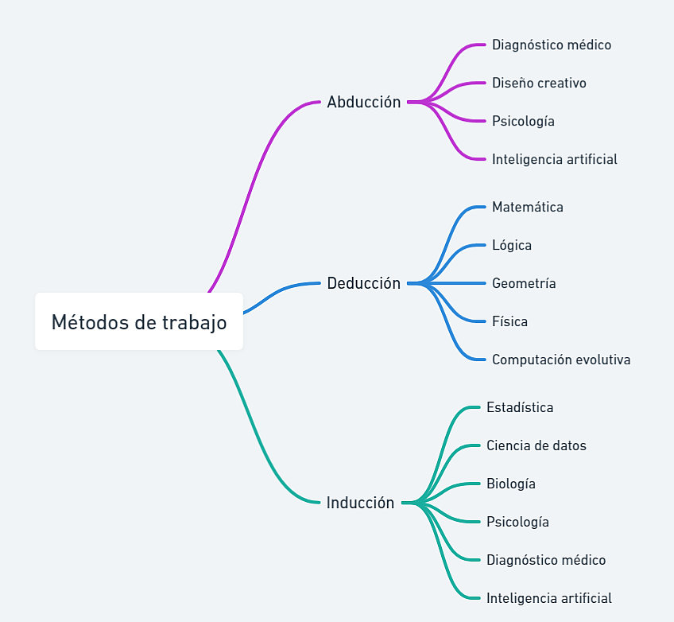
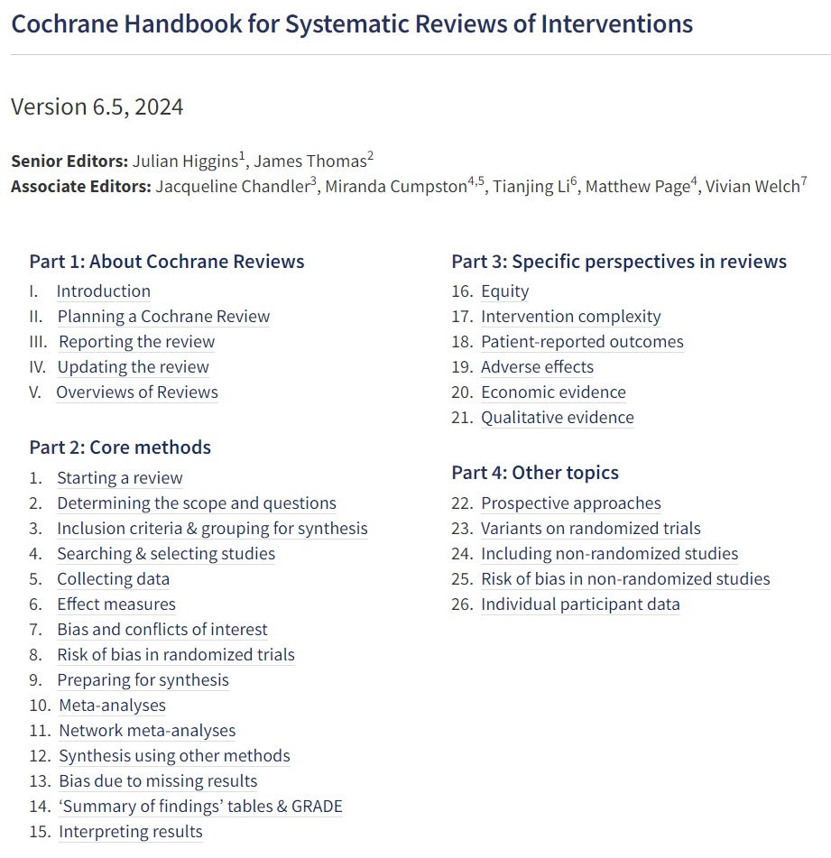

Miguel Moreno es profesor titular de Filosofía en la Universidad de Granada. Su docencia está vinculada al área de Filosofía (Dpto. de Filosofía II), donde imparte las materias Teoría del conocimiento (3º) y Filosofía y conocimiento (4º curso del Grado en Filosofía).
En posgrado, imparte el módulo Biotecnología, Ética y Sociedad en el Máster Universitario en Biotecnología (Facultad de Ciencias, Universidad de Granada) y comparte docencia en Innovación docente e iniciación a la investigación educativa (Máster del Profesorado, Área de Ciencias Sociales - Filosofía).
Ha sido coordinador de la titulación (2014-2017), director de departamento (2017-2021) y vicedecano de infraestructura de la Facultad de Filosofía y Letras (2021-2025).
Regulación social de los desarrollos en IA y sistemas autónomos
Aspectos éticos, sociales y legales de las biotecnologías
Ética ambiental (adaptación al cambio climático, prevención de desastres, justicia global)
Convergencia de tecnologías NBIC (nano-bio-info-cognitivas) con fines de mejora humana
Propiedad intelectual y conflicto de valores en la sociedad del conocimiento
Integrante del equipo de investigación del proyecto Inteligencia artificial y autonomía humana. Hacia una ética para la protección y la mejora de la autonomía en sistemas recomendadores, robótica social y realidad virtual. Proyecto AUTAI (PID2022-137953OB-I00). Programa estatal de Generación de Conocimiento 2022.
Junto con Adrián Villaba (doctorando): ADN sintético: un análisis anticipatorio en reproducción asistida (GRIFOLS-2024).
Participante en el proyecto europeo PREDI-LYNCH (Validated non-invasive liquid biopsy tests for cancer PREDIction in LYNCH Syndrome). Inicio: junio de 2025. Duración: 6 años. Financiación: Programa Horizon Europe Mission on Cancer.
El objetivo de esta monografía es proporcionar una aproximación actualizada a problemas y casos interesantes para un curso de epistemología aplicada. Su orientación es más práctica que teórica, lo que explica que se dedique menos espacio a teorizar en abstracto sobre las fortalezas o debilidades de diversas metodologías de investigación científica que a identificar las ventajas e inconvenientes de su aplicación práctica en distintos dominios disciplinares, incluyendo los diferentes protocolos con los que trabajan profesionales e investigadores en áreas de conocimiento diferenciadas.
Los elementos teóricos proporcionados deberían ser suficientes para acotar el contexto amplio en el que ciertos problemas se originan y desarrollan; pero son los casos seleccionados y las referencias a debates en curso lo que se espera indagar en las distintas secciones, para incentivar una dinámica de actualización y concreción constante.
Los recursos bibliográficos utilizados para desarrollar el programa de la asignatura “Filosofía y conocimiento” se han ido ampliando de manera considerable en los últimos años, en función de la visibilidad que ciertos problemas de naturaleza epistémica adquirían en el debate público. Entre otros, el cuestionamiento sistemático de la evidencia sobre el cambio climático, sobre la utilidad de las vacunas o sobre las medidas de prevención de fenómenos con gran impacto en salud pública (tabaquismo, contaminación, efectos del ruido, etc.) ha proporcionado múltiples ejemplos y contribuciones en diversos medios que sirven de partida para articular estudios de caso adaptados a las competencias y expectativas de estudiantes en el último curso del grado en Filosofía. Esta versión incorpora en el Anexo I un análisis crítico del sobreturismo y su impacto ambiental, social y cultural, como extrapolación del debate sobre apropiación desarrollado en el capítulo 5.
La guerra cultural contra las universidades y centros de investigación independientes emprendida por el trumpismo y sus émulos de la extrema derecha europea proporciona nuevas oportunidades y casos para analizar la involución silenciosa que supone el progresivo deterioro del valor social del conocimiento, como resultado de la politización de todas las instancias de pensamiento independiente y su sumisión al criterio de ignorantes reaccionarios. Esta versión incluye un Epílogo donde se analiza el problema y se valoran sus implicaciones.
La cantidad de artículos extraídos de bases de datos de publicaciones electrónicas y piezas informativas de diversos medios que resultaban interesantes para articular talleres, exposiciones y sesiones centradas en estudio de casos fue creciendo hasta nutrir un listado muy prolijo y difícil de manejar. Gran parte de ese material se menciona en las notas y referencias de cada sección, dejando para la bibliografía final una selección muy acotada de libros y artículos revisados.
Los listados en ocasiones extensos de enlaces, referencias y notas de ciertos apartados se han agrupado en bloques expandibles de texto plano, intentado que cada referencia ocupe una sola línea numerada, fácilmente identificable. Se evita así desplazar al final de cada capítulo el listado de notas y referencias, como suele hacerse en textos académicos impresos. El formato elegido aquí permite copiar de un solo clic cada bloque de enlaces o referencias —un componente de funcionalidad común en los manuales o documentación técnica con fragmentos de código— y facilitar la comprobación por separado de las fuentes externas relacionadas con el contenido de cada apartado o sección.
A diferencia de los procesadores de texto más populares, herramientas como dillinger, stackedit, zettlr, editormarkdown, typora o marktext proporcionan una vista previa con enlaces activos al pegar el contenido de cada bloque de referencias, simplificando el manejo de fuentes y su incorporación en aplicaciones de notas y bases de conocimiento como notion, obsidian, joplin o logseq.
En versiones anteriores de este material se había optado por el formato bookdown (uno de los paquetes disponibles para R Studio) por tratarse de una herramienta bien conocida entre quienes tienen la necesidad de elaborar documentos técnicos, en el ámbito académico o empresarial. El resultado era un bloque de ficheros HTML interrelacionados que podía visualizarse en cualquier navegador, con un menú lateral para recorrer las distintas secciones. Las ventajas de accesibilidad y personalización que permitía bookdown (elección de tipo y tamaño de letra; fondo blanco, sepia u oscuro) las incorporan ya casi todos los navegadores con funciones como Vista lectura, Modo envolvente o mediante extensiones como Just Read, Reader View o similares.
La versión previa (v3. 2024) fue procesada con docsify y desplegada en Vercel (https://docsif.vercel.app/) a partir del contenido del material en el repositorio GitHub, que permite un control exhaustivo de los cambios. La facilidad de navegación y mejor legilibilidad en dispositivos con pantallas de diverso tamaño queda mejor resuelta como se hace en esta versión de fichero HTML5 único, con menú flotante. Una razón determinante para optar por el formato HTML son las funciones de accesibilidad y personalización del texto que incorporan los navegadores más utilizados, y cuyas posibilidades son determinantes frente al PDF, como señalan en su política de accesibilidad sitios como arXiv (Why HTML?). Esto explica el interés por mantener un cuerpo de texto lo más simple y fluido posible, lo que permite traducir a cualquier idioma todo el contenido con un solo clic y, en los navegadores más utilizados, reproducir el texto con voces personalizables o hacer uso de las herramientas mencionadas para leer el texto sin distracciones. El cambio a un tema oscuro aporta mejor contraste y reduce la fatiga visual en la lectura.
La documentación e indicaciones para los estudios de caso aparecen como un bloque plegado que se expande al clicar, utilizando una combinación de las etiquetas <details> y <summary> para facilitar una lectura fluida y sin distracciones del texto principal. En algunos apartados se introducen enlaces activos dentro del cuerpo de texto principal, que permiten una consulta rápida abriendo una nueva ventana o pestaña del navegador. El índice incluye un listado específico de estudios de caso y un glosario ampliado con respecto a versiones previas.
En octubre de 2024 se incorporaron algunos asistentes de razonamiento y cuestionarios que pueden ser útiles para revisar los conceptos e ideas centrales de diversos apartados. En su elaboración resultaron de especial utilidad herramientas como los LLM de Claude.ai (Anthropic), GPT-4o1 (OpenAI) y Gemini 1.5 Pro (Google) con las cuales se generó y depuró el código y los scripts necesarios, además de introducir diversas mejoras en la interfaz de usuario. Otra herramienta fundamental ha sido RStudio, con la que se han procesado los ficheros en formato .qmd (quarto docs) y algunas tablas o esquemas conceptuales. Como alternativas a los buscadores más populares se ha utilizado Copilot (GPT-5) y Claude Sonnet 4 (puntualmente, iAsk.ai y Perplexity Pro), cuyos outputs han sido revisados para descartar imprecisiones o alucinaciones en enlaces y referencias.
El uso de estas herramientas y modelos —en diversos estadios de evolución y prestaciones— ha sido útil para estructurar y resumir los aspectos relevantes en algunos estudios de caso y dar forma al extenso material en apartados saturados de contribuciones en la literatura. Es preciso reconocer que muchos recursos bibliográficos valiosos —sobre todo libros y monografías especializadas— habrían quedado fuera del radar de haber utilizado solo las herramientas convencionales de búsqueda en Scopus, Science Direct y Web of Science.
Agradecimientos
Una parte de los enlaces y recursos seleccionados procede de búsquedas y consultas para contribuir al debate informado en clase, suscitado al hilo de las exposiciones desarrolladas en el aula o en respuesta a preguntas y planteamientos que ampliaban la discusión a otros temas no recogidos en la programación. Es obligado agradecer a quienes, en distintas promociones, participaron activamente en los debates o talleres, y con su actitud crítica contribuyeron a enriquecer las ideas, opiniones y elementos de información aportados en cada sesión.
Dada la naturaleza interdisciplinar de muchos de los temas y cuestiones que se tratan en las asignaturas del último curso del grado en filosofía, agradezco a Francisco Lara, Antonio Diéguez, Enrique Iáñez, Jon Rueda, Joan Llorca y demás colaboradores u organizadores de los seminarios Tecnex sus opiniones y comentarios en calidad de expertos, que su suman a las oportunidades de diálogo y debate con colegas de distintas facultades invitados para tratar temas de Ética y Filosofía Aplicada en la Universidad de Granada. Es imposible recordar cuántos elementos de aprendizaje e intercambio directo en estas sesiones terminan reorientando o enriqueciendo contenido y enfoque en la programación de un curso de epistemología aplicada.
En Granada, a 25 de septiembre de 2025
1. Génesis y condiciones de posibilidad del conocimiento
1.1. Tipos de conocimiento y metodologías asociadas
En un sentido amplio, el conocimiento es la capacidad de comprender e interpretar la realidad a partir de información obtenida por diversos medios. Existen diferentes tipos de conocimiento según su origen, su naturaleza, su validez y su aplicación. En la gestión de empresas y organizaciones, por ejemplo, la distinción entre conocimiento tácito o por experiencia y familiaridad directa con problemas relevantes puede adquirir un valor equiparable al conocimiento sistémico de base conceptual. De ahí el interés en comprender cómo se produce, transmite y valida el conocimiento en contextos no estrictamente científicos, como la práctica profesional, la cultura organizativa o la innovación social. El error, la incertidumbre y el fracaso pueden servir ocasionalmente como elementos de control o validación; pero difícilmente podría consolidarse un campo disciplinar como forma genuina de conocimiento sin someterse a revisión crítica.1, 2, 3
Los dominios disciplinares que sirven de referencia se caracterizan por su capacidad para obtener resultados rigurosos, metódicos, verificables, sistemáticos y sometidos a crítica:
Conocimiento empírico:
Se basa en la experiencia directa y la observación de los hechos. No requiere una explicación teórica ni protocolos sofisticados de comprobación sistemática. Es el conocimiento propio del sentido común y de las prácticas cotidianas.
Conocimiento científico:
Se obtiene mediante el uso del método científico, planteando hipótesis y diseñando experimentos, lo que incluye recogida de datos, análisis de resultados y elaboración de teorías. Idealmente, es un conocimiento objetivo, racional y verificable, pero falible (y costoso en su materialización práctica).
Conocimiento matemático:
Se basa en el uso de principios lógicos y simbólicos para resolver problemas abstractos y cuantitativos. Es un conocimiento deductivo, exacto, universal y necesario.
Pero existen otros tipos consolidados o caracterizados por el uso que parecen responder a criterios menos estrictos, lo que puede inducir comprensiones simplificadoras, estereotipadas o sesgadas de su complejidad:
Conocimiento filosófico:
Se origina en la reflexión crítica y racional sobre los problemas fundamentales de la existencia, el conocimiento, la moral, la política, el arte, etc. No se limita a los hechos empíricos ni a las teorías científicas, sino que busca elementos ligados al sentido y la comprensión de la experiencia individual, en conexión con la realidad social y la naturaleza. Sus manifestaciones pueden ser muy heterogéneas, incluyendo tanto discursos y estilos de razonamiento muy dependientes de los resultados de disciplinas bien consolidadas (biología, física, matemática) como de otras formas de expresión más interpretativas (sociología, antropología, historia) o centradas en la creación y expresión subjetiva (literatura, producción artística).
Matices:
Esta caracterización abarca un espectro demasiado amplio de manifestaciones, que incluirían tanto las más cercanas a disciplinas científicas y sus métodos de trabajo como las que imitan formas de expresión artística y literaria. Incluir aspectos como la “comprensión de la experiencia individual” complica bastante la distinción entre reflexión filosófica y mera opinión.
El saber y la práctica filosófica pueden tener una función complementaria del conocimiento científico, aportando componentes antropológicos y éticos a la comprensión de la realidad. Pero no puede sustituir al conocimiento científico, ni tampoco ser sometido a sus criterios de validación en todos los aspectos relevantes. La reflexión filosófica “dependiente de disciplinas científicas consolidadas” no origina una versión alternativa (divulgativa o devaluada) de dichas disciplinas.
La alusión a “formas de expresión más interpretativas” introduce una cobertura demasiado amplia para discursos de naturaleza informal, ensayística o casual, sin compromiso con la evidencia o los fundamentos.
Conocimiento artístico:
Es el conjunto de saberes relacionados con la expresión estética, la creatividad y la sensibilidad. No es objetivable ni verificable, sino que depende de la interpretación y el gusto de cada individuo. El conocimiento artístico no busca explicar la realidad, sino representarla o transformarla según la visión del artista. Las fuentes y referencias que inspiran la creación artística no presuponen un filtro exigente y riguroso como el que, con ciertas limitaciones, se presupone en las fuentes de documentación científica. Sin embargo, la mayor parte de sus manifestaciones pueden evaluarse con criterios de calidad técnica y según cánones específicos cuyo conocimiento detallado se presupone a personal experto en la corriente o periodo de referencia, a quienes se consulta cuando se duda de la autoría o autenticidad de ciertas obras y de su valor de mercado.
Componente problemático
La dependencia del elemento subjetivo hace esta caracterización problemática. Al afirmar que “no es objetivable ni verificable”, se niega la posibilidad de criterios compartidos en la apreciación artística, ignorando en la práctica la existencia de escuelas artísticas con criterios estéticos compartidos y verificables en su contexto de referencia.
“Negar la intención explicativa” resulta igualmente problemático, puesto que dejaría fuera de la caracterización a ciertas corrientes artísticas con intenciones críticas o explicativas —y el valor internacionalmente reconocido a obras como el “Guernica” de Picasso, que busca representar, explicar y provocar reacción ante una realidad histórica—.
La dependencia exclusiva del “gusto de cada individuo” supone en la práctica ignorar el contexto cultural y social del arte, determinante del valor asociado con las obras o manifestaciones artísticas.
Olaiz Soto, I. (2008). Subjetividad en las prácticas de interpretación del arte: Algunas narrativas visuales para una comprensión crítica de la Historia del Arte. Instituto Promoción Estudios Sociales. https://rieoei.org/historico/expe/3577Olaiz.pdf
Conocimiento intuitivo:
Se supone adquirido por una percepción inmediata e irracional de la realidad, sin necesidad de razonamiento ni evidencia. Es un conocimiento subjetivo, espontáneo e inspirado.
Validación problemática
Si se ignoran los procesos cognitivos subyacentes a la intuición experta, se complica bastante el manejo de criterios de validación (y la posibilidad de distinguir entre intuiciones acertadas y erróneas). Otro elemento problemático en esta caracterización consiste en prescindir de los elementos asociados con aquellas intuiciones basadas en la experiencia y el conocimiento previo, cuyo papel es ampliamente reconocido al personal médico experimentado, con un alto porcentaje de aciertos al diagnosticar enfermedades a partir de elementos adquiridos durante años de estudio y práctica en contextos relevantes.
Dejaría fuera contextos como el de la investigación matemática, donde la intuición puede llevar a descubrimientos verificables posteriormente.
Conocimiento afectivo:
Se relaciona con las emociones y los sentimientos que experimentamos ante la realidad. Es un conocimiento subjetivo, personal e intransferible. No es objetivable ni verificable. No busca explicar la realidad, sino vivirla o sentirla según el estado o dinámica emocional del sujeto.4
Relación entre emociones y procesos cognitivos
Definir esta forma de conocimiento como “subjetivo, personal e intransferible” cercena la posibilidad de comprensión empática y comunicación en el registro emocional adecuado al contexto, así como el aprendizaje o experiencia que fácilmente reconocemos a ciertas personas con habilidades demostradas en este terreno.
La interacción entre emociones y procesos cognitivos que ha motivado múltiples estudios en psicología y neurociencia no debería obviarse, como tampoco el hecho de que las emociones están influenciadas y moldeadas por el contexto social y cultural. Fenómenos como la sincronización emocional en grupos o la transmisión de estados emocionales en espectáculos artísticos y mítines políticos quedarían fuera del radar si se barajan caracterizaciones demasiado simplistas o sesgadas, ajenas igualmente al hecho de que las emociones pueden ser objeto de estudio científico —investigaciones sobre la expresión facial de emociones o la neurobiología del afecto, p. ej.—.
Otros tipos de conocimiento deben su estatus a la popularidad o usos tradicionales, pero no a su compatibilidad con los criterios del método científico:
Conocimiento religioso:
Es el conjunto de saberes relacionados con la fe, la revelación y los códigos morales vinculados a las distintas tradiciones religiosas. El conocimiento religioso no se apoya en la razón ni en la observación, sino en la autoridad divina o eclesiástica. El conocimiento religioso no admite la duda ni el cuestionamiento en algún sentido equiparable al escepticismo metodológico de la actitud científica, por lo que el núcleo de creencias básico deriva de dogmas y preceptos consolidados en cada tradición. En un sentido amplio, incluye la reflexión especializada sobre los orígenes, evolución y fenomenología de las instituciones religiosas, incluyendo el estudio de sus dinámicas de poder y la producción cultural asociada. Pero en este aspecto se aleja de la caracterización inicial, en la medida que adopta métodos y técnicas de investigación propios de las ciencias sociales.
Conocimiento chamánico:
Es el conjunto de “saberes” (y, sobre todo, prácticas) relacionados con la comunicación con el mundo espiritual, la sanación y la magia. El conocimiento chamánico no se basa en evidencias empíricas, sino en creencias y rituales. El conocimiento chamánico no se somete a la crítica ni a la contrastación, sino que se transmite de forma oral y secreta por los iniciados. Si bien popularmente se asocia sobre todo con culturas y sociedades precientíficas, conviene tener presente el peso creciente de este tipo de prácticas en la cultura y dinámica social de países con universidades y centros de pensamiento crítico e independiente de larga tradición, como señalaba M. Harris en El retorno de las brujas (cap. 10 de Vacas, cerdos, guerras y brujas: Los enigmas de la cultura. Alianza Editorial, 1974: 127-135.), analizando el auge de ciertas corrientes de pensamiento en las universidades estadounidenses durante los años setenta.
Conocimiento ancestral:
Es el conjunto de saberes transmitidos de generación en generación por una cultura o una comunidad. El conocimiento ancestral puede tener elementos válidos y útiles, pero también puede contener errores, mitos y prejuicios. El conocimiento ancestral no se actualiza ni se corrige, sino que se conserva como parte de la identidad y la tradición.
Sabiduría esotérica:
Es el conjunto de saberes ocultos o secretos que pretenden acceder a realidades superiores o trascendentes. La sabiduría esotérica no se fundamenta en argumentos lógicos ni en pruebas experimentales, sino en intuiciones y experiencias místicas. La sabiduría esotérica no se comparte ni se divulga, sino que se reserva para los elegidos o los iniciados.
En el dominio amplio de la investigación científica, cada ámbito disciplinar de conocimiento se asocia con una metodología diferente para su producción y transmisión, en constante evolución.1 Estas metodologías incluyen:
Observación: consiste en atender a los fenómenos que ocurren en nuestro entorno, registrando sus características y propiedades. Es una metodología propia del conocimiento empírico y científico.
Experimentación: consiste en manipular las variables que intervienen en un fenómeno para comprobar sus efectos y establecer relaciones causales. Es una metodología propia del conocimiento científico.
Deducción: consiste en inferir conclusiones necesarias a partir de premisas verdaderas. Es una metodología propia del conocimiento matemático y filosófico, pero bastante común en la interpretación y discusión de resultados experimentales.
Inducción: consiste en inferir conclusiones probables a partir de casos particulares observados. Es una metodología propia del conocimiento científico y empírico.
Abducción: consiste en inferir la hipótesis más plausible a partir de unos hechos observados. Es una metodología propia del conocimiento científico y filosófico.
Introspección: consiste en examinar nuestros propios pensamientos, sentimientos y motivaciones. Es una metodología propia del conocimiento afectivo e intuitivo, como vía para comprender y procesar aspectos relevantes de la experiencia personal de difícil articulación mediante un razonamiento lógico explícito. Puede resultar útil en psicología clínica, psicoterapia y diagnóstico temprano de dificultades en psicología educativa.4
Diálogo: consiste en intercambiar ideas y argumentos con otras personas para contrastar puntos de vista y llegar a acuerdos o desacuerdos razonados. El método mayeútico se considera una forma de deliberación o razonamiento asistido, propia del conocimiento filosófico desde sus orígenes en la Grecia clásica y recuperada o reforzada en los procesos de interacción que permiten los asistentes virtuales de inteligencia artificial.5, 6
Tabla 1: Metodologías comúnmente utilizadas en diversas disciplinas y campos de actividad profesional(7-15)
Abducción
Inducción
Deducción
Inteligencia artificial
Estadística
Matemática
Computación evolutiva
Ciencia de datos
Lógica
Diagnóstico médico
Psicología
Geometría
Diseño creativo
Biología
Física teórica
Lingüística
Sociología
Filosofía
Criminología
Antropología
Química
Arqueología
Economía
Astronomía
Educación
Ecología
Informática
Arte
Etnografía
Álgebra
Periodismo
Historia
Derecho
Mostrar enlaces y referencias del aptdo.
Referencias1. Diéguez, A. (2022). Negacionismo, anticiencia y pseudociencias: ¿En qué se diferencian? Cuaderno de Cultura Científica. https://culturacientifica.com/2022/02/14/negacionismo-anticiencia-y-pseudociencias-en-que-se-diferencian/ 2. Nonaka, I., & Takeuchi, H. (2020). The wise company: How companies create continuous innovation. Oxford University Press. 3. Firestein, S. (2016). Failure: Why science is so successful. Oxford University Press. 4. Beretervide, V. (2019). Conocimiento, afectividad y verdad: Un camino de integración. https://www.aacademica.org/000-111/159. 5. Lara, F., & Rodríguez-López, B. (2024). Socratic nudges, virtual moral assistants and the problem of autonomy. AI & Society. https://doi.org/10.1007/s00146-023-01846-3 6. Carmen, S. et al. (2015, February 20). El método socrático. https://hdl.handle.net/20.500.14352/65655 Enlaces (Tabla 1)7. Deducción, inducción, abducción: razonando y argumentando. https://humanistasenlared.com/filosofia/deduccion-induccion-abduccion-razonar-argumentar/.8. Diferencia entre inducción y deducción: sus métodos y ejemplos. https://www.diferenciador.com/induccion-y-deduccion/.9. La Inteligencia Artificial en la Educación - UNESCO. https://es.unesco.org/themes/tic-educacion/inteligencia-artificial.10. Ramas de la Inteligencia Artificial: Técnicas y aplicaciones | APD. https://www.apd.es/tecnicas-de-la-inteligencia-artificial-cuales-son-y-para-que-se-utilizan/.11. Desarrollo y retos de la Inteligencia Artificial - UNESCO. https://es.unesco.org/sites/default/files/l1_desarrollo_y_retos_de_la_ia.pdf.12. Induction, Deduction, and Abduction | SpringerLink. https://link.springer.com/referenceworkentry/10.1007/978-3-030-26050-7_159-1.13. Deduction, Induction, and Abduction - Communication - iResearchNet. https://communication.iresearchnet.com/communication-theory-and-philosophy/deduction-induction-and-abduction/.14. Inductive vs. Deductive vs. Abductive Reasoning | Merriam-Webster. https://www.merriam-webster.com/grammar/deduction-vs-induction-vs-abduction. 15. Razonamiento abductivo. https://es.wikipedia.org/wiki/Razonamiento_abductivo.
Enfoques y estilos de trabajo en investigación
El recurso a la abducción, inducción y deducción en investigación
1. Definiciones:
Abducción: Proceso de formar una hipótesis explicativa. Es la operación lógica por la que surgen hipótesis novedosas.
Inducción: Razonamiento que va de lo particular a lo general. Se basa en la generalización a partir de casos específicos.
Deducción: Razonamiento que va de lo general a lo particular. Parte de premisas generales para llegar a una conclusión específica.
2. Aplicación:
Aplicados como métodos de razonamiento lógico:
Son formas fundamentales de realizar inferencias lógicas.
Cada uno representa una estructura distinta de argumento.
Como estilos de pensamiento en investigación:
Reflejan diferentes enfoques para abordar problemas y generar conocimiento.
Influyen en cómo los investigadores formulan hipótesis y diseñan estudios.
Como etapas en el proceso de investigación científica:
Abducción: Generación de hipótesis
Deducción: Derivación de consecuencias observables
Inducción: Verificación empírica
Como herramientas metodológicas:
Sirven como instrumentos para el diseño y análisis en investigación.
Guían la selección de técnicas específicas de recolección y análisis de datos.
3. Comparativa de uso posible en un contexto de investigación:

Abducción, deducción e inducción
Aspecto
Abducción
Inducción
Deducción
Dirección del razonamiento
De los datos a la hipótesis explicativa
De lo particular a lo general
De lo general a lo particular
Fase típica en investigación
Generación de hipótesis
Generalización de resultados
Prueba de hipótesis
Certeza de las conclusiones
Plausibles
Probables
Necesarias (si las premisas son verdaderas)
Papel en la innovación
Alto (genera nuevas ideas)
Medio (expande conocimiento existente)
Bajo (aplica conocimiento existente)
4. Observaciones
Estos conceptos no son mutuamente excluyentes en la práctica de la investigación.
A menudo se utilizan en combinación a lo largo del proceso de investigación.
Su aplicación puede variar según la disciplina y el paradigma de investigación.
En la ciencia moderna, se reconoce cada vez más la importancia de la abducción en la generación de nuevas teorías.
Flach, P. A., & Kakas, A. C. (2000). Abduction and Induction: Essays on their Relation and Integration. Springer Netherlands. https://doi.org/10.1007/978-94-017-0606-3
Magnani, L. (2017). The Abductive Structure of Scientific Creativity: An Essay on the Ecology of Cognition. Springer International Publishing. https://doi.org/10.1007/978-3-319-59256-5
Nickles, T. (2014). Heuristic Appraisal at the Frontier of Research. En Studies in applied philosophy, epistemology and rational ethics (pp. 57-87). https://doi.org/10.1007/978-3-319-09159-4_4
Project, P. E. (1998). The Essential Peirce, Volume 2 (1893–1913): Selected Philosophical Writings. Indiana University Press.
Popper, K. (2002). The Logic of Scientific Discovery (2nd ed.). Routledge. (Original work published 1959).
Reichertz, J. (2019). Abduction: The logic of discovery of grounded theory - An updated review. In A. Bryant & K. Charmaz (Eds.), The SAGE Handbook of Current Developments in Grounded Theory (pp. 259-281). SAGE Publications Ltd. https://dx.doi.org/10.4135/9781526436061.n15.
Walton, D. (2014). Abductive Reasoning. University of Alabama Press.
Interrelaciones disciplinares (diagrama)
Diagrama mermaid vertical sobre abducción, inducción y deducción
Desglose de metodologías específicas por ámbito disciplinar
Commonly Used Methodologies in 30 Disciplines (iAsk.ai, 9/09/2024)
Medicine
Evidence-Based Medicine (EBM): This methodology integrates clinical expertise, patient values, and the best research evidence into the decision-making process for patient care.
Psychology
Cognitive Behavioral Therapy (CBT): A structured, goal-oriented psychotherapy that focuses on changing patterns of thinking or behavior that contribute to a person’s problems.(*)
Education
Constructivist Teaching Methods: These methods emphasize active learning where students construct their own understanding and knowledge through experiences and reflecting on those experiences.
Engineering
Systems Engineering: An interdisciplinary approach that focuses on how complex engineering projects should be designed and managed over their life cycles.
Business Management
Lean Management: A methodology that focuses on minimizing waste within manufacturing systems while simultaneously maximizing productivity.
Information Technology
Agile Development: A project management methodology that promotes continuous iteration of development and testing throughout the software development lifecycle.
Environmental Science
Ecosystem-Based Management (EBM): A holistic approach to managing natural resources that considers entire ecosystems, including humans.
Sociology
Qualitative Research Methods: These methods focus on understanding social phenomena from the perspective of those involved, often using interviews and observations.
Marketing
Content Marketing Strategy: A strategic approach focused on creating valuable content to attract and engage a target audience effectively.
Economics
Econometric Analysis: The use of statistical methods to test hypotheses and forecast future trends in economic data.
Political Science
Comparative Politics Methodology: This involves comparing political systems or behaviors across different countries to understand political phenomena better.
Anthropology
Ethnographic Fieldwork: A qualitative research method where researchers immerse themselves in a community to observe and interact with participants in their natural environment.
Architecture
Design Thinking: An iterative process involving five phases—empathize, define, ideate, prototype, and test—to solve complex problems creatively.
Chemistry
Experimental Design Methodology: This involves planning experiments systematically to ensure valid results can be obtained from chemical investigations.
Physics
Theoretical Modeling and Simulation Techniques: These methodologies involve creating abstract models to predict physical phenomena based on theoretical principles.
History
Historical Methodology: This involves critical examination of sources, contextualization, and interpretation of past events through various lenses such as social or economic history.
Law
Case Law Analysis Methodology: This involves studying previous judicial decisions to understand legal precedents and apply them to current cases.
Agriculture
Sustainable Farming Practices (SFP): These methodologies aim at meeting current food needs without compromising future generations’ ability to produce food by maintaining ecological balance.
Neuroscience
Neuroimaging Techniques (e.g., fMRI): These methodologies are used for visualizing brain activity by detecting changes associated with blood flow in the brain during cognitive tasks.
Data Science
Machine Learning Algorithms (e.g., supervised learning): These methodologies involve training algorithms on data sets so they can make predictions or classifications based on new data inputs.
Public Health
Epidemiological Studies (e.g., cohort studies): These methodologies investigate the distribution and determinants of health-related states in specified populations to control health problems.
Linguistics
Corpus Linguistics Methodology: This involves analyzing large collections of written or spoken texts (corpora) to study language use patterns quantitatively and qualitatively.
Philosophy
Analytic Philosophy Methodology: This emphasizes clarity of expression and logical argumentation in philosophical inquiry, often breaking down complex ideas into simpler components for analysis.
Theology
Historical-Critical Method: This is used for interpreting religious texts by considering historical context, authorship, and textual variations over time for deeper understanding of doctrines.
Sports Science
Biomechanical Analysis: This methodology uses principles of mechanics to analyze human movement during sports activities for performance enhancement or injury prevention purposes.
Fashion Design
Trend Forecasting: This methodology involves predicting future fashion trends based on consumer behavior analysis, cultural influences, and market research data collection techniques.
Urban Planning
Participatory Planning: Involves engaging stakeholders in the planning process through workshops or public meetings to gather input for urban development projects effectively.
Robotics
Control Systems Theory: This methodology applies mathematical concepts to design systems that manage dynamic processes in robotics for automation purposes effectively.
Veterinary Science
Clinical Pathology Methods: These are diagnostic techniques used by veterinarians involving laboratory tests on animal samples (blood, urine) for disease diagnosis or health monitoring purposes.
Telecommunications
Network Design Methodologies: These involve systematic approaches for designing telecommunications networks ensuring reliability, efficiency, scalability, and security.
Sources:
American Psychological Association (APA) - Provides comprehensive guidelines on psychological practices including evidence-based therapies.
Project Management Institute (PMI) - Offers standards for project management methodologies including Agile frameworks widely adopted across industries.
National Institutes of Health (NIH) - Supplies extensive research findings related to medical practices including evidence-based medicine approaches.
*Observaciones sobre la CBT:
En relación con la metodología de la Terapia Cognitivo-Conductual (CBT, por sus siglas en inglés) se considera una de las formas de psicoterapia bien estudiadas y sustentada en evidencia empírica, cuya estandarización y vigencia se ajusta a criterios relevantes:
Estructura y enfoque en objetivos: La CBT es una terapia estructurada y orientada a objetivos, lo cual es una característica fundamental y estandarizada de este enfoque[1].
Duración limitada: Típicamente se extiende durante 10 a 20 sesiones semanales, dependiendo de la gravedad de la condición del paciente[3].
Amplia aplicabilidad: La CBT ha demostrado ser eficaz para una variedad de trastornos psiquiátricos, incluyendo ansiedad, depresión, trastornos alimentarios, TEPT, entre otros[3].
Evidencia a largo plazo: Estudios meta-analíticos han demostrado que la CBT tiene efectos positivos que se mantienen hasta 12 meses o más después de completar el tratamiento para ciertos trastornos[1].
Componentes estandarizados: La CBT típicamente incluye elementos como la educación del paciente, la colaboración terapéutica, y tareas para el hogar, que son aspectos estandarizados de esta metodología[3].
Reconocimiento profesional: La CBT es ampliamente reconocida tanto en psiquiatría como en psicología, y aparece en la mayoría de las guías de tratamientos psicológicos efectivos[5].
Evolución continua: Aunque mantiene sus principios fundamentales, la CBT ha evolucionado para incorporar nuevos conocimientos y técnicas, lo que demuestra su vigencia y adaptabilidad[5].
Si bien la CBT es altamente efectiva y estandarizada, también existen debates sobre sus mecanismos exactos de acción y su eficacia comparativa con otras terapias en ciertos contextos[5]. Sin embargo, en general, la descripción proporcionada refleja una metodología que sigue siendo considerada estándar y vigente en el campo de la psicoterapia.
Consulta y enlaces asociados: Perplexity, 9/09/2024
La epistemología es la rama de la filosofía que estudia el conocimiento científico: su origen, su naturaleza, sus límites, sus criterios y sus problemas. Su nombre proviene del griego episteme (conocimiento) y logos (estudio). Su objeto de estudio exige familiarizarse con una serie de conceptos básicos (verdad, evidencia, justificación, etc.) y criterios de calidad metodológica (coherencia, falsación, verificación, etc.).
La epistemología se ocupa de cuestiones como:
¿Qué es el conocimiento científico y cómo se diferencia de otros tipos de conocimiento?
¿Qué fuentes, métodos y herramientas utiliza la ciencia para producir conocimiento?
¿Qué conceptos, teorías y leyes forman el contenido del conocimiento científico?
¿Qué criterios se emplean para evaluar la verdad, la validez, la objetividad y la racionalidad del conocimiento científico?
¿Qué límites y dificultades encuentra la ciencia para conocer la realidad?
¿Qué tipos, ramas y disciplinas conforman el conjunto de las ciencias?
¿Cómo se relacionan las ciencias entre sí y con otras formas de saber?
¿Cómo evoluciona, cambia y progresa el conocimiento científico a lo largo de la historia?
¿Qué implicaciones sociales, éticas y culturales tiene el desarrollo de la ciencia?
La epistemología se puede dividir en dos grandes enfoques:
Epistemología general: se ocupa de los aspectos comunes a todas las ciencias, como la definición, la clasificación, la metodología y la lógica del conocimiento científico.
Epistemología particular: se ocupa de los aspectos específicos de cada ciencia, como sus conceptos, sus principios, sus problemas y sus resultados.
La epistemología tiene una estrecha relación con otras disciplinas filosóficas, como la ontología (estudia el ser y la realidad), la gnoseología (estudia el conocimiento en general), la lógica (estudia las formas válidas del razonamiento) y la ética (se ocupa de los valores, la justificación racional de los cursos de acción y las normas morales).
1.3. Versiones del escepticismo
El escepticismo es una corriente filosófica que pone en duda o niega la posibilidad de alcanzar un conocimiento verdadero y seguro de la realidad. Su nombre proviene del griego skeptomai (examinar, indagar). El escepticismo surgió en la antigua Grecia con el pensamiento de Pirrón de Elis (siglo IV a.C.), quien sostenía que no podemos afirmar nada con certeza, sino solo opinar, pues todo es relativo al sujeto que conoce. Los escépticos proponían suspender todo juicio (epojé) y mantener una actitud de indiferencia (ataraxia) ante las apariencias.
El escepticismo se desarrolló en distintas escuelas y épocas, adoptando diferentes formas y grados.1-11
Algunas versiones del escepticismo son:
Escepticismo radical: niega totalmente la posibilidad de conocer la verdad. Afirma que todo es incierto, dudoso e indemostrable. Es una postura extrema e incoherente, pues se contradice a sí misma al afirmar algo que no puede saber.
Escepticismo moderado: duda parcialmente de la posibilidad de conocer la verdad. Afirma que hay algunas cosas que podemos conocer con certeza (como las matemáticas o la lógica), pero otras que no podemos conocer (como la metafísica o la religión). Es una postura más razonable y prudente, pues reconoce los límites del conocimiento humano.
Escepticismo metódico: duda provisionalmente de todo lo que no sea evidente para encontrar un fundamento seguro del conocimiento. Afirma que hay que someter a examen crítico todas nuestras creencias para descartar las falsas y conservar las verdaderas. Es una postura instrumental y transitoria, pues busca superar la duda mediante la razón.
Mostrar referencias
1. Popkin, R. H. (1979). The History of Scepticism from Erasmus to Spinoza. Univ of California Press. 2. Popkin, R. H. (2003). The history of scepticism: From Savonarola to Bayle. OUP.3. Empiricus, S. (2000). Sextus Empiricus: Outlines of Scepticism. Eds.: Julia Annas & Jonathan Barnes. Cambridge University Press.4. Comesaña, Juan and Peter Klein, "Skepticism", The Stanford Encyclopedia of Philosophy (Spring 2024 Edition), Edward N. Zalta & Uri Nodelman (eds.), URL = <https://plato.stanford.edu/archives/spr2024/entries/skepticism/>.5. Ebbs, Gary, "Content Externalism and Skepticism", The Stanford Encyclopedia of Philosophy (Spring 2025 Edition), Edward N. Zalta & Uri Nodelman (eds.), URL = <https://plato.stanford.edu/archives/spr2025/entries/skepticism-content-externalism/>.6. Bergmann, M. (2021). Radical skepticism and epistemic intuition. Oxford University Press.7. Fumerton, Richard A. (2011). "Skepticism and Epistemic Externalism". In Bernecker, S., & Pritchard, D. (2011). The Routledge companion to epistemology. Taylor & Francis, pp. 488–499. https://doi.org/10.4324/97802038390658. Greco, J. (2011). The Oxford Handbook of Skepticism. Oxford University Press. 9. Hazlett, Allan (2014). A Critical Introduction to Skepticism. Bloomsbury. 10. Greco, J. (2008). The oxford handbook of skepticism (1st ed). Oxford University Press, Incorporated.11. Popkin, & H, R. (1999, July 26). Skepticism | Definition, Philosophy, examples, History, & Criticism. Encyclopedia Britannica. https://www.britannica.com/topic/skepticism
1.4. Heterodoxia científica, protociencia y anticiencia
La heterodoxia científica es el conjunto de teorías, hipótesis o afirmaciones que se apartan o contradicen el consenso establecido por la comunidad científica sobre un determinado campo o tema de investigación. La heterodoxia científica puede tener diferentes grados y motivos, desde una simple discrepancia hasta una ruptura radical.
La heterodoxia científica puede ser vista como una amenaza o un desafío para el conocimiento científico vigente, pero también como una oportunidad o un estímulo para su revisión y progreso.1, 2
Algunos ejemplos históricos de heterodoxia científica son:
- La teoría de la relatividad de Einstein, que cuestionó los principios de la física newtoniana y abrió nuevos horizontes para la cosmología y la física cuántica.
- La teoría de la evolución de Darwin, que desafió las concepciones religiosas y metafísicas sobre el origen y la naturaleza de las especies y sentó las bases de la biología moderna.
- La teoría heliocéntrica de Copérnico, que contradijo el modelo geocéntrico defendido por la iglesia católica y la tradición aristotélica y revolucionó la astronomía y la visión del mundo.3, 4
La heterodoxia científica puede dar lugar a dos fenómenos distintos: la protociencia y la anticiencia.
La protociencia es el conjunto de ideas, hipótesis o teorías que aún no han sido aceptadas ni refutadas por la comunidad científica, pero que tienen potencial para convertirse en ciencia si se someten al método científico y se contrastan con los hechos. La protociencia es una forma de exploración e innovación científica, que puede conducir al descubrimiento de nuevos fenómenos o al desarrollo de nuevas disciplinas.5, 6 Algunos ejemplos históricos de protociencia son:
La alquimia, que fue el precursor de la química moderna y que buscaba transformar los metales en oro, encontrar el elixir de la vida o la piedra filosofal.
La astrología, que fue el antecedente de la astronomía y que pretendía predecir el destino de las personas a partir de la posición de los astros.
La frenología, que fue el origen de la neurociencia y que pretendía determinar el carácter y las capacidades de las personas a partir de la forma del cráneo.
La anticiencia es el conjunto de ideas, hipótesis o teorías que se oponen o rechazan el conocimiento científico establecido, sin ofrecer evidencias ni argumentos válidos para sustentar sus afirmaciones. La anticiencia es una forma de negación o distorsión de la ciencia, que puede tener fines ideológicos, religiosos, económicos o políticos.4,5 La anticiencia puede causar daños sociales, ambientales o sanitarios al difundir falsedades o engaños.7 Algunos ejemplos actuales de anticiencia son:
El creacionismo, que niega la teoría de la evolución y defiende que el origen y la diversidad de la vida se deben a un acto divino.
El negacionismo del cambio climático, que rechaza las evidencias y los consensos científicos sobre el calentamiento global y sus causas antropogénicas.
El movimiento antivacunas, que desconfía o rechaza las vacunas como método preventivo de enfermedades infecciosas, basándose en mitos o falsedades.7, 8
Mostrar referencias
1. Kuhn, T. S. (1994, orig. 1962). The structure of scientific revolutions (2. ed., enlarged, 21. print). Univ. of Chicago Press.2. Devlin, W. J., & Bokulich, A. (2015). Kuhn’s Structure of Scientific Revolutions - 50 years on. Springer. https://doi.org/10.1007/978-3-319-13383-63. Kuhn, T. S. (1996, orig. 1957). La revolución copernicana: la astronomía planetaria en el desarrollo del pensamiento. Ariel.4. Feyerabend, P. (2002, orig. 1975). Against method (Reprinted der 3. ed. 1993). Verso.5. Entrada "Protociencia" (2025). En Wikipedia, la enciclopedia libre. https://es.wikipedia.org/w/index.php?title=Protociencia&oldid=1675215286. "Método Científico" (2025). En significados.com. https://www.significados.com/metodo-cientifico 7. Diéguez Lucena, A. (2022). "Negacionismo, anticiencia y pseudociencias: ¿en qué se diferencian?" Cuaderno de Cultura Científica. https://culturacientifica.com/2022/02/14/negacionismo-anticiencia-y-pseudociencias-en-que-se-diferencian/.8. Sánchez, R. M. (2023, marzo 11). Ciencia, pseudociencia y protociencia: Conceptos y diferencias clave. Mente y Ciencia. https://www.menteyciencia.com/ciencia-pseudociencia-y-protociencia-conceptos-y-diferencias-clave/
1.5. Teorías de la verdad y criterios de certeza
La verdad es una propiedad que se atribuye a las afirmaciones o proposiciones que se corresponden con la realidad. Pese al intenso debate filosófico sobre la noción de verdad, su naturaleza y criterios de determinación, parece improbable que la vedad deje de figurar entre los objetivos principales del conocimiento humano.
Existen diferentes teorías filosóficas sobre el concepto de verdad y los criterios de certeza asociados. Algunas de las más importantes son:
Teoría de la correspondencia:
Sostiene que una proposición es verdadera si se corresponde con los hechos o con la evidencia empírica. Es una teoría realista, objetiva y verificacionista. Es propia del conocimiento científico y empírico. Esta teoría se asocia con Aristóteles y Bertrand Russell, entre otros autores. Presupone un marco epistémico realista y objetivista, fundamental en el conocimiento científico y en la investigación experimental. Sin embargo, ha sido criticada por la dificultad de definir precisamente qué constituye una “correspondencia” con la realidad.1, 2, 3
Teoría de la coherencia:
Sostiene que una proposición es verdadera si es coherente con un sistema lógico —consistencia interna— o con un conjunto de creencias —interconexión lógica de las proposiciones—. Es una teoría idealista, subjetiva y racionalista, propia del conocimiento matemático y clave en el razonamiento filosófico. No obstante, la coherencia por sí sola puede no garantizar la verdad, como argumenta Nicholas Rescher. Se suele subestimar la dificultad para definir qué constituye un sistema coherente y el problema de cómo manejar sistemas coherentes pero incompatibles4, 5, 6, 7
Teoría pragmática:
Propuesta por Charles Sanders Peirce y William James, sostiene que una proposición es verdadera si es útil o tiene consecuencias positivas para quien la sostiene. Es una teoría relativista, pragmática e instrumentalista, referencia habitual en ética aplicada y en el análisis de problemas morales. Sus críticos sostienen que tiende a relativizar los criterios de verdad y de valor moral, entre otras razones por la dificultad para eludir la circularidad en cualquier definición de “utilidad”.8, 9
Teoría consensual:
Asociada a autores como Jürgen Habermas, esta teoría propone que la verdad emerge del consenso en una comunidad ideal de investigadores. Sus partidarios reconocen la dimensión social del conocimiento; pero no salen airosos en el debate sobre la posibilidad de alcanzar un consenso genuino y sobre cómo manejar el desacuerdo persistente, en particular cuando las posiciones están respaldadas por actores de autoridad reconocida. Es una teoría convencionalista, social e histórica, a la que se recurre con frecuencia en el debate antropológico o religioso y en los estudios culturales.10, 11, 12
Teoría deflacionaria:
Una perspectiva más reciente, defendida por Paul Horwich, entre otros autores. Argumenta que el concepto de verdad no tiene una naturaleza sustantiva y que su función es principalmente lógica o expresiva. Pese al interés de este enfoque minimalista, la propuesta ha sido cuestionada por sus limitaciones para capturar todos los usos del concepto de verdad. En ciertos debates, los actores negacionistas reciben de buen grado las interpretaciones minimalistas de conceptos como verdad o evidencia.13, 14
Cada teoría de la verdad implica un criterio de certeza, es decir, un método o una prueba para establecer o justificar la verdad de una proposición.5 Algunos criterios de certeza son:
La evidencia: consiste en apelar a los datos empíricos, los hechos observados o los resultados experimentales que confirman o refutan una proposición. Es el criterio propio de la teoría de la correspondencia, por más que en ocasiones resulte problemática la interpretación de la evidencia.12
La deducción: consiste en inferir conclusiones necesarias a partir de premisas verdaderas, usando las reglas de la lógica. Es el criterio propio de la teoría de la coherencia.
La utilidad: consiste en evaluar las consecuencias prácticas, morales o emocionales que se derivan de aceptar o rechazar una proposición. Es el criterio propio de la teoría pragmática.
El consenso: consiste en apoyarse en la opinión mayoritaria, el acuerdo social o la autoridad reconocida que avalan o rechazan una proposición. Es el criterio propio de la teoría consensual, aunque sus implicaciones para el análisis de la objetividad científica deberían evaluarse con cautela (por el riesgo de distorsión que pueden introducir factores no epistémicos).15
Simplicidad y economía conceptual: se trata de un criterio aplicable a varias teorías, no solo a la deflacionaria. Evocando la navaja de Ockham, conviene tener presente que la simplicidad puede entrar en conflicto con otros valores epistémicos, como señala Richard Boyd.16
Ciertos enfoques no consideran estas teorías y criterios mutuamente excluyentes, lo que en la práctica parece reforzar las perspectivas pluralistas que reconocen la complejidad del concepto de verdad y la diversidad de contextos epistémicos donde poner a prueba su alcance.17 Sin embargo, en el debate académico se asume que el conocimiento requiere no solo creencia verdadera, sino también una base epistémica sólida que permita evaluar cuándo una afirmación puede considerarse cierta, en línea con la distinción entre certeza, justificación y verdad que propone Chisholm.18
Mostrar referencias del aptdo.
1. Russell, B. (1912). Problems of Philosophy. London: Oxford University Press. 2. David, M. (2022). "The Correspondence Theory of Truth", The Stanford Encyclopedia of Philosophy, Edward N. Zalta (ed.), https://plato.stanford.edu/entries/truth-correspondence 3. Künne, W. (2003). Conceptions of Truth. En Oxford University Press eBooks. https://doi.org/10.1093/0199241317.001.0001 4. Blanshard, B. (1939). The Nature of Thought. London: Allen & Unwin. 5. Rescher, N. (1973). Coherence Theory of Truth. Londres, Inglaterra: Oxford University Press. 6. Walker, R. C. S. (2018). "The Coherence Theory of Truth". In M. Glanzberg (Ed.), The Oxford Handbook of Truth, (ch. 8: 219-236). Oxford University Press. 7. Damnjanovic, N., Candlish, S. (2013). The Myth of the Coherence Theory of Truth. In: Textor, M. (eds) Judgement and Truth in Early Analytic Philosophy and Phenomenology. History of Analytic Philosophy. Palgrave Macmillan, London. https://doi.org/10.1057/9781137286338_8 8. James, W. (1907). Pragmatism. New York: Longmans, Green, and Co. 9. Haack, S. (1976). The Pragmatist Theory of Truth. The British Journal For The Philosophy Of Science, 27(3), 231-249. https://doi.org/10.1093/bjps/27.3.231 10. Habermas, J. (1984). The Theory of Communicative Action: Reason and the rationalization of society. Boston : Beacon Press. 11. Rehg, William. 2009. Cogent science in context: The science wars, argumentation theory, and Habermas. Mit Press. 12. Kuhn, Thomas S. (1962, 1996). The Structure of Scientific Revolutions. 3rd ed. Chicago: University of Chicago Press. 13. Horwich, P. (1998). Truth, Ch. 1, 3. Oxford University Press. 14. Kunne, W. (2003). Conceptions of Truth. Oxford, Inglaterra: Clarendon Press. 15. Longino, H. E. (1990). Science as Social Knowledge: Values and Objectivity in Scientific Inquiry. Princeton University Press. 16. Boyd, R. (1990). Realism, approximate truth, and philosophical method. In C. Wade Savage (Ed.), Scientific Theories, pp. 355-391. University of Minnesota Press. 17. Lynch, M. P. (2009). Truth as One and Many. Oxford University Press.18. Chisholm, R. (1989). Theory of knowledge (3rd ed.). Prentice Hall.
1.6. Paradigmas de racionalidad y conocimiento aplicado
Un paradigma es un modelo o un patrón que orienta el pensamiento y la acción en un determinado ámbito o disciplina. Un paradigma establece los principios, los métodos, los conceptos y los problemas que se consideran válidos y relevantes para el desarrollo del conocimiento.1
Un paradigma de racionalidad es un conjunto de normas, valores y criterios que definen lo que se considera racional o irracional en un contexto histórico y cultural determinado. Un paradigma de racionalidad determina lo que se acepta como verdadero, falso, lógico, ilógico, coherente, incoherente, etc.
Un paradigma de conocimiento aplicado es un conjunto de teorías, técnicas y prácticas que se utilizan para resolver problemas concretos y satisfacer necesidades específicas en un ámbito profesional o social determinado. Un paradigma de conocimiento aplicado implica el uso de conocimientos científicos, tecnológicos, artísticos, etc.3
Los paradigmas de racionalidad y conocimiento aplicado pueden variar según las épocas, las culturas y las disciplinas.2 Algunos ejemplos históricos de paradigmas son:
El paradigma clásico: se basa en la racionalidad griega y latina, que busca la armonía, la proporción y la belleza en el conocimiento. Se aplica a las artes, las matemáticas y la filosofía.
El paradigma medieval: se basa en la racionalidad cristiana, que busca la fe, la revelación y la salvación en el conocimiento. Se aplica a la teología, la escolástica y el derecho canónico.
El paradigma moderno: se basa en la racionalidad científica, que busca la observación, la experimentación y la explicación en el conocimiento. Se aplica a las ciencias naturales, sociales y humanas.
El paradigma posmoderno: se basa en la racionalidad crítica, que busca la diversidad, la complejidad y la interpretación en el conocimiento. Se aplica a las ciencias sociales, humanas y culturales.
Mostrar referencias
1. Kuhn, Thomas S. (1962, 1996). The Structure of Scientific Revolutions. 3rd ed. Chicago: University of Chicago Press, 1996. 2. Habermas, Jürgen (1984). The Theory of Communicative Action, Volume 1: Reason and the Rationalization of Society. Translated by Thomas McCarthy. Boston: Beacon Press. 3. Schön, Donald A. (1983). The Reflective Practitioner: How Professionals Think in Action. New York: Basic Books.
Caso 1: Disfunciones que agravaron el desastre en la DANA de Valencia (29/10/2024)
Epistemología del riesgo y gestión de desastres - Las inundaciones de Valencia 2024
1. Introducción al Marco Analítico
Este caso examina un evento catastrófico que ilustra la complejidad de los sistemas socio-técnicos en la gestión de riesgos naturales. Las inundaciones de Valencia en 2024 sirven de escenario ideal para analizar la intersección entre conocimiento científico, sistemas de alerta temprana, procesos de toma de decisiones y estrategias de comunicación del riesgo.
2. Componentes epistemológicos clave
2.1 Sistemas de medición y seguimiento
- Datos satelitales (Landsat 8, Copernicus)
- Registros hidrológicos (Confederación Hidrográfica)
- Sistemas de predicción meteorológica (AEMET)
2.2 Interpretación y procesamiento de datos
- Umbrales de riesgo establecidos
- Modelos predictivos utilizados
- Incertidumbre en las estimaciones
- Episodios previos de fuertes lluvias ligados al mismo sistema
2.3 Cadena esperable de transmisión del conocimiento
3. Análisis crítico de fallos sistémicos
3.1 Brecha epistémica entre conocimiento y acción
La predicción técnica fue relativamente precisa (aviso 8 días antes), pero falló la traducción del conocimiento técnico en acciones preventivas efectivas.
Cronología crítica y actores principales:
timeline 20-Oct : Primer aviso AEMET : Detección inicial dana 28-Oct : Aviso rojo 22:48h : Puntos específicos 29-Oct : Código rojo 9:41h : Toda Valencia 29-Oct : SMS alerta 20:03h : Demasiado tarde
Cadena de responsabilidades y puntos de ruptura:
Nivel Técnico-Científico (AEMET)
Generación correcta de predicciones
Emisión oportuna de avisos técnicos
Cumplimiento de protocolos Meteoalerta
Nivel Administrativo-Ejecutivo
Confederación Hidrográfica del Júcar
Monitoreo de caudales
Datos limitados en puntos críticos
Gobierno Autonómico (Presidencia de Carlos Mazón)
Responsabilidad en activación de protocolos
Demora en toma de decisiones preventivas
Nivel Operativo-Emergencias
Protección Civil
Retraso en activación del sistema Es-Alert
Mensaje SMS enviado cuando la crisis ya era grave
Servicios municipales
Falta de coordinación intermunicipal
Ausencia de protocolos preventivos
Análisis de la brecha epistémica:
A. Fallos en la traducción del conocimiento
Del texto original se evidencia:
“En la parte de la gestión de la emergencia, la de protección civil, la gente no estaba realmente bien informada, se enteró por los medios, por las radios o por las redes” (Olcina)
Esta cita revela una ruptura fundamental entre:
- Conocimiento técnico disponible
- Traducción a acciones preventivas
- Comunicación efectiva al público
B. Distorsiones institucionales
Como señala una de las fuentes citadas en el dossier de prensa:
“Le aseguro que un presidente autonómico gestiona en función de la información que recibe, y la información que se recibe dependen de organismos con competencia exclusiva del Gobierno central” (Feijóo).
Esta declaración revela:
- Fragmentación de responsabilidades (o intención de dar dicha impresión)
- Barreras burocráticas (con actores intermedios sin cualificación)
- Posible politización de la gestión del riesgo
C. Deficiencias en la cadena de mando
Evidenciado en:
“cuando ya se sabe que es un código rojo, enseguida hay que mandar la alerta precautoria, aconsejando no salir de casa” (Olcina)
Problemas identificados:
1. Demora en la toma de decisiones ejecutivas
2. Falta de protocolos claros de actuación
3. Ausencia de medidas preventivas obligatorias
Consecuencias de la brecha:
Comportamiento ciudadano inadecuado
“la gente sacó los coches y los camiones como si fuera un día normal”
Falta de medidas preventivas
“En ciertas zonas de Murcia prohibieron el movimiento de coches y suspendieron las clases el día anterior”
Respuesta tardía
“el mensaje llegó todavía más tarde, cuando la situación ya era desesperada para muchos ciudadanos”
Factores agravantes:
Cambio climático
“hoy en día con el nivel de riesgo que tenemos, porque el cambio climático está intensificando todos estos fenómenos, esa parte de aviso a la población es fundamental”
Discontinuidad en proyectos preventivos
“proyecto VegaRenhace impulsado por el anterior gobierno de la Comunidad Valenciana (y que no continuó con la llegada del popular Carlos Mazón)”
Esta ampliación del análisis revela cómo la brecha epistémica se materializa en múltiples niveles interconectados, donde el conocimiento técnico disponible no logra traducirse en acciones preventivas efectivas debido a:
¿Cómo se construye la certeza en sistemas complejos?
¿Qué papel juega la incertidumbre en la toma de decisiones?
Técnicas:
¿Qué mejoras en los sistemas de monitoreo podrían implementarse?
¿Cómo integrar mejor los diferentes tipos de datos?
Sociales:
¿Cómo superar la resistencia al cambio comportamental?
¿Qué estructuras de comunicación serían más efectivas?
5. Recomendaciones metodológicas
5.1 Para el análisis técnico
- Implementar sistemas de verificación cruzada - Desarrollar modelos integrados de predicción - Establecer umbrales dinámicos de riesgo
5.2 Para la gestión institucional
- Crear protocolos de decisión más ágiles - Implementar sistemas de retroalimentación - Desarrollar métricas de efectividad
5.3 Para la comunicación
- Diseñar mensajes específicos por audiencia - Establecer canales redundantes - Implementar sistemas de confirmación de recepción
6. Conclusiones y reflexiones finales
Este caso demuestra que la gestión efectiva del riesgo requiere más que precisión técnica. La integración de conocimientos desde múltiples disciplinas, junto con una comprensión profunda de los factores sociales y comportamentales, es crucial para traducir el conocimiento científico en acción efectiva. Los aspectos centrales que deberían quedar claros:
Desarrollar marcos epistemológicos más robustos
Mejorar la integración de sistemas de conocimiento
Fortalecer los mecanismos de comunicación
Implementar sistemas de retroalimentación efectivos
7. Recursos adicionales para profundizar
Además de las referencias, conviene familiarizarse con estos recursos:
Bases de datos de eventos históricos
Herramientas de modelado y simulación
Plataformas de integración de datos
Sistemas de información geográfica
Protocolos de gestión de emergencias
Referencias
Aerts, J. C., et al. (2023). “Integrating human behaviour dynamics into flood disaster risk assessment.” Nature Climate Change, 8(3), 193-199. https://doi.org/10.1038/s41558-018-0085-1
Balog‐Way, D., McComas, K., & Besley, J. (2020). The Evolving Field of Risk Communication. Risk Analysis, 40(S1), 2240-2262. https://doi.org/10.1111/risa.13615
Bodas, M., Peleg, K., Stolero, N., & Adini, B. (2022). Risk Perception of Natural and Human-Made Disasters—Cross Sectional Study in Eight Countries in Europe and Beyond. Frontiers In Public Health, 10. https://doi.org/10.3389/fpubh.2022.825985
Covello, Vincent T. (2022). “Development of Risk Communication Theory and Practice,” in Communicating in Risk, Crisis, and High Stress Situations: Evidence-Based Strategies and Practice, IEEE, pp.69-85, doi: 10.1002/9781119081753.ch4.
Di Baldassarre, G., Viglione, A., Carr, G., Kuil, L., Salinas, J. L., & Blöschl, G. (2013). Socio-hydrology: conceptualising human-flood interactions. Hydrology And Earth System Sciences, 17(8), 3295-3303. https://doi.org/10.5194/hess-17-3295-2013
Ejem, A. A., Ben-Enukora, C. A., Okeke, S. V., & Nwokeocha, I. M. (2023). Social Amplification and Attenuation of Flood Risk Perception by Broadcast Media Risk Messages During the 2022 Floods in Selected Southern States in Nigeria. IDRiM Journal, 13(1). https://doi.org/10.5595/001c.91059
Hammood, W. A., Arshah, R. A., Asmara, S. M., Halbusi, H. A., Hammood, O. A., & Abri, S. A. (2021). A Systematic Review on Flood Early Warning and Response System (FEWRS): A Deep Review and Analysis. Sustainability, 13(1), 440. https://doi.org/10.3390/su13010440
Kuller, M., Schoenholzer, K., & Lienert, J. (2021). Creating effective flood warnings: A framework from a critical review. Journal Of Hydrology, 602, 126708. https://doi.org/10.1016/j.jhydrol.2021.126708
Najafi, H., Shrestha, P. K., Rakovec, O., Apel, H., Vorogushyn, S., Kumar, R., Thober, S., Merz, B., & Samaniego, L. (2024). High-resolution impact-based early warning system for riverine flooding. Nature Communications, 15(1). https://doi.org/10.1038/s41467-024-48065-y
Penning‐Rowsell, E. C., Tunstall, S. M., Tapsell, S. M., & Parker, D. J. (2000). The Benefits of Flood Warnings: Real But Elusive, and Politically Significant. Water And Environment Journal, 14(1), 7-14. https://doi.org/10.1111/j.1747-6593.2000.tb00219.x
Rollason, E., Bracken, L. J., Hardy, R. J., & Large, A. R. G. (2018). Rethinking flood risk communication. Natural Hazards, 92(3), 1665-1686. https://doi.org/10.1007/s11069-018-3273-4
Stockholm Environment Institute. (2023, 5 diciembre). Making lives safe from floods: Four steps for an effective flood warning system | SEI. SEI. https://www.sei.org/perspectives/making-lives-safe-from-floods/
Wachinger, G., Renn, O., Begg, C., & Kuhlicke, C. (2012). The Risk Perception Paradox—Implications for Governance and Communication of Natural Hazards. Risk Analysis, 33(6), 1049-1065. https://doi.org/10.1111/j.1539-6924.2012.01942.x
Cronología de los avisos de alerta lanzados por AEMET antes y durante el 29 de octubre de 2024
Nota: Este caso está diseñado para estimular el pensamiento crítico y el análisis interdisciplinar en una dinámica de discusión grupal.
Caso 2: Licencia de actividad en zonas inundables de Granada
Mapas fiables de riesgo de inundación y gestión de licencias de actividad
Punto de partida:
J. Medina (10/09/2024): La CHG avisa a los ayuntamientos de Granada que deben evitar construir en zonas inundables y gestionar los cauces urbanos. https://www.granadahoy.com/provincia/chg-avisa-ayuntamientos-granada-evitar-construir-inundables-cauces-urbanos_0_2002362159.html.
Aspectos relevantes del caso: - Identificación de las Áreas con Riesgo Potencial Significativo de Inundación (ARPSI) - Modelos con parámetros fijos vs modelos probabilísticos - Incertidumbre y esquemas preventivos - Criterios de ordenación del territorio - Balance de víctimas y daños patrimoniales (2019-2023)
Zonas afectadas en la provincia de Granada:
Albolote
Beas de Granada
Chauchina
Chauchina y Santa Fe
Cortes de Baza
Cortes y Graena
Fornes
Las Gabias
Montefrío
Riofrío
Salar
Valderrubio
Responsabilidades de los ayuntamientos y administración autonómica:
Control urbanístco y ejercicio diligente de competencias
Evitar las ocupaciones indebidas de los cauces
Asegurar que la red de alcantarillado y drenaje tiene las dimensiones adecuadas
Reflexiones y debate:
¿Qué probabilidad existe de que ocurra en Granada un desastre como el que devastó Valencia en octubre de 2024?
¿Cuál sería la respuesta previsible de distintos actores si se actuara conforme a un esquema riguroso de racionalidad y responsabilidad preventiva?
¿Sobre qué actores recae una mayor responsabilidad para asegurar que se aborda el problema desde una racionalidad compartida y con objetivos claros de preservar la vida y evitar daños patrimoniales cuantiosos?
¿Qué ventajas tendría aunar objetivos de sostenibilidad ecosocial y aplicar una política preventiva más rigurosa y ajustada a los mapas de riesgo?
Se constata la descoordinación entre administraciones:
“La Confederación culpa directamente a Valderrubio de permitir la expansión urbana en áreas de riesgo de inundación por riadas del barranco Hondo”
También advierte a los municipios de Loja y Cijuela que son ellos los que deben intervenir para evitar inundaciones en Riofrío y el Arroyo de la Rambla:
«La CHG recuerda que es en los tramos de los cursos de agua que están en terreno urbano pertenecen al municipio y las actuaciones se coordinan con la administración autonómica, y señala que los Consistorios deben incrementar los controles urbanísticos para evitar construcciones u ocupaciones indebidas de los cauces que puedan generar problemas materiales y humanos en viviendas. De esta forma, señala a Valderrubio y su crecimiento “sin control” de los problemas ocasionados por las riadas del barranco Hondo, la última en abril de este año, y recuerda que están en situación de riesgo el Arroyo Salado de Riofrío, Loja, o el de La Rambla en Cijuela.
[…] El crecimiento descontrolado en los últimos veinte años de las casas en la zona norte del casco urbano de Valderrubio, permitido por el Ayuntamiento de la localidad y por la Junta de Andalucía, son los culpables de los desperfectos y de las inundaciones causadas por las riadas del barranco Hondo, según la CHG. Una situación que ya se ha dado en múltiples ocasiones, la última en la gran tormenta del pasado abril, y que ha costado incluso vidas humanas con la muerte de una mujer en otra riada acaecida en enero del año 2010. Así lo ha señalado en una comunicación la Confederación Hidrográfica del Guadalquivir (CHG), que sale a responder a la reclamación en su día realizada por el alcalde de la localidad, Antonio García, en la que pedía el encauzamiento del barranco para evitar inundaciones. “Deben ser las administraciones competentes en Ordenación del Territorio y Urbanismo las que actúen ante este problema recurrente causado por una sección de desagüe insuficiente del cauce a su paso por la localidad y deficiente red de alcantarillado y drenaje”, recuerda la Confederación.
[…] La CHG ha advertido que la legislación vigente establece que las entidades locales y la administración autonómica son las responsables de las actuaciones en los cauces situados en tramo urbano, así como de la protección de los núcleos de población frente a las inundaciones, y critica que ninguna de estas administraciones haya adoptado las medidas que estaban en sus manos para evitar las inundaciones. Al mismo tiempo, el organismo dependiente del Ministerio de Transición Ecológica, ha avisado a los ayuntamientos de Loja y Cijuela que es de su competencia las intervenciones en los arroyos Salado, en Riofrío, y de la Rambla, respectivamente.»
Incumplimiento de la normativa vigente:
El artículo 28.4 de la Ley 10/2001 de 5 de julio por la que se aprueba el Plan Hidrológico Nacional establece que “las actuaciones en cauces públicos situados en zonas urbanas corresponderán a las Administraciones competentes en materia de ordenación del territorio y urbanismo, sin perjuicio de las competencias de la Administración hidráulica sobre el dominio público hidráulico (…)”, siendo por tanto competencia de este organismo de cuenca únicamente la autorización de las actuaciones que se pretendan realizar, previa solicitud de las mismas.
Las actuaciones encaminadas a disminuir el riesgo de inundación en los núcleos urbanos son igualmente competencia de las entidades locales y de la administración autonómica, mediante su declaración como de interés general de la Comunidad Autónoma de Andalucía. Cabe señalar asimismo que la competencia en defensa de márgenes en áreas urbanas fue transferida a la Comunidad Autónoma de Andalucía por Real Decreto 1132/1984 de 26 de marzo.
[→ Actualización, DANA y temporales en Andalucía de oct.-nov. 2024]
La Junta declara desastre natural en 69 municipios y repara de urgencia diez carreteras por la DANA en Andalucía:
«El Consejo de Gobierno de este martes ha aprobado reservar 70 millones para paliar los efectos del temporal repartido en diferentes partidas: 50 millones de euros estarán destinados al campo andaluz, 12 a los ayuntamientos para atender las obras municipales, once para la reparación de carreteras y dos para la reparación de los colegios que dependen de la Junta. Además, ha declarado como desastre natural los efectos del temporal en el sector agrario de 13 municipios de la provincia de Granada y ha tomado medidas para reparar varias carreteras que se van a ver afectadas por desvíos y obras en los próximos días. De forma más específica, la Junta ha declarado desastre natural las explotaciones agrarias ubicadas en Huéscar, Orce, Puebla Don Fadrique, Cúllar, Cortes de Baza, Caniles, Benamaurel, Valle del Zalabí, Guadix, Purullena, Villanueva de las Torres, Dólar y Huéneja.»
1.7. Creencias pseudocientíficas y errores metodológicos asociados
Las pseudociencias no se ajustan a criterios básicos de evidencia y reproducibilidad de resultados, lo que mina la eficacia de cualquier tratamiento asociado:
Tabla 2. El déficit metodológico de las seudociencias
Creencia pseudocientífica
Error metodológico
Astrología
No tiene hipótesis falsable ni pruebas empíricas.
Homeopatía
No tiene mecanismo de acción ni evidencia científica.
Quiromancia
No tiene base teórica ni control experimental.
Numerología
No tiene rigor matemático ni validez estadística.
Reiki
No tiene fundamento físico ni efecto terapéutico.
Grafología
No tiene criterios objetivos ni fiabilidad inter-jueces.
Parapsicología
No tiene fenómenos reproducibles ni explicaciones causales.
Acupuntura
No tiene correlación anatómica ni seguridad sanitaria.
Creacionismo
No tiene consistencia lógica ni concordancia con la evidencia.
Feng shui
No tiene relación espacial ni influencia ambiental.
Mostrar gráfico 1: Limitaciones comunes
Mostrar gráfico 2: Sin evidencia ni fundamento físico
Pseudociencias y déficits metodológicos asociados
Fallos de memoria y creencias pseudocientíficas
Relación entre distorsiones de memoria y creencias pseudocientíficas
Lectura recomendada:
N. Martínez et al. (2024). “Proneness to false memory generation predicts pseudoscientific belief endorsement”. Cognitive Research: Principles and Implications, 9. https://doi.org/10.1186/s41235-024-00568-4.
1. Contenido esquematizado:
Nivel 1
Nivel 2
Nivel 3
1. Estudio sobre falsas memorias y creencias pseudocientíficas
1.1 Objetivo: Examinar la relación entre la propensión a generar falsas memorias y la creencia en pseudociencias
1.1.1 Hipótesis: Las distorsiones de memoria contribuyen a la aceptación de creencias pseudocientíficas
1.2 Metodología
1.2.1 Paradigma de la desinformación
1.2.2 Tarea de desinformación con 170 participantes adultos
1.2.3 Cuestionario de creencias pseudocientíficas
1.3 Resultados
1.3.1 Correlación positiva entre tasa de falsas memorias y nivel de adhesión a pseudociencias
1.3.2 Tamaño del efecto no grande
2. Contexto de las pseudociencias
2.1 Definición: Dominios que se hacen pasar por científicos sin pruebas sólidas
2.2 Prevalencia de creencias pseudocientíficas
2.2.1 86% de franceses y 70% de alemanes tienen imagen positiva de medicina alternativa
2.2.2 En España, 64% confía en homeopatía y 48% en reiki
3. Falsas memorias
3.1 Definición: Recuerdos de sucesos que nunca ocurrieron o recuerdos distorsionados
3.2 Relación con creencias previas
3.2.1 Estudios previos muestran que las creencias pueden fomentar falsas memorias congruentes
4. Implicaciones del estudio
4.1 Posible relación causal entre propensión a falsas memorias y adhesión a pseudociencias
4.2 Necesidad de más investigación para confirmar causalidad
4.3 Posibles estrategias para reducir creencias pseudocientíficas
4.3.1 Alertar sobre posibles fallos de la memoria
2. ¿Son las creencias pseudocientíficas un indicador fiable de alteración de facultades mentales?
Las creencias pseudocientíficas —aquellas que se presentan como científicas sin contar con evidencia sólida ni metodología fiable que las respalde— han sido objeto de creciente interés en la comunidad científica. La pregunta sobre si estas creencias pueden considerarse un indicador fiable de alteración de facultades mentales es compleja y requiere un análisis cuidadoso de la evidencia disponible:
Las creencias pseudocientíficas están ampliamente extendidas en la población general. Estudios recientes muestran que un alto porcentaje de personas en diversos países confía en prácticas como la homeopatía o el reiki (FECYT, 2020). Este dato sugiere que la adhesión a ideas pseudocientíficas no es necesariamente un indicador de alteración mental, sino que puede ser resultado de factores culturales, educativos o sociales.
Sin embargo, investigaciones recientes han encontrado correlaciones interesantes entre las creencias pseudocientíficas y ciertos procesos cognitivos. El estudio realizado por Martínez, Barberia y Rodríguez-Ferreiro (2024) aporta resultados que sustentan una relación positiva entre la propensión a generar falsas memorias y la adhesión a creencias pseudocientíficas. Los autores sugieren que podría existir una base cognitiva común entre ambos fenómenos, aunque no implica necesariamente una alteración de las facultades mentales en el sentido clínico del término.
Las falsas memorias, definidas como recuerdos de eventos que nunca ocurrieron o recuerdos distorsionados de eventos reales, son un fenómeno normal en la cognición humana (Lampinen et al., 1998). Cualquier persona es susceptible de generar falsas memorias en mayor o menor medida. Por lo tanto, la relación entre falsas memorias y creencias pseudocientíficas podría interpretarse más como una variación en los procesos cognitivos normales que como una alteración patológica.
La correlación encontrada por Martínez et al. (2024) no implica causalidad, y el alcance del efecto fue limitado. Lo razonable es concluir que la propensión a las falsas memorias podría ser uno de varios factores que contribuyen a la adhesión a creencias pseudocientíficas, pero no el único ni necesariamente el más importante.
Otros estudios han explorado la relación entre las creencias pseudocientíficas y diversos rasgos cognitivos y de personalidad. Por ejemplo, Lindeman y Svedholm-Häkkinen (2016) encontraron que la adhesión a creencias pseudocientíficas se asociaba con un estilo de pensamiento más intuitivo y menos analítico. Sin embargo, esto no implica una alteración de las facultades mentales, sino más bien una preferencia por ciertos estilos cognitivos.
Es crucial tener en cuenta que la formación de creencias es un proceso complejo influenciado por múltiples factores, incluyendo la educación, el entorno social, las experiencias personales y los sesgos cognitivos inherentes a todos los seres humanos. La adhesión a creencias pseudocientíficas puede ser más un reflejo de estos factores que un indicador de alteración mental.
En conclusión, no hay evidencia suficiente para establecer de manera sólida la relación entre creencias pseudocientíficas y ciertos procesos cognitivos, e inferir así que estas creencias sean un indicador fiable de alteración de facultades mentales. La adhesión a puntos de vista y creencias pseudocientíficas debe entenderse como resultado de una compleja interacción de factores cognitivos, sociales y culturales. Pero esto no resta interés a futuros estudios que exploren más a fondo estas relaciones y sus implicaciones para la formación del pensamiento crítico.
Lampinen, J. M., Neuschatz, J. S., & Payne, D. G. (1998). Memory illusions and consciousness: Examining the phenomenology of true and false memories. Current Psychology, 16(3), 181-224. https://doi.org/10.1007/s12144-997-1000-5
Lindeman, M., & Svedholm‐Häkkinen, A. M. (2016). Does Poor Understanding of Physical World Predict Religious and Paranormal Beliefs? Applied Cognitive Psychology, 30(5), 736-742. https://doi.org/10.1002/acp.3248
Martínez, N., Barberia, I., & Rodríguez-Ferreiro, J. (2024). Proneness to false memory generation predicts pseudoscientific belief endorsement. Cognitive Research: Principles and Implications, 9. https://doi.org/10.1186/s41235-024-00568-4
1.8. El desarrollo de la medicina científica
La evolución de los indicadores de calidad científica y refinamiento de los protocolos de investigación en medicina se produjo a lo largo de los siglos XIX y XX, como resultado de la aplicación del método científico a la práctica médica.
El método científico se basa en la observación, la formulación de hipótesis, la experimentación, la medición y la verificación de los resultados. Algunos hitos importantes en este proceso fueron:
La introducción del concepto de ensayo clínico aleatorizado por Austin Bradford Hill en 1948, como una forma de evaluar la eficacia y seguridad de las intervenciones terapéuticas.1
La creación de la escala Jadad en 1996, como una herramienta para valorar la calidad metodológica de los ensayos clínicos, basada en el grado de aleatorización, el cegamiento y el seguimiento de los participantes.2
La publicación de la declaración CONSORT en 1996, como un conjunto de recomendaciones para mejorar la transparencia y el rigor de los informes de los ensayos clínicos, incluyendo una lista de verificación y un diagrama de flujo.3
La elaboración de la declaración PRISMA en 2009, como una guía para realizar y reportar revisiones sistemáticas y metaanálisis de estudios que evalúan intervenciones sanitarias, con el fin de facilitar su síntesis y comparación.4
El desarrollo del índice h en 2005, como una medida que combina la cantidad y la calidad de la producción científica de un investigador, basada en el número de artículos publicados y el número de citas recibidas.5
Elementos a considerar en un experimento controlado
Conceptos clave:
Experimentos controlados: una prueba científica hecha bajo condiciones controladas (solo uno -o algunos- factores cambian en un momento dado, mientras que el resto se mantiene constante.
Comprobación de hipótesis: poner a prueba la hipótesis haciendo predicciones sobre patrones que deberían verse en la naturaleza si la hipótesis es correcta.
Grupos control y experimental: el grupo que recibe el tratamiento se llama grupo experimental; el que no lo recibe se denomina grupo control.
Variables dependientes e independientes: el factor que es diferente entre el grupo experimental y el control se conoce como variable independiente. No depende de lo que pase en el experimento (es algo que el investigador elige, hace o añade al experimento). La variable dependiente en un experimento es la respuesta que medimos para ver si el tratamiento tuvo algún efecto.
Anthony, K. R. N., D. I. Kline, G. Diaz-Pulido, S. Dove, y O. Hoegh-Guldberg. 2008. “Ocean Acidification Causes Bleaching and Productivity Loss in Coral Reef Builders”. Proceedings of the National Academy of Sciences of the United States of America 105 (45): 17442–46. https://doi.org/10.1073/pnas.0804478105
Referencias 1. Hill, A. B. (1952). The clinical trial. New England Journal Of Medicine, 247(4), 113-119. https://doi.org/10.1056/nejm195207242470401 2. Jadad, A. R., Moore, R., Carroll, D., Jenkinson, C., Reynolds, D. M., Gavaghan, D. J., & McQuay, H. J. (1996). Assessing the quality of reports of randomized clinical trials: Is blinding necessary? Controlled Clinical Trials, 17(1), 1-12. https://doi.org/10.1016/0197-2456(95)00134-4. 3. Moher, D., Schulz, K. F., & Altman, D. G. (2001). The CONSORT statement: revised recommendations for improving the quality of reports of parallel-group randomised trials. Lancet (London, England), 357(9263), 1191–1194. 4. Moher, D., Liberati, A., Tetzlaff, J., Altman, D. G., & PRISMA Group (2009). Preferred reporting items for systematic reviews and meta-analyses: the PRISMA statement. PLoS medicine, 6(7), e1000097. https://doi.org/10.1371/journal.pmed.1000097. 5. Hirsch, J. E. (2005). An index to quantify an individual’s scientific research output. Proceedings Of The National Academy Of Sciences, 102(46), 16569-16572. https://doi.org/10.1073/pnas.0507655102. Enlaces recomendados 1. Indicadores de calidad - Semicyuc. https://semicyuc.org/wp-content/uploads/2018/10/indicadoresdecalidad2017_semicyuc_spa-1.pdf. 2. Indicadores bibliométricos y su importancia en la investigación clínica. https://scielo.isciii.es/scielo.php?script=sci_arttext&pid=S1134-80462019000500012. 3. Identificación de indicadores de buenas prácticas en gestión clínica. https://www.elsevier.es/en-revista-journal-healthcare-quality-research-257-articulo-identificacion-indicadores-buenas-practicas-gestion-S1134282X18300095. 4. Indicadores bibliométricos y su importancia en la investigación clínica. https://dx.doi.org/10.20986/resed.2018.3659/2018.
1.8.1. Indicadores y protocolos que han contribuido al avance de la medicina científica moderna
La implementación de protocolos estandarizados que garantizan la calidad y fiabilidad de la investigación científica ha sido un factor crucial para consolidar la medicina moderna como un dominio disciplinar de referencia, riguroso en su práctica experimental y basado en la evidencia. En comparación con las prácticas y métodos de producción teórica existentes hasta la primera mitad del siglo XX, los nuevos protocolos y criterios de calidad epistémica han transformado positivamente la forma en que se realizan, evalúan y comunican los estudios médicos, contribuyendo de modo decisivo al avance del conocimiento y la eficiencia la práctica clínica.
La estandarización se produce en toda la cadena de actuaciones, desde el diseño y ejecución de estudios hasta la evaluación de su calidad y los canales para la comunicación de sus resultados. Un componente fundamentales es el ensayo clínico aleatorizado, considerado el estándar de oro en la investigación médica. En este tipo de estudios, los participantes son asignados aleatoriamente a diferentes grupos de intervención, lo que permite establecer relaciones causales entre tratamientos y resultados con un alto grado de fiabilidad.
Se han desarrollado herramientas como la Escala Jadad, que evalúa aspectos clave como la aleatorización, el cegamiento y el seguimiento de los participantes, para garantizar la calidad de los ensayos. La escala, que va de 0 a 5, proporciona una medida objetiva de la calidad metodológica de los ensayos clínicos, permitiendo al personal investigador y clínico evaluar rápidamente la fiabilidad de los resultados presentados.
La comunicación efectiva de los resultados de la investigación es otro aspecto crucial en el avance de la medicina moderna. A tal efecto son relevantes declaraciones como CONSORT (Consolidated Standards of Reporting Trials) y PRISMA (Preferred Reporting Items for Systematic reviews and Meta-Analyses) —la primera para ensayos clínicos y la segunda para revisiones sistemáticas y metaanálisis—, cuya adopción internacional ha contribuido a difundir estándares rigurosos para la presentación de estudios. Ambas proporcionan listas de verificación detalladas, para asegurar que todos los elementos esenciales de un estudio se hacen constar en los informes de manera clara y completa, facilitando la interpretación y reproducibilidad de los resultados.1, 2
La Declaración STROBE (STrengthening the Reporting of OBservational studies in Epidemiology) ha jugado un papel similar en relación con los estudios observacionales, ayudando a establecer pautas para la comunicación transparente y completa de este tipo de investigaciones, sobre todo en áreas donde los ensayos clínicos aleatorizados pueden no ser factibles ni éticos.
La evaluación del impacto y la productividad de los investigadores también se ha beneficiado de la estandarización, con la introducción de métricas como el Índice h y el Índice i10. Estas herramientas proporcionan una medida cuantitativa del impacto de un investigador basada en el número y la calidad de sus publicaciones, reforzando aspectos relevantes para una evaluación objetiva de las contribuciones científicas y el prestigio o reputación profesional de los autores.
En campos específicos como la fisioterapia y la cirugía, escalas como PEDro (Physiotherapy Evidence Database) y MINORS (Methodological index for non-randomized studies) han sido desarrolladas para evaluar la calidad metodológica de los estudios en función de las particularidades de estas disciplinas. Estas herramientas especializadas permiten una evaluación más precisa y relevante de la investigación en áreas específicas de la medicina.
La estandarización también ha llegado al campo de las pruebas diagnósticas con la declaración STARD (Standards for Reporting of Diagnostic Accuracy Studies), que establece normas para informar acerca de la precisión de las pruebas utilizadas en los estudios. Se trata de un aspecto crucial para asegurar que el personal clínico recibe información fiable sobre la sensibilidad y especificidad de las herramientas diagnósticas que utilizan en su práctica diaria.3
La evolución de los criterios de calidad y aspectos a verificar en los ensayos clínicos aleatorizados, escalas de evaluación de calidad y guías para la comunicación de resultados han sido herramientas determinantes de la robustez del marco en el que se produce, evalúa y disemina el conocimiento científico en el ámbito de la investigación biomédica. Además, ha sido la base para facilitar la traslación de los hallazgos científicos a la práctica clínica, beneficiando en última instancia a los pacientes y a la sociedad en su conjunto.
Mostrar referencias
1. Gómez-García, F. et al. (2019). Systematic reviews and meta-analyses on psoriasis: role of funding sources, conflict of interest and efficacy of therapies. British Journal of Dermatology, 180(2), 297-305. https://doi.org/10.1111/bjd.17109. 2. Page, M. J. et al. (2021). The PRISMA 2020 statement: An updated guideline for reporting systematic reviews. PLOS Medicine, 18(3), e1003583. https://doi.org/10.1371/journal.pmed.1003583. 3. Cohen, J. F. et al. (2016). STARD 2015 guidelines for reporting diagnostic accuracy studies: explanation and elaboration. BMJ Open, 6(11), e012799. https://doi.org/10.1136/bmjopen-2016-012799.
1.8.2. Algunos protocolos e indicadores estandarizados
Existen muchos protocolos y listas de verificación para abordar diferentes aspectos de la investigación clínica. Los que se muestran a continuación son una relación muy básica:
Tabla 3. Protocolos e indicadores estandarizados en investigación clínica(1-4)
Indicador o protocolo
Descripción
Ensayo clínico aleatorizado
Estudio experimental que compara dos o más intervenciones asignando al azar a los sujetos a cada grupo.
Escala Jadad
Escala numérica que va de 0 a 5 y que mide la calidad metodológica de un ensayo clínico.
Declaración CONSORT
Conjunto de normas para reportar los ensayos clínicos, con una lista de verificación de 25 ítems y un diagrama de flujo.
Declaración PRISMA
Conjunto de normas para reportar las revisiones sistemáticas y metaanálisis, con una lista de verificación de 27 ítems y un diagrama de flujo.
Índice h
Número que indica el impacto científico de un investigador, basado en el número de artículos publicados (n) y el número mínimo de citas recibidas por cada artículo (h).
Escala PEDro
Escala numérica que va de 0 a 10 y que evalúa la calidad metodológica de los ensayos clínicos en fisioterapia. ¹
Declaración STROBE
Conjunto de normas para reportar los estudios observacionales, con una lista de verificación de 22 ítems. ²
Escala AMSTAR
Escala numérica que va de 0 a 11 y que valora la calidad metodológica de las revisiones sistemáticas. ³
Declaración STARD
Conjunto de normas para reportar los estudios sobre pruebas diagnósticas, con una lista de verificación de 25 ítems y un diagrama de flujo. ⁴
Índice i10
Número que indica el impacto científico de un investigador, basado en el número de artículos publicados (n) y el número mínimo de 10 citas recibidas por cada artículo (i10).
Escala MINORS
Escala numérica que va de 0 a 24 y que mide la calidad metodológica de los estudios quirúrgicos no aleatorizados.
Mostrar enlaces asociados (Tabla 3)
1. Identificación de indicadores de resultado en salud. https://www.elsevier.es/es-revista-revista-calidad-asistencial-256-articulo-identificacion-indicadores-resultado-salud-atencion-S1134282X17300544. 2. Escalas y listas de evaluación de la calidad de estudios científicos. http://www.acimed.sld.cu/index.php/acimed/article/view/438/318. 3. Calidad metodológica del trabajo de grado. https://www.elsevier.es/es-revista-educacion-medica-71-avance-resumen-calidad-metodologica-del-trabajo-grado-S1575181316300936. 4. Cómo analizar la calidad de un artículo científico (Elsevier). https://www.elsevier.com/es-es/connect/educacion-medica/analizar-calidad-articulo-cientifico-guia-de-publicacion-consort.
Metodología Cochrane para la revisión de ensayos clínicos
Componentes recogidos en “Core methods” y su pertinencia.
Implicaciones de los aspectos recogidos en la Parte 3 (Specific perspectives), en particular:
Equidad
Resultados informados por los pacientes
Efectos adversos
Evidencia económica
Evidencia cualitativa
Analizar cuáles podrían ser extrapolables a la investigación en humanidades y ciencias sociales.

Revisión sistemática Cochrane
Aspectos a verificar en la realización de ensayos clínicos
Lista de verificación para el diseño y realización de ensayos clínicos
1. Diseño del Estudio
Tipo de estudio claramente definido (ej. ensayo controlado aleatorizado, estudio observacional)
Objetivos del estudio claramente establecidos
Criterios de inclusión y exclusión especificados
Tamaño de muestra calculado y justificado
2. Aleatorización (si aplica)
Método de generación de la secuencia de aleatorización descrito
Método de ocultación de la asignación descrito
3. Cegamiento
Especificación de quién fue cegado (participantes, investigadores, evaluadores de resultados)
Descripción del método de cegamiento
4. Intervenciones
Intervenciones para cada grupo descritas con suficiente detalle
Cronograma de intervenciones especificado
5. Resultados
Resultados primarios y secundarios claramente definidos
Métodos utilizados para mejorar la calidad de las mediciones descritos
6. Análisis Estadístico
Plan de análisis estadístico descrito
Métodos para manejar datos faltantes especificados
7. Flujo de Participantes
Diagrama de flujo de participantes incluido
Número de participantes en cada etapa del estudio reportado
8. Datos Basales
Características basales demográficas y clínicas de cada grupo presentadas
9. Resultados y Estimación
Resultados para cada outcome primario y secundario presentados
Tamaño del efecto estimado e intervalo de confianza para los outcomes principales
10. Eventos Adversos
Todos los eventos adversos importantes o efectos secundarios en cada grupo descritos
11. Discusión
Interpretación de los resultados considerando objetivos, limitaciones, y otros estudios relevantes
Generalización (validez externa) de los hallazgos del ensayo discutida
12. Registro y Protocolo
Número de registro del ensayo y nombre del registro proporcionados
Dónde se puede acceder al protocolo completo del ensayo
13. Financiación
Fuentes de financiación y otros apoyos, papel de los financiadores
14. Conflictos de Interés
Declaración de conflictos de interés de los autores proporcionada
1.9. Sesgos y riesgo de distorsión metodológica en otras disciplinas
Los resultados e interpretación de los ensayos clínicos pueden quedar sesgados por falta de cautela, impericia o malapraxis, afectando a su validez y fiabilidad teórica, con impacto potencial en la toma de decisiones clínicas y las políticas de salud. A continuación, se analizan las consecuencias de los sesgos mencionados en el diseño, ejecución e interpretación de ensayos clínicos:
El sesgo de selección puede alimentar expectativas incorrectas sobre la eficacia o seguridad de un tratamiento, cuando ciertas diferencias preexistentes entre los grupos se atribuyen erróneamente a la intervención. El aspecto clave es una distribución desequilibrada de las características basales entre los grupos de intervención y control.1
El sesgo de realización —cuando los participantes o el personal involucrado conoce la asignación de las intervenciones— puede producir un efecto placebo o alterar el comportamiento e influir en los resultados.2
El sesgo de detección —los evaluadores que conocen la asignación de las intervenciones pueden influir inconscientemente en la medición de los resultados— puede alterar aspectos subjetivos como la evaluación del dolor o la calidad de vida, sobrestimando o subestimando los efectos del tratamiento.3
El sesgo de desgaste se produce por la pérdida de participantes durante el desarrollo del estudio, lo que puede alterar el equilibrio entre los grupos y afectar la validez de los resultados. Cuando los abandonos tienen que ver con la eficacia o efectos adversos del tratamiento, los resultados finales dejan de ser representativos de la población original y pueden distorsionar la generalización de los hallazgos.2
El sesgo de notificación alude a la notificación selectiva de resultados, que puede distorsionar la percepción de eficacia o seguridad de una intervención. Informar solo de resultados favorables o estadísticamente significativos puede inducir una sobreestimación del beneficio de un tratamiento o una subestimación de sus riesgos, incrementando la probabilidad de daño en los pacientes.3
Materializados de forma individual o colectiva, los sesgos mencionados pueden socavar la integridad de un ensayo clínico y traducirse en decisiones erróneas o daños evitables. En función de su gravedad, puede condicionar negativamente diversos aspectos de la práctica clínica y servir de pretexto para decisiones reguladoras desproporcionadas, incluyendo cambios precipitados en las políticas de salud pública. Investigadores, revisores y lectores de resultados deberían actuar con cautela y plena consciencia del riesgo potencial que suponen cuando pasan desapercibidos en la interpretación de los ensayos clínicos. Para minimizarlos, la principal herramienta consiste en asegurar una aleatorización adecuada, el cegamiento efectivo y el registro previo de protocolos, lo que se asocia con mayor nivel de confianza, transparencia y garantías de validez en los resultados de los ensayos clínicos.4, 5, 1
Tabla 4: Sesgos en el diseño e interpretación de resultados de investigación
Tipo de sesgo
Descripción y criterios de evaluación
1. Sesgo de selección
Asignación sesgada a las intervenciones. Para evaluarlo, hay que comprobar que los autores han reportado: – El método utilizado para generar la secuencia de aleatorización. – El método utilizado para ocultar esta secuencia a los participantes.
2. Sesgo de realización
Conocimiento por parte de los participantes y/o del personal de las intervenciones asignadas. Para evaluarlo, hay que comprobar que los autores han reportado: – Las medidas utilizadas para cegar a los participantes y/o al personal a la asignación de intervenciones.
3. Sesgo de detección
Conocimiento por parte de los evaluadores de las intervenciones asignadas. Para evaluarlo, hay que comprobar que los autores han reportado: – Las medidas utilizadas para cegar a los evaluadores a la asignación de intervenciones.
4. Sesgo de desgaste
Posibilidad de que los datos estén incompletos. Para evaluarlo, hay que comprobar que los autores han reportado: – Los posibles abandonos o exclusiones en cada uno de los grupos, incluyendo los motivos de éstos.
5. Sesgo de notificación
Notificación selectiva o parcial de los resultados. Para evaluarlo, hay que comprobar que los autores han reportado: – Los resultados para las distintas variables respuesta del estudio sin omitir información o notificarla parcialmente.
Tabla 5: Sesgos frecuentes por ámbito disciplinara, b, c
Disciplina
Sesgo
Antropología
Sesgo etnocéntrico: Es la tendencia a juzgar otras culturas desde la perspectiva de la propia, ignorando la diversidad y la relatividad de los valores, las normas y las prácticas humanas.¹
Economía
Sesgo de confirmación: Es la tendencia a buscar, interpretar y recordar la información que confirma las propias creencias o hipótesis, ignorando o rechazando la que las contradice.²
Filosofía
Sesgo de autoridad: Es la tendencia a aceptar o rechazar una idea o argumento basándose en el prestigio, la reputación o la influencia de quien lo propone, sin evaluar su validez o coherencia.³
Sociología
Sesgo de muestreo: Es la tendencia a seleccionar una muestra que no es representativa de la población de estudio, lo que puede afectar a la generalización y la inferencia de los resultados.
Historia
Sesgo de retrospectiva: Es la tendencia a juzgar los hechos históricos con el conocimiento del presente, sin tener en cuenta el contexto, las limitaciones y las expectativas de la época en que ocurrieron.
Geografía
Sesgo de proyección: Es la tendencia a representar el espacio geográfico de forma distorsionada, alterando las proporciones, las formas o las posiciones de los territorios, según los intereses o las perspectivas de quien lo proyecta.
Política
Sesgo ideológico: Es la tendencia a favorecer o desfavorecer una determinada ideología política, sesgando la percepción, la evaluación y la comunicación de los hechos políticos, según el grado de afinidad o discrepancia con la propia.
Mostrar enlaces y referencias del aptdo.
Enlaces asociados con Tabla 5:a. Sesgo de investigación: Qué es, tipos y ejemplos. https://www.questionpro.com/blog/es/sesgo-de-investigacion/ b. Metodología en Ciencias Sociales. https://uapa.cuaieed.unam.mx/sites/default/files/minisite/static/5955012c-005c-4441-b3a3-e9868a0cf8d1/contenido/index.htmlc. Metodología de ciencias sociales. https://es.wikipedia.org/wiki/Metodolog%C3%ADa_de_ciencias_sociales Referencias: 1. Sterne, J. A. C. et al. (2019). RoB 2: A revised tool for assessing risk of bias in randomised trials. BMJ, 366, l4898. https://doi.org/10.1136/bmj.l4898. 2. Higgins, J. P. T. et al. (2021). Assessing risk of bias in a randomized trial. In J. P. T. Higgins, J. Thomas, J. Chandler, M. Cumpston, T. Li, M. J. Page, & V. A. Welch (Eds.), Cochrane Handbook for Systematic Reviews of Interventions (version 6.2). Cochrane. https://training.cochrane.org/handbook/current/chapter-08. 3. Page, M. J. et al. (2021). Assessing risk of bias due to missing results in a synthesis. In J. P. T. Higgins, J. Thomas, J. Chandler, M. Cumpston, T. Li, M. J. Page, & V. A. Welch (Eds.), Cochrane Handbook for Systematic Reviews of Interventions (version 6.2). Cochrane. https://training.cochrane.org/handbook/current/chapter-13. 4. De la Cuesta, D. G. (2021). Errores y sesgos en investigación clínica. Enfermería Intensiva, 32(4), 220-223. https://doi.org/10.1016/j.enfi.2021.03.003. 5. Blanco, D. (1/10/2018): Cómo analizar la calidad de un artículo científico: el riesgo de sesgo y la guía de publicación CONSORT en ensayos aleatorizados. https://www.elsevier.com/es-es/connect/educacion-medica/analizar-calidad-articulo-cientifico-guia-de-publicacion-consort.
1.10. Mala praxis y publicidad fraudulenta en medicina y salud
Las disciplinas científicas se desarrollan fortaleciendo sus conexiones con otras cuya base lógica, matemática y metodológica no resulta problemática. La interdependencia no se limita a enunciados teóricos.1 La base de procedimientos técnicos y metodológicos resulta crucial para resolver nuevos problemas y delimitar aplicaciones fraudulentas o sesgadas del conocimiento teórico.
«Toda ciencia es un sistema conceptual y es, a su vez, un miembro del sistema del conocimiento humano. Ninguna ciencia fáctica es independiente o autosuficiente: toda disciplina interactúa con otras disciplinas y todas ellas poseen un núcleo lógico, matemático y filosófico común. Cualquier campo que no esté relacionado de este modo no es científico: si está aislado, es un fraude.»
M. Bunge, Crisis y reconstrucción de la Filosofía (cap. 2, aptdo. 12).
Cuando se dirige información engañosa a colectivos vulnerables —sea por falta de medios para procurarse la atención que necesitan o por la inexistencia de tratamientos eficaces para su enfermedad— la mala praxis deriva en delito y debería ser perseguida por la autoridad sanitaria.
Nota
En cuestiones de salud y medicina no hay información inocua. O se publicitan productos de utilidad y eficacia probada, testados en ensayos controlados y sujetos a control para autorizar su comercialización, o se incurre en mala praxis profesional, con riesgo alto de promover conductas imprudentes e interferir con los tratamientos de utilidad médica, de los que puede depender la supervivencia de muchos pacientes.
La única forma de evitar este daño es regular la comercialización de productos utilidad médica y sancionar la publicidad fraudulenta,2 además de supervisar los canales formales e informales a través de los cuales individuos o empresas publicitan o venden productos sin eficacia probada y buscan eludir los controles de calidad del mercado regulado.
El fallecimiento de varias personas en pocos años por abandono del tratamiento médico prescrito y su sustitución por pseudoterapias ha llevado a compañías como Google a prohibir los anuncios de tratamientos experimentales o sin aval científico en servicios como Youtube. La política al respecto se basa en tres razones:
Evitar que los usuarios sean engañados con productos o servicios que no funcionan.
Fomentar la confianza en la ciencia y la medicina basadas en evidencia (criterio clásico de salud pública).
Crear un entorno seguro de actividad en línea, donde los usuarios tengan acceso a información fiable y de calidad.
En el debate sobre la pluralidad de los criterios de certeza y nociones de verdad es importante considerar estos casos de fraude y riesgo grave para la salud como el contexto de referencia natural donde se deben poner a prueba.3, 4
El compromiso con la versión prágmática (una proposición es verdadera si su aceptación tiene consecuencias útiles o beneficiosas) o construccionista (la verdad se construye socialmente a través de las interacciones humanas y los acuerdos intersubjetivos) no resulta especialmente útil para promover procedimientos independientes y rigurosos de validación y puesta a prueba de tratamientos con eficacia demostrada.5
No cabe aludir a la inocuidad o al efecto placebo de estos productos para justificar la inacción y desentenderse de las pseudociencias y pseudoterapias.6 Mario Bunge considera que la importancia práctica de caracterizar la seudociencia se justifica por su volumen de negocio, en el orden de los miles de millones de dólares por año y superior al presupuesto destinado a investigación y desarrollo de muchos países.6, 7, 8
Aunque el debate filosófico al respecto sea ignorado en los medios, no debería quedar excluido de los ámbitos donde se toman decisiones para promover la investigación científica y la docencia universitaria. El riesgo de mala praxis investigadora, combinado con fallos en el proceso de revisión experta, puede contaminar la producción científica con elementos de pseudociencia y restar eficacia a protocolos, tratamientos y medidas de prevención derivados de conocimiento sesgado.
Popper’s original motivation was to answer a simple but dogged question: how can you reliably tell the difference between real science and pseudoscience? How can you know which science stories to trust and which seemingly scientific ideas are nonsense? How do you avoid being taken in by imposters, magicians, con art-ists, charlatans, and worst of all, well-meaning, devoted practitioners of marginal pseudoscience? If this seems at first trivial, I might point out that this question has not yet been answered satisfactorily, even in our technologically advanced Western cultures, let alone in cultures that remain dominated by so-called folk wisdom and various magical “explanations” about how things work. Based on recent history—from the fiasco over vaccines and autism to the conspiracy theories about the causes of AIDS, it seems that otherwise intelligent people cannot reliably tell the difference between scientifically valid explanations and pseudoscientific malarkey. Part of the problem, as Popper realized, is that legitimate science is sometimes wrong and pseudoscience occasionally stumbles onto something true.
S. Firestein (2016). Failure: Why Science is So Successful. Oxford University Press, pp. 168-169.
Incluso la promoción de productos y remedios de utilidad no probada, aunque sea por los cauces habituales de la mercadotecnia dirigida al gran consumidor, tiene un efecto constatable en el deterioro del filtro crítico que permite reconocer la diferencia entre productos eficaces y otros inútiles o perjudiciales. Estos últimos pueden tener efectos de gran alcance en salud pública cuando reducen la adherencia a los tratamientos médicos prescritos por especialistas.
La presidenta de la de la Asociación para Proteger al Enfermo de Terapias Pseudocientíficas, considera necesaria la prohibición de estos anuncios y “terminar con el anonimato en este tipo de canales, noticias e información fake de manera que los autores puedan ser rápida e inequívocamente identificados y pueda trazarse su actividad así como su reincidencia”.
1. Popper, Karl (1963). Conjectures and Refutations: The Growth of Scientific Knowledge. London: Routledge. Caps. 1 y 10. 2. laSexta.com (21/10/2018). El imperio económico de las pseudociencias: así ganan miles de millones de euros por remedios sin base científica. https://www.lasexta.com/noticias/sociedad/el-millonario-negocio-de-las-pseudociencias-ganan-millones-de-euros-por-remedios-sin-base-cientifica_201810215bcc95da0cf2fd5173881b6c.htm. 3. Bunge, Mario A. (2002). Crisis y reconstrucción de la filosofía. Barcelona: Editorial Gedisa. Caps. 7-8.4. Pereda, Olga y Raffio, Valentina (19/10/2018). Los imperios económicos de los charlatanes de la pseudociencia. https://www.elperiodico.com/es/sociedad/20181019/facturacion-empresas-pseudociencia-pamies-corbera-marti-7097119 . 5. Laudan, Larry (1996). Beyond positivism and relativism: Theory, method, and evidence. Westview Press (hoy Routledge). 6. Ernst, Edzard (3/04/2012). "Why I changed my mind about homeopathy". The Guardian, https://www.theguardian.com/science/blog/2012/apr/03/homeopathy-why-i-changed-my-mind. 7. COSCE (8/06/2018). Pseudociencias y pseudoterapias. Una verdad igualmente incómoda. https://cosce.org/pseudociencias-y-pseudoterapias-una-verdad-igualmente-incomoda-jornada-cosce-2018/. 8. Finniss, Damien G., Ted J. Kaptchuk, Franklin Miller, y Fabrizio Benedetti. 2010. “Biological, Clinical, and Ethical Advances of Placebo Effects”. Lancet 375 (9715): 686–95. https://doi.org/10.1016/s0140-6736(09)61706-2. 9. Shmerling, Robert H. (22/06/2020). “The Placebo Effect: Amazing and Real”. Harvard Health. https://www.health.harvard.edu/blog/the-placebo-effect-amazing-and-real-201511028544; “The Power of the Placebo Effect”. 2021; veáse también: Harvard Health, 13/12/2021. https://www.health.harvard.edu/mental-health/the-power-of-the-placebo-effect.
Mostrar vídeo (Ética de la investigación)
1.11. Intrusismo profesional
El intrusismo profesional en áreas médicas altamente especializadas —cirugía estética, tratamiento del dolor, atención dental, etc.— compromete la integridad de la práctica médica y la seguridad de los pacientes. Este fenómeno se produce cuando personas sin la formación específica ni la acreditación profesional requerida realizan determinados procedimientos médicos. Ocurre también cuando profesionales de la medicina se ocupan de llevar a cabo intervenciones de riesgo para las cuales no tienen el entrenamiento especializado requerido. Este problema ha generado un largo e intenso debate en España y en otros países, involucrando a diversas asociaciones profesionales interesadas en promover una regulación más estricta y una mayor concienciación pública.1
La cirugía estética, en particular, se ha convertido en un campo de batalla donde se enfrentan diferentes perspectivas sobre quiénes están calificados para realizar estos procedimientos. Los cirujanos plásticos con formación especializada argumentan que solo ellos deberían tener la autorización para llevar a cabo estas intervenciones. Ninguna clínica de estética debería disponer de autorización para prestar tales servicios sin que haya un responsable de las cirugías que sea especialista en Cirugía plástica, estética y reparadora ―una titulación que solo pueden obtener los graduados en Medicina tras una residencia de MIR de cinco años― o de otra especialidad que en su programa incluya cirugías relacionadas con el ámbito estético (un maxilofacial que retoque barbillas, por ejemplo). Pero hay médicos de otras especialidades o sin capacitación específica que quieren hacer valer su experiencia y formación complementaria como requisito suficiente de habilitación para realizar cirugías estéticas de manera segura y efectiva.5
No se trata de un debate meramente académico ni de otro caso de rivalidad profesional. El asunto tiene implicaciones profundas para la seguridad de los pacientes, la ética médica y la regulación del sistema sanitario. En España tiene como trasfondo el caso trágico de Sara Gómez, quien falleció tras una liposucción realizada por un cirujano cardiovascular. El caso puso de relieve los riesgos potenciales del intrusismo en la cirugía estética y motivó diversas iniciativas para endurecer el marco regulador de tales prácticas.2, 3
Entre otras implicaciones sociales, el intrusismo profesional en actividades médicas altamente especializadas supone:
Deterioro de la confianza pública en la integridad profesional:
Mina la confianza en el sistema de salud y en la profesión médica en general.
Crea un ambiente de incertidumbre que puede tener efectos negativos a largo plazo en la relación médico-paciente.
Introduce desigualdades en el acceso a la atención médica:
Los procedimientos realizados por profesionales no especializados a menudo se ofrecen a precios más bajos.
Puede atraer a pacientes de menores recursos económicos, creando un sistema de dos niveles donde la seguridad y la calidad de la atención pueden estar determinadas por el poder adquisitivo del paciente.4, 5
Plantea algunos dilemas éticos:
Atenta contra el el principio fundamental de no maleficencia (“primum non nocere”, es decir, primero, no hacer daño).
Incrementa el riesgo de daño al que se somente a los pacientes, lo que es éticamente inaceptable.
Si los pacientes no son completamente conscientes de las calificaciones reales de los profesionales, no pueden tomar decisiones verdaderamente informadas.
Socava el principio ético de respeto por la autonomía del paciente.6
Contribuye a reforzar un contexto de incentivos inapropiados:
La presión por obtener beneficios económicos puede llevar a algunos profesionales a extender sus prácticas más allá de sus áreas de competencia.
Prioriza el lucro sobre la seguridad y el bienestar del paciente.5
En la perspectiva legal, el intrusismo profesional en la medicina introduce un vector de confusión y ambigüedad en relación con las normas que precisan las cualificaciones necesarias para realizar ciertos procedimientos, dado que con el tiempo quedan fácilmente obsoletas, resultan a menudo ambiguas o están sujetas a interpretaciones contradictorias.
En el marco regulador español, la reciente orden del Ministerio de Sanidad ilustra la complejidad legal del asunto. La tensión entre la necesidad de regular la práctica médica y el deseo de mantener cierta flexibilidad en la práctica profesional podría ser útil para dar cobertura a casos que no encajan fácilmente en una sola especialidad. Para algunos, no sería más que otro ejemplo de conflicto de intereses, donde el equilibrio no resulta fácil. Pero los daños a pacientes vulnerables ponen sobre la pista de aspectos que pueden requerir una revisión más amplia del marco legal que regula la práctica médica.7
Es importante considerar los costes de la mala praxis y el intrusismo profesional. A escala social son significativos y, en casos específicos, devastadores para las personas afectadas:
Complicaciones, sufrimiento y, en casos extremos, pérdida de vidas.
Efectos duraderos en pacientes, familias y comunidades.
Intervenciones correctivas costosas que pueden recaer en el sistema de salud pública.
Litigios por mala praxis que resultan en indemnizaciones y costes legales elevados.
A los cuales se debe añadir el efecto sistémico que supone la erosión de la confianza en el sistema de salud, la confusión y distorsión en la demanda de servicios médicos legítimos y el incremento potencial del turismo médico hacia países con regulaciones menos estrictas.
El problema que suscita el intrusismo profesional en la praxis médica requiere un enfoque multidimensional, que contemple, entre otros, los siguientes aspectos:
Regulación más clara y específica: Establecer marcos legales que definan claramente qué profesionales están autorizados a realizar qué procedimientos.
Mejora de la formación y certificación: Desarrollar programas de formación rigurosos y sistemas de certificación que garanticen las habilidades necesarias.
Mayor transparencia: Proporcionar acceso fácil y claro a información sobre las cualificaciones y experiencia de los profesionales médicos.
Educación pública: Educar al público sobre los riesgos asociados con procedimientos realizados por profesionales no cualificados.
Fortalecimiento de los mecanismos de supervisión y sanción: Implementar sistemas más robustos para detectar y sancionar el intrusismo profesional.
Colaboración interprofesional: Fomentar la colaboración entre diferentes especialidades médicas para definir mejor los límites de la práctica.
Los actores concernidos (legisladores, asociaciones profesionales, instituciones educativas y pacientes o público en general) deben coordinar acciones para garantizar que los pacientes reciban atención médica de calidad, en condiciones seguras y conforme a los mejores estándares que derivan del conocimiento experto. Una práctica médica especializada como la cirugía estética corre el riesgo de desvincularse de las necesidades reales de los pacientes si responde únicamente a categorías de mercado. En tanto que especialidad médica, se espera de la cirugía estética algo más que un buen anclaje para la mercadotecnica de la industria de la belleza y sus clichés de imagen exitosa.
Mostrar referencias
1. Linde, P. (2024, September 30). La batalla por la cirugía estética: ¿qué médicos pueden operar? El País. https://elpais.com/sociedad/2024-09-30/la-batalla-por-la-cirugia-estetica-que-medicos-pueden-operar.html. 2. Arenales, M. G. (2022, 18 enero). «Sara tenía 30 perforaciones en varios órganos, lesiones más propias de una reyerta con armas»: la muerte en España de una mujer tras una operación de cirugía estética. BBC News Mundo. https://www.bbc.com/mundo/noticias-60033092. 3. Quadrado, S. (2024, 22 septiembre). Sara Gómez y la liposucción letal que ha traído justicia. La Vanguardia. https://www.lavanguardia.com/vida/20240922/9958358/sara-gomez-liposuccion-letal-traido-justicia.html. 4. Savitha, A. et al. (2020). Recommendations for cutaneous and aesthetic surgeries during COVID-19 pandemic. Journal Of Cutaneous And Aesthetic Surgery, 13(2), 77. https://doi.org/10.4103/jcas.jcas_83_20. 5. Atiyeh, B. S., Rubeiz, M. T., & Hayek, S. N. (2008). Aesthetic/Cosmetic Surgery and Ethical Challenges. Aesthetic Plastic Surgery, 32(6), 829-839. https://doi.org/10.1007/s00266-008-9246-3. 6. Beauchamp, T. L., & Childress, J. F. (2019). *Principles of biomedical ethics* (8th ed.). Oxford University Press. 7. Freire, J., Infante, A., De Aguiar, A. C., & Carbajo, P. (2015). An analysis of the medical specialty training system in Spain. Human Resources For Health, 13(1). https://doi.org/10.1186/s12960-015-0038-y.
Estudio de caso
El negocio de la cirugía estética en España y el riesgo de intrusismo y malapraxis
1. Claves del problema:
- Cualquier cirujano está legalmente capacitado para hacer operaciones estéticas, y la ley lo permite desde 1956.
- No hay datos precisos de cuántas de las cirugías estéticas que se practican en España cada año las hacen cirujanos con o sin especialidad.
- Se desconocen los resultados y porcentaje de negligencias atribuibles a unos y otros.
2. Demanda social:
- En España hay, según el registro general de centros, servicios y establecimientos sanitarios, 1.262 clínicas de cirugía estética.
- Según la OMC, hay al menos 1.638 cirujanos con la especialidad, y es muy probable que en estas clínicas operan muchos sin ella, más quienes trabajan como autónomos.
- Según la Sociedad Española de Cirugía Plástica, Reparadora y Estética (SECPRE) cerca del 90% de los cirujanos estéticos no son especialistas en plástica (pero son datos imprecisos y difíciles de contrastar).
3. Volumen de negocio:
- Si solo los plásticos pudieran hacer operaciones de estética, muchas clínicas tendrían que cerrar y no se podría atender la creciente demanda de estas intervenciones.
- Según cifras de SECPRE, en 2021 se realizaron 204.510 cirugías (lo que supone un incremento del 215% en ocho años).
- El sector mueve, según la Sociedad Española de Medicina Estética, alrededor de 3.500 millones de euros anuales (incluyendo cirugías y otros tratamientos estéticos).
4. Un contexto de incentivos que favorece la mala praxis:
- El ánimo de lucro atrae a muchos médicos no cualificados, interesados solo en la plástica por su vertiente estética.
- A esto se suman profesionales de otras especialidades, médicos sin especialidad y quienes practican sin tener un título homologado con garantías.
- Según el informe de la SECPRE (fuente nº 3, pág. 29), el 82% de los cirujanos plásticos percibe que el intrusismo en el campo de la cirugía estética es un fenómeno que ha ido en aumento en los últimos años.
Cómo un campo disciplinar consolida o pierde su estatus científico
Apéndice al cap. 1
Los apartados A1-A5 aparecían como Anexo I en las versiones 1-3
A1. El conocimiento científico y su estatus disciplinar
El reconocimiento institucional de una disciplina como campo legítimo de conocimiento no depende únicamente de sus objetos de estudio o métodos y resultados de investigación; intervienen también factores históricos, sociales y políticos que condicionan su consolidación. Algunas disciplinas han logrado estabilizar un estatus privilegiado, asociado a criterios de rigor teórico-conceptual, utilidad o aplicabilidad, mientras que otras permanecen en una zona de debate continuo o han visto erosionada su legitimidad académica.
Diversos estudios han intentado explicar estas diferencias apelando a las trayectorias culturales de los profesionales implicados, sus valores epistémicos y sus formas de comunicación. Sin embargo, este enfoque tiende a reproducir los límites de los nichos disciplinares, que a menudo operan como estructuras de poder territorial más que como comunidades abiertas al intercambio. Estas dinámicas han sido analizadas en obras como la de Becher y Trowler, Academic tribes and territories: Intellectual enquiry and the culture of disciplines (2001), quienes identifican ciertos esquemas de jerarquización rígida como detonante para ahuyentar el talento y dificultar la renovación metodológica.
La organización férreamente compartimentada de las estructuras académicas puede haber favorecido la extrapolación de diferencias culturales entre profesionales de diversas disciplinas hasta hacerlas incompatibles, como resultado de trayectorias investigadoras condicionadas por los respectivos objetos, métodos, valores y cauces o formas de comunicación.1
Asumir que ciertos nichos disciplinares funcionan como auténticas tribus o estructuras de poder territorial en ámbitos de actividad académica e investigadora relevante supone a menudo el inicio de un diagnóstico que anticipa su declive. Las estructuras inadecuadas de jerarquización y control terminan ahuyentando el talento, por lo general más fácil de retener en entornos igualitarios y bajo relaciones de poder horizontal.2
Pese a todo, resulta improbable que colectivos amplios y diversos de investigadores renuncien a la pluralidad de enfoques y competencias que permiten abordar problemas complejos. La multiplicidad de talentos y habilidades entrenadas con diversas herramientas y metodologías resulta crucial para afrontar con éxito problemas de gran envergadura, de cuya solución podrían beneficiarse quienes se dedican a la investigación —sobre todo, en las fases decisivas de consolidación profesional— y las instituciones involucradas.3
La consolidación disciplinar, paralela al proceso de acreditación profesional, resulta útil para entender qué habilidades se valoran institucionalmente. Es obvio que el peso en los programas de financiación que recibe cada dominio disciplinar no depende solo de su componente epistémico, por lo que resulta necesario revisar críticamente los criterios que definen dicha legitimidad y el apoyo efectivo (financiación, instalaciones, carácter experimental, recursos humanos, etc.) que los colectivos involucrados reciben para cumplir objetivos similares.
La clasificación de las diferentes disciplinas suele hacerse según el objeto, el método y el nivel de estudio que emplean. Cualquier intento de enumerar las que podrían considerarse representativas de dominios de conocimiento bien delimitados evidencia las interconexiones y dependencias:
Física: estudia las propiedades, las leyes y los fenómenos de la materia, la energía, el espacio y el tiempo. Utiliza el método experimental, la matemática y la lógica para construir modelos y teorías que expliquen la realidad física.
Química: estudia la composición, la estructura, las transformaciones y las reacciones de la materia. Utiliza el método experimental, la matemática y la lógica para describir y predecir el comportamiento de los átomos, las moléculas y los compuestos químicos.
Biología: estudia las características, los procesos, las funciones y la evolución de los seres vivos. Utiliza el método experimental, la observación y la comparación para clasificar y analizar la diversidad, la complejidad y la adaptación de los organismos.
Geología: estudia la formación, la estructura, la composición y el cambio de la Tierra y sus componentes. Utiliza el método experimental, la observación y la interpretación para investigar el origen, la historia y la dinámica del planeta y sus recursos naturales.
Astronomía: estudia los cuerpos celestes, sus movimientos, sus interacciones y sus fenómenos. Utiliza el método experimental, la observación y el cálculo para explorar y comprender el universo y sus leyes físicas.
Psicología: estudia los procesos mentales, los comportamientos y las relaciones de los individuos y los grupos. Utiliza el método experimental, la observación y la estadística para medir y explicar los factores biológicos, cognitivos, emocionales y sociales que influyen en el desarrollo humano.
Sociología: estudia las estructuras, las funciones, los cambios y los problemas de las sociedades humanas. Utiliza el método experimental, la observación y la estadística para describir y comprender los fenómenos sociales, culturales, políticos y económicos que afectan a las colectividades.
Economía: estudia la producción, la distribución, el consumo y el intercambio de bienes y servicios. Utiliza el método experimental, la observación y el cálculo para analizar y predecir el comportamiento de los agentes económicos, los mercados y las políticas públicas.
Historia: estudia los hechos, las causas, las consecuencias y las interpretaciones del pasado humano. Utiliza el método crítico, la investigación documental y la narración para reconstruir y explicar los procesos históricos que han configurado el presente.4, 5
Referencias y enlaces del aptdo.
1. Becher, T., & Trowler, P. R. (2001). Academic tribes and territories: Intellectual enquiry and the culture of disciplines. McGraw-Hill Education (UK). 2. Bernstein, B. (1999). Vertical and horizontal discourse: An essay. British journal of sociology of education, 20(2), 157-173. 3. Gardner, H. (1999). Intelligence reframed: Multiple intelligences for the 21st century. Basic books. 4. Tight, M. (2020). “Higher Education: Discipline or Field of Study?” Tertiary Education and Management 26 (4): 415–28. https://doi.org/10.1007/s11233-020-09060-2. 5. Zhang, L. et al. (2022). “Comparing Paper Level Classifications across Different Methods and Systems: An Investigation of Nature Publications”. Scientometrics 127 (12): 7633–51. https://doi.org/10.1007/s11192-022-04352-3.
A2. Disciplinas sin un estatus consolidado
El estatus disciplinar no depende exclusivamente de la antigüedad, la sofisticación metodológica o el volumen de producción académica, sino de otros aspectos como la estabilidad institucional, la claridad de los criterios de validación en las instancias relevantes y la aceptación intersubjetiva de sus resultados. Algunas disciplinas, pese a su relevancia social o su impacto en la investigación contemporánea, continúan sujetas a controversias epistemológicas que dificultan su consolidación como campos plenamente legitimados. Se mencionan aquí tres casos paradigmáticos: la neurociencia, el psicoanálisis y la antropología, cuyas trayectorias dan una idea de las tensiones entre innovación, interdisciplinariedad y fragilidad metodológica, con casos que van desde el riesgo de biologización excesiva y hasta la pérdida de rigor interpretativo.1
La neurociencia, aunque ampliamente reconocida en contextos biomédicos y tecnológicos, presenta una consolidación desigual: sus subcampos experimentales (como la neuroimagen funcional o la neurobiología molecular) gozan de alta legitimidad, mientras que otros enfoques más especulativos —como la neuroética, la neuroeducación o la neuroestética— enfrentan críticas por su escasa falsabilidad y dependencia de extrapolaciones interpretativas. El psicoanálisis, por su parte, ha sido objeto de intensos debates sobre su estatuto científico desde Popper, y aunque parece conservar cierta influencia en la clínica y sobre todo en la cultura (cine, literatura), su metodología introspectiva y su resistencia a la verificación empírica lo sitúan en una zona prácticamente en los márgenes.2
La antropología oscila entre el reconocimiento académico y la crítica metodológica, especialmente en sus vertientes interpretativas, donde el relativismo cultural y la subjetividad del observador complican la aplicación de criterios de replicabilidad y generalización. Sirva como ejemplo la controversia en torno a las observaciones de Margaret Mead sobre la adolescencia en Samoa, cuya obra Coming of Age in Samoa (1928) describía una juventud polinesia libre de conflictos y represiones sexuales. Sus conclusiones fueron cuestionadas décadas después por Derek Freeman, quien alegó que Mead había proyectado sus propias expectativas culturales sobre una realidad mucho más compleja y conflictiva. Esta disputa puso en tela de juicio la validez empírica de sus conclusiones y aportó evidencia sobre cómo la subjetividad del observador, la selección de informantes y la falta de triangulación o diversidad metodológica pueden distorsionar el conocimiento antropológico. El caso se convirtió en un referente crítico para discutir los límites de la etnografía interpretativa y la necesidad de criterios más robustos de validación en las ciencias sociales.3, 4, 5
Las que siguen, por lo tanto, se presentan como ejemplos de disciplinas en una zona gris, con algunos elementos de rigor y validez, pero también con limitaciones importantes o controversias asociadas:
Neurociencia: estudia el sistema nervioso, sus estructuras, funciones y enfermedades. Utiliza el método experimental, la observación y la tecnología para explorar y comprender el cerebro y sus procesos. Sin embargo, también se enfrenta a desafíos éticos, metodológicos y epistemológicos, como la complejidad de la mente humana, la dificultad de medir y manipular variables, la interpretación de los datos de neuroimágenes y la extrapolación de los hallazgos a otros niveles de análisis.6-10, 16
Conclusiones revisadas (de “40.000 estudios sesgados” a “varios estudios sesgados”)
«Los autores señalan que en la página 7900, en la Declaración de importancia, líneas 9 a 11, “Estos resultados cuestionan la validez de unos 40 000 estudios de fMRI y pueden tener un gran impacto en la interpretación de los resultados de neuroimágenes” debería aparecer en cambio como “Estos resultados cuestionan la validez de varios estudios de fMRI y pueden tener un gran impacto en la interpretación de resultados de neuroimágenes débilmente significativos”.
Además, los autores señalan que en la página 7904, columna izquierda, quinto párrafo completo, líneas 1 a 3, “No es posible rehacer 40 000 estudios de fMRI, y las lamentables prácticas de archivo e intercambio de datos significan que la mayoría tampoco se pudo volver a analizar” debería aparecer en cambio como “Debido a las lamentables prácticas de archivo e intercambio de datos, es poco probable que se puedan rehacer los análisis problemáticos”.
Estos errores no afectan las conclusiones del artículo».18 (trad. autom.)
Conclusiones iniciales del estudio (18/06/2016, antes de la corrección):
«Nuestros resultados sugieren que la principal causa de las inferencias por clústeres inválidas son las funciones de autocorrelación espacial que no siguen la forma gaussiana asumida. En comparación, la prueba de permutación no paramétrica produce resultados nominales tanto para la inferencia por vóxel como por clústeres. Estos hallazgos apuntan a la necesidad de validar los métodos estadísticos utilizados en el campo de la neuroimagen.»
Alcance e implicaciones:
«Utilizando estos datos nulos con diferentes diseños experimentales, estimamos la incidencia de resultados significativos. En teoría, deberíamos encontrar un 5% de falsos positivos (para un umbral de significancia del 5%), pero en cambio, descubrimos que los programas informáticos más comunes para el análisis de fMRI (SPM, FSL, AFNI) pueden generar tasas de falsos positivos de hasta el 70%. Estos resultados cuestionan la validez de varios estudios de fMRI y podrían tener un gran impacto en la interpretación de resultados de neuroimagen poco significativos.»17
Psicoanálisis: es una teoría y una práctica clínica que se basa en el concepto de inconsciente y en la interpretación de los sueños, los síntomas y las conductas. Utiliza el método hermenéutico, la observación y el diálogo para tratar a los pacientes con problemas psicológicos. Sin embargo, también ha sido criticado por su falta de rigor científico, su escasa evidencia empírica, su inconsistencia teórica y su resistencia a la falsación.11, 12
Antropología: estudia las culturas humanas, sus orígenes, características y diversidad. Utiliza el método comparativo, la observación participante y la etnografía para describir y comprender las formas de vida de los diferentes grupos humanos. Sin embargo, también ha sido cuestionada por su subjetividad, su relativismo cultural, su sesgo etnocéntrico y su influencia política e ideológica.13-15
Estas disciplinas pueden tener un interés o valor científico en aspectos importantes, social o humanístico, pero no pueden considerarse como plenamente científicas sin resolver problemas teórico-conceptuales o debilidades metodológicas relevantes.
Su enseñanza en las universidades debe ser crítica y reflexiva, y no debe confundirse con el conocimiento científico establecido y consensuado cuando se aducen como fuentes fiables en el debate público. Incluso los aspectos que parecen mejor respaldados por evidencia y resultados de investigación pueden originar interpretaciones controvertidas e incompatibles con el marco de derechos y obligaciones éticas consensuado en el ámbito europeo o estatal.19
Mostrar referencias
1. Rose, N. S. (2012). The human sciences in a biological age. University of Western Sydney. https://doi.org/10.4225/35/57A960870AC602. Cioffi, F. (2018). Freud and the question of pseudoscience. Open Court. 3. Eriksen, T. H. (2015). Small places, large issues: An introduction to social and cultural anthropology (4th ed.). Pluto Press. 4. Freeman, D. (1983). Margaret Mead and Samoa: The making and unmaking of an anthropological myth. Harvard University Press. 5. Hempenstall, P. (2017). Truth’s Fool: Derek Freeman and the war over cultural anthropology. University of Wisconsin Press. 6. Gazzaniga, Michael S., Richard B. Ivry, and George R. Mangun (2018). Cognitive Neuroscience: The Biology of the Mind. New York: W.W. Norton & Company. 7. Satel, Sally, and Scott O. Lilienfeld (2013). Brainwashed: The Seductive Appeal of Mindless Neuroscience. New York: Basic Books. 8. Naegele, Janice R. (14/03/2018). Controversial brain study has scientists rethinking neuron research. https://theconversation.com/controversial-brain-study-has-scientists-rethinking-neuron-research-93183. 9. Müller, Oliver, y Stefan Rotter (2017). “Neurotechnology: Current developments and ethical issues”. Frontiers in systems neuroscience 11. https://doi.org/10.3389/fnsys.2017.00093. 10. QBI, "Ethical issues in neuroscience". Queensland Brain Institute. https://qbi.uq.edu.au/brain/nature-discovery/ethical-issues-neuroscience. 11. Crews, Frederick C. (2017). Freud: The Making of an Illusion. New York: Metropolitan Books. 12. Eagle, Morris N. (2007). “Psychoanalysis and Its Critics”. Psychoanalytic Psychology: The Official Journal of the Division of Psychoanalysis, American Psychological Association, Division 39 24 (1): 10–24. https://doi.org/10.1037/0736-9735.24.1.10. 13. Brown, Nina, Laura Tubelle de Gonzalez, y Thomas McIlwraith (2018). Perspectives: An Open Invitation to Cultural Anthropology. 14. Trouillot, Michel-Rolph (2015). Silencing the Past: Power and the Production of History. Boston: Beacon Press. 15. Geertz, Clifford (1973). The Interpretation of Cultures: Selected Essays. New York: Basic Books. 16. Salas, J. (2016, julio 29). Una revisión invalida miles de estudios del cerebro. El País. https://elpais.com/elpais/2016/07/26/ciencia/1469532340_615895.html17. Eklund, A., Nichols, T. E., & Knutsson, H. (2016, June 28). Cluster failure: Why fMRI inferences for spatial extent have inflated false-positive rates. Proceedings of the National Academy of Sciences, 113(28), 7900–7905. https://doi.org/10.1073/pnas.1602413113 18. Correction for Eklund et al., Cluster failure: Why fMRI inferences for spatial extent have inflated false-positive rates. (2016). Proceedings of the National Academy of Sciences, 113(33). https://doi.org/10.1073/pnas.1612033113 19. Oficina de Ciencia y Tecnología del Congreso de los Diputados (Oficina C). Informe C. Avances en neurociencia: aplicaciones e implicaciones éticas. (2023) www.doi.org/10.57952/N5JW-1N98 | https://oficinac.es/es/informes-c/neurociencia-aplicaciones
A3. Disciplinas que perdieron su estatus
La siguiente tabla recoge ejemplos de disciplinas que en distintos momentos históricos experimentaron una pérdida significativa de estatus epistemológico, institucional o profesional, como parte de un proceso que llevó siglos en algunos casos. Los criterios al respecto pueden ser diversos, pero sus consecuencias son irreversibles, ya que los campos afectados salen de los programas académicos en las instituciones de referencia, pierden fuentes decisivas de financiación y, como resultado, la legitimidad de sus practicantes para opinar en medios especializados e intervenir en el debate público. Su lugar tiende a ser ocupado por enfoques teóricamente mejor articulados y propuestas interdisciplinares de aplicación práctica. Se destacan los períodos de origen, apogeo y declive, con una breve nota sobre su estatus actual:
Trayectoria histórica de disciplinas desacreditadas
Disciplina
Origen histórico
Apogeo institucional/cultural
Declive y pérdida de estatus
Estatus actual / legado
Alquimia
Egipto y Grecia (siglo III a.C.)
Edad Media y Renacimiento (siglos XII–XVII)
Siglo XVIII, con el surgimiento de la química moderna
Considerada protociencia; influyó en técnicas experimentales
Astrología
Mesopotamia (ca. 3000 a.C.)
Edad Media hasta siglo XVII
Siglo XVII, con el avance del heliocentrismo y la astronomía
Pseudociencia; persistente en cultura popular
Geocentrismo
Grecia clásica (siglo IV a.C.)
Sistema de Ptolomeo (siglo II d.C.)
Siglos XVI–XVII, con Copérnico, Galileo y Kepler
Obsoleto; hito en la revolución científica
Numerología
Pitagóricos (siglo VI a.C.)
Edad Media y Renacimiento esotérico
Nunca consolidada como disciplina científica
Práctica esotérica sin reconocimiento académico
Frenología
Europa (finales del siglo XVIII)
Siglo XIX, especialmente en EE. UU.
Finales del siglo XIX, con avances en neurociencia
Desacreditada; influyó en debates sobre personalidad y criminología
Conviene tener presente que estas disciplinas no fueron marginales en su momento: muchas formaron parte de currículos, debates filosóficos o prácticas profesionales. Su declive suele coincidir con el surgimiento de metodologías más rigurosas, especialmente en el siglo XVII (revolución científica) y el siglo XIX (consolidación de la medicina y primeros estudios en neurociencia). Algunas, como la alquimia o la frenología, pudieron dejar trazas metodológicas o conceptuales en disciplinas posteriores.4, 5
Disciplina
Descripción
Razones de su declive
Alquimia
Estudio de la transmutación de los metales, la búsqueda de la piedra filosofal y el elixir de la vida.
La falta de evidencia empírica, el secretismo, el simbolismo y la superstición que rodeaban a sus prácticas. La emergencia de la química moderna como una ciencia experimental y racional. ¹ ²
Astrología
Estudio de la influencia de los astros sobre el destino y la personalidad de las personas.
La falta de verificación, falsación, replicación y objetividad que se exigen a las ciencias empíricas. Su objeto de estudio es ambiguo y no se basa en evidencias contrastables. La emergencia de la astronomía moderna como una ciencia matemática y física. ³
Geocentrismo
Sistema cosmológico que sitúa a la Tierra como el centro del universo y a los demás cuerpos celestes girando a su alrededor.
La contradicción con las observaciones astronómicas, los cálculos matemáticos y las leyes físicas que explican el movimiento de los planetas. La aceptación del heliocentrismo propuesto por Copérnico, Kepler y Galileo como un sistema más simple y coherente.
Numerología
Estudio del valor simbólico y místico de los números y sus relaciones con la realidad.
La falta de rigor científico, la arbitrariedad, la subjetividad y la especulación que caracterizan a sus métodos. La ausencia de una base teórica o empírica que sustente sus afirmaciones. La emergencia de las matemáticas modernas como una ciencia lógica y abstracta.
Frenología
Estudio de la relación entre la forma del cráneo y las facultades mentales de las personas.
La falta de validez, fiabilidad, consistencia y ética que se requieren a las ciencias humanas. Su objeto de estudio es controvertido y no se ajusta a los conocimientos anatómicos y psicológicos del cerebro. La emergencia de la neurociencia moderna como una ciencia biológica y experimental.
Mostrar enlaces y referencias
1. Historia de la ciencia en el Renacimiento. https://es.wikipedia.org/wiki/Historia_de_la_ciencia_en_el_Renacimiento 2. El Renacimiento y la revolución científica. https://historiadelaciencia-mnieto.uniandes.edu.co/pdf/RENACIMIENTOYREVOLUCION.pdf 3. Exposición bibliográfica: La Ciencia en el Renacimiento. https://biblioteca.unizar.es/biblioteca-general/exposicion-bibliografica-la-ciencia-en-el-renacimiento 4. Aroney, M. (2023). Reassessing the marginalization of astrology in the early modern world. The Historical Journal, 66(5), 1152-1176. https://doi.org/10.1017/S0018246X23000328 5. Clements, J. (2017). The intellectual and social declines of alchemy and astrology, circa 1650–1720 (Doctoral dissertation, University of York).https://etheses.whiterose.ac.uk/id/eprint/20821/1/The%20intellectual%20and%20social%20declines%20of%20alchemy%20and%20astrology%2C%20John%20Clements%2C%20PhD%20Thesis.docx.pdf
A4. Métodos consolidados según disciplinas
La siguiente tabla presenta una clasificación orientativa de métodos consolidados en distintos dominios disciplinares, con el objetivo de ilustrar cómo ciertas prácticas en investigación se han constituido en estándares de calidad epistémica. Si bien cada disciplina desarrolla sus propios criterios de validación, existen principios transversales —como la coherencia lógica, la replicabilidad, la transparencia y la adecuación entre método y objeto de estudio— que permiten evaluar la robustez de una investigación más allá de su campo específico.5
Clasificación orientativa de métodos consolidados en distintos dominios disciplinares
Disciplina
Método preferente
Ejemplo
Biología
Experimentación
Se realizan experimentos para probar hipótesis sobre los fenómenos biológicos, como la fotosíntesis, la herencia o la evolución. ¹
Matemáticas
Deducción
En matemáticas se deducen teoremas a partir de axiomas y definiciones mediante reglas lógicas de inferencia. ²
Inteligencia artificial
Abducción
Los sistemas de inteligencia artificial usan la abducción para generar explicaciones plausibles a partir de observaciones y conocimientos previos. ³
Psicología
Introspección
En psicología se usa la introspección para acceder a los estados mentales propios o ajenos mediante la reflexión o el autoinforme.
Filosofía
Deducción, hermenéutica, fenomenología, etc.
Se usa la deducción para inferir conclusiones a partir de premisas, la hermenéutica para interpretar textos y discursos, la fenomenología para describir la experiencia vivida, etc. ¹
Lógica
Deducción, inducción, abducción, etc.
Los lógicos usan la deducción para demostrar la validez de los argumentos, la inducción para inferir generalizaciones a partir de casos particulares, la abducción para generar hipótesis a partir de datos, etc. ²
Ética
Deducción, intuición, diálogo, etc.
Se usa la deducción para derivar principios morales a partir de axiomas o valores, la intuición para captar juicios morales evidentes o autoevidentes, el diálogo para confrontar y consensuar criterios morales, etc. ³
Medicina
Experimentación, observación, diagnóstico, etc.
Recurre a la experimentación para probar la eficacia de los tratamientos, la observación para registrar los síntomas y signos de los pacientes, el diagnóstico para identificar las enfermedades y sus causas, etc. ⁴
Meteorología
Observación, medición, predicción, etc.
Se usa la observación para monitorear el estado del tiempo atmosférico, la medición para cuantificar las variables meteorológicas como la temperatura, la presión o la humedad, la predicción para estimar el tiempo futuro a partir de modelos matemáticos, etc.
Análisis económico
Observación, medición, modelización, etc.
Se usa la observación para recoger datos sobre los fenómenos económicos, la medición para calcular indicadores como el PIB, la inflación o el desempleo, la modelización para representar y explicar el comportamiento de los agentes económicos, los mercados y las políticas públicas, etc.
Etnografía
Observación participante, entrevista, análisis cualitativo, etc.
Se recurre a la observación participante para involucrarse en las actividades y prácticas de los grupos humanos que estudian, la entrevista para recabar información y testimonios de los informantes clave, el análisis cualitativo para interpretar y comprender los significados y valores culturales de los grupos humanos, etc.
Geografía humana
Observación directa e indirecta, análisis espacial y territorial, cartografía y SIG (Sistemas de Información Geográfica), etc.
Usan la observación directa e indirecta para registrar las características físicas y humanas de los espacios geográficos, el análisis espacial y territorial para estudiar las relaciones entre los elementos geográficos y sus dinámicas socioeconómicas y ambientales, la cartografía y los SIG para representar y analizar gráficamente los datos geográficos mediante mapas digitales interactivos, etc.
Se usa la observación directa e indirecta para examinar las conductas y actitudes de los individuos y los grupos sociales, la encuesta para recoger datos mediante cuestionarios o entrevistas, el análisis estadístico para describir y comparar variables sociológicas como el género, la edad o el nivel educativo, el análisis cualitativo para interpretar y comprender los discursos y las narrativas sociales, etc .
La deducción es clave para derivar implicaciones lógicas a partir de premisas normativas o empíricas, la inducción para extraer generalizaciones a partir de casos históricos o actuales, la comparación para contrastar diferentes sistemas políticos o ideologías, la argumentación para defender o criticar posiciones políticas, etc.
Esta clasificación no pretende ser exhaustiva ni definitiva. Las fronteras metodológicas son porosas y sujetas a revisión constante, especialmente en contextos interdisciplinares o emergentes. Los métodos aquí recogidos deben entenderse como representativos de una tradición consolidada, no como peculiaridad excluyente, para facilitar la comparación entre enfoques y fomentar una reflexión crítica sobre los criterios que sustentan la legitimidad disciplinar. La panorámica sirve para entender cómo se distribuyen las metodologías en función del dominio disciplinar, lo que permite identificar patrones de uso (como la prevalencia de la deducción en matemáticas o la abducción en filosofía aplicada) y componentes de interdependencia entre métodos y contextos epistémicos. En disciplinas consolidadas, los métodos no se adoptan por tradición sino por su capacidad para generar conocimiento verificable, reproducible y sometido a crítica.6
Los criterios comunes de calidad metodológica —como la coherencia interna, la falsabilidad, la replicabilidad y la transparencia en la comunicación de resultados— operan como estándares transversales que permiten evaluar la robustez de una investigación, independientemente del campo. La consolidación disciplinar se vincula, por tanto, no solo con la antigüedad o el prestigio institucional, sino con la capacidad de sus métodos para generar prácticas rigurosas de validación, revisión y transferencia del conocimiento.7
Mostrar enlaces y referencias
1. Método científico. https://es.wikipedia.org/wiki/M%C3%A9todo_cient%C3%ADfico.2. Ciencias formales. https://es.wikipedia.org/wiki/Ciencias_formales.3. El método científico. https://es.khanacademy.org/science/biology/intro-to-biology/science-of-biology/a/the-science-of-biology.4. Filosofía de la lógica. https://es.wikipedia.org/wiki/Filosof%C3%ADa_de_la_l%C3%B3gica.5. Gerring, J. (2012). Social science methodology: A unified framework (2nd ed.). Cambridge University Press. Útil en relación con los criterios de calidad metodológica aplicables en ciencias sociales, incluyendo validez interna, externa, constructiva y ecológica. 6. Creswell, J. W., & Creswell, J. D. (2018). Research design: Qualitative, quantitative, and mixed methods approaches (5th ed.). SAGE Publications. Sistematiza los fundamentos metodológicos que permiten evaluar la calidad de diseños de investigación en distintos enfoques disciplinarios. 7. Firestein, S. (2016). Failure: Why science is so successful. Oxford University Press. El autor sostiene que el error y la revisión crítica son componentes esenciales de la calidad metodológica en ciencia, más allá de la perfección técnica, con ejemplos al respecto.
A5. Interdisciplinariedad teórica y dependencia metodológica
La interdisciplinariedad teórica es en parte una respuesta a la creciente complejidad de los fenómenos y problemas objeto de indagación científica. Incluso en los dominios de conocimiento mejor consolidados surgen problemas que no pueden ser comprendidos ni solucionados sin la contribución de varias disciplinas, cuya evolución está condicionada por elementos teóricos entrelazados o se construye sobre los marcos conceptuales de otras áreas para posibilitar explicaciones de mayor alcance. Esta integración a menudo conlleva una dependencia metodológica, incluso cuando las disciplinas concernidas funcionan en parte con métodos y conceptos muy distintos, a veces incompatibles entre sí.1
La necesidad de validar o expandir hallazgos en una disciplina utilizando métodos de otra puede estrechar la dependencia metodológica. Genómica y bioinformática, por ejemplo, se han entrelazado en la biología moderna porque la escala de los datos sobre secuencias genéticas que proporcionaba la genómica resultaba inmanejable sin las herramientas necesarias para analizar y interpretar esos datos desarrolladas por la bioinformática. Ambas disciplinas comparten objetivos pero sus profesionales se entrenan y practican con metodologías muy diferentes. Esto explica la importancia que tiene el componente institucional, para facilitar que investigadores concernidos por problemas comunes tengan acceso a la formación, medios y entornos de trabajo adecuados para el conocimiento y la investigación interdisciplinar.2
«La reducción es menos frecuente que la fusión o formación de interdisciplinas, tales como la biofísica, la bioquímica, la neurolingüística, la psicología social, la sociolingüística, la socioeconomía y la arqueología antropológica. Para lograr la fusión de dos disciplinas es necesario y suficiente que sus respectivas clases de referencia presenten una superposición no vacía; que compartan algunos conceptos específicos (o «técnicos»); y que haya «fórmulas adhesivas» en las que figuren conceptos de ambas disciplinas, tales como «El habla es la actividad específica de las áreas de Wernicke y Broca» en el caso de la neurolingüística.”
M. Bunge, Crisis y reconstrucción de la Filosofía (cap. 10, aptdo. 1).
La ciencia moderna no se entiende sin la interdisciplinariedad teórica y la flexibilidad (o restricciones) que impone la dependencia metodológica. Pero la verdadera interdisciplinariedad va más allá de la colaboración puntual: requiere una integración profunda de teorías, métodos y perspectivas.3
La dependencia metodológica se refiere al grado de autonomía o subordinación que tiene una disciplina respecto a los métodos de investigación de otra, o a la necesidad de adoptar un método común que trascienda las fronteras disciplinares. Otro ejemplo de interdisciplinariedad teórica y dependencia metodológica se da en el campo de la biblioteconomía-informática, como campo de conocimiento que se ocupa de estudiar los procesos de generación, organización, difusión y uso de la información en sus diversas formas y soportes. Comparte fundamentos teóricos con disciplinas como la filosofía, la lógica, la lingüística, la sociología, la psicología, la comunicación, la informática y la matemática. Y adopta métodos de investigación propios de cada una de ellas, según el objeto y el objetivo de estudio, pero también para abordar la complejidad y la dinámica de los sistemas informativos.4
Mostrar referencias
1. Klein, J. T. (2015). Reprint of “Discourses of transdisciplinarity: Looking back to the future”. Futures, 65, 10-16. 2. Strasser, B. J. (2012). Data-driven sciences: From wonder cabinets to electronic databases. Studies in History and Philosophy of Science Part C: Studies in History and Philosophy of Biological and Biomedical Sciences, 43(1), 85-87. 3. Choi, B. C., & Pak, A. W. (2006). Multidisciplinarity, interdisciplinarity and transdisciplinarity in health research, services, education and policy: 1. Definitions, objectives, and evidence of effectiveness. Clinical and investigative medicine, 29(6), 351. 4. Gómez Hernández, J. A., & Pasadas Ureña, C. (2010). Bibliología e información: fundamentos teóricos para su estudio como ciencia interdisciplinaria. Revista Interamericana de Bibliotecología, 33(2).
🔍 Revisión y contraste
Sobre la complejidad inherente a los intentos de caracterizar la pseudociencia, pueden servir de contraste con algunas ideas de los apartados anteriores las contribuciones recopiladas por Allison y James Kaufman:
2. El conocimiento científico y su instrumentalización en el debate social
2.1. Asimetría en la evolución del consenso científico y el debate social
El consenso científico es el resultado del debate abierto en la comunidad científica sobre temas sujetos a controversia y la revisión por pares de las contribuciones de referencia en revistas, actas de congresos u otros cauces formales de comunicación científica.
Aunque no es inmune al sesgo epistémico, al conflicto de intereses y al efecto de la ideología o de la mala praxis, una característica del consenso científico es su dependencia de la evidencia empírica y del razonamiento lógico, junto con la disposición a poner a prueba las hipótesis extravagantes y a someter las más comunes a procesos de falsación y corrección, como parte de una actitud de escepticismo metodológico cuando la nueva evidencia o propuestas teóricas contradicen el conocimiento consolidado o determinados enunciados de las fuentes de referencia.
El conocimiento científico se diferencia de la opinión pública por ser sistemático, organizado, objetivo y autocorrectivo. Aunque refleje la posición, acuerdo o valoración compartida de la comunidad científica en un ámbito de estudio, no necesariamente es sinónimo de unanimidad sobre las teorías, los hechos, los métodos y los valores que explican y orientan la investigación científica.
Las fuentes son los documentos o medios que contienen información relevante y verificable sobre un tema de investigación. Las fuentes pueden ser primarias, secundarias o terciarias, según el grado de proximidad o elaboración respecto al objeto de estudio. Las fuentes primarias son las que ofrecen información directa y original sobre el tema, como por ejemplo los artículos científicos, las tesis doctorales, los informes técnicos o las bases de datos. Las fuentes secundarias son las que analizan, interpretan o sintetizan la información de las fuentes primarias, como por ejemplo los libros, las revistas académicas, las reseñas o las enciclopedias.
La articulación del consenso científico obliga a recurrir a las fuentes más rigurosas y fiables, que cumplan con ciertos requisitos de calidad, pertinencia, actualidad y objetividad. El contenido de las fuentes primarias se supone publicado en medios reconocidos y previa revisión de personas expertas en el campo. Además, deben estar relacionadas con el tema de investigación, ser recientes o vigentes y presentar evidencia empírica y argumentos lógicos que respalden sus afirmaciones.
El debate social es el intercambio de opiniones, argumentos y críticas entre los diferentes actores sociales que participan en la esfera pública sobre temas de interés común. El debate social implica una diversidad de perspectivas, aunque no necesariamente informadas y razonadas, sobre los problemas, las causas, las soluciones y las consecuencias que afectan a la sociedad. Su objetivo fluctúa entre fomentar el diálogo y la deliberación democrática sobre temas relevantes sujetos a controversia y la articulación de cauces participativos orientados a lograr un consenso lo más amplio posible al respecto. El debate social se basa en la información mediática y política, y se somete a un proceso de influencia y persuasión mutua que pueden manipular con éxito grupos de presión y otros actores poco interesados en la verdad.1, 2, 3
La asimetría entre la evolución del consenso científico y el debate social se manifiesta en varios aspectos:
La velocidad: el consenso científico evoluciona de manera lenta y gradual, mientras que el debate social evoluciona de manera rápida y cambiante. Esto se debe a que el consenso científico requiere de un rigor metodológico y una validación intersubjetiva que demandan tiempo y recursos, mientras que el debate social responde a las demandas coyunturales y emocionales que generan los acontecimientos sociales.
La autoridad: el consenso científico se basa en la autoridad epistémica de personal experto con un conocimiento especializado y reconocido sobre el tema objeto de estudio, mientras que el debate social se basa en la autoridad política o popularidad mediática de los líderes de opinión que poseen un poder de influencia y persuasión sobre el público. El consenso científico implica una jerarquía de credibilidad y competencia que se establece por medio de criterios objetivos y prácticamente universales —y falibles, no obstante—, mientras que el debate social implica una pluralidad de intereses y valores que se establece por medio de criterios subjetivos y contextuales sujetos a cambio permanente.
La comunicación: el consenso científico se comunica de manera técnica y especializada, mientras que para el debate social se recurre a formatos y canales o plataformas accesibles al gran público. Esto se debe a que el consenso científico utiliza un lenguaje preciso y riguroso que busca transmitir el conocimiento con claridad y exactitud, mientras que el debate social utiliza un lenguaje simplificado y persuasivo que busca transmitir el conocimiento con eficacia e impacto entre un público no especializado.
La brecha entre el consenso científico y el debate social dificulta la comprensión mutua y la colaboración entre actores a menudo concernidos por los mismos problemas, de cuya actuación coordinada dependen las soluciones eficaces, en la escala adecuada de recursos e intervalo temporal disponible. Esta brecha o asimetría puede tener consecuencias negativas para todos los colectivos en un determinado contexto social:
Desinformación: si en el debate social se ignora o distorsiona el consenso científico, se genera un contexto de desinformación que puede inducir al error o al engaño a los ciudadanos. Ocurre, por ejemplo, cuando se niega o se minimiza el impacto del cambio climático o se cuestiona su amenaza para la biodiversidad, obstaculizando la toma de conciencia y la eficacia de la acción colectiva sobre estos problemas.
Desconfianza: si el consenso científico no es transparente ni accesible al debate social, se produce una desconfianza que puede generar rechazo o resistencia a los avances científicos. Puede ocurrir cuando se ocultan los riesgos y beneficios reales de ciertas tecnologías (vacunas, transgénicos, tecnologías reproductivas, etc.), lo que contribuye a consolidar actitudes de sospecha y oposición a estas tecnologías.
Polarización: cuando el consenso científico y el debate social se enfrentan o menosprecian porque evolucionan a diferente ritmo, se incrementa el riesgo de polarización y conflicto violento entre grupos sociales con intereses no necesariamente opuestos. Hay muchos ejemplos a propósito de las reacciones de grupos con ciertas creencias religiosas o ideológicas ante el aborto, la eutanasia o las tecnologías reproductivas.
«Cualquier tema que pueda servir de pretexto para agudizar la división y la intolerancia entre colectivos o sectores sociales puede ser utilizado por actores sin escrúpulos para desencadenar dinámicas incontrolables bajo determinadas circunstancias. No debe extrañar que los mismos sectores ideológicos que promueven el negacionismo climático extiendan su estrategia de distorsión a otras cuestiones de salud pública como la utilidad de las vacunas, la integración de minorías o las estadísticas de violencia de género».
El único modo de superar esta asimetría y sus consecuencias es una estrategia sostenida de diálogo y cooperación entre asociaciones o personas destacadas de la comunidad científica y actores con capacidad de liderazgo social, orientada a reforzar los cauces de difusión aptos para la comunicación de opiniones informadas y cualificadas sobre temas complejos y sujetos a controversia. Los aspectos esenciales en esta estrategia son:
Información: cuando el debate social se desarrolla con contribuciones informadas y ajustadas al consenso científico, se genera un entorno propicio para la educación y la participación ciudadana en temas como el cambio climático y otros desafíos complejos.
Confianza: cuando el consenso científico es abierto y sensible al debate social, se amplía el margen de confianza que puede favorecer la aceptación y la innovación de los avances científicos. Cuando se debate con criterio experto sobre los riesgos y los beneficios de las vacunas o los transgénicos, se estimula la confianza y la adopción de estas tecnologías, al menos entre quienes están abiertos a nueva información y valoran las mejoras y posibilidades inéditas que el conocimiento aplicado puede aportar.
Integración: cuando el consenso científico y el debate social se complementan, la integración puede mejorar la convivencia pacífica entre grupos sociales heterogéneos.4
Las creencias subyacentes a la opinión pública sobre determinados temas van ligadas a las actitudes e intereses compartidos por un sector significativo de la población, elementos fácilmente influenciables por medios de comunicación, líderes de opinión, experiencias personales, tradiciones y otros factores. El papel de la evidencia en la conformación de la opinión pública difiere notablemente del peso o valor que le reconoce la comunidad científica. La opinión pública puede ser manipulada dando difusión a puntos de vista e información no verificada, si la estrategia es útil para otorgar protagonismo a actores más interesados en ganar popularidad y acceder a ciertos ámbitos de toma de decisiones que en contribuir a una deliberación equilibrada y racional.
Mientras la dinámica científica es autocorrectiva —y crítica, pero flexible, ante la nueva evidencia— las creencias que sustentan opiniones públicas pueden ser mucho más resistentes al cambio, incluso refractarias al nuevo conocimiento y a la evidencia que lo avala. Medios de comunicación y redes sociales no son plataformas diseñadas para la evitación se sesgos, sino más bien para amplificar y viralizar puntos de vista subjetivos o carentes de contraste, si con ello se incrementa el flujo publicitario y los ingresos corporativos.5
Sobre tecnofilia y tecnofobia: ambivalencia de la tecnología
«Obviamente, hay tecnologías beneficiosas, como las utilizadas en la fabricación de utensilios de cocina y de fármacos eficientes. Es igualmente obvio que hay tecnologías perniciosas, como las que se utilizan para el asesinato en masa y la manipulación de la opinión pública. Y hay, también, tecnologías de dos filos, como las que se emplean en la fabricación de televisores, la organización de empresas, el diseño de códigos legales o políticas públicas. En efecto, la televisión puede entretener y educar, o puede acostumbrar a la violencia, la vulgaridad y la pasividad. La administración de empresas puede aumentar la satisfacción del consumidor y el trabajador, o puede tener como objetivo la maximización de la utilidad a costa de la calidad del producto o del bienestar de los trabajadores. La pericia legal puede defender o condenar a un inocente, y puede reforzar o debilitar una ley injusta. Y una disposición de carácter público puede beneficiar a los ricos o a los pobres, a todos o a ninguno».
M. Bunge, Crisis y reconstrucción… (2021, cap. 1.3)
Ampliar texto citado
«Debido a que la tecnología, a diferencia de la ciencia básica, rara vez es neutral, es natural que la mayoría de las personas sean o tecnófilas o tecnófobas. Sin embargo, la mayoría de los tecnófobos no tienen empacho en utilizar artefactos de alta tecnología y algunos tecnófilos adoran productos tecnológicos que no comprenden. Un ejemplo de tecnofobia incoherente es el del irracionalista que escribe sus insensateces empleando un procesador de texto; Y un caso de ciega tecnofilia es el del beduino saudí a quien mi amigo Dan A. Seni encontró arrodillado e inclinado ante una computadora, la última potente e inescrutable deidad de los occidentales.
La tecnología de la información es ambivalente porque sólo se refiere al procesamiento y transmisión de mensajes, no a su contenido o significado. Una red de información puede difundir conocimiento o propaganda, poemas o insultos, llamamientos a la compasión o a la violencia. Debido a esta ambivalencia, los humanistas tienen algo que hacer y algo que decir acerca de la revolución de la información; debemos averiguar qué es lo bueno y qué lo malo de esta revolución, así como qué es verdad y qué es falso en la estridente «infomanía»».
Referencias y notas del aptdo.
1. Oreskes, N. (2004). Beyond the ivory tower. The scientific consensus on climate change. Science, 306(5702), 1686. https://www.science.org/doi/10.1126/science.1103618. 2. Oreskes, N. (2004). “Consensus in science: How do we know we're not wrong,” presented at the AAAS meeting on 13 February 2004. https://www.lpl.arizona.edu/sites/default/files/resources/globalwarming/oreskes-chapter-4.pdf. 3. Moreno, M. (2021). Negacionismo y conflicto social. Gazeta de antropología, 37(3)-09. http://www.gazeta-antropologia.es/?p=5537. 4. Sobre el proceso de transformación política de la función de la publicidad y la distorsión de la opinión pública en las sociedades liberales, véase J. Habermas (1994). Historia y crítica de la opinion pública. Editorial Gustavo Gili.5. Véase M. Cinelli et al. (2021). “The echo chamber effect on social media”, Proceedings of the National Academy of Sciences, nº 118 (9): e2023301118. https://doi.org/10.1073/pnas.2023301118.
Análisis de casos
1. Pseudotecnologías y productos fraudulentos dirigidos al consumidor
Tecnología
Propiedades
Empresa
Año de aparición
Theranos
Dispositivo portátil para análisis de sangre con una sola gota de sangre
Theranos
2003
Power Balance
Pulsera que mejora el equilibrio y la fuerza muscular
Power Balance
2007
Q-Ray Ionized Bracelet
Pulsera que alivia el dolor y mejora la energía y el equilibrio
Q-Ray Company
1990
GoBe
Pulsera que mide las calorías consumidas a través de la piel
Healbe Corporation
2014
Aqua Detox
Dispositivo que elimina las toxinas del cuerpo a través de los pies
Aqua Detox International Limited
2004
Hologramas de seguridad
Hologramas que se utilizan para autenticar productos y evitar la falsificación
Varias empresas
Década de 1990
Máquina de rayos X portátil
Máquina portátil de rayos X para uso médico y dental sin necesidad de película radiográfica o revelado químico.
Varias empresas
Década de 2000
Aire acondicionado personal
Dispositivo portátil que se coloca en el cuello y proporciona aire acondicionado personal.
Sony Corporation
2019
Cinturón adelgazante eléctrico
Cinturón que utiliza impulsos eléctricos para tonificar los músculos abdominales y reducir la grasa abdominal.
Varias empresas
Década de 2000
Pulsera antimosquitos
Pulsera que utiliza ultrasonidos para repeler mosquitos.
2. Publicidad de pseudoterapias y productos fraudulentos en Youtube y otras redes sociales
Google prohíbe los anuncios de tratamientos médicos experimentales o sin aval científico
Google ha cambiado su política de publicidad digital para impedir los anuncios que promueven tratamientos sin base científica o experimentales, como las terapias con células madre o génicas.
La compañía afirma que ha detectado un aumento de personas que intentan aprovecharse de otras ofreciendo tratamientos engañosos y no probados, que pueden suponer un riesgo para la salud.
Google usará una combinación de evaluación automatizada y humana para bloquear los anuncios que infrinjan la normativa.
Según una encuesta del CSIC, uno de cada cinco españoles ha usado productos y técnicas que carecen de utilidad demostrada contra enfermedades, y el 5,2% ha sustituido un tratamiento médico por una pseudoterapia.
En los últimos años, ha habido varios casos de personas que han fallecido tras tratar enfermedades con pseudoterapias.
Google también prohíbe los anuncios de suplementos alimenticios o elaborados con hierbas que contengan componentes activos farmacéuticos o peligrosos, afirmaciones sobre la salud falsas o engañosas, productos que carecen de autorización oficial y productos homeopáticos con ingredientes nocivos.
La presidenta de la Asociación para Proteger al Enfermo de Terapias Pseudocientíficas, Elena Campos Sánchez, considera que la prohibición de estos anuncios es un paso muy necesario y que las entidades que mueven el comercio virtual deben proteger la salud de los ciudadanos.
Campos también se muestra preocupada por los canales de difusión de bulos de salud, muchos de ellos alojados en YouTube, y propone terminar con el anonimato en este tipo de canales e información fake.
Un informe del Consejo del Audiovisual de Cataluña alertaba que el 74% de las búsquedas en YouTube sobre el tratamiento del cáncer eran fake news.
Un portavoz de Google afirma que YouTube ha hecho un gran esfuerzo para frenar la información errónea en sus productos, desarrollando mejores algoritmos de clasificación de búsqueda, mostrando contenido autorizado y creando políticas más estrictas contra la monetización de contenido dañino o peligroso.
Campos considera que Google, Facebook y Twitter deberían tener contacto directo con las autoridades sanitarias, del orden o judiciales pertinentes para perseguir y multar a aquellos que se dediquen reincidentemente a difundir bulos de salud.
Thinking caps: pseudoscience or the future of neuroscience? The Guardian, 6.02.2011
El artículo analiza la técnica de estimulación cerebral por corriente directa transcraneal (TDCS), que promete mejorar el aprendizaje y la cognición.
El autor explica los principios básicos de la TDCS, que consiste en aplicar una corriente eléctrica débil y constante a través de electrodos colocados en el cuero cabelludo.
Se revisa la evidencia científica sobre los efectos de la TDCS, que es limitada y contradictoria, y señala los problemas metodológicos y éticos de su uso.
Se cuestiona la validez de los estudios que afirman que la TDCS puede mejorar el rendimiento en tareas como el cálculo, el lenguaje o la memoria, y advierte de los posibles riesgos de su aplicación indiscriminada.
El autor critica el uso comercial y mediático de la TDCS, que se basa en afirmaciones exageradas y sin fundamento, y que puede inducir a la gente a comprar dispositivos caseros o a participar en experimentos no regulados.
Reconoce el potencial de la TDCS para tratar algunas condiciones neurológicas o psiquiátricas, pero pide más investigación rigurosa y controlada para establecer su seguridad y eficacia.
Valora las implicaciones sociales y filosóficas de la TDCS, que plantea cuestiones sobre la identidad, la autonomía, la responsabilidad y la justicia.
Concluye que la TDCS es una técnica prometedora pero no probada, que requiere un enfoque crítico y cauteloso, y que no debe ser confundida con una solución mágica para mejorar nuestras capacidades.
2.2. Gestión política de resultados controvertidos de la investigación científica
Una perspectiva interesante para entender la deriva irracional en ciertos aspectos del debate público, si se compara con el curso del debate académico o especializado sobre la misma temática, consiste en clarificar las fortalezas y debilidades del conocimiento científico, en tanto que actividad institucionalizada orientada menos a la consecución de la verdad que al consenso de la comunidad experta.1
Los colectivos sociales caracterizados por buscar la armonía o la conformidad interna sirven de base para amplificar un fenómeno psicosocial —la mentalidad de grupo— útil para minimizar el conflicto interno y alcanzar consensos sin una evaluación crítica adecuada a la complejidad de los problemas acerca de los cuales quieren mostrar creencias firmes, lo que puede dar como resultado una toma de decisiones irracional o disfuncional.
Por el contrario, la indagación y el debate científico evoluciona por lo general muy dependiente de la evidencia, los datos empíricos y las observaciones, buscando conclusiones o resultados replicables por otros equipos de investigadores para verificar hallazgos controvertidos. Si la nueva evidencia resiste los intentos de falsación, es frecuente una dinámica autocorrectiva, pese a los casos de disidencia o resistencia a nuevas hipótesis, enfoques y metodologías de trabajo.
A veces en intervalos muy cortos de tiempo, la comunidad científica se adapta y modifica sus postulados, métodos o protocolos de trabajo, para ajustarlos al nuevo conocimiento y desarrollos tecnológicos. Esta dinámica adquiere un carácter prácticamente universal desde que existe acceso generalizado a internet, en cualquier lugar y contexto cultural.
Aspectos del debate público sobre los que no cabe aportar evidencia y resultados sujetos a control experimental condicionan gran parte de las preguntas y preocupaciones sobre los que la comunidad experta no puede aportar respuestas convincentes ni más cualificadas que las del individuo común. Cautelas de tipo profesional para evitar sesgos o excluir errores pueden ser interpretadas como aval a puntos de vista pseudocientíficos o a tecnologías y tratamientos ineficaces. Incluso la reticencia metodológica entre personas expertas a dar por sentados ciertos hechos, fenómenos o procesos en dominios de problemas complejos puede ser manipulada para promover reacciones absurdas e irracionales en circunstancias apremiantes.2
Resulta preocupante que la negación de la ciencia se haya vuelto una posición predominante en el Partido Republicano de Estados Unidos y entre grupos de extrema derecha con capacidad para condicionar el debate parlamentario sobre temas acuciantes en muchos países. Si cuestionar el consenso científico solía ser una estrategia asociada a la izquierda política que cuestionaba la alianza entre actores políticos, financieros y tecnológicos, desde la década de 1990 la derecha adoptó y radicalizó argumentos posmodernos sobre el relativismo de los hechos para negar la evidencia incómoda sobre problemas como el cambio climático o los efectos de la contaminación ambiental. El gobierno de Bush hijo promovió una estrategia similar y ahora parece condición de entrada al grupo republicano con aspiraciones presidenciales.
J. Warner, Fact-Free Science, 2011 (trad. propia).
La revalorización de la ciencia como bien público no partidista no obedece a un afán de otorgar privilegios a sus actores, sino a la necesidad de informar las decisiones políticas con evidencia ajustada a la complejidad de los hechos, estudios rigurosos de problemas complejos y análisis prospectivo para el beneficio de todos. Degradar los elementos y fuentes de evidencia científica a componentes ideológicos negociables puede derivar en despilfarro, sucesión de absurdos y autodestrucción. Por su parte, la innovación científica no debería desconectarse de las necesidades comunes que constituyen problemas apremiantes por su gravedad y alcance.3, 4
Referencias y notas
1. Sobre las distorsiones que puede generar la mentalidad de grupo (groupthink), véase Lee C. McIntyre (2015). Respecting truth: Willful Ignorance in the Internet Age. New York: Routledge. 2. Ceballos, N. (2021). El pensamiento conspiranoico. Barcelona, Arpa. 3. Warner, J. (2011). "Fact-Free Science". The New York Times. https://www.nytimes.com/2011/02/27/magazine/27FOB-WWLN-t.html. 4. Dunlap, R.E. et al. (2016). "The political divide on climate change: Partisan polarization widens in the U.S." Environment: Science and Policy for Sustainable Development, 58(5), pp.4-23. https://www.tandfonline.com/doi/abs/10.1080/00139157.2016.1208995.
2.3. El uso tóxico de la epistemología: dinámicas de poder y concepción mercantil del conocimiento
Los intentos de politizar la ciencia son siempre éticamente problemáticos y obstaculizan la adopción de soluciones basadas en conocimiento riguroso a problemas reales. El núcleo de compromisos políticos que subyace a las constituciones de las democracias liberales queda afectado si no se reconoce la autoridad epistémica de la comunidad científica para determinar la validez del conocimiento, sin intromisión de agendas políticas o económicas. Incluso en contextos muy apremiantes de dificultades económicas y amenazas externas, cualquier representante elegido democráticamente debería ceñirse en sus responsabilidades a cursos de acción compatibles con la mejor evidencia disponible, por más que hacerlo suponga contradecir creencias populares.
Esto no excluye procesos de participación informada para conciliar ciencia e intereses en conflicto, ni la obligación de contribuir a un debate público transparente y respetuoso, en el formato adecuado para no llegar a conclusiones precipitadas ni forzar consensos prematuros.1
La gestión política no puede quedar paralizada por la falta de acuerdo o apoyo entre la comunidad científica. Pero el rechazo de conocimiento o evidencia incómoda tiene graves consecuencias, restando eficacia o derrochando recursos escasos cuando la inacción se prolonga y se afrontan demasiado tarde los efectos de determinadas sustancias dañinas para la salud -como ocurrió durante décadas con la exposición al humo del tabaco- o la adopción de medidas preventivas y mitigadoras de los efectos de la crisis climática.2, 3
Sin información y cautela reflexiva no es posible ejercer un liderazgo responsable y ético, con la honestidad y el valor cívico necesarios para tomar decisiones basadas en hechos y orientadas al bien común, por impopulares que resulten bajo criterios electorales.
S. Lewandowsky y J. Cook, The Conspiracy Theory Handbook, 2020.
El riesgo de promover la investigación científica solo cuando va ligada a expectativas muy concretas de rentabilidad económica y uso comercial dejaría en segundo plano múltiples líneas de investigación básica y aplicada que necesitan apoyo sostenido para dar frutos y, eventualmente, contribuir de manera decisiva a cambios revolucionarios en la solución de problemas complejos y a nuevas oportunidades en sectores cruciales de actividad.
La epistemología filosófica, en tanto que disciplina centrada en el estudio de la naturaleza, el origen y los límites del conocimiento humano, aporta perspectiva crítica y resultados que pueden incorporarse de buena fe al debate académico; pero también ser utilizados para manipular, dominar o excluir a otros en función de intereses particulares o ideológicos.
Las relaciones asimétricas entre sujetos, instituciones y grupos de poder a menudo derivan de oportunidades y medios diferenciados para producir, poseer o acceder al conocimiento. Cuando los resortes institucionales de producción y difusión del conocimiento dependen fuertemente de esquemas jerarquizados de autoridad, es difícil evitar las dinámicas asociadas de influencia, nepotismo, coerción o violencia, con sus efectos negativos previbles sobre la libertad, la diversidad y la justicia epistémica.4
En diverso grado, las dinámicas de poder operan y condicionan la investigación científica de múltiples formas:
Imponiendo un paradigma epistémico dominante que niega o descalifica otras formas de conocimiento bien consolidadas.
Excluyendo o marginando a grupos sociales o culturales que no tienen acceso al conocimiento científico o académico, o que no cuentan con los recursos o las oportunidades para participar en su producción.
Apropiándose o explotando el conocimiento de otros sin reconocer su autoría, su contexto o su valor.
Censurando o controlando el conocimiento mediante actores políticos, religiosos o económicos que pretenden imponer una visión única o hegemónica de la realidad en las instituciones educativas o científicas.
La idea de que el conocimiento es una mercancía que se puede comprar, vender o intercambiar en el mercado conlleva una reducción del valor del conocimiento a su utilidad económica, y una pérdida de su sentido social, ético o estético. Incorporada en las políticas de ciencia y tecnología, esta idea puede llevar a la marginación de las líneas de investigación más costosas o menos rentables en el corto plazo, privando en el futuro al conjunto social de los beneficios derivados del conocimiento básico y aplicaciones rentables, pero no previstas con los criterios y prioridades del presente.
Otro efecto colateral es aproximar los criterios de gestión de la investigación y sus aplicaciones al esquema de países autoritarios, donde el reducido comité con capacidad de liderazgo condiciona toda la cadena de decisiones, objetivos y prioridades para el pesonal investigador y sus centros de trabajo. A largo plazo, las ineficicencias y simplificaciones de objetivos y problemas pueden ocasionar el declive de todo el sistema científico y del ecosistema tecnológico.
En contexto de libre mercado existen muchos incentivos para dinámicas de privatización del conocimiento generado con fondos públicos, comenzando por la restricción en el acceso a sus resultados y aplicaciones y generando dependencia o desigualdad entre países y regiones. Otro riesgo es reducir la actividad de difusión y comunicación científica a formatos meramente publicitarios, presionando a sus actores más destacados para que operen en modo constante de autopromoción y apelando a criterios dudosos o efímeros de calidad e impacto.
La reducción de la función crítica y reflexiva de los actores e instituciones involucrados activamente en la producción de conocimiento a funciones propias de departamentos de comercialización y mercadotecnia es una dinámica sutil pero letal para amplios sectores de la cultura como las humanidades. El ecosistema de incentivos para la calidad, la reflexión crítica y la colaboración interdisciplinar queda fácilmente contaminado y distorsionado por el efecto de las políticas que hacen del conocimiento y la creación cultural o artística productos de consumo masivo, despojados de originalidad, capacidad de sorpresa y lucidez crítica.5, 6
Cuando el rendimiento del trabajo académico y la calidad de la actividad profesionalmente dedicada a la investigación se someten a criterios estrechos de rentabilidad, eficiencia o prestigio, es previsible que sus resultados se alejen de las necesidades, problemas e intereses genuinos de la sociedad.
Un nivel de degradación mayor se obtiene con la instrumentalización política o la manipulación mediática del conocimiento con fines propagandísticos, ideológicos o electorales, en una espiral de distorsión, ocultación o falseamiento imposible de evitar sin auditoría externa y controles independientes. En un sentido muy amplio, la calidad de la participación democrática en las instituciones va ligada al libre flujo de información y conocimiento riguroso, cuando y donde resulta relevante. 7, 8
Mostrar referencias
1. Jasanoff. S. (2021). "The crisis of science advising". Bulletin of the Atomic Scientists, 77(2), 67-76. 2. Lewandowsky, S. y J. Cook (2020). The Conspiracy Theory Handbook. Center for Climate Change Communication. https://www.climatechangecommunication.org/wp-content/uploads/2020/03/ConspiracyTheoryHandbook.pdf. 3. Lewandowsky, S., Ecker, U. K. H., & Cook, J. (2017). Beyond misinformation: Understanding and coping with the “post-truth” era. Journal of Applied Research in Memory and Cognition, 6(4), 353–369. https://doi.org/10.1016/j.jarmac.2017.07.008 4. Fricker, M. (2009). Epistemic Injustice: Power and the Ethics of Knowing. Oxford: Oxford University Press. 5. Stiglitz, J. E. (2006). Making Globalization Work. New York: W. W. Norton & Company.6. Morin, E. (2001). Los siete saberes necesarios para la educación del futuro.París: UNESCO. https://unesdoc.unesco.org/ark:/48223/pf0000117740_spa. 7. Chomsky, N. (2005). Los guardianes de la libertad. Propaganda, desinformación y consenso en los medios de comunicación de masas. Barcelona, Crítica.8. Chomsky, N. (2002). "El control de los medios de comunicación", en Noam Chomsky e Ignacio Ramonet, Cómo nos venden la moto. Barcelona, Icaria.
2.4. La ciencia como actividad institucionalizada orientada al consenso de los expertos
La ciencia no se desarrolla como una actividad aislada o individual, sino en el seno de una comunidad científica, integrada por personas e instituciones que se dedican a la investigación, la enseñanza, la difusión y la aplicación del conocimiento científico. Aunque no es infrecuente que investigadores particulares expresen su opinión personal sobre ciertos temas a través de cauces informales, lo que se espera de su contribución en tanto que actores profesionalmente acreditados para la investigación científica es seguir los cauces formales de comunicación (revistas indexadas, congresos, simposios, etc.) a través de los cuales sus colegas expertos pueden contrastar, responder, comentar y valorar la calidad de su trabajo individual o como integrantes de grupos y nodos de investigación.
Ocasionalmente, la comunidad científica interviene a través de sus asociaciones y representantes institucionales para orientar sobre temas controvertidos, en los que resulta importante disponer de una guía compatible con el consenso científico (es decir, la posición cualificada que predomina entre la comunidad experta en un campo de estudio particular).
La posición de consenso sirve para clarificar en qué aspectos existe acuerdo general —no necesariamente unánime— sobre las teorías, los hechos, los métodos y los valores que explican y orientan la investigación científica. Su base es la evidencia empírica y el razonamiento lógico-matemático, sujetos a procesos de prueba —demostración, simulación, modelización— y corrección constante.
Aparte de la dimensión epistémica (referida al grado y tipo de conocimiento que produce y comparte la comunidad científica, que se supone interesada en generar conocimiento novedoso y relevante para el avance de la ciencia), es preciso considerar los aspectos culturales y los usos en el modo de evaluar y validar el conocimiento producido, el fomento de la coordinación interdisciplinar y el compromiso para comunicar y difundir los resultados en el dominio público.
Esta dimensión social no es ajena al tipo de incentivos existentes para fomentar la cooperación y la colaboración entre investigadores sin comprometer su autonomía e integridad, y a los mecanismos institucionalizados para prevenir o resolver conflictos de intereses que menoscaban la ética de los investigadores. La creciente influencia de la ciencia y la tecnología en casi todos los asuntos de interés público obliga a la comunidad científica a interaccionar con otros actores sociales o políticos sin comprometer su independencia e integridad, aunque a menudo sea para conseguir recursos y apoyo a líneas de investigación minoritarias, con el fin de defender y proteger los derechos e intereses del personal investigador en todas sus ramas y sectores de actividad.
No está garantizado en absoluto que el dinero público destinado a investigación termine siempre contribuyendo al bienestar y el progreso de la sociedad que lo genera. Para que tal cosa ocurra se requieren marcos reguladores, culturas de trabajo, cauces abiertos y controles independientes que faciliten la respuesta a demandas genuinas de la ciudadanía.1, 2
Con este fin, el acceso abierto al conocimiento científico, a sus fuentes, resultados y aplicaciones, es una forma de garantizar la deliberación informada y la participación democrática en la toma de decisiones. Este proceso abierto puede incluir a un número amplio de actores en todas las fases relevantes (producción, evaluación, comunicación y aplicación del conocimiento científico, si se adoptan las metodologías oportunas). La imparcialidad y objetividad en la evaluación de la producción científica requiere mecanismos transparentes y eficaces de rendición de cuentas, incluyendo arbitraje experto en situación de conflicto.3, 4
Mostrar referencias
1. Gibbon, S., Prainsack, B., & Hilgartner, S. (2020). Routledge Handbook of Genomics, Health and Society. Routledge. Ch. 14. 2. Hackett, E. J., Amsterdamska, O., Lynch, M. E., & Wajcman, J. (2007). The Handbook of Science and Technology Studies, third edition. National Geographic Books. Ch. 31, pp. 787-812. 3. Ziman, J. (2000). Real Science: What it is, and what it means. Cambridge: Cambridge University Press. 4. Lom, P. (2001). The limits of doubt: The moral and political implications of skepticism. Albany, NY. State University of New York Press.
Estudio de caso: Tasas de retractación por países
1. Porcentaje de retractación de artículos científicos y desglose por países
Por errores o mala conducta es muy bajo, pero ha aumentado en los últimos años.
Algunos estudios estiman que el porcentaje de retractaciones es de alrededor del 0,02% del total de publicaciones⁴ ⁶
Otros lo sitúan en torno al 0,04%⁷.
La mayoría de las retractaciones se deben a problemas con los datos, el plagio o el fraude⁴ ⁵.
Diferencias por países
Se observa que Estados Unidos es el país con más retractaciones en términos absolutos, seguido de China y Alemania⁴ ⁵.
Sin embargo, si se considera la tasa de retractación, que es el número de retractaciones dividido por el número de publicaciones, se aprecia que algunos países como Irán, Egipto y Corea del Sur tienen tasas más altas que la media mundial⁵.
Por el contrario, países como Japón, Francia y Reino Unido tienen tasas más bajas⁵.
También se ha encontrado una correlación negativa entre el ranking de las universidades y la tasa de retractación, lo que sugiere que las universidades de mayor prestigio tienden a tener menos retractaciones⁴.
Variación en la tasa de retractación
La tasa de retractación en revistas científicas variaba significativamente dependiendo de la disciplina y del factor de impacto de la revista.
En general, las tasas de retractación son relativamente bajas en comparación con el número total de artículos publicados.
En algunas bases de datos, la tasa de retractación oscila entre el 0,02% y el 0,2% de los artículos publicados, pero estas cifras pueden variar.
No todos los artículos retractados lo son debido a mala praxis.
Algunos se retractan debido a errores honestos o problemas detectados tras la publicación.
Una estimación estadística actualizada se puede obtener consultando el “Retraction Watch Database” o realizando una búsqueda sobre este tema en bases de datos académicas.
Tasas de retractación en revistas científicas de EE. UU., Europa y China
EE. UU.: Un estudio publicado en 2018 examinó las notificaciones de retractación de artículos escritos por investigadores en los Estados Unidos entre 1973 y 2015. Encontró que la tasa de retractación aumentó de menos del 0,01 % en 1973 al 0,2 % en 2015.
Otro estudio que examinó la investigación biomédica encontró que alrededor del 2 % de los artículos de autores estadounidenses publicados entre 2000 y 2010 fueron retractados.
Europa: Un estudio de 2018 analizó las retractaciones de artículos publicados entre 1977 y 2015 y encontró que los países europeos tenían una tasa de retractación general del 0,08 %. La tasa de retractación ha estado aumentando en Europa, y un análisis encontró que aumentó de alrededor del 0,01 % en 1977 al 0,2 % en 2015 para países europeos seleccionados.
China: Las tasas de retractación en China han aumentado rápidamente, aunque las estimaciones varían. Un estudio determinó que las tasas de retractación de artículos escritos por investigadores en China aumentaron de apenas el 0,02 % en 1990 al 0,37 % en 2015.
Otro análisis estimó que la tasa de retractación era de alrededor del 0,04 % en 2000, pero había aumentado a alrededor del 4 % en 2010 para los artículos originados en China.
Se han planteado inquietudes sobre un aumento de las prácticas de investigación y publicación cuestionables que contribuyen a mayores tasas de retractación.*
Tasa de retractación por países (2001–2010)
País
Porcentaje (%)
China
32.78
Estados Unidos
18.84
India
7.25
Japón
4.37
Italia
3.75
Otros
33.01
Enlaces asociados:1. Lievore, C., Rubbo, P., dos Santos, C.B. et al. Research ethics: a profile of retractions from world class universities. Scientometrics 126, 6871–6889 (2021). https://doi.org/10.1007/s11192-021-03987-y. 2. Grieneisen, M. L., & Zhang, M. (2012). A Comprehensive Survey of Retracted Articles from the Scholarly Literature. PLoS ONE, 7(10), e44118. https://doi.org/10.1371/journal.pone.0044118. 3. Toma, C., & Padureanu, L. (2021). An exploratory analysis of 4844 withdrawn articles and their retraction notes. bioRxiv (Cold Spring Harbor Laboratory). https://doi.org/10.1101/2021.09.30.462625. 4. He, T. Retraction of global scientific publications from 2001 to 2010. Scientometrics 96, 555–561 (2013). https://doi.org/10.1007/s11192-012-0906-3. 5. Estadísticas y recursos | 2021 Science Report - UNESCO. https://www.unesco.org/reports/science/2021/es/statistics. 6. GS (2021). La retractación de publicaciones por mala conducta científica. ¿Un problema creciente? https://www.campusgacetaeasp.es/bloginvitado/2021/02/27/la-retractacion-de-publicaciones-por-mala-conducta-cientifica-un-problema-creciente/. 7. Romero-Vecchione, E. (2017): La integridad del investigador: retractación de publicaciones científicas, motivos, consecuencias y etapas de prevención. Vitae: Academia Biomédica Digital, nº. 69. https://vitae.ucv.ve/pdfs/VITAE_5459.pdf.
Estudio de caso: Retractaciones entre 2020-2022
Promedio de retractaciones (2020-2022) y ratio (por cada 1000 artículos)*
País
Porcentaje
Cantidad
Artículos publicados (promedio 2020-2022)
Ratio (x1000 arts.)
China
32,78%
107.676
328.372
327,80
Estados Unidos
18,84%
61.869
228.428
270,79
India
7,25%
23.823
74.607
319,28
Japón
4,37%
14.361
50.507
284,24
Italia
3,75%
12.315
42.705
288,33
Otros
33,01%
108.453
342.381
316,64
* Fuentes y enlaces asociados (Consulta: Claude.ai, 27/09/2023; datos actualizados hasta enero de 2022):1. Redacción (feb. 2020). Publicaciones científicas por países: recuento por autoría y por artículo. https://revistapesquisa.fapesp.br/es/publicaciones-cientificas-por-paises-recuento-por-autoria-y-por-articulo/. 2. Artículos en publicaciones científicas y técnicas | Data. https://datos.bancomundial.org/indicator/IP.JRN.ARTC.SC. 3. UES publica más de 160 artículos científicos en los últimos dos años. https://www.ues.edu.sv/blog/post/ues-publica-mas-de-160-articulos-cientificos-en-los-ultimos-dos-anos. 4. Estadísticas y recursos | 2021 Science Report - UNESCO. https://www.unesco.org/reports/science/2021/es/statistics. 5. White, K. (s. f.). Publications Output: U.S. Trends and International Comparisons | NSF - National Science Foundation. https://ncses.nsf.gov/pubs/nsb20206/technical-appendix. 6. White, K. (s. f.-b). Publications Output: U.S. Trends and International Comparisons | NSF - National Science Foundation. https://ncses.nsf.gov/pubs/nsb20206/publication-output-by-region-country-or-economy.
Estudio de caso: Principales motivos de retractación y porcentajes
Informe: An Exploratory Analysis of 4844 Withdrawn Articles and Their Retraction Notes
El número total de artículos retirados en la base de datos Web of Science entre 1999 y 2018 fue de 4844, de los cuales el 44% se debió a mala conducta científica y el 56% a errores honestos o editoriales.
Los países con mayor número de retractaciones fueron China (32,78%), Estados Unidos (18,95%), India (7,24%), Japón (4,37%) e Italia (3,75%).
El número total de citas de los artículos retirados fue de 140.810 según Google Scholar y de 96.000 según Dimensions.
El tiempo medio de exposición (TE) de los artículos retirados fue de 28,89 meses. El mayor TE fue para las retractaciones por imágenes (49,3 meses) y el menor TE fue para los errores editoriales (11,2 meses).
El impacto de la investigación retractada fue mayor para España, Suecia, Reino Unido, Estados Unidos y otros nueve países y menor para Pakistán, Turquía, Malasia y otros seis países, incluyendo China.
La tabla incluye los porcentajes totales de retractaciones sobre el total de artículos publicados, indicando las fuentes asociadas.
La mayoría de las fuentes no proporcionan el número total de artículos publicados ni el porcentaje total de retractaciones. Solo la fuente [5] ofrece estos datos, pero solo hasta el año 2014. Por lo tanto, habría que buscar otras fuentes más actualizadas y completas para obtener una mejor estimación del porcentaje total de retractaciones sobre el total de artículos publicados.
Porcentaje de retractaciones sobre el total de artículos publicados
Sobre la instrumentalización social del conocimiento (y de la ignorancia) existen muchas obras con las que ampliar ideas y conceptos que apenas están desarrollados en el apartado:
3. Consenso científico, escepticismo y negacionismo del cambio climático
3.1. Escepticismo: posición filosófica vs duda acerca del consenso sobre el cambio climático
El escepticismo se presenta en grados. Puede negar la existencia (o dudar de la posibilidad) del conocimiento en general o de un tipo de conocimiento en particular. Como posición filosófica, sirve de base para cuestionar los fundamentos, los límites y las implicaciones del conocimiento; en tanto que actitud epistémica y con finalidad metodológica, exige evidencia y justificación para aceptar una afirmación como verdadera.
El escepticismo filosófico tiene una larga tradición en la historia del pensamiento, desde la antigüedad hasta la actualidad, y se ha manifestado en diversas formas y grados, desde el escepticismo radical —que niega toda posibilidad de conocimiento—, hasta el escepticismo moderado, que admite un conocimiento probable o relativo.
El escepticismo ante el consenso sobre el cambio climático es una forma de negacionismo o de pseudoescepticismo, que rechaza o minimiza la evidencia científica que respalda la existencia, la gravedad y la responsabilidad humana del calentamiento global y sus consecuencias. El escepticismo ante el consenso sobre el cambio climático no se basa en argumentos racionales o empíricos, sino en intereses políticos, económicos o ideológicos, que buscan desacreditar o deslegitimar a la comunidad científica y a las instituciones que alertan sobre el problema ambiental.
El escepticismo ante el consenso sobre el cambio climático no es una postura filosófica, sino una estrategia de desinformación y manipulación.
El escepticismo como posición filosófica y el escepticismo ante el consenso sobre el cambio climático son dos fenómenos distintos y opuestos, que no deben confundirse ni equipararse. El primero es un ejercicio legítimo y necesario de la razón crítica, que busca profundizar y mejorar el conocimiento; el segundo es un abuso ilegítimo e innecesario de la duda irracional, que busca obstaculizar y deteriorar el conocimiento. El primero respeta y dialoga con la comunidad científica; el segundo desprecia y confronta con la comunidad científica. El primero contribuye al bienestar y al progreso de la sociedad; el segundo amenaza el bienestar y el progreso de la sociedad.1, 2
El pseudoescepticismo va asociado a dinámicas de irracionalidad y conflicto social que minan aspectos esenciales de la vida democrática. En un contexto de crisis climática y sucesión de fenómenos extremos con efectos devastadores sobre poblaciones de todo el planeta, resulta crucial que el proceso de información y participación pública orientado a la toma de decisiones se ajuste a la evidencia disponible en las estimaciones de impacto e indicadores de riesgo.
Para contrarrestar el pseudoescepticismo (o negacionismo) acerca del consenso sobre el cambio climático, se requiere:
Informar y educar a la ciudadanía sobre el cambio climático, sus causas, sus efectos y sus soluciones, mediante fuentes fiables y accesibles.
Fomentar y apoyar a la comunidad científica en su labor de investigación, comunicación y asesoramiento sobre el cambio climático, mediante recursos adecuados y reconocimiento social.
Promover y participar en acciones individuales y colectivas para mitigar y adaptarse al cambio climático, mediante hábitos sostenibles y compromisos políticos.
Denunciar y combatir las fuentes y los actores que difunden o alientan el escepticismo ante el consenso sobre el cambio climático, mediante argumentos sólidos y evidencias contundentes.
El escepticismo filosófico contemporáneo tiene poco que ver con la versión clásica pirroniana, según la cual lo apropiado dada la imposibilidad de certezas consiste en mantener una suspensión del juicio ante cualquier proposición. Dado que la vida individual y social requiere acciones afirmativas y elección de cursos de acción acordes al mejor saber práctico y teórico disponible, el escepticismo contemporáneo tiene un carácter instrumental o metodológico. En lugar de paralizar o bloquear mediante bucles de objeciones interminables, favorece el diálogo y el escrutinio constante de las afirmaciones de verdad, impidiendo la complacencia y la aceptación acrítica de cualquier punto de vista con pretensión de conocimiento a menos que se ajuste a criterios rigurosos de evidencia y calidad metodológica. Es la posición metodológica por defecto en casi todas las ciencias empíricas, y ha sido esencial para desarrollar metodologías científicas de carácter experimental, orientadas a lograr resultados reproducibles por distintos equipos y laboratorios (es decir, a generar nuevo conocimiento en positivo), y no solo a rechazar o cuestionar de forma interminable cada detalle de una nueva hipótesis o teoría.3
Mostrar referencias
1. Coady, D., & Corry, R. (2013). The climate change debate: An epistemic and ethical enquiry. Basingstoke: Palgrave Macmillan. Cap. 2. 2. Popkin, R. H. (1979, trad. 1983). Historia del escepticismo. De Erasmo a Spinoza. Fondo de Cultura Económica. Trad. de J. J. Utrilla. 3. Longino, Helen E. (2018). The fate of knowledge. Princeton, NJ, Estados Unidos de América: Princeton University Press. https://doi.org/10.2307/j.ctv2tvzv0.
Acerca del conflicto entre sociología y filosofía de la ciencia
El libro de Helen E. Longino, The Fate of Knowledge, es una obra de filosofía de la ciencia que busca superar el estancamiento entre investigadores de filosofía y sociología de la ciencia, cuya raíz está en el desacuerdo sobre el papel de las fuerzas sociales en la construcción del conocimiento científico. Longino critica la asunción común de que las fuerzas sociales son una fuente de sesgo e irracionalidad, y argumenta que la interacción social nos ayuda en la práctica a obtener un conocimiento firme y articulado racionalmente. Para ello, desarrolla un modo novedoso de dar cuenta del conocimiento científico que integra lo social y lo cognitivo, y que es sensible tanto a los usos normativos del término conocimiento como a las condiciones sociales en las que se produce el conocimiento científico. Longino también explora las implicaciones de su enfoque social para el pluralismo científico, y concluye que el enfoque social nos permite retener un concepto significativo de conocimiento frente a la pluralidad y la incertidumbre teóricas.
Reseñas:
1. Philip Kitcher, en The Journal of Philosophy**, elogia el libro por su claridad, rigor y originalidad, y por ofrecer una visión más matizada y realista de la ciencia que la que se encuentra en muchos trabajos filosóficos. Kitcher también señala algunas dificultades y preguntas que plantea el libro, especialmente en relación con la evaluación de las prácticas sociales y la definición de los límites del conocimiento.
Miriam Solomon, en Philosophy of Science**, destaca el valor del libro por su contribución al debate sobre el estatus epistémico de la sociología de la ciencia, su defensa del pluralismo científico y su propuesta de una epistemología social crítica. Solomon también sugiere algunas posibles objeciones y extensiones al libro, como la cuestión de cómo se relacionan las normas sociales con las normas cognitivas, o la aplicación del enfoque social a otras áreas del conocimiento.
James R. Brown, en The British Journal for the Philosophy of Science**, reconoce el mérito del libro por su análisis detallado y perspicaz de las diversas corrientes filosóficas y sociológicas sobre el conocimiento científico, y por su intento de reconciliarlas con una visión social constructiva. Brown expresa algunas críticas y reservas al libro, como la falta de atención a los aspectos materiales y tecnológicos de la ciencia, o la dificultad de establecer criterios universales para juzgar la racionalidad del conocimiento.
Referido a la evidencia disponible sobre el impacto de la acción humana como factor acelerador del cambio climático, el escepticismo ha sido utilizado para cuestionar el consenso científico al respecto. Este tipo de escepticismo resulta inconsistente en tanto que posición epistémica, puesto que se trata de una estrategia retórica y de propaganda bien ensayada en debates como el efecto del tabaco en la salud humana y, por lo general, financiada por actores cuyos intereses económicos y políticos se benefician de la inacción y el retraso en los cambios reguladores. Su objetivo es sembrar dudas sobre las conclusiones de la comunidad científica y, de este modo, retrasar o impedir la toma de decisiones políticas necesarias para combatir el cambio climático con medidas verdaderamente disuasorias de actividades generadoras de gases de efecto invernadero.1, 2
Pensamiento crítico y revisión especializada para filtrar la nueva evidencia en cualquier campo disciplinar constituyen aspectos ineludibles de una actitud epistémica responsable, dentro o fuera del contexto académico o investigador. El escepticismo constructivo contribuye al avance del conocimiento, mientras que su correlato pseudoescéptico resulta destructivo porque persigue socavar el consenso científico en beneficio de intereses ajenos al avance del conocimiento y al bienestar de la sociedad.
La evolución de los criterios de calidad metodológica en las ciencias físico-naturales y en las ciencias sociales es un proceso dinámico y abierto a mejoras conceptuales y técnicas, en función de nuevos protocolos, evidencia y resultados interdisciplinares. En sentido estricto, se trata de un modo de escepticismo organizado con doble finalidad: ampliar el conocimiento disponible con nueva evidencia capaz de superar criterios rigurosos (verificable, reproducible, autocorregible) y servir de filtro a planteamientos de dudosa consistencia, incompatibles con la evidencia y el conocimiento disponible.
Pero la actitud escéptica puede ser instrumentalizada para degenar en mero negativismo, ajeno o contrario al consenso del colectivo experto. Su base es más ideológica que epistémica, y sirve de pretexto para legitimar esquemas de ignorancia organizada y desinformación. El uso indebido de ciertas herramientas epistémicas puede llevar a la desinformación y a la parálisis en la toma de decisiones sobre asuntos tan acuciantes como el cambio climático.3
Sobre el negativismo y la sociología interpretativa
El antipositivismo es una reacción al positivismo. Se critica la incapacidad que posee el método de las ciencias físico-naturales para conocer los objetos de estudio de las ciencias sociales (la sociedad, lo humano, la cultura) ya que poseen propiedades como la intencionalidad, la autorreflexividad y la creación de significado, que son dejados de lado por la epistemología positivista. También se critica la búsqueda de leyes generales y universales, pues deja de lado los elementos que no pueden ser generalizados; defiende el conocimiento de conocimientos más precisos, pero menos generalizables; y plantea la necesidad de conocer las causas internas de los fenómenos, en vez de la explicación externa de estos, en busca de la comprensión en lugar de explicación.
El antipositivismo se relaciona con diversos debates históricos en la filosofía y la sociología de la ciencia. En la práctica moderna, sin embargo, el antipositivismo se podría equiparar con métodos de investigación cualitativos, mientras que la investigación positivista es más cuantitativa. Los positivistas suelen utilizar experimentos y encuestas estadísticas como métodos de investigación, mientras que antipositivistas utilizan métodos de investigación que se basan más en las entrevistas no estructuradas o la observación participante. En la actualidad, se combinan a menudo métodos positivistas y no positivistas.
Durante el siglo XIX, a partir de los estudios de Bertrand Russell y otros, el filósofo Ludwig Wittgenstein elabora el texto Tractatus Logico-Philosophicus, que sirve de inspiración para el surgimiento del Círculo de Viena, grupo de intelectuales que tuvo como objetivo el alejar definitivamente a la ciencia de la metafísica, a partir del desarrollo de la lógica de Russell. Esta propuesta plantea un método basado en la experimentación, observación y recolección objetiva de datos a fin de buscar explicaciones a las causas que originan los fenómenos. 1. Epistemological Negativism and Scientific Knowledge . 2. Negative Epistemic Exemplars.
Notas y referencias
1. Oreskes, N., & Conway, E. M. (2010). Merchants of Doubt: How a Handful of Scientists Obscured the Truth on Issues from Tobacco Smoke to Global Warming. Bloomsbury Publishing.2. Hoggan, J. y R. Littlemore, R. (2009). Climate cover-up: The crusade to deny global warming. Greystone Books.3. Véase, al respecto, el concepto "antipositivismo" (negativismo, sociología interpretativa, interpretativismo), según el cual quienes investigan deben necesariamente rechazar el empirismo y el método científico en el desarrollo de teorías sociales e investigación. https://es.wikipedia.org/wiki/Positivismo#Reacci%C3%B3n.
🎲 Desinformación y democracia
Puedes poner a prueba tus nociones previas sobre el fenómeno de la desinformación y cómo prevenirlo con estos asistentes de razonamiento:
3.2. La credibilidad de los expertos en el debate sobre el cambio climático
El cambio climático es un hecho científico, respaldado por una amplia y sólida evidencia empírica y teórica, que ha sido recopilada, analizada y comunicada por miles de expertos de todo el mundo. Las personas expertas en cambio climático son los científicos (sus instituciones y asociaciones incluidas) que se dedican al estudio del clima y sus variaciones, desde diferentes disciplinas como la meteorología, la oceanografía, la geología, la biología, la física o la química. Los expertos en cambio climático publican sus hallazgos en revistas científicas especializadas, revisadas por otros colegas expertos del mismo campo (o afines) antes de su aceptación. El colectivo de expertos en cambio climático participa y se expresa a través de comités internacionales como el Grupo Intergubernamental de Expertos sobre el Cambio Climático (IPCC), que elabora informes periódicos sobre el estado del conocimiento científico sobre el cambio climático.1, 2
La credibilidad de los expertos en cambio climático se basa en su formación académica, su experiencia profesional, su rigor metodológico y su honestidad intelectual. Las personas expertas en cambio climático no son infalibles ni omniscientes: están sujetas a las limitaciones e incertidumbres propias del conocimiento científico. Sin embargo, el colectivo de expertos en cambio climático es el más cualificado y mejor informado para ofrecer una visión objetiva, actualizada y comprensible del cambio climático y sus implicaciones. Los expertos en cambio climático tienen que desvelar sus intereses y agendas políticas, si pueden distorsionar o sesgar las conclusiones de sus trabajos. Está justificado suponer que se guían por el principio de responsabilidad social y ética de la ciencia.1
La principal amenaza para la credibilidad de los expertos en cambio climático procede del negacionismo de algunos actores ligados a sectores sociales o políticos con agendas liberales ultraconservadoras, que cuestionan o rechazan el consenso científico sobre el cambio climático no a partir de argumentos racionales o empíricos, sino en función de intereses económicos, ideológicos o emocionales, llegando incluso a financiar estrategias para desacreditar o deslegitimar a expertos destacados en cambio climático y a las instituciones que alertan sobre la gravedad del escenario de emergencia climática.2
Es importante que la ciudadanía tome conciencia de la importancia de defender y reforzar la credibilidad de las personas e instituciones que aportan conocimiento especializado, riguroso e independiente, sobre la problemática científica y el impacto social del cambio climático.3 Acciones en esa dirección incluyen:
Informar y educar a la ciudadanía sobre el cambio climático y sobre el papel y el valor de los expertos en cambio climático, mediante fuentes fiables y accesibles.
Apoyar y proteger a los expertos en cambio climático en su labor de investigación, comunicación y asesoramiento sobre el cambio climático, mediante recursos adecuados y reconocimiento social.
Promover y participar en el diálogo y el debate racionales y democráticos sobre el cambio climático, buscando el consenso o el acuerdo entre los actores sociales y políticos implicados.
Denunciar y combatir las fuentes y los actores que difunden o alientan el escepticismo o el negacionismo sobre el cambio climático, mediante argumentos sólidos y evidencias contundentes.3, 4, 5
El cambio climático es uno de los mayores desafíos que enfrenta la humanidad en el siglo XXI, con graves consecuencias para el medio ambiente, la economía, la salud y la seguridad. Sus causas y factores físicos que agravan las consecuencias e impacto se conocen razonablemente bien.
El cambio climático se debe al aumento de la concentración de gases de efecto invernadero en la atmósfera, principalmente por la quema de combustibles fósiles, la deforestación y la agricultura. El cambio climático provoca un aumento de la temperatura media global, el deshielo de los polos y los glaciares, la subida del nivel del mar, la alteración de los patrones de precipitación, la intensificación de los fenómenos meteorológicos extremos y la pérdida de biodiversidad.
1. Oppenheimer, M., Oreskes, N., Jamieson, D., Brysse, K., O’Reilly, J., Shindell, M., & Wazeck, M. (2019). Discerning experts: The Practices of Scientific Assessment for Environmental Policy. University of Chicago Press. Ch. 1-3. 2. Parra, S. (2022). El 99,9 % de los estudios científicos lo confirma: el cambio climático está causado por el ser humano. National geographic, 2/11/2022. https://www.nationalgeographic.com.es/ciencia/999-estudios-cientificos-confirma-cambio-climatico-esta-causado-por-ser-humano_18994. 3. Hmielowski, J. D. et al. (2014). An attack on science? Media use, trust in scientists, and perceptions of global warming. Public Understanding of Science, 23(7), 866-883. https://journals.sagepub.com/doi/10.1177/0963662513480091. 4. Abellán López, M. Á. (2021). El cambio climático: Negacionismo, escepticismo y desinformación. Tabula Rasa. https://doi.org/10.25058/20112742.n37.13 5. Ministerio para la Transición Ecológica y el Reto Demográfico. (2025). Prevención de la desinformación climática. Documentos de trabajo del Plan Nacional de Adaptación al Cambio Climático, No. 3. https://www.miteco.gob.es/content/dam/miteco/es/ceneam/recursos/prevencion_desinformacion_climatica.pdf 6. Farrell, J., McConnell, K., & Brulle, R. (2019). Evidence-based strategies to combat scientific misinformation. Nature Climate Change, 9(3), 191-195. https://doi.org/10.1038/s41558-018-0368-6
3.3. La coordinación entre las ciencias e instituciones que estudian el clima
El estudio del clima es una compleja y multidisciplinar, que involucra a decenas de miles de investigadores de todo el planeta y requiere de la colaboración y la coordinación entre diferentes especialistas, profesionales y las instituciones a la que pertenecen, y que financian sus trabajos e recursos de investigación. Algunas ciencias con protagonismo indiscutible en este dominio de conocimiento interdisciplinar son:
La climatología: es la ciencia que se ocupa de describir, clasificar y explicar los climas del mundo, sus variaciones y sus tendencias. La climatología utiliza datos meteorológicos obtenidos por estaciones de observación, satélites y otros instrumentos, que analiza mediante técnicas estadísticas y matemáticas.
La meteorología: es la ciencia que se ocupa de estudiar y predecir el tiempo atmosférico, es decir, el estado de la atmósfera en un lugar y un momento determinados. La meteorología utiliza modelos matemáticos y físicos que simulan el comportamiento de la atmósfera, basados en las leyes de la termodinámica, la hidrodinámica y la radiación.
La paleoclimatología: es la ciencia que se ocupa de reconstruir e interpretar los climas del pasado, desde el origen de la Tierra hasta el presente. La paleoclimatología utiliza fuentes indirectas como los fósiles, los sedimentos, los anillos de los árboles, los núcleos de hielo o los corales, que registran las variaciones climáticas a lo largo del tiempo.
La bioclimatología: es la ciencia que se ocupa de estudiar las relaciones entre el clima y los seres vivos, tanto animales como vegetales. Analiza cómo el clima influye en la distribución, la adaptación, el comportamiento y la salud de los organismos, así como cómo estos modifican el clima mediante sus procesos metabólicos y ecológicos.
La geoclimatología: es la ciencia que se ocupa de estudiar las relaciones entre el clima y los procesos geológicos, tanto internos como externos. Analiza cómo el clima influye en la formación y la evolución del relieve, los suelos, los recursos hídricos y minerales, así como cómo estos afectan al clima mediante su albedo, su rugosidad o su composición.
El clima es el conjunto de condiciones atmosféricas que caracterizan una zona o una región a lo largo del tiempo. El clima depende de factores como la radiación solar, la circulación atmosférica, la distribución de los continentes y los océanos, la orografía, la vegetación y la actividad humana. El clima influye en el medio ambiente, la economía, la salud y la cultura de los seres vivos que habitan el planeta.
1. Tiempo y clima
2. Clima
3. Elementos del clima y factores modificadores.
4. Climas terrestres
Con múltiples disciplinas y profesiones involucradas, es necesaria la coordinación institucionalizada en el estudio del clima para avanzar en la comprensión de los problemas y lograr herramientas explicativas y modelos predictivos más potentes y precisos. La institucionalización de la tarea investigadora tiene varias ventajas y desafíos, que se pueden agrupar en tres dimensiones:
La dimensión epistémica: se refiere al grado y al tipo de conocimiento que se produce y se comparte entre las ciencias del clima. Las ventajas consisten en ampliar y enriquecer el conocimiento sobre el clima desde diferentes perspectivas y escalas; integrar y contrastar el conocimiento proveniente de distintas fuentes y métodos; generar conocimiento interdisciplinar e innovador sobre el clima. Los desafíos que se plantean en esta dimensión son: armonizar y compatibilizar los conceptos, las teorías y las hipótesis de las distintas ciencias del clima; evaluar y validar el conocimiento producido por las distintas ciencias del clima; comunicar y difundir el conocimiento entre las distintas ciencias del clima.
La dimensión social: se refiere al modo y al grado de participación e interacción que se da entre los científicos que estudian el clima. Sus ventajas asociadas son fomentar la cooperación y la colaboración entre los científicos del clima; aprovechar las sinergias y complementariedades entre los científicos del clima; crear redes y comunidades de práctica entre los científicos del clima. Los desafíos que se plantean en esta dimensión son: superar las barreras y los conflictos entre los científicos del clima; garantizar la autonomía y la integridad de los científicos del clima; promover la responsabilidad social y ética de los científicos del clima.
La dimensión política se refiere a la relación e influencia que tiene la institución social de las ciencias del clima con otros actores sociales o políticos. Sus ventajas son: obtener y gestionar los recursos y el apoyo necesarios para el desarrollo de las ciencias del clima; defender y proteger los derechos e intereses de la institución social de las ciencias del clima; contribuir al bienestar y al progreso de la sociedad con el conocimiento sobre el clima. Los desafíos que se plantean en esta dimensión son: responder a las demandas o expectativas sociales sobre el conocimiento sobre el clima; dialogar y negociar con otros actores sociales o políticos sobre el conocimiento sobre el clima; denunciar y combatir las amenazas o ataques a la institución social de las ciencias del clima.
Estos esquemas de colaboración institucional y coordinación entre las ciencias que estudian el clima admiten un amplio margen de mejora. Entre otros aspectos relevantes cabe destacar:
Promover el acceso libre y gratuito al conocimiento sobre el clima, tanto a sus fuentes como a sus resultados, mediante el uso de plataformas digitales y licencias abiertas.
Fomentar la participación activa y diversa de otros actores sociales en el proceso de producción, evaluación, comunicación y aplicación del conocimiento sobre el clima, mediante el uso de metodologías colaborativas e inclusivas.
Establecer mecanismos transparentes y eficaces para el control de calidad, la rendición de cuentas y la resolución de conflictos en el ámbito de las ciencias del clima, mediante el uso de criterios objetivos e imparciales.
Buscar el beneficio social y ambiental del conocimiento sobre el clima, atendiendo a las necesidades, los problemas y las oportunidades que existen en la sociedad, mediante el uso de criterios éticos y sostenibles.
A las disciplinas tradicionalmente involucradas en el estudio del clima se han sumado recientemente la sociología, la economía, la política y la psicología, cuyas aportaciones resultan cruciales para comprender y abordar las implicaciones sociales, económicas, jurídicas, políticas y culturales de los cambios en el clima inducidos por la acción humana.
El componente de investigación resultante de las ciencias físicas (meteorología, climatología) dista de ser social y económicamente neutro cuando se comprende la gravedad de los forzamientos en el sistema Tierra inducidos por la actividad humana. Sus efectos tangibles no son ajenos a las percepciones y respuestas humanas a estos cambios, lo que incrementa el valor de las ciencias sociales aplicadas a la problemática.
Las normas, acuerdos internacionales y reglas desarrollados para adaptarse y mitigar los efectos del cambio climático y la distribución desigual de impactos van muy ligadas en su desarrollo al curso del debate público y las políticas sobre cambio climático y responsabilidad ambiental que la ciudadanía mejor informada demanda. El conocimiento especializado sobre el clima y su impacto constituye un pilar básico de la toma de decisiones razonables en las sociedades democráticas.
Mostrar referencias
1. Adger, W. N., et al. (2013). Cultural dimensions of climate change impacts and adaptation. Nature Climate Change, 3(2), 112-117.2. Dessler, A. E., & Parson, E. A. (2019). The science and politics of global climate change: A guide to the debate. Cambridge University Press.3. Eakin, H., & Luers, A. L. (2006). Assessing the vulnerability of social-environmental systems. Annual Review of Environment and Resources, 31.4. Edwards, P. N. (2010). A vast machine: Computer models, climate data, and the politics of global warming. Cambridge: MIT Press.5. Granados Mateo, J. L. (2019). Ciencia posnormal, o cómo se estudia el clima en tiempos de incertidumbre. The Conversation España. Recuperado de https://theconversation.com/ciencia-posnormal-o-como-se-estudia-el-clima-en-tiempos-de-incertidumbre-1278816. Hulme, M. (2009). Why we disagree about climate change: Understanding controversy, inaction and opportunity. Cambridge: Cambridge University Press.7. Hulme, M. (2011). Meet the humanities. Nature Climate Change, 1(4), 177-179.8. Jasanoff, S. (2010). A new climate for society. Theory, Culture & Society, 27(2-3), 233-253.
3.4. El problema de la falsación en dominios interdisciplinares complejos
La falsación fue el criterio propuesto por Karl Popper para distinguir entre las teorías científicas y las no científicas. Según Popper, una teoría es científica si es falsable, es decir, si se puede someter a una prueba empírica que pueda refutarla o contradecirla. Si una teoría no es falsable, entonces no es científica, sino metafísica o ideológica. La falsación implica que las teorías científicas son provisionales y están sujetas a la revisión o el rechazo en función de los datos observados.1
Con ayuda de otros enunciados anteriormente aceptados se deducen de la teoría a contrastar ciertos enunciados singulares —que podremos denominar «predicciones»—; en especial, predicciones que sean fácilmente contrastables o aplicables. Se eligen entre estos enunciados los que no sean deductibles de la teoría vigente, y, más en particular, los que se encuentren en contradicción con ella. A continuación tratamos de decidir en lo que se refiere a estos enunciados deducidos (y a otros), comparándolos con los resultados de las aplicaciones prácticas y de experimentos. Si la decisión es positiva, esto es, si las conclusiones singulares resultan ser aceptables, o verificadas, la teoría a que nos referimos ha pasado con éxito las contrastaciones (por esta vez): no hemos encontrado razones para desecharla. Pero si la decisión es negativa, o sea, si las conclusiones han sido falsadas, esta falsación revela que la teoría de la que se han deducido lógicamente es también falsa. Conviene observar que una decisión positiva puede apoyar a la teoría examinada sólo temporalmente, pues otras decisiones negativas subsiguientes pueden siempre derrocarla. Durante el tiempo en que una teoría resiste contrastaciones exigentes y minuciosas, y en que no la deja anticuada otra teoría en la evolución del progreso científico, podemos decir que ha «demostrado su temple» o que está corroborada» por la experiencia. En el procedimiento que acabamos de esbozar no aparece nada que pueda asemejarse a la lógica inductiva. En ningún momento he asumido que podamos pasar por un razonamiento de la verdad de enunciados singulares a la verdad de teorías. No he supuesto un solo instante que, en virtud de unas conclusiones «verificadas», pueda establecerse que unas teorías sean «verdaderas», ni siquiera meramente «probables».
K. Popper (2002). La lógica de la investigación científica. Madrid: Tecnos. Cap. 1., págs. 32-33.
Sin embargo, el criterio de falsación plantea varios problemas cuando se aplica a dominios interdisciplinares complejos, como el cambio climático, los procesos en ciertos ámbitos de la economía o el análisis de tendencias sociológicas. Estos problemas se pueden agrupar en tres dimensiones:
La dimensión epistémica: se refiere a las dificultades para definir y contrastar las hipótesis y los datos en estos dominios. Algunas de estas dificultades son: la falta de consenso sobre los conceptos, las variables y las medidas; la multiplicidad y la heterogeneidad de las fuentes y los métodos; la incertidumbre y la variabilidad de los fenómenos; la influencia de los factores contextuales y contingentes; la existencia de retroalimentaciones y emergencias; la presencia de valores e intereses en la producción y la interpretación del conocimiento.
La dimensión social: se refiere a las implicaciones para los actores involucrados en estos dominios. Algunas de estas implicaciones son: la necesidad de cooperación y coordinación entre distintas disciplinas, instituciones y agentes; el riesgo de conflictos y controversias por divergencias epistémicas, éticas o políticas; la responsabilidad social y moral de los científicos ante las consecuencias de sus teorías y sus acciones; el papel de los expertos y los ciudadanos en la toma de decisiones y la gobernanza.
La dimensión política: se refiere a las relaciones de poder que se establecen en estos dominios. Algunas de estas relaciones son: la influencia de los intereses económicos, ideológicos o estratégicos en la financiación, la regulación y la difusión de la investigación; la manipulación o el sesgo de la información por parte de los medios de comunicación, los grupos de presión o los movimientos sociales; la resistencia o el rechazo al conocimiento científico por parte de los escépticos, los negacionistas o los relativistas; la legitimación o la deslegitimación de las políticas públicas basadas en el conocimiento científico.2, 3
Para afrontar el problema de la falsación en dominios interdisciplinares complejos —y a propósito de problemas multidimensionales como la evidencia sobre el impacto de la acción humana en el calentamiento global— es importante promover el pluralismo epistémico y metodológico, reconociendo y respetando la diversidad y la complementariedad de las perspectivas y las aproximaciones en procesos complejos, con procedimientos anidados de puesta a prueba y validación.
El diálogo interdisciplinar e intersectorial puede facilitar el intercambio y la integración de conocimientos y experiencias entre los distintos actores con capacidad técnica para comprobar experimentalmente los fenómenos relevantes y la evolución de los indicadores en la escala temporal adecuada. Sin criterios rigurosos y transparentes para evaluar la calidad, la relevancia y la fiabilidad del conocimiento producido y comunicado en estos dominios no resulta fácil avanzar hacia soluciones consensuadas, públicamente aceptadas y económicamente sostenibles, considerando el desglose de impactos y circunstancias sociales que cualquier modificación del marco regulador puede inducir en los valores y expectativas de las personas y entidades afectadas.
Mostrar referencias
1. Popper, Karl (2002). La lógica de la investigación científica. Madrid: Tecnos. Cap. 1., aptdo. 1., págs. 32-33. 2. Sfetcu, Nicolae (2019). "Karl Popper’s demarcation problem", SetThings (Jan. 24), MultiMedia Publishing (ed.), DOI: 10.13140/RG.2.2.11481.36967. 3. Boland, Lawrence A. (1996). "Scientific thinking without scientific method: two views of Popper". Critical economic methodology: A personal odyssey. Routledge. https://doi.org/10.4324/9780203978955.
Evidencia y datos de impacto del cambio climático vs escepticismo
Extreme Weather Events and Evidence Against Climate Change Skepticism
Heatwaves and Wildfires:
2023 Canadian Wildfires: The wildfires that ravaged Canada in 2023 were unprecedented in their scale and intensity, contributing significantly to global air pollution.1
European Heatwaves: Europe has experienced record-breaking heatwaves in recent years, leading to increased mortality rates, particularly among vulnerable populations.2
fires-canada
european-heatwave2006
Flooding Events:
Pakistan Floods 2022: The 2022 floods in Pakistan were among the worst in the country’s history, displacing millions and causing widespread destruction.3
Australian Floods 2022: Australia also experienced severe flooding in 2022, with many towns and cities impacted by heavy rainfall and rising river levels.4
pakist-flood
australia-flood
Tropical Cyclones:
Hurricane Ian (2022): Hurricane Ian, which made landfall in Florida in 2022, was one of the most powerful hurricanes to hit the United States in decades, causing widespread damage and loss of life.5
Typhoon Rai (2021): Typhoon Rai, which devastated the Philippines in 2021, was one of the strongest typhoons to hit the country on record.6
Hurricane Milton (2024): Extremely dangerous tropical cyclone in the Gulf of Mexico. Category: 5 (EHSS). Formation: 5 October 2024. Maximum sustained winds: 285 km/h (180 mph). Minimum pressure: 897 mbar (hPa; 26.48 inHg). Affected Areas: Mexico, especially the Yucatan Peninsula.7
hurric-cyclon
typhoon-pacific
milton-hurric
Droughts:
Horn of Africa Drought: The Horn of Africa has been experiencing a severe drought in recent years, leading to food shortages and humanitarian crises.8, 9
California Drought: California has faced prolonged droughts in recent decades, impacting agriculture, water supplies, and ecosystems.10, 11
africa-horn
amazonas-drought
Arctic sea ice loss:
Historical reductions in Arctic sea ice extent: This article from the United Nations Environment Programme (UNEP) details the decline in Arctic sea ice since 1979, highlighting a 12.8% reduction per decade.12
Arctic Sea Ice Extent | CMEMS - Copernicus: This report from the Copernicus Marine Environment Monitoring Service (CMEMS) provides data on Arctic sea ice decline and its impacts on ecosystems and global climate.13, 14
artic-ice
Sea Level Rise:
Thirty years of satellite records to monitor sea level rise: A NASA paper analyzing 30 years of satellite data on sea level rise and its implications for coastal communities.15
Land is sinking and sea levels are rising: A National Geographic article exploring how land subsidence and sea level rise affect coastal communities.16, 17
Yakarta-sea-rise
Key points to emphasize when discussing these events with climate change skeptics:
Frequency and intensity: Extreme weather events are becoming more frequent and intense, which is consistent with climate change predictions.
Attribution: Scientists can now more accurately attribute extreme weather events to climate change using advanced modeling techniques.
Economic and human costs: Extreme weather events can have devastating economic and human consequences, including loss of life, property damage, and displacement.
Ecosystem disruption and biodiversity loss.
Agricultural losses and food security concerns, due to droughts and extreme weather.
When discussing with climate change skeptics, it’s important to focus on observed data and trends rather than individual events. Emphasize the long-term patterns and the overwhelming scientific consensus on human-caused climate change. Also, acknowledge uncertainties where they exist, as this can help build credibility. By providing concrete examples and evidence, you can help climate change skeptics understand the real-world impacts of climate change and the urgent need for action.
References:
Gibbs, A. (2024, 5 septiembre). How Do Wildfires in Canada’s Boreal Forest Affect Birds Across the Continent? Audubon. <https://www.audubon.org/news/how-do-wildfires-canadas-boreal-forest-affect-birds-across-continent.
3.5. Dificultades para acotar los dominios disciplinares concernidos en los intentos de falsación de la ciencia climática
Las dificultades de aplicación del falsacionismo como criterio de demarcación entre ciencia rigurosa y otro tipo de discursos, así como su reinterpretación cuando se aplica en dominios de conocimiento interdisciplinar, no le restan importancia en tanto que piedra angular del método y actitud científica que Karl Popper contribuyó a popularizar.
Pero, en la práctica, resulta complicado constatar casos no problemáticos de refutación de una teoría mediante la observación empírica. No es infrecuente que nuevas mediciones y sistemas de comprobación ultraprecisos ayuden a confirmar o reforzar predicciones teóricas imposibles de poner a prueba sin la tecnología necesaria. Pero la complejidad del universo físico en cualquier dominio de fenómenos, con múltiples interacciones y factores desencadenantes, dificulta la identificación de resultados claramente falsables y las regularidades que, el dispositivo o máquina nomológica ideado por el equipo de investigación, haya puesto en funcionamiento.1
En áreas de investigación interdisciplinares, como los estudios del cambio climático o la neurociencia, las teorías y los modelos involucran distintos campos de conocimiento, desde la física hasta la biología o la sociología. Esto conlleva una mayor complejidad y, por tanto, una mayor dificultad para aislar variables y realizar predicciones precisas y comprobables. Lo cual no resta valor heurístico a los modelos utilizados, puesto que constituyen la mejor herramienta para prevenir escenarios de riesgo y adoptar las medidas oportunas.2, 3
La verificación y validación de modelos numéricos de sistemas naturales es imposible. Esto se debe a que los sistemas naturales nunca son cerrados y a que los resultados de los modelos siempre no son únicos. Los modelos pueden confirmarse demostrando la concordancia entre observación y predicción, pero la confirmación es inherentemente parcial. La confirmación completa queda lógicamente excluida por la falacia de afirmar el consecuente y por el acceso incompleto a los fenómenos naturales. Los modelos sólo pueden evaluarse en términos relativos y su valor predictivo siempre está en duda. El valor principal de los modelos es heurístico.
N. Oreskes et al. (1994). “Verification, validation, and confirmation of numerical models in the earth sciences”. Science, 263(5147), 641-646 (Trad. propia).
Otro aspecto que condiciona los intentos de falsación directa de teorías o modelos es el carácter integrador de las teorías interdisciplinares, lo que complica focalizar el empeño en predicciones claramente falsables por la multiplicidad de factores involucrados e interconectados.4
Si se considera la tendencia interdisciplinar y colaborativa de la investigación científica como rasgo característico de su funcionamiento, resulta pertinente la propuesta hecha por H. Longino de reinterpretar el concepto de falsación. En lugar de orientar los esfuerzos a refutar teorías o modelos directamente, se trataría de refutar aspectos específicos de los mismos o poner a prueba la validez de las supuestas relaciones entre diferentes variables o disciplinas. En la práctica, se asume que la actividad investigadora no persigue en tales casos hallar una respuesta única y definitiva que se ajuste a las exigencias del proceso de falsación. Más bien se acepta una cierta dosis de ambigüedad e incertidumbre como rasgo inherente a los sistemas complejos objeto de estudio.5
En este contexto, la viabilidad de los intentos de falsación implica:
Una dimensión conceptual: las dificultades para definir y operativizar los conceptos clave de la ciencia climática, como el clima, el cambio climático, el calentamiento global o el efecto invernadero, dado que son conceptos complejos, dinámicos y multidimensionales, y requieren de un consenso entre las distintas disciplinas que los utilizan, con significados o connotaciones diferentes según el contexto o el público al que se dirigen.
Una dimensión metodológica: las dificultades para diseñar y realizar pruebas empíricas que puedan falsar las hipótesis de la ciencia climática obedecen a factores como la escala temporal y espacial del fenómeno climático; la heterogeneidad y la incertidumbre de los datos disponibles; la complejidad y la no linealidad de los procesos climáticos; la influencia de los factores naturales y antrópicos; la limitación y la variabilidad de los modelos climáticos.
Una dimensión social: las dificultades para comunicar y difundir los resultados y las implicaciones de la ciencia climática, de modo que eviten: a) la incomprensión o falta de interés entre el público; b) la distorsión o manipulación por parte de los medios de comunicación o los grupos de interés; c) la resistencia o negación por parte de los escépticos o los contrarios al consenso científico; d) la politización o ideologización del debate sobre el cambio climático.
Más que procesos simples de falsación, en las ciencias del clima se busca un enfoque de robustez, que persigue la confirmación de los resultados a través de múltiples líneas de evidencia, en lugar de buscar una refutación directa. Este enfoque matizado puede ser más adecuado para los dominios interdisciplinares como la ciencia climática.
Leplin (1997). A Novel Defense of Scientific Realism. Oxford University Press, pp. 12, 38-42.
Mostrar referencias
1. Cartwright, Nancy (2012). “Nomological machines and the laws they produce”. The Dappled World. A Study of the Boundaries of Science, 49–74. Cambridge University Press.2. Lloyd, Elisabeth A., y Eric Winsberg (eds., 2018). Climate Modelling: Philosophical and Conceptual Issues. 1a ed. Cham, Suiza: Springer International Publishing. 3. Oreskes, N., Shrader-Frechette, K., & Belitz, K. (1994). Verification, validation, and confirmation of numerical models in the earth sciences. Science, 263(5147), 641-646. https://www.science.org/doi/10.1126/science.263.5147.641 4. Mitchell, Sandra (2009). Unsimple Truths: Science, Complexity, and Policy. Chicago, IL: University of Chicago Press. Chap. 1, 6. 5. Longino, Helen (2006). "Theoretical pluralism and the scientific study of behavior." In S. Kellert, H. Longino, & C. Waters (Eds.), Scientific Pluralism (pp. 102-131). University of Minnesota Press.
Estudio de caso: Confirmación de la teoría neuronal de Ramón y Cajal
Cajal desmontó la teoría reticular (aunque compartió el Nobel con Camillo Golgi, reticularista)
Cajal y Golgi compartieron el Premio Nobel en Fisiología o Medicina de 1906, pese a que uno era neuronista (Cajal) y el otro irreconciliablemente reticularista (Golgi). La clave de la disputa consistía en demostrar que las neuronas mantenían su individualidad al tiempo que formaban contactos entre ellas por contigüidad (estos contactos son las sinapsis), aunque sin constituir una red difusa y continua. Cajal lo logró utilizando la técnica desarrollada por el histólogo italiano Camillo Golgi (1843-1926). Con este método tiñó las células y pudo identificarlas al microscopio.
1. Análisis del caso y su relevancia para la falsación en ciencia
Este caso histórico ilustra varios aspectos cruciales en la filosofía de la ciencia, particularmente en relación con el problema de la falsación:
Conflicto entre teorías: La teoría neuronal de Cajal y la teoría reticular de Golgi representaban visiones incompatibles sobre la estructura básica del sistema nervioso.
Limitaciones técnicas: La imposibilidad de observar directamente las sinapsis con la tecnología disponible en la época dificultaba la falsación definitiva de una u otra teoría.
Evidencia indirecta: Cajal utilizó métodos innovadores y observaciones detalladas para acumular evidencia a favor de la teoría neuronal, aunque no pudiera demostrarla de forma concluyente.
Resistencia a la falsación: A pesar de la evidencia creciente a favor de la teoría neuronal, los reticularistas como Golgi se resistieron a abandonar su posición durante décadas.
Confirmación posterior: La invención del microscopio electrónico, más de 50 años después, permitió finalmente confirmar la existencia de las sinapsis y falsificar definitivamente la teoría reticular.
2. El componente social e institucional en la validación científica
El caso Cajal-Golgi demuestra la importancia de factores sociales e institucionales en la ciencia:
Reconocimiento compartido: El Premio Nobel de 1906 fue otorgado conjuntamente a Cajal y Golgi, a pesar de sus teorías contradictorias, reconociendo sus contribuciones metodológicas y observacionales.
Comunidad científica: La aceptación gradual de la teoría neuronal por la mayoría de los científicos, incluso antes de su confirmación definitiva, ilustra el papel de la comunidad en la validación del conocimiento.
Persistencia de paradigmas: La resistencia de algunos científicos a abandonar la teoría reticular muestra cómo los paradigmas establecidos pueden persistir a pesar de la evidencia contraria.
3. Criterios de demarcación y mejor conocimiento disponible
Este caso ejemplifica la importancia de criterios de demarcación flexibles pero rigurosos:
Evidencia acumulativa: Aunque la teoría neuronal no podía ser probada definitivamente, la acumulación de evidencia a su favor la convirtió en la mejor explicación disponible.
Poder predictivo: Las predicciones de Cajal, como la existencia de moléculas de guía axonal, que se confirmaron décadas después, reforzaron la validez de su enfoque.
Coherencia explicativa: La teoría neuronal proporcionaba una explicación más coherente y unificada de diversos fenómenos observados en el sistema nervioso.
4. Superación de la incertidumbre y limitaciones metodológicas
El caso demuestra que la incertidumbre científica puede superarse a largo plazo, cuando se desarrollan las herramientas necesarias:
Avances tecnológicos: El desarrollo del microscopio electrónico finalmente permitió la observación directa de las sinapsis, resolviendo el debate.
Persistencia en la investigación: Décadas de investigación acumulativa, basada en los fundamentos establecidos por Cajal, condujeron a la confirmación final de la teoría neuronal.
Inversión en ciencia: El caso subraya la importancia de la inversión sostenida en investigación y desarrollo tecnológico para superar las limitaciones metodológicas.
5. Fama y reconocimiento científico
El artículo plantea cuestiones interesantes sobre el reconocimiento científico:
Reconocimiento compartido: El Premio Nobel conjunto a Cajal y Golgi, a pesar de sus teorías contradictorias, sugiere que el reconocimiento no siempre se basa en la corrección final de las teorías.
Legado duradero: La continua relevancia de Cajal, incluso 90 años después de su muerte, demuestra cómo las contribuciones fundamentales pueden tener un impacto duradero más allá de teorías específicas.
Reconocimiento público vs. científico: La elección de Cajal como “el mejor español de la historia” en un concurso de televisión contrasta con el limitado conocimiento público de sus contribuciones científicas específicas.
6. Conclusión
Este caso tuvo relevancia histórica e ilustra la complejidad del progreso científico, dependiente de un tipo de evidencia acumulativa que refuerza el papel de la tecnología en la resolución de debates científicos. Puede orientar sobre la interacción compleja entre los aspectos teóricos, metodológicos y sociales de la ciencia. Y demuestra cómo, pese a las limitaciones y la incertidumbre, la ciencia contemporánea funciona como una empresa colectiva interesada en obtener un conocimiento más preciso y fiable a lo largo del tiempo, reforzando ciertas ideas y enfoques teóricos poco conocidos o descartando otros que durante décadas fueron considerados logros excepcionales.
Referencias 1. De Castro, F. (2019). Cajal and the Spanish Neurological School: Neuroscience Would Have Been a Different Story Without Them. Frontiers In Cellular Neuroscience, 13. https://doi.org/10.3389/fncel.2019.00187.
2. DeFelipe, J. (2006). Brain plasticity and mental processes: Cajal again. Nature Reviews. Neuroscience, 7(10), 811-817. https://doi.org/10.1038/nrn2005.
3. Glickstein, M. (2011). Golgi: a life in science. Brain, 135(1), 301-303. https://doi.org/10.1093/brain/awr207.
4. Glickstein, M. (2006). “Golgi and Cajal: The Neuron Doctrine and the 100th Anniversary of the 1906 Nobel Prize”. Current Biology: CB 16 (5): R147–51. https://doi.org/10.1016/j.cub.2006.02.053.
5. Hortsch, M. (2009). A Short History of the Synapse – Golgi Versus Ramón y Cajal. En Springer eBooks (pp. 1-9). https://doi.org/10.1007/978-0-387-92708-4_1.
6. Rozo, J. A., Martínez-Gallego, I., & Rodríguez-Moreno, A. (2024). Cajal, the neuronal theory and the idea of brain plasticity. Frontiers In Neuroanatomy, 18. https://doi.org/10.3389/fnana.2024.1331666.
7. The Nobel Prize in Physiology or Medicine 1906. NobelPrize.org. https://www.nobelprize.org/prizes/medicine/1906/cajal/biographical/.
8. Nobel Controversies: Golgi vs Ramon y Cajal
Golgi vs Ramon y Cajal
3.6. Implicaciones sociales del consenso científico acerca del cambio climático
El consenso científico sobre el cambio climático tiene importantes implicaciones sociales en términos de justicia intergeneracional, cooperación y gobernanza internacional. Las acciones y omisiones del presente tienen consecuencias directas sobre las generaciones futuras, por lo que es pertinente un enfoque ético que considere los intereses tanto de las generaciones presentes como de las futuras en las decisiones de política climática.
Al tratarse de un problema de alcance mundial que no respeta fronteras nacionales y requiere una gobernanza global efectiva, no es suficiente la dependencia de un esquema de geopolítica y relaciones internacionales centrado excluivamente en los intereses de los estados, y menos aún en los de los más contaminantes con capacidad para seguir condicionando la toma de decisiones sin considerar los intereses de todas las regiones y poblaciones potencialmente afectadas por un fenómeno al que han contribuido relativamente poco, en términos comparativos. Los procesos de educación al respecto y la presión por adoptar medidas de prevención y mitigación eficaces continúan siendo un desafío muy complejo de gestionar, pero imposible sin la participación de individuos sensibilizados y conscientes de su responsabilidad personal.
Aspectos clave ligados al consenso científico sobre el cambio climático
La justicia intergeneracional: se refiere al deber ético de garantizar que las generaciones presentes no comprometan las posibilidades de vida y bienestar de las generaciones futuras. El cambio climático plantea un desafío de justicia intergeneracional, ya que las acciones u omisiones de las generaciones actuales tienen un impacto a largo plazo en las condiciones ambientales, económicas y sociales de las generaciones venideras. Por tanto, se requiere una acción urgente y responsable para reducir las emisiones de gases de efecto invernadero, adaptarse a los efectos del cambio climático y promover un desarrollo sostenible.1, 2
El desafío de la gobernanza en problemas de alcance mundial: se refiere a la capacidad de gestionar colectivamente los problemas globales que afectan a toda la humanidad y que requieren la cooperación y la coordinación entre distintos actores e instituciones. El cambio climático plantea un desafío de gobernanza global, ya que es un problema complejo, transversal e interdependiente, que trasciende las fronteras nacionales y regionales y que implica a múltiples sectores e intereses. Por tanto, se requiere una gobernanza democrática y participativa, basada en el diálogo, el consenso y el compromiso, que articule los niveles local, nacional e internacional y que movilice los recursos y las capacidades necesarias para hacer frente al cambio climático.
La alfabetización científica, la sensibilización y la responsabilidad personal: se refiere al grado de conocimiento, comprensión y valoración de la ciencia y sus implicaciones para la vida cotidiana y la sociedad. El cambio climático plantea un reto de alfabetización científica, sensibilización y responsabilidad personal, ya que implica una comprensión crítica de los fundamentos científicos del fenómeno, sus causas, sus efectos y sus soluciones; una concienciación sobre la gravedad del problema y la necesidad de actuar; y una asunción de responsabilidad individual y colectiva para adoptar hábitos y comportamientos sostenibles. Por tanto, se requiere una educación ambiental para la sustentabilidad, que fomente el desarrollo de competencias científicas, éticas y ciudadanas para enfrentar el cambio climático.1, 3
Se trata de temas interconectados, por lo que su abordaje debe ser integral. La justicia intergeneracional se ve afectada por la efectividad de la gobernanza global y por el grado de alfabetización científica y responsabilidad personal en la sociedad. A medida que la ciencia continúa revelando las causas y consecuencias del cambio climático, lo razonable es que las instituciones de ámbito estatal e internacional asuman la responsabilidad de hacer frente a estos desafíos, considerando el tiempo y obstáculos para modificar los actuales esquemas de gobernanza global y conseguir mejoras constatables a través de la educación y acciones no violentas.3, 4
Mostrar referencias
1. Page, E. (2006). Climate Change, Justice and Future Generations. Edward Elgar Publishing. https://www.e-elgar.com/shop/gbp/climate-change-justice-and-future-generations-9781843761846.html. 2. Coady, D., & Corry, R. (2013). The climate change debate. In Palgrave Macmillan UK eBooks. Págs. 72-81. https://doi.org/10.1057/97811373262873. Victor, D. G. (2011). Global Warming Gridlock: Creating More Effective Strategies for Protecting the Planet. Cambridge University Press. https://www.cambridge.org/core/books/global-warming-gridlock/C3CA34B8CF61FAAB6929ABF98FDF965E. 4. Kahan, D. M., Jenkins‐Smith, H., & Braman, D. (2011). Cultural cognition of scientific consensus. Journal of Risk Research, 14(2), 147-174. https://www.tandfonline.com/doi/abs/10.1080/13669877.2010.511246.
Estudio de caso
🎭 Ciencia sin hechos y política ambiental
Pregunta inicial: ¿Cómo se construye socialmente el negacionismo climático y qué papel juegan los discursos pseudocientíficos en su legitimación política y cultural?
Encuadre del problema:
En un contexto donde la evidencia científica sobre el cambio climático es abrumadora, prosperan actores dedicados a difundir opiniones que lo niegan o lo relativizan, con apoyo incluso en círculos influyentes de poder político y mediático. Warner (2011) denuncia el fenómeno de la “ciencia sin hechos”, donde la retórica y las emociones sustituyen a la evidencia, mientras Dunlap et al. (2016) documentan cómo la polarización partidista en EE.UU. ha convertido el consenso científico en un campo de batalla ideológico. Por su parte, Kahn-Harris (2021) explora las motivaciones psicológicas y culturales que llevan a individuos y colectivos a rechazar verdades incómodas, abrazando narrativas que les resultan emocionalmente más confortables pero a costa de retrasar la acciones preventivas que solo derivan de estrategias responsables e informadas. El material de partida invita a indagar cómo se articulan estas dinámicas en la esfera pública, qué intereses las sostienen y qué consecuencias tienen para la acción climática y para la credibilidad y utilidad social del conocimiento científico.
Hipótesis de trabajo:
El negacionismo climático no se sostiene en argumentos científicos, sino que se articula como una estrategia discursiva que responde a intereses ideológicos, económicos y culturales, reforzada por sesgos cognitivos y polarización política.
Sobre esta base se puede analizar la documentación explorando cuatro componentes: epistemológico (¿qué cuenta como evidencia para cada bloque de actores?), sociológico (¿quién legitima el discurso negacionista?), psicológico (¿por qué se rechaza la verdad sustentada en consenso experto?) y político (¿quién se beneficia del encuadre negacionista?).
Sobre el escepticismo climático (denominarlo “negacionismo climático” sería lo correcto, puesto que se trata de una versión espuria del escepticismo metodológico), merece la pena revisar los capítulos que se indican a continuación:
4.1. Cauces formales: revistas científicas, bases de datos, congresos
La comunicación y difusión del conocimiento científico son procesos esenciales para el desarrollo de la ciencia, ya que permiten compartir, validar, ampliar y aplicar los resultados de la investigación. Esta tarea se puede realizar por diferentes vías, formales e informales, dirigidas a distintos públicos y con distintos fines.
Los cauces formales son aquellos que se dirigen principalmente a la comunidad científica, con el objetivo de informar, debatir y evaluar el conocimiento científico. Los principales cauces formales son:
Las publicaciones científicas: son los documentos escritos que presentan los resultados de una investigación, siguiendo unas normas y unos formatos establecidos. Las publicaciones científicas más habituales son los artículos, que se publican en revistas especializadas; los libros o capítulos de libros, que recogen estudios más extensos o generales; y las tesis doctorales, que son trabajos originales que se realizan para obtener el grado de doctor. Las publicaciones científicas suelen estar sujetas a un proceso de revisión por pares (peer review), que consiste en que otros expertos evalúan la calidad y la relevancia del trabajo antes de su publicación.
Las publicaciones científicas se pueden consultar en bases de datos bibliográficas, que recopilan y clasifican las referencias y los textos completos de las mismas. Algunas bases de datos son Web of Science, Scopus o Google Scholar.
Los congresos científicos: son eventos presenciales o virtuales que reúnen a investigadores de una disciplina o un tema específico, con el fin de exponer y discutir sus trabajos. Los congresos científicos suelen tener una periodicidad anual o bianual, y se organizan por entidades académicas o profesionales. Los congresos científicos suelen tener una convocatoria abierta para presentar comunicaciones o pósteres, que son resúmenes breves de una investigación, que se someten a una selección previa. Los congresos científicos también suelen contar con conferencias plenarias o mesas redondas, que son exposiciones más amplias o debates sobre temas de interés, realizadas por expertos invitados. Los congresos científicos suelen publicar las actas o proceedings, que recogen las comunicaciones o pósteres presentados.
Los repositorios institucionales: son plataformas digitales que almacenan y difunden la producción científica generada por una institución académica o de investigación, como universidades, centros o grupos de investigación. Los repositorios institucionales tienen como finalidad preservar, visibilizar y facilitar el acceso al conocimiento científico, siguiendo los principios del acceso abierto (open access), que promueven un acceso libre y sin restricciones a la información producida por los investigadores. Los repositorios institucionales suelen contener publicaciones científicas, pero también otros tipos de documentos como informes, proyectos, datos o materiales didácticos.
Algunos ejemplos de repositorios institucionales son DIGIBUG (Universidad de Granada), Dialnet (Universidad de La Rioja) o RUA (Universidad de Alicante). Un listado más amplio, en el directorio rebiun.
Mostrar referencias
1. Delgado López-Cózar, E., & Martín-Martín, A. (2019). "La comunicación académica en la era digital: nuevos formatos documentales para nuevos escenarios". Revista Española de Documentación Científica, 42(1), e240.2. Fernández Menéndez, J., & García López-Romero, F. J. (2018). "La comunicación del conocimiento científico: análisis comparativo entre las revistas académicas y las redes sociales". Revista Latina de Comunicación Social, 73, 103-121.3. González Alcaide, G., & Aleixandre Benavent, R. (2012). Fuentes de información y documentación en ciencia y tecnología. Madrid: Síntesis.4. Marquina, J. (17/06/2021). Ranking de repositorios y portales de acceso abierto en España con mayor número de registros indexados en Google Scholar. https://www.julianmarquina.es/mayores-repositorios-y-portales-de-acceso-abierto-en-espana-segun-google-scholar.
Pese a las críticas por su acceso limitado y dificultades para asumir los costes y estándares de publicación, las revistas siguen siendo la piedra angular en la diseminación del conocimiento científico. Garantizan un proceso de revisión por pares riguroso y estandarizado, proporcionando credibilidad y filtros de calidad a la investigación publicada. Los congresos sirven de oportunidad para el intercambio directo de ideas y la creación de redes profesionales. Y aumenta tanto el número de bases de datos de libre acceso como los repositorios institucionales, con criterios y funciones que desafían el modelo tradicional pero con el riesgo de comprometer la integridad de la ciencia por la falta de estándares de calidad en los procesos de revisión de estos espacios digitales.1, 2
Cualquier innovación o mejora en el acceso y la difusión del conocimiento científico debe ser compatible con el mantenimiento de los estándares de calidad y rigor que caracterizan a los cauces formales. Pero es cierto que los cauces informales tienen como destinatario principalmente al público general, y más que compartir ideas o resultados entre la comunidad de personas expertas su objetivo es divulgar, educar y sensibilizar sobre aspectos relevantes del conocimiento científico a sectores de la opinión pública con distintos grados de curiosidad, pero sin la formación especializada que se presupone a colectivos dedicados profesionalmente a la investigación.
Los principales cauces informales son: 1. El periodismo científico: es la actividad profesional que consiste en informar sobre temas científicos a través de los medios de comunicación masivos, como la prensa, la radio, la televisión o Internet. Su función consiste en seleccionar, interpretar y transmitir el conocimiento científico de forma rigurosa, veraz y atractiva, adaptándolo al lenguaje y al interés del público. El periodismo científico también tiene un papel crítico y social, al cuestionar, contextualizar y valorar el conocimiento científico y sus implicaciones para la sociedad. Requiere profesionales especializados en comunicación científica, con la formación y capacitación disciplinar necesaria para evitar sesgos o errores en la comunicación de resultados de investigación en sectores específicos (salud, biotecnología, comunicaciones, tecnología, etc.).
La divulgación científica: consiste en explicar y difundir el conocimiento científico a través de medios o formatos no especializados, como libros, revistas, documentales, podcasts, blogs o redes sociales. Su objetivos es despertar la curiosidad, el asombro y el gusto por la ciencia; fomentar la comprensión y la valoración de la ciencia y sus beneficios; estimular el pensamiento crítico y el espíritu científico; y promover la participación y la responsabilidad ciudadana en los asuntos científicos.
La educación científica: consiste en enseñar y facilitar la comprensión del conocimiento científico a través de procesos formales o no formales, como la escuela, la universidad, los museos, los centros de ciencia, los talleres o las actividades lúdicas. La educación científica tiene como propósitos desarrollar las competencias científicas básicas; favorecer el aprendizaje significativo y activo de la ciencia; potenciar las vocaciones y las carreras científicas; y contribuir a la mejora de los niveles de alfabetización científica en la dinámica cultural y entre la ciudadanía.
Entre los medios o plataformas que sirven de cauces informales para la difusión del conocimiento científico cabe destacar:
Blogs: sitios web con entradas o posts sobre temas de interés para quienes los crean o gestionan y sus lectores. Los blogs pueden ser una herramienta para divulgar el conocimiento científico de forma personalizada, actualizada y accesible. Los blogs permiten expresar opiniones o experiencia sobre un tema científico, e interactuar con los lectores mediante comentarios o enlaces.
Medios o plataformas digitales que ofrecen contenidos informativos o divulgativos sobre temas de actualidad o interés general. Pueden ser una fuente para difundir el conocimiento científico de forma amplia, variada y atractiva. En muchos casos incluyen secciones específicas sobre ciencia o salud, así como reportajes, entrevistas o infografías sobre temas científicos.
Las redes sociales permiten crear y compartir contenidos e interactuar con otros usuarios. Han facilitado la consolidación de canales para difundir el conocimiento científico de forma rápida, viral y participativa. Su gran ventaja es que pueden facilitar la comunicación entre investigadores y el público general, así como el debate y la crítica sobre temas científicos con mucha mayor agilidad que en las revistas y foros especializados de la comunidad investigadora.
Entre las más populares destacan X (Twitter), Telegram, YouTube, Facebook o Instagram.
1. Twitter: Es la red social más utilizada por divulgadores científicos. Permite compartir información de forma rápida y concisa, a través de mensajes breves (280 caracteres).
2. Facebook: Es una red social más generalista, pero cuenta con una amplia comunidad de divulgadores científicos. Permite compartir contenido más extenso, como artículos, vídeos o podcasts.
3. YouTube: Es una plataforma muy popular para compartir vídeos educativos y divulgativos.
4. Instagram: Es una red social visual, bien adaptada a la divulgación de temas científicos a través de imágenes, infografías o GIFs.
5. LinkedIn: Es una red social profesional, que puede ser utilizada por los divulgadores científicos para conectar con otros investigadores y profesionales.
Los podcasts: son archivos de audio que se pueden descargar o escuchar en línea sobre temas específicos o variados. Constituyen un recurso para divulgar el conocimiento científico de forma dinámica, entretenida y flexible. Permiten abordar temas científicos desde diferentes perspectivas o formatos, como noticias, entrevistas, tertulias o monólogos.
La digitalización ha multiplicado las plataformas, cauces, formatos y oportunidades para la comunicación y la difusión del conocimiento científico. En conjunto, han contribuido decisivamente a la democratización de la ciencia, al hacerla accesible a un público mucho más amplio.4
Pero conviene tener presente el riesgo de simplificación excesiva de conceptos y de difundir información errónea que se asocia con estos medios o espacios más democráticos y accesibles.5, 6, 7
Blogs y redes sociales pueden complementar a las publicaciones académicas tradicionales, facilitando a los científicos discutir y debatir sobre sus investigaciones de una manera más informal y abierta. Pero no son canales aptos para reemplazar a los soportes y cauces formales (convencionales) de comunicación científica. Con el tiempo, las habilidades para intervenir de modo competente como actores eficaces de divulgación científica en las redes sociales se han ido incorporando al repertorio de destrezas asociadas con la capacitación profesional para la actividad investigadora.
Enlaces y referencias
Enlaces 1. Science Direct (peer-reviewed journal articles and book chapters). https://www.sciencedirect.com/ 2. Center for Open Science, https://osf.io/ 3. All Conference alert, https://www.allconferencealert.com/social-sciences-and-humanities.html Referencias4. Bucchi, M. (2008). "Of deficits, deviations and dialogues". Handbook of public communication of science and technology. Londres: Routledge. 5. Bonetta, L. (2007). "Scientists Enter the Blogosphere". Cell, 129(3), 443-445. 6. Peters, H.P. (2013). "Gap between science and media revisited: Scientists as public communicators". Proceedings of the National Academy of Sciences, 110(Supplement 3), 14102-14109. 7. Mas-Bleda, A., Thelwall, M., Kousha, K., & Aguillo, I. F. (2014). "Do highly cited researchers successfully use the social web?" Scientometrics, 101(1), 337-356.
4.3. Índices de impacto y evaluación de la calidad de las publicaciones científicas
Como soporte básico de la comunicación científica, las revistas (journals) son el principal medio de comunicación y difusión del conocimiento, ideas y resultados de investigación. Pero no todas las publicaciones tienen la misma calidad, relevancia o influencia en el ámbito académico y social. Ha sido necesario establecer criterios y mecanismos para evaluar la calidad de las publicaciones científicas, tanto a nivel individual como colectivo.
Los índices de impacto son indicadores bibliométricos que miden la frecuencia con la que los artículos de una revista son citados por otras fuentes. Se calculan a partir de las citas registradas en bases de datos bibliográficas, como Web of Science o Scopus. Los índices de impacto más conocidos son el Journal Impact Factor (JIF), que se publica anualmente en el Journal Citation Reports (JCR), y el SCImago Journal Rank (SJR), que se publica en el SCImago Journal & Country Rank (SJR).
El factor de impacto (IF) se utiliza como un criterio para evaluar la calidad de las revistas científicas, asumiendo que las revistas más citadas son las más prestigiosas y las que publican los trabajos más relevantes e innovadores. Los índices de impacto también se emplean para evaluar la producción científica de los autores, los grupos, las instituciones o los países, sumando el impacto de las revistas en las que han publicado sus artículos. Estos aspectos suelen ser determinantes del reconocimiento, prestigio institucional y acceso a fuentes de financiación.
Pero los índices de impacto presentan varias limitaciones y han sido objeto de estudios y análisis crítico por razones justificadas. Entre otras:
No reflejan la calidad intrínseca de los artículos, sino su repercusión en la comunidad científica.
No tienen en cuenta las diferencias entre disciplinas, idiomas, culturas o tradiciones académicas.
No consideran otros tipos de publicaciones, como libros, capítulos o actas de congresos.
No captan todas las citas, especialmente las que provienen de fuentes no indexadas o no académicas.
Pueden ser manipulados o influidos por prácticas editoriales o académicas poco éticas.
Por estas razones, se recomienda utilizar los índices de impacto con precaución y complementarlos con otros indicadores o criterios para evaluar la calidad de las publicaciones científicas. Aspectos a considerar:
La indización en bases de datos reconocidas y selectivas, como Web of Science, Scopus o PubMed.
La calidad editorial y formal de las revistas, como el cumplimiento de normas éticas, el proceso de revisión por pares o el formato y la accesibilidad de los contenidos.
Las citas recibidas por los artículos en diferentes fuentes y contextos, como Google Scholar, Altmetric o PlumX.
La opinión y el prestigio de los expertos y la comunidad científica sobre las revistas y los artículos.
Factores externos —campo de estudio y popularidad del tema, p. ej.— pueden sesgar el IF y derivar o incentivar solo esfuerzos de investigación centrados en temas y métodos “seguros” para publicar en revistas de alto impacto, en lugar de emprender investigaciones innovadoras. Pero no es realista luchar contra los listados y catálogos de publicaciones ordenados por relevancia e impacto. Lo razonable es incorporar criterios complementarios y herramientas adicionales para evaluar la calidad de las publicaciones y la investigación. El índice h (Hirsch, 2020), por ejemplo, combina información sobre la productividad y la citación de un investigador para medir su impacto. Las métricas alternativas (“altmetrics”) incluyen menciones en redes sociales y blogs, descargas y clics, entre otros aspectos.
Mostrar referencias
1. Adler, N., Harzing, A.W. (2020). When Knowledge Wins: Transcending the Sense and Nonsense of Academic Rankings. Academy of Management Learning & Education, 19(1), 99-117.2. De Rijcke, S., Wouters, P.F., Rushforth, A.D., Franssen, T.P., Hammarfelt, B. (2021). Evaluation Practices and Effects of Indicator Use – a Literature Review. Research Evaluation, 30(1), 2-18.3. Delgado López-Cózar, E., & Martín-Martín, A. (2019). La comunicación académica en la era digital: nuevos formatos documentales para nuevos escenarios. Revista Española de Documentación Científica, 42(1), e240.4. Garfield, E. (2019). The History and Meaning of the Journal Impact Factor. JAMA, 295(1), 90-93.5. González Alcaide, G., & Aleixandre Benavent, R. (2019). Evaluación del rendimiento investigador: indicadores bibliométricos e índices sintéticos. Madrid: Síntesis.6. Hirsch, J.E. (2020). An Index to Quantify an Individual's Scientific Research Output. Proceedings of the National Academy of Sciences, 102(46), 16569-16572.7. Martín-Martín, A., Orduna-Malea, E., Thelwall, M., & Delgado López-Cózar, E. (2018). Google Scholar, Web of Science and Scopus: A systematic comparison of citations in 252 subject categories. Journal of Informetrics, 12(4), 1160-1177.8. Priem, J., Taraborelli, D., Groth, P., Neylon, C. (2019). Altmetrics: A Manifesto. altmetrics.org.9. Vanclay, J.K. (2022). Impact Factor: Outdated Artefact or Stepping-stone to Journal Certification? Scientometrics, 92(2), 211-238.
Caso 1: Cartel de citas
Caso 1: El catedrático que se cita a sí mismo miles de veces
Cuestiones previas
¿Qué es un cártel de citas?
¿Qué sistema de incentivos, herramientas y plataformas lo hacen posible?
¿Qué estrategias lleva asociadas y por qué se consideran mala praxis científica?
¿Cómo afecta la mala praxis a la promoción y reputación profesional?
Aspectos a debatir
Lobbies editoriales e intermediarios con ánimo de lucro en la difusión científica.
El fracaso en los mecanismos de auditoría y control interno de la Universidad de Salamanca: “El informe “independiente” encargado por la propia universidad alaba a Corchado mientras la empresa editora reprocha un comportamiento irregular” (El País, 9/09/2024).
Actuaciones del Comité Estatal de Ética de la Investigación y de la Agencia Estatal de Investigación.
La retirada masiva de estudios del grupo de Corchado por parte de la editorial Springer-Nature, tras detectar “problemas” relacionados con “citas inapropiadas o inusuales y conflictos de interés no declarados”.
Colaboradores afectados por la retractación masiva y número de citas a trabajos de Corchado en artículos individuales.
Algunas valoraciones del caso y de la calidad de los mecanismos internos de auditoría8
Chris Graf, director de integridad científica de Springer Nature, explica que la retractación de los 75 estudios ya está en marcha. “Nuestra investigación ha identificado varios problemas, incluidos, entre otros, dudas sobre el manejo editorial, citas inapropiadas o inusuales y conflictos de interés no declarados”, señala Graf. El grupo de Corchado organizaba multitud de congresos y aprovechaba sus actas, publicadas por Springer Nature, para añadir ristras de menciones a trabajos del actual rector de Salamanca, aunque no tuviesen nada que ver con la temática. Este periódico ya reveló en mayo que, en solo 75 publicaciones, los colaboradores de Corchado citaban casi 1.700 veces al catedrático salmantino, una artimaña que hacía que el actual rector apareciese en los rankings internacionales como uno de los científicos más citados del planeta en su campo.
Uno de los padres de la inteligencia artificial en España, Ramon López de Mántaras, pide al rector que asuma los hechos: “Siempre he tenido una relación muy cordial con Corchado y por eso me sabe muy mal que haya caído en la trampa de inflar sus indicadores bibliométricos. Me ha defraudado. Si me hubiese pedido mi opinión, le habría aconsejado reconocer su error, en lugar de emprender una huida hacia adelante, y renunciar a su candidatura a rector para evitar perjudicar a su universidad”, opina.
Un informe elaborado a petición del Comité Español de Ética de la Investigación certificó en septiembre la “manipulación deliberada” y “sistemática” del currículum de Corchado. El documento, de 131 páginas, lleva la firma de Emilio Delgado y Alberto Martín, dos investigadores de la Universidad de Granada que son expertos mundiales en cómo hacer trampas para engañar a los rankings. Delgado y Martín concluyeron que Corchado y sus colaboradores organizaron “una fábrica de publicaciones y citas” con “estrategias basadas en cuestionables conductas de publicación y malas prácticas editoriales, cuando no en praxis abiertamente fraudulentas”.
La viróloga española Nonia Pariente lleva 16 años dedicada a las revistas científicas. Es la editora jefa de PLOS Biology, en Cambridge (Reino Unido), y antes lo fue de Nature Microbiology, en Londres. “No se comprende que se pueda permitir que una persona con estas malas prácticas manifiestas pueda ser rector de una universidad”, explica. “Me parece vergonzoso, pero no raro. La manera de evaluar a los científicos es terrible en muchas partes, pero particularmente en España. Hay gente que publica como churros artículos terribles todo el rato, porque les funciona para las evaluaciones al peso de la ANECA”, lamenta. La Agencia Nacional de Evaluación de la Calidad y Acreditación (ANECA) es la entidad que decide si un profesor puede ascender a catedrático o si merece aumentos salariales. Pariente considera que el caso de Corchado es “una vergüenza” para la ciencia española. “Lo que me preocupa mucho es que, aun así, le hayan votado para ser rector. Me produce incredulidad que los que le votaron no viesen que esto es un problema. La universidad española y los rectores se deberían movilizar”, insta la editora. “Yo, si fuese Corchado, dimitiría”.
La epidemióloga Cristina Candal, de la Universidad de Santiago de Compostela, ha consagrado su tesis doctoral a la mala conducta en la investigación científica. No tiene dudas respecto al caso de Corchado. “Es claramente mala conducta científica. Es un cártel de citaciones para manipular el sistema para tu beneficio personal. Con estos indicadores inflados consigues más financiación y mejor salario. Es una competencia completamente desleal. No es nada ético”, sentencia.
Caso 2: Sesgo y limitaciones del Journal Impact Factor
El Journal Impact Factor (JIF) es una métrica ampliamente utilizada para evaluar la calidad de las revistas científicas. Es calculado por la empresa Clarivate Analytics (anteriormente Thomson Reuters) y se basa en el número de citas que reciben los artículos de una revista durante un período específico. El contenido de referencia es el de la propia base de publicaciones electrónicas de la compañía, Web of Science. Sin embargo, su uso ha generado controversia y debate en la comunidad académica.
Contexto
A pesar de que el JIF se desarrolló originalmente para ayudar a las bibliotecas a decidir qué revistas comprar, con el tiempo se ha convertido en una métrica predominante para evaluar la calidad no solo de las revistas, sino también de los investigadores y sus trabajos. Las instituciones académicas y las agencias de financiamiento frecuentemente lo utilizan como criterio para tomar decisiones sobre promociones, contrataciones y financiamiento.
Problemas asociados
1. Generalización: A pesar de que el JIF mide el impacto de una revista en su conjunto, a menudo se utiliza para juzgar la calidad de artículos individuales o de autores, lo que puede ser engañoso.
Influencia indebida: Se ha demostrado que las revistas pueden inflar artificialmente su JIF al publicar más artículos de revisión (que suelen ser citados con más frecuencia) o al animar a los autores a citar artículos previos de la misma revista. Las herramientas para evitar este tipo de sesgos tienen una eficacia limitada.
Limitación disciplinaria: El JIF puede variar significativamente entre disciplinas, lo que hace que las comparaciones directas sean problemáticas.
Énfasis en la cantidad sobre la calidad: El uso exclusivo del JIF puede incentivar la publicación frecuente (o fraccionada), en lugar de investigaciones de calidad y profundidad.
Alternativas propuestas
Diversas métricas alternativas, como el índice h, el Eigenfactor y las métricas basadas en altmetrics, han sido propuestas para superar algunas de las limitaciones del JIF. Sin embargo, cada métrica tiene sus propias limitaciones y ninguna ha logrado desplazar completamente al JIF.
Discusión
Este caso proporciona una base para discutir las limitaciones del sistema de rankings basado en el JIF y explorar las dificultades asociadas con la búsqueda de alternativas. Es útil para suscitar el debate sobre la ética de las métricas y cómo influyen en la ciencia, posibles sesgos asociados y los aspectos que deberían satisfacer otros sistemas de evaluación más equitativos y completos.
Referencias
1. Larivière, Vincent, y Cassidy R. Sugimoto (2019). “The journal impact factor: A brief history, critique, and discussion of adverse effects”. En Springer Handbook of Science and Technology Indicators, 3–24. Cham: Springer International Publishing. https://link.springer.com/chapter/10.1007/978-3-030-02511-3_1.
2. Haustein, Stefanie, y Vincent Larivière (2015). “The use of bibliometrics for assessing research: Possibilities, limitations and adverse effects”. En Incentives and Performance, 121–39. Cham: Springer International Publishing. https://doi.org/10.1007/978-3-319-09785-5_8.
3. Priem, Jason, Dario Taraborelli, Paul Groth, and Cameron Neylon. “Altmetrics: A manifesto.” (2010). http://altmetrics.org/manifesto.
4. Hirsch, J. E. 2005. “An Index to Quantify an Individual’s Scientific Research Output”. Proceedings of the National Academy of Sciences of the United States of America 102 (46): 16569–72. https://doi.org/10.1073/pnas.0507655102.
5. Leydesdorff, Loet, y Wouter de Nooy. 2017. “Can ‘Hot Spots’ in the Sciences Be Mapped Using the Dynamics of Aggregated Journal-Journal Citation Relations?” Journal of the Association for Information Science and Technology 68 (1): 197–213. https://doi.org/10.1002/asi.23634.
6. Belter, Christopher W. 2015. “Bibliometric indicators: opportunities and limits”. Journal of the Medical Library Association: JMLA 103 (4): 219–21. https://doi.org/10.3163/1536-5050.103.4.014.
4.4. Plataformas de acceso a las publicaciones científicas y apropiación de resultados de investigación
El acceso al contenido íntegro de las publicaciones científicas suele estar restringido por barreras económicas, legales o tecnológicas, que limitan su visibilidad, uso e impacto. Aunque su diseño y funcionalidad se orienta a satisfacer las necesidades y demandas del colectivos dedicados profesionalmente a la investigación, son numerosas las plataformas que dan acceso a las publicaciones científicas y facilitan su consulta para usos socialmente beneficiosos.
Las plataformas de acceso a las publicaciones científicas se pueden clasificar en dos tipos:
Plataformas de acceso abierto: ofrecen un acceso libre, gratuito e inmediato a las publicaciones científicas, sin restricciones de derechos de autor o licencias. El acceso abierto promueve la democratización, la transparencia y la reutilización del conocimiento científico, así como su mayor visibilidad e impacto. El acceso abierto se puede realizar por dos vías: la vía dorada, que consiste en publicar en revistas de acceso abierto; y la vía verde, que consiste en depositar las publicaciones en repositorios de acceso abierto. Algunas plataformas de acceso abierto son Recolecta, DOAJ o SciELO.
Plataformas de acceso comercial: prestan un servicio de acceso restringido, de pago o diferido, a las publicaciones científicas, con condiciones sujetas a derechos de autor o licencias. El acceso comercial reproduce el modelo tradicional de suscripción a revistas (cada más más mediante consorcios que comparten las suscripciones a paquetes de publicaciones) o compra de artículos individuales por parte de los usuarios interesados. El acceso comercial genera beneficios económicos para los editores, pero también desigualdades e ineficiencias en el sistema científico. Ejemplo de plataformas de acceso comercial son Web of Science, Scopus o ScienceDirect.
La apropiación de resultados de investigación se refiere al proceso por el cual los actores sociales incorporan el conocimiento científico a sus prácticas, decisiones o políticas, con el fin de resolver problemas, generar innovación o mejorar su calidad de vida. La apropiación de resultados de investigación depende de varios factores, como la relevancia, la calidad, la accesibilidad o la transferibilidad del conocimiento científico.
Las plataformas de acceso a las publicaciones científicas influyen en la apropiación de resultados de investigación, ya que determinan el grado y la forma en que el conocimiento científico llega a los potenciales usuarios. Las plataformas de acceso abierto favorecen la apropiación social y democrática de resultados de investigación, al eliminar las barreras al acceso y al uso del conocimiento científico, así como al fomentar su difusión y su interacción con otros actores sociales. Las plataformas de acceso comercial dificultan la apropiación de resultados de investigación y los beneficios sociales derivados, al crear obstáculos en al acceso y aplicación del conocimiento científico, así como al limitar su difusión y su interacción con otros actores sociales.
Mostrar referencias
1. Clarke, M. (2021). Scholarly Publishing's Transactional Transformation: An Overview. Learned Publishing, 34(1), 3-10.2. Larivière, V., Haustein, S., Mongeon, P. (2020). The Oligopoly of Academic Publishers in the Digital Era. PLOS ONE, 10(6), e0127502.3. Liu, Z., Yin, Y., Liu, W., Dunford, M. (2022). Viewing the Landscape of Online Knowledge Production: Platforms, Engagement and Performance. Telematics and Informatics, 39, 101243.4. Pasquini, C., Lang, K. (2021). The Algorithm and the User: How Can Control Theory Help Us Understand the Dynamics of Digital Platforms? Information Systems Journal, 31(1), 5-27.5. Tennant, J., Waldner, F., Jacques, D., Masuzzo, P., Collister, L., Hartgerink, C. (2019). The Academic, Economic and Societal Impacts of Open Access: An Evidence-Based Review. F1000Research, 5, 632.
Estudio de caso: acceso restringido a resultados de investigación
I. La crisis del ébola en África Occidental y la apropiación de resultados de investigación
Contexto
Durante la crisis del ébola que afectó a África Occidental en 2014-2015, la rápida distribución y accesibilidad a investigaciones científicas fue crucial para enfrentar la epidemia. Los estudios sobre la epidemiología, transmisión y tratamiento del ébola estaban, en su mayoría, detrás de paywalls en revistas científicas comerciales.
Sin embargo, la urgencia de la situación llevó a muchos editores y revistas a liberar temporalmente el acceso a artículos relacionados con el ébola. Aunque fue un gesto importante, puso de manifiesto las limitaciones de los modelos comerciales de acceso a la investigación y resaltó el valor del acceso abierto para una respuesta rápida en situaciones de emergencia.
Resultados y lecciones aprendidas
La liberación temporal de estos artículos permitió a los profesionales de salud, gestores políticos y comunidades afectadas obtener información crítica para enfrentar la epidemia. No obstante, la crisis resaltó que el acceso abierto no debería ser la excepción en tiempos de emergencia, sino la norma para garantizar la apropiación continua de resultados de investigación en diversas situaciones.
Discusión
Este caso sirve para articular un debate informado sobre la importancia del acceso abierto, especialmente en situaciones de emergencia. Puede fomentar discusiones sobre el equilibrio entre los derechos de autor, las necesidades comerciales y el bienestar público, y sobre cómo las estructuras actuales pueden evolucionar para mejor servir a la sociedad global. En sentido amplio, muestra cuál el trasfondo de valores asociados con diferentes modelos de acceso al conocimiento y, en caso de conflicto, qué criterios y bienes comunes deben prevalecer.
Referencias
1. Yozwiak, Nathan L., Stephen F. Schaffner, and Pardis C. Sabeti. “Data sharing: Make outbreak research open access.” Nature 518, no. 7540 (2015): 477-479. https://doi.org/10.1038/518477a
2. Kupferschmidt, Kai. “In Liberia, a good or bad turn for Ebola.” Science 345, no. 6200 (2014): 1005-1006. https://doi.org/10.1126/science.345.6200.1005
3. Maxmen, Amy. “Ebola’s lost blood: Row over samples flown out of Africa as ‘big pharma’ set to cash in.” The Telegraph, 23 April 2018. https://www.telegraph.co.uk/news/0/ebolas-lost-blood-row-samples-flown-africa-big-pharma-set-cash/
II. Aceleración de la respuesta mundial a la COVID-19 mediante el acceso abierto
La pandemia de COVID-19 es un ejemplo más reciente y global de cómo las barreras de acceso a la investigación científica pueden afectar la respuesta a emergencias de salud. Durante la crisis de COVID-19, la necesidad de acceso a la investigación sobre el virus y la enfermedad fue incluso más urgente y amplia que durante el brote de ébola.
Contexto
Desde el inicio de la pandemia de COVID-19, la comunidad científica global enfocó sus esfuerzos en entender, tratar y prevenir la enfermedad. La cantidad de artículos, estudios preclínicos y ensayos clínicos sobre el virus SARS-CoV-2 y la enfermedad COVID-19 aumentó de forma exponencial.
Reconociendo la urgencia global, muchos editores y revistas científicas decidieron liberar artículos relacionados con la COVID-19 de los paywalls, permitiendo acceso libre y abierto. Además, surgieron repositorios y servidores de preprints, donde los investigadores podían compartir sus hallazgos incluso antes de ser revisados por pares, para acelerar la difusión del conocimiento.
Resultados y lecciones aprendidas
El acceso abierto permitió a investigadores, profesionales de salud, decisores políticos y el público en general acceder a información crítica. La colaboración científica internacional se vio potenciada por este acceso sin precedentes a datos y hallazgos.
Sin embargo, también emergieron desafíos: la rapidez en la publicación llevó a la circulación de estudios con metodologías deficientes o conclusiones erróneas. Esto pone de manifiesto la necesidad de equilibrar la rapidez en la difusión con la integridad y rigor científico.
Discusión
Este caso suscita el debate sobre la importancia del equilibrio en la dinámica de acceso abierto, rapidez en la divulgación científica y calidad de la investigación. La pandemia de COVID-19 pone en relieve tanto las ventajas como los riesgos del acceso abierto en una situación de emergencia global. El acceso abierto y la rapidez de la comunicación científica en salud salvan vidas. Pero pueden inducir falso optimismo sobre la eficacia de tratamientos sin evidencia suficiente o sesgos en los ensayos derivados de la premura, límite de las muestras utilizadas y presión por obtener derechos comerciales.
Referencias
1. Fraser, N., Brierley, L., Dey, G., Polka, J. K., Pálfy, M., & Coates, J. A. (2021). “The evolving role of preprints in the dissemination of COVID-19 research and their impact on the science communication landscape.” PLOS Biology 19, no. 4: e3000959. https://doi.org/10.1371/journal.pbio.3000959.
2. Kwon, Diana (2020). “How Swamped Preprint Servers Are Blocking Bad Coronavirus Research”. Nature 581 (7807): 130–31. https://doi.org/10.1038/d41586-020-01394-6.
3. Capocasa, Marco, Paolo Anagnostou, Giovanni Destro Bisol (2022). “A light in the dark: open access to medical literature and the COVID-19 pandemic”. Information research 27 (2). https://doi.org/10.47989/irpaper929.
4. Besançon, Lonni, Nathan Peiffer-Smadja, Corentin Segalas, Haiting Jiang, Paola Masuzzo, Cooper Smout, Eric Billy, Maxime Deforet, y Clémence Leyrat. 2021. “Open Science Saves Lives: Lessons from the COVID-19 Pandemic”. BMC Medical Research Methodology 21 (1). https://doi.org/10.1186/s12874-021-01304-y.
5. EDE (2023). “Premio Nobel de Medicina 2023 para Katalin Karikó y Drew Weissman por las vacunas de ARN contra la covid-19”. elDiario.es, 2 de octubre de 2023. https://www.eldiario.es/sociedad/premio-nobel-medicina-2023-vacunas-arn-covid_1_10561916.html.
4.5. Estudios de alfabetización científica y percepción pública de la ciencia
Se entiende por alfabetización científica el conjunto de conocimientos, habilidades y actitudes que permiten a las personas comprender, valorar y participar en la ciencia y la tecnología. La alfabetización científica es un objetivo educativo, social y político de primer orden, que busca promover una ciudadanía informada, crítica y responsable en los asuntos científicos que afectan a la vida individual y colectiva.
La percepción pública de la ciencia se refiere a las opiniones, actitudes e intereses que tiene la sociedad sobre la ciencia y la tecnología. La percepción pública de la ciencia es un indicador social, cultural y político, que refleja el grado de confianza, apoyo y participación de la ciudadanía en el sistema científico-tecnológico.1
Los estudios de alfabetización científica y percepción pública de la ciencia son campos interdisciplinares de investigación dedicados al análisis de los factores que influyen en la relación entre la ciencia y la sociedad, así como sus implicaciones para la educación, la comunicación, la innovación y el desarrollo. Su base son diferentes enfoques teóricos y metodológicos, que abordan aspectos como el conocimiento, el interés, la actitud, el comportamiento o la participación de los públicos en la ciencia con las herramientas metodológicas propias de las ciencias sociales.3, 5
Los sesgos epistémicos son distorsiones o errores cognitivos que afectan al proceso de adquisición, procesamiento y uso del conocimiento. Pueden tener diversas causas, como las limitaciones de la memoria, la influencia de las emociones, las preferencias personales o las creencias previas. Los sesgos epistémicos pueden tener consecuencias negativas para el aprendizaje, el razonamiento o la toma de decisiones.6
Sesgos epistémicos
Los estudios de alfabetización científica y percepción pública de la ciencia han identificado varios sesgos epistémicos que pueden afectar a la comprensión y valoración de la ciencia entre colectivos de público diferenciados:
El sesgo de confirmación: consiste en buscar o interpretar la información que confirma las propias hipótesis o expectativas, ignorando o desestimando la información que las contradice.
El sesgo de autoridad: consiste en aceptar o rechazar una afirmación basándose en el prestigio o credibilidad de quien la emite, sin considerar las evidencias o argumentos que la sustentan.
El sesgo de disponibilidad: consiste en estimar la probabilidad o importancia de un evento basándose en la facilidad con la que se recuerda o se accede a ejemplos similares.
El sesgo de anclaje: consiste en basar las estimaciones o juicios en una información inicial o previa, sin ajustarla adecuadamente a las nuevas informaciones o evidencias.1, 4, 7
Este tipo de sesgos, además de dificultar el desarrollo de una alfabetización científica crítica y reflexiva, pueden contribuir a generar una percepción pública distorsionada o simplificada de la ciencia y la tecnología, sobre todo cuando implica minusvalorar sus riesgos y sobrevalorar acríticamente sus beneficios. Evitar o contrarrestar su efecto requiere desarrollar estrategias educativas y comunicativas que fomenten el pensamiento crítico, el debate abierto e informado y la capacidad para evaluar y utilizar la información científica de manera efectiva.
El sesgo de confirmación puede hacer que las personas busquen y acepten información que confirma sus creencias existentes, mientras que ignoran o rechazan la información contradictoria.
Los sesgos epistémicos ponen de manifiesto la dependencia humana de heurísticas cognitivas para interpretar información compleja. Aunque puedan resultar útiles en ciertas situaciones, por lo general inducen interpretaciones erróneas o simplistas de los datos científicos, cuando no actitudes refractarias y negacionistas ante la evidencia científica que contradice creencias y valores personales, experiencia previa individual, expectativas y fuentes o autoridades de referencia.
Mostrar referencias
1. Brossard, D., Lewenstein, B. (2019). A Critical Appraisal of Models of Public Understanding of Science: Using Practice to Inform Theory. LSE Public Policy Review, 3(1), 1-22.2. Feinstein, N. (2020). Salvaging Science Literacy. Science Education, 95(1), 168-185.3. Kahneman, D., Tversky, A. (2022). Prospect Theory: An Analysis of Decision under Risk. Journal of Political Economy, 130(1), 1-26.4. Pew Research Center. (2010). Public views on science and technology. Washington, DC: Pew Research Center.5. Sinatra, G. M., Kienhues, D., & Hofer, B. K. (2014). Addressing challenges to public understanding of science: Epistemic cognition, motivated reasoning, and conceptual change. New York, NY: Routledge.6. Stocklmayer, S., Gilbert, J.K., Treagust, D. (2020). The Role of Contextual Information in the Interpretation of Science Text. International Journal of Science Education, 42(1), 18-35.7. Medina, J. (2013). The epistemology of resistance: Gender and racial oppression, epistemic injustice, and the social imagination (1.ª ed.). Oxford University PressNew York. https://doi.org/10.1093/acprof:oso/9780199929023.001.0001
Estudio de caso
1. Comunicación educativo-dialógica o persuasivo-promocional de la ciencia
Los detalles del caso se construyen a partir de las referencias y enlaces siguientes:
Weingart, Peter, y Marina Joubert (2019). “The conflation of motives of science communication — causes, consequences, remedies”. Journal of Science Communication 18 (03): Y01. https://doi.org/10.22323/2.18030401.
10 Tips to Successful Science Communication. https://www.uab.edu/ccts/news-events/10-tips-to-successful-science-communication
Best Practices in Science Communication. https://www.ascb.org/science-policy-public-outreach/science-outreach/communication-toolkits/best-practices-in-effective-science-communication/
2. Evolución de la percepción pública sobre vacunas, cambio climático y negacionismo
La Fundación Española para la Ciencia y la Tecnología (FECYT) realiza desde 2002, cada dos años, la Encuesta de Percepción Social de la Ciencia y la Tecnología en España. Es un instrumento clave para analizar la relación entre ciencia, tecnología y sociedad. Pemite estudiar cómo evoluciona la percepción de la ciudadanía sobre los avances científicos y tecnológicos, y sobre la capacidad de éstos para la mejora de la calidad de vida de la población. Los distintos estudios bianuales están disponibles aquí. Para el estudio de caso interesa sobre todo el estudio de 2022, donde pueden detectarse alugnos cambios significativos tras la pandemia:
Sobre el uso desinformado de la bibliometría y la obsesión por la cuantificación de la ciencia, es interesante analizar los efectos a largo plazo de la desconfianza en el criterio humano y los esquemas de control y rendición de cuentas que están burocratizando de manera preocupante la investigación científica:
Puedes poner a prueba tu comprensión de los conceptos e ideas básicas de este bloque con este asistente de estudio, cuyos elementos de feedback invitan a reflexionar sobre diversos aspectos del problema:
5.1. El modelo tradicional de derechos de autor y propiedad intelectual
La protección y atribución de valor por la producción científica, artística o cultural original se lleva a cabo mediante el reconocimiento de derechos de autor y propiedad intelectual, a través de un complejo entramado regulador cuyo diseño y evolución no responde solo a los intereses patrimoniales legítimos de autores y creadores originales. Las empresas e instituciones que apoyan la creación y difusión de la producción científica, artística o cultural pueden imponer esquemas adicionales y complejos de explotación de la propiedad intelectual, con frecuencia en detrimento del papel insustituibles de quienes aportan las ideas y el esfuerzo de investigación y creación.
Se da por supuesto que la finalidad de los derechos de autor y del sistema de protección de la propiedad intelectual consisten en incentivar la creación, la difusión y el acceso al conocimiento, garantizando el equilibrio entre los intereses de los autores, los usuarios y la sociedad. Pero no siempre las garantías legales se aplican de manera compatible con los intereses de todos los actores genuinamente interesados en disfrutar y aplicar los beneficios de la producción cultural y la creación científica.
El modelo tradicional de derechos de autor y propiedad intelectual se basa en el concepto de obra como una expresión original y fija en un soporte material, que se transmite mediante actos de reproducción, distribución o comunicación pública. Este modelo se ha desarrollado a lo largo de la historia en función de los avances tecnológicos y las demandas sociales, dando lugar a diferentes normas nacionales e internacionales que regulan el ámbito, el contenido y la duración de los derechos. Sin embargo, el modelo tradicional de derechos de autor y propiedad intelectual presenta varias disfunciones en la era digital, hasta el punto de cuestionar su adecuación y eficacia para afrontar los nuevos retos y oportunidades que plantea la sociedad de la información. Algunas de estas disfunciones son:
La dificultad para definir y delimitar el concepto de obra en un entorno digital, donde las creaciones pueden ser dinámicas, interactivas, colaborativas o generadas por algoritmos.
La dificultad para aplicar y controlar los actos de explotación en un entorno digital, donde las obras pueden ser copiadas, modificadas, distribuidas o comunicadas con facilidad, rapidez y alcance global.
La dificultad para conciliar los intereses de los autores, los usuarios y la sociedad en un entorno digital, donde las obras pueden tener un valor económico, cultural o social diferente al previsto por el modelo tradicional.
La dificultad para adaptarse a las nuevas formas de creación, difusión y acceso al conocimiento en un entorno digital, donde surgen nuevos modelos de negocio, nuevas prácticas culturales y nuevas demandas sociales.
Estas disfunciones generan problemas jurídicos, económicos y sociales, como la inseguridad jurídica, la pérdida de ingresos, el aumento de la piratería o la limitación del acceso al conocimiento. Por ello, es necesario revisar y reformar el modelo tradicional de derechos de autor y propiedad intelectual, para que pueda responder a las necesidades y expectativas de la era digital. Entre otras razones, por las implicaciones que tiene para la dinámica democrática de las sociedades tecnológicamente avanzadas, donde las restricciones legales o económicas en el acceso al conocimiento perjudican los procesos de alfabetización científica y el papel que el conocimiento especializado debe desempeñar en el debate público para acordar decisiones razonables, responsables y eficaces ante los problemas de mayor alcance.
La era digital ha hecho posible disponer de nuevas herramientas creativas para artistas y creadores de contenido científico o cultural. Con ellas han surgido nuevas formas de creación que desafían las convenciones de autoría y originalidad, como ocurre con la remezcla, la apropiación y las prácticas de bricolaje digital, que pueden entrar en conflicto con la noción tradicional de autoría y propiedad intelectual cuando la referencia para comparar el contenido no es la obra completa, sino fragmentos específicos.
Una interpretación maximalista del sistema de derechos de autor puede terminar inhibiendo la creatividad y la innovación, al poner barreras a la libre circulación de ideas y conocimientos.
1. Benson, R., & Stitzlein, H. (2022). A Crisis of Copyright? Digital Education and the Redistribution of Intellectual Property Rights. The Information Society, 38(1), 27-39.2. De Beer, J. (2019). Disrupting Copyright through Blockchain. *Queen Mary Journal of Intellectual Property*, 9(3), 315-336.3. Easley, Robert F. (2005). “Ethical Issues in the Music Industry Response to Innovation and Piracy”. Journal of Business Ethics 62 (2): 163–68. https://doi.org/10.1007/s10551-005-0187-3.4. Gibson, J. (2022). Digital Copyright and the Parody Exception: An Empirical Study. Intellectual Property Quarterly, 1, 1-27.5. Hill, Charles W. L. (2007). “Digital Piracy: Causes, Consequences, and Strategic Responses”. Asia Pacific Journal of Management 24 (1): 9–25. https://doi.org/10.1007/s10490-006-9025-0.6. Hugenholtz, P.B. (2018). Copyright Reconstructed: Rethinking Copyright's Economic Rights in a Time of Highly Dynamic Technological and Economic Change. The Modern Law Review, 81(1), 58-84.7. Jones, Candace, Mark Lorenzen, Jonathan Sapsed, y Martin Kretschmer (Eds., 2015). “Copyright and its Discontents”. En The Oxford Handbook of Creative Industries. Oxford University Press.8. Lessig, L. (2004). Free culture: How big media uses technology and the law to lock down culture and control creativity. New York, NY: The Penguin Press.9. Lethem, J. (2020). The Ecstasy of Influence: A Plagiarism. Harper's Magazine.10. Macmillan, Fiona (2013). Copyright, the creative industries, and the public domain. Oxford University Press.11. Marshall, Lee (2004). “The Effects of Piracy upon the Music Industry: A Case Study of Bootlegging”. Media, Culture, and Society 26 (2): 163–81. https://doi.org/10.1177/0163443704039497.12. Navas, E. (2021). Remix Theory: The Aesthetics of Sampling. Journal of Visual Culture, 20(1), 83-102.13. Vaidhyanathan, S. (2001). Copyrights and copywrongs: The rise of intellectual property and how it threatens creativity. New York, NY: New York University Press.14. WIPO (2016). La propiedad intelectual en el ámbito digital. Día Mundial de la Propiedad Intelectual. https://www.wipo.int/ip-outreach/es/ipday/2016/ip_digital.html15. Xalabarder, R. (2006). La propiedad intelectual en la era digital. UOC Papers: revista sobre la sociedad del conocimiento, 3. https://www.uoc.edu/culturaxxi/esp/articles/xalabarder0602/xalabarder0602.html16. Zittrain, J. L. (2008). The future of the Internet: And how to stop it. New Haven, CT: Yale University Press. https://dash.harvard.edu/bitstream/handle/1/4455262/Zittrain_Future%20of%20the%20Internet.pdf
Estudio de caso: estimación de pérdidas en la industria musical
Cómo la industria musical calcula sus pérdidas
El argumento central del artículo de referencia es que resulta imposible interpretar cómo el consumo de música pirateada afecta a la industria musical sin comprender los significados que la gente le da al uso de dichas grabaciones. Las estadísticas de la industria discográfica sobre este tema emplean una metodología errática y simplista que se preocupa más por el impacto retórico que por la precisión. Existen diferentes tipos de piratería musical y cada uno tiene efectos idiosincrásicos en la industria, que deben investigarse para obtener una comprensión más completa de la piratería. Este artículo ofrece un análisis de un área de producción y consumo musical ilegal…
Según el autor, Lee Marchall, los efectos globales del contrabando son imposibles de determinar con exactitud, pero lo que debería quedar claro a partir de su análisis es que la piratería musical podría tener algunos efectos económicos positivos sobre la industria discográfica oficial, suficiente para equilibrar cualquier desventaja percibida para la industria. La ideología del contrabando ha demostrado ser beneficiosa para la industria oficial durante los últimos 30 años. Sin embargo, el propósito de este artículo no es “demostrar” si el contrabando ayuda o perjudica a la industria.
Se trata más bien de poner de relieve que los efectos de la piratería son complejos y polifacéticos, y que las estadísticas publicadas por la industria oficial no reflejan su complejidad. Los argumentos que he expuesto aquí sobre el contrabando no son válidos para los efectos de, por ejemplo, la falsificación o el uso de MP3. Sin embargo, es probable que haya otros factores que deban tenerse en cuenta a la hora de juzgar los efectos de esas otras formas de piratería.
La investigación sobre la piratería en la industria musical debe reflejar las diversas formas de significados musicales y jurídicos que los individuos atribuyen a la música y a su consumo. La música es una mercancía que requiere protección jurídica, pero los significados que se dan a esa mercancía no son solo los que le atribuyen quienes la producen.
5.2. Quién se beneficia de los resultados de investigación
De forma directa o indirecta, son muchos los actores que pueden beneficiarse de los conocimientos y aplicaciones resultantes de la investigación científica.
Son beneficiarios directos quienes participan activamente en el proceso de investigación —investigadores, sus instituciones, financiadores o colaboradores—. Obtienen beneficios académicos, profesionales, económicos o sociales, como el reconocimiento, la publicación, el prestigio, la innovación o el impacto.
Los beneficiarios indirectos no participan directamente en el proceso de investigación, pero se ven afectados o influidos por sus resultados —usuarios, consumidores, pacientes, ciudadanía y sociedad en general—. Aprovechan en diversos grado y por múltiples vías los beneficios culturales, educativos, sanitarios, ambientales o políticos resultantes de la investigación científica, incluyendo un mejor acceso a fuentes de información rigurosa y a elementos, dispositivos o servicios útiles para prevenir o solucionar problemas en su actividad diaria.
La naturaleza del beneficio asociado con la investigación difiere según el tipo, el ámbito y el alcance de la investigación. La investigación básica puede tener como beneficiarios directos a investigadores y personal vinculado a las instituciones académicas, y como beneficiarios indirectos a la comunidad científica y a la sociedad en su conjunto. Una investigación aplicada puede tener como beneficiarios directos a quienes esperan un retorno de la financiación aportada y a los colaboradores; y como beneficiarios indirectos a los usuarios, pacientes o consumidores. El trabajo de investigación social puede tener como beneficiarios directos a los grupos o sectores involucrados en el problema estudiado, y como beneficiarios indirectos a los ciudadanos y las políticas públicas.
La utilidad y ventajas obtenidas gracias al soporte continuado a programas de investigación genera una relación bidireccional de derechos y deberes: se tiene derecho a acceder, conocer y utilizar los resultados de investigación de forma libre, gratuita y responsable; y se adquiere el deber de respetar, reconocer y difundir los resultados de investigación de forma ética, honesta y crítica. No basta indicar que la investigación científica debe ser financiada porque contribuye significativamente al desarrollo y progreso de nuestra sociedad. Es preciso concretar el alcance y destinatarios potenciales de programas y proyectos costosos de investigación cuando se trata de I+D dirigida o aplicada; y, si se trata de financiar la investigación básica, será necesario concretar los objetivos y utilidad esperable de los resultados, al menos en el sentido amplio en que pueden beneficiar a otras disciplinas o resolver problemas pendientes en un campo concreto.
En sentido literal, la publicación de los resultados de investigación permite a los investigadores mejorar su reputación, acceder a financiación y avanzar en su carrera. Esta dinámica puede favorecer la investigación de calidad pero también contribuir a consolidar grupos de poder, escuelas o redes de relaciones muy compactas y homogéneas en metodologías, ideas, objetivos y criterios de calidad. No está garantizado que las instituciones y personas que gestionan la investigación den amparo a los mejores proyectos, ideas más originales e investigación más innovadora y con mayor potencial, por lo que se trata de contextos sujetos a escrutinio y evaluación permanente.
La industria y empresas de ciertos sectores de actividad son beneficiarios habituales de los resultados de la investigación. La investigación hace posible el desarrollo de nuevos productos, mejorar los existentes y obtener cierta ventaja competitiva en el mercado. Pero no siempre las empresas encuentran las mismas oportunidades para acceder a los resultados de la investigación, siendo a menudo las grandes corporaciones las que más se benefician.
La sociedad en su conjunto se beneficia de los resultados y avances científicos cuando estos se traducen en aplicaciones y servicios que mejoran la salud, el medio ambiente, la economía y otros aspectos de la vida. Pero no todos los sectores de la sociedad se benefician por igual, ni en las mismas condiciones. Hay actores con una posición privilegiada que les permiten un mejor y más amplio acceso a estos beneficios. Esto obliga a implementar procesos exigentes de escrutinio público y rendición de cuentas sobre el modo de transferir, de manera equitativa, los resultados de investigación al conjunto de la sociedad.
Mostrar referencias
1. Martin, B. R., P. Tang (2007). "The benefits from publicly funded research". Science Policy Research Unit, University of Sussex. https://www.researchgate.net/profile/Ben-Martin-8/publication/24132170_The_benefits_from_publicly_funded_research/links/58809b5ea6fdcc77e113a638/The-benefits-from-publicly-funded-research.pdf. 2. Feller, Irwin (1990). “Universities as Engines of R&D-Based Economic Growth: They Think They Can”. Research Policy 19 (4): 335–48. https://doi.org/10.1016/0048-7333(90)90017-z.3. Khodyakov, D. (2017). Research beneficiaries: A systematic review. Research Policy, 46(2), 434-450. 4. Merkel, A. (1998). “The Role of Science in Sustainable Development”. Science (New York, N.Y.) 281 (5375): 336–37. https://doi.org/10.1126/science.281.5375.336. 5. Molas-Gallart, J. et al. (2016). “Towards an Alternative Framework for the Evaluation of Translational Research Initiatives”. Research Evaluation 25 (3): 235–43. https://doi.org/10.1093/reseval/rvv027. 6. Zhou, Ruoying, y Puay Tang (2020). “The Role of University Knowledge Transfer Offices: Not Just Commercialize Research Outputs!” Technovation 90–91 (102100): 102100. https://doi.org/10.1016/j.technovation.2019.102100.
Estudio de caso
Informe sobre el impacto económico de la I+D, destinatarios y canales de distribución de beneficios
Channel 1: increase in the stock of useful knowledge;
Channel 2: supply of skilled graduates and researchers;
Channel 3: creation of new scientific instrumentation and methodologies;
Channel 4: development of networks and stimulation of social interaction;
Channel 5: enhancement of problem-solving capacity;
Channel 6: creation of new firms;
Channel 7: provision of social knowledge.
5.3. Sistema de patentes y criterios de patentabilidad
Una patente es un derecho de propiedad intelectual que se concede para proteger las nuevas invenciones. Es otorgada por las autoridades en una jurisdicción específica, da a su titular el derecho exclusivo a impedir que otros exploten la invención patentada en esa jurisdicción sin su autorización durante un período de tiempo limitado, a reserva de varias excepciones. El fin social de la protección mediante patente es proporcionar un incentivo al cambio tecnológico y, en particular, promover la inversión en la investigación y desarrollo (I+D) para propiciar nuevas invenciones.
No todas las invenciones son patentables: deben cumplir con ciertos requisitos sustantivos y formales. Estos requisitos se conocen como criterios de patentabilidad y son los siguientes:
Novedad: Una invención se considera novedosa cuando no está comprendida en el estado de la técnica, es decir, todo lo que antes de la fecha de presentación de la solicitud se ha hecho accesible al público por una descripción escrita u oral, por una utilización o por cualquier otro medio⁵. La novedad se juzga a nivel mundial, es decir, que cualquier divulgación previa en cualquier lugar del mundo puede afectar a la novedad de una invención⁴.
Actividad inventiva: Una invención implica actividad inventiva cuando no resulta del estado de la técnica de una manera evidente para una persona experta en la materia. Se trata de un criterio relativo que depende del nivel de conocimiento y habilidad del experto medio en el campo técnico de la invención. La actividad inventiva implica un salto cualitativo respecto al estado de la técnica, que no sea fruto de una simple combinación o modificación obvia de elementos conocidos³.
Aplicación industrial: Una invención es susceptible de aplicación industrial cuando su objeto puede ser fabricado o utilizado en cualquier tipo de industria, entendiendo por industria la producción o transformación de bienes materiales o inmateriales. Se excluyen las invenciones cuyo objeto sea contrario a las leyes naturales, como por ejemplo las perpetuum mobile³.
Además de estos requisitos positivos, existen también unos requisitos negativos que excluyen determinadas materias del ámbito de la patentabilidad, por razones éticas, morales o de interés público. Estas exclusiones varían según las legislaciones nacionales, pero en general se refieren a las siguientes materias:
Los descubrimientos, las teorías científicas y los métodos matemáticos.
Las obras literarias, artísticas o cualquier otra creación estética, así como las obras científicas.
Los planes, reglas y métodos para el ejercicio de actividades intelectuales, para juegos o para actividades económico-comerciales, así como los programas de ordenadores.
Las formas de presentar informaciones.
Los métodos terapéuticos o quirúrgicos para el tratamiento humano o animal; los métodos diagnósticos aplicados al cuerpo humano o animal.
Las variedades vegetales y las razas animales.
El cuerpo humano y sus elementos en las distintas etapas de su constitución y desarrollo.
Las invenciones cuya explotación comercial sea contraria al orden público o a las buenas costumbres.
El sistema de patentes busca equilibrar los intereses del inventor, que obtiene un reconocimiento y una retribución por su esfuerzo creativo, con los intereses de la sociedad, que se beneficia del avance tecnológico y del acceso al conocimiento generado por la invención. Obliga al inventor a revelar los detalles técnicos de su invención en un documento llamado memoria descriptiva, que debe ser suficientemente clara y completa para que un experto en la materia pueda llevarla a cabo sin experimentación excesiva. La memoria descriptiva se publica tras un período de 18 meses desde la fecha de presentación o prioridad de la solicitud de patente, lo que permite difundir el conocimiento científico y técnico entre la comunidad investigadora y empresarial.
Los criterios de patentabilidad varían de un país a otro, pero suelen incluir los siguientes:
1. Novedad: La invención debe ser nueva y no conocida previamente por el público.
2. Actividad inventiva: La invención no debe ser obvia para un experto en la materia.
3. Utilidad: La invención debe ser susceptible de aplicación industrial.
Algunos países aplican criterios adicionales para la patentabilidad, como que la invención tenga un cierto nivel de inventiva o que no sea contraria al orden público o a las buenas costumbres.
El sistema de patentes también busca armonizar los criterios y procedimientos para la concesión y protección de las patentes a nivel internacional, mediante diversos tratados y convenios, como el Convenio de París, el Convenio de Patente Europea, el Tratado de Cooperación en materia de Patentes o el Acuerdo sobre los Aspectos de los Derechos de Propiedad Intelectual relacionados con el Comercio (ADPIC). Estos instrumentos facilitan la presentación y tramitación de solicitudes de patente en varios países, así como el reconocimiento y la defensa de los derechos de los titulares de patentes frente a posibles infracciones o abusos.
El sistema de patentes es, por tanto, un mecanismo complejo y dinámico, que requiere una constante adaptación a las nuevas realidades tecnológicas, económicas y sociales. El sistema de patentes plantea también numerosos desafíos y debates, como por ejemplo la relación entre las patentes y el acceso a los medicamentos, la patentabilidad de las invenciones biotecnológicas, la calidad y validez de las patentes concedidas o el equilibrio entre la protección y la competencia.
Mostrar referencias
1. Aghion, Philippe, Peter Howitt, y Susanne Prantl (2015). “Patent Rights, Product Market Reforms, and Innovation”. Journal of Economic Growth 20 (3): 223–62. https://doi.org/10.1007/s10887-015-9114-3. 2. Bently, Lionel, Brad Sherman, Dev Gangjee, y Phillip Johnson (2022). Intellectual Property Law. Londres, Inglaterra: Oxford University Press. 3. Bessen, J. and Meurer, M.J. (2019). Patent failure: How judges, bureaucrats, and lawyers put innovators at risk. Princeton University Press. A critical examination of the patent system, arguing that it often fails to provide incentives for innovation. 4. Sampat, B. and Williams, H.L. (2019). How do patents affect follow-on innovation? Evidence from the human genome. American Economic Review, 109(1), 203-36. An empirical analysis finding that gene patents appear to have deterred follow-on innovation in genomics. 5. Williams, Heidi L. (2016). “Intellectual Property Rights and Innovation: Evidence from Health Care Markets”. Innovation Policy and the Economy 16: 53–87. https://doi.org/10.1086/684986.
Estudio de caso: ¿pueden patentarse genes humanos?
La patentabilidad de genes humanos
Introducción
Durante años, empresas y organizaciones han buscado patentes para secuencias de ADN humanas —incluso antes de conocer su función—, alegando que el proceso de identificar, aislar y replicar secuencias específicas de genes es patentable. La Oficina de Patentes y Marcas de EE.UU., por ejemplo, otorgó miles de estas patentes a lo largo de décadas.
Aspectos relevantes del caso
1. Myriad Genetics y las Patentes BRCA1 y BRCA2: Myriad Genetics obtuvo patentes para dos genes humanos (BRCA1 y BRCA2) asociados con un mayor riesgo de cáncer de mama y ovario. Debido a esta patente, Myriad fue la única empresa en EE.UU. que podía realizar pruebas de detección para estos genes.1
Debate Ético: ¿Es ético permitir a una empresa tener derechos exclusivos sobre una secuencia de ADN que aparece naturalmente en el cuerpo humano? ¿Qué implicaciones tiene esto para la investigación, la prevención y el tratamiento?2, 3
Acceso a Medicamentos y Pruebas: Myriad cobraba sumas significativas por su prueba, lo que generaba preocupaciones sobre el acceso equitativo a pruebas potencialmente vitales.
El Fallo de la Corte Suprema de EE.UU.: En 2013, en el caso “Association for Molecular Pathology v. Myriad Genetics, Inc.”, la Corte Suprema de EE.UU. dictaminó que las secuencias de ADN naturales no pueden ser patentadas.
Preguntas para la discusión
- ¿Qué equilibrio debe existir entre incentivar la innovación y proteger el bienestar público, sin generar desigualdades en el acceso a pruebas diagnósticas?
- ¿Qué debería considerarse “descubrimiento” y qué “invención” en el contexto de la biotecnología?
- ¿Cómo impactan las patentes en el avance de la investigación básica y en sus aplicaciones clínicas?
- ¿Cómo deberían considerarse los aspectos éticos, como el acceso a la atención médica, en decisiones legales y de patentes?
- ¿Por qué los aspectos éticos, legales y políticos resultan tan decisivos o más que los científicos para comprender la naturaleza y el valor del conocimiento humano?
5.4. El modelo open-access y las licencias creative-commons
La aparición de modelos de publicación de acceso abierto (Open Access, OA) ha supuesto un cambio significativo en el panorama de la comunicación científica. Bajo este formato, y pese a las dificultades y costes institucionales asociados, el contenido académico está disponible de forma gratuita en Internet, maximizando la visibilidad, accesibilidad e impacto de la investigación. Sin embargo, existen varios debates sobre la implementación y las implicaciones de estos modelos.
Las licencias Creative Commons (CC) han sido cruciales en la configuración del espacio OA. Permiten a los autores y editoriales estipular las condiciones de uso y distribución de su trabajo, mientras que garantizan el acceso gratuito a los usuarios. No se ajusta de modo satisfactorio a la variedad de las prácticas de publicación en diferentes disciplinas y culturas académicas, pero ha supuesto un avance considerable frente a modelos cerrados de copyright.
Licencias Creative Commons
El acceso abierto ha requerido diferentes tipos de licencias, que permiten a los autores gestionar sus derechos de autor y expresar las condiciones de uso de sus obras. Las licencias Creative Commons (CC) son modelos de contratos que sirven para otorgar públicamente el derecho de utilizar una publicación protegida por los derechos de autor. Se basan en cuatro elementos básicos:
Reconocimiento (BY): Se debe reconocer la autoría de la obra y citar la fuente.
No comercial (NC): No se permite el uso comercial de la obra sin autorización previa.
Sin obras derivadas (ND): No se permite modificar o transformar la obra sin autorización previa.
Compartir igual (SA): Se permite crear obras derivadas siempre que se mantenga la misma licencia que la obra original.
Diversos autores y organizaciones han jugado un papel destacado en la consolidación del modelo OA. Entre ellos, destacan el académico Peter Suber, por su influencia en la definición del modelo. La Budapest Open Access Initiative (2002) ha sido fundamental en el establecimiento de los principios básicos del acceso abierto, sentando las bases de lo que hoy conocemos como OA.
Pero el modelo OA tiene otras dificultades, aparte de las licencias. Aunque el acceso a los artículos sea gratuito para los lectores, los costes a menudo se trasladan a los autores a través de tarifas de procesamiento de artículos (APCs) que, con frecuencia, resultan abusivas o desproporcionadas. La disponibilidad de fondos para pagar estas tarifas puede variar considerablemente, y generar desigualdades que de facto limitan para muchos actores el acceso a las revistas OA.
No osbtante, el modelo OA tiene un potencial innegable para aumentar la accesibilidad y la democratización del conocimiento científico. Este modelo promueve la ciencia colaborativa y eficiente, contribuyendo de manera razonable a financiar la publicación en revistas de calidad. No resulta fácil elegir entre modelos de publicación tradicionales y OA, ya que la elección puede resultar condicionada por factores como las políticas de la institución, los requisitos de la disciplina y la disponibilidad de fondos. Pero amplía e introduce posibilidades inéditas, comparado con los modelos de publicación tradicionales.
El modelo open-access favorece una diseminación más amplia y rápida de los avances científicos. Facilita que investigadores de todo el mundo, incluso aquellos con menos recursos, puedan consultar y utilizar los últimos hallazgos, propiciando nuevos descubrimientos. Reduciendo las barreras económicas, posibilita que un mayor porcentaje de la ciudadanía acceda al conocimiento científico, lo que incrementa las posibilidades de maximizar su impacto y beneficiar a sectores sociales más amplios.
Mostrar referencias y enlaces
1. Acceso abierto y licencias Creative Commons (Technical University of Valencia). https://biblioguias.webs.upv.es/bg/index.php/es/prop-intectual/acceso-abierto-y-licencias-creative-commons. 2. Bjork, Bo-Christer, and Paul Wouters (2016). "The Development of Open Access." Nature 533.760 : 481-8. 3. Collins, Jannette (2005). “The Future of Academic Publishing: What Is Open Access?” Journal of the American College of Radiology: JACR 2 (4): 321–26. https://doi.org/10.1016/j.jacr.2004.07.018. 4. Edwards, Aled (2016). “Perspective: Science Is Still Too Closed”. Nature 533 (7602): S70–S70. https://doi.org/10.1038/533s70a.5. Acceso abierto, derechos de autor y Creative Commons. https://digitum.um.es/digitum/derechos-autor.jsp. 6. Hrynaszkiewicz, Izabela, et al. (2020). "The Impact of Open Access on Research Metrics." PLoS One 15.8: e0236705.7. Laakso, Mikael, Patrik Welling, Helena Bukvova, Linus Nyman, Bo-Christer Björk, y Turid Hedlund (2011). “The Development of Open Access Journal Publishing from 1993 to 2009”. PloS One 6 (6): e20961. https://doi.org/10.1371/journal.pone.0020961.8. Licencias Creative Commons en revistas científicas: análisis de su uso en las principales revistas de biblioteconomía y documentación. https://revistas.um.es/analesdoc/article/view/analesdoc.18.2.164741. 9. Licencias Creative Commons: qué son y cómo funcionan. https://blogs.iadb.org/conocimiento-abierto/es/licencias-creative-commons-que-son-y-como-funcionan/ 10. Suber, Peter. Writings on open access. https://cyber.harvard.edu/~psuber/wiki/Writings_on_open_access. 11. UNESCO: Las licencias Creative Commons. https://bing.com/search?q=el+modelo+open-access+y+las+licencias+creative-commons12. Wei, Mingkun (2020). “Research on Impact Evaluation of Open Access Journals”. Scientometrics 122 (2): 1027–49. https://doi.org/10.1007/s11192-019-03306-6.13. Willinsky, John (2015). The Access Principle: Open Access to Research and Scholarship. MIT Press.
5.5. Modelos cooperativos y gestión de la complejidad interdisciplinar
La interdisciplinariedad implica la colaboración entre distintos dominios de especialización científica, cuyos investigadores aportan sus propios marcos teóricos, conceptuales y metodológicos cuando cooperan para abordar problemas complejos, en la escala y perspectiva adecuada. La colaboración interdisciplinar incentiva el desarrollo de modelos cooperativos en la actividad científica, para facilitar el diálogo, la coordinación y la integración entre los distintos actores involucrados en la producción de conocimiento. Se rigen por principios como la participación, la horizontalidad, la transparencia, la confianza y el respeto mutuo. Pueden adoptar diversas formas y modalidades:
Redes de investigación: Agrupan a investigadores e instituciones que comparten objetivos, recursos y estrategias para desarrollar proyectos conjuntos sobre un tema o área de interés. Las redes de investigación pueden ser locales, regionales o internacionales, y suelen contar con el apoyo de organismos públicos o privados. Las redes de investigación favorecen el intercambio de información, el aprendizaje colectivo y la innovación.
Comunidades de práctica: Son grupos que comparten una práctica común y se relacionan entre sí para mejorar su desempeño. Se basan en la interacción informal, el apoyo mutuo y el sentido de pertenencia. Pueden surgir de forma espontánea o ser promovidas por alguna organización, para facilitar el desarrollo de competencias, la resolución de problemas y la creación de conocimiento tácito.
Plataformas colaborativas: Son espacios virtuales que permiten a los usuarios compartir recursos, herramientas y contenidos sobre un tema o dominio específico. Se apoyan en las tecnologías de la información y la comunicación para crear entornos interactivos, flexibles y abiertos. Contribuyen a estimular la participación, la creatividad y la generación de valor añadido.
Los modelos cooperativos en la actividad científica suponen una transformación de las formas tradicionales de hacer ciencia, basadas en el individualismo, el aislamiento y la competencia. Surgen para superar inconvenientes ligados a la estructura de las universidades y las agencias de financiación, organizadas en torno a disciplinas claramente definidas y distribuidas en instalaciones diferenciadas, lo que puede dificultar la formación de equipos interdisciplinares y la obtención de fondos para proyectos de gran envergadura.
Auge de los modelos cooperativos en la ciencia frente a los individualistas tradicionales
1. La ciencia es cada vez más compleja y multidisciplinaria: Los problemas científicos actuales requieren de la colaboración de equipos de expertos de diferentes disciplinas para poder ser abordados de manera eficaz.
2. La ciencia es cada vez más global: Investigadores e instituciones científicas de todo el mundo comparten datos, resultados y conocimientos a través de redes y plataformas colaborativas.
3. La ciencia es cada vez más abierta: El acceso abierto a la información científica permite a un mayor número de personas participar y colaborar en la investigación.
Los beneficios de la cooperación interdisciplinar superan con creces sus inconvenientes, ya que pueden facilitar la innovación científica (mayor eficiencia), mejorar la solución de problemas complejos (más innovadores) y aumentar el impacto de la investigación, además de aprovechar sinergias para afrontar los costes de publicación y mantenimiento de equipos y material costoso (más sostenibles). Pero estos modelos difícilmente se consolidan sin criterios comunes de calidad, gestión de la diversidad de objetivos y metodologías, y normas ampliamente aceptadas para la evaluación de resultados o el reconocimiento de méritos.
Ejemplos ambiciosos de modelos colaborativos
El proyecto CERN, que ha permitido el descubrimiento del bosón de Higgs, es un ejemplo de colaboración internacional en la ciencia.
El Proyecto Genoma Humano, que hizo posible la secuenciación del genoma humano completo, es un ejemplo de colaboración entre disciplinas científicas diferentes.
The Human Brain Project es un proyecto de investigación internacional que tiene como objetivo crear una simulación virtual del cerebro humano. Requiere la colaboración de científicos de todo el mundo y el uso de grandes cantidades de datos y recursos informáticos.
The Earth Biogenome Project es un proyecto de investigación internacional que tiene como objetivo secuenciar el genoma de todos los organismos vivos de la Tierra. Es ambicioso porque requiere la colaboración de científicos de todo el mundo y el uso de grandes cantidades de datos y recursos informáticos.
The Gene Expression Omnibus es un repositorio de datos de expresión génica que permite a los científicos compartir datos de sus experimentos. Proporciona un acceso abierto a una gran cantidad de datos que pueden ser utilizados por otros científicos.
La plataforma Open Science Framework permite a los científicos compartir datos, código y resultados de sus experimentos. Facilita la colaboración entre científicos y el acceso abierto a los resultados de la investigación científica, tanto para científicos como para la sociedad civil.
Mostrar referencias y enlaces
Referencias 1. Abramo, G., D’Angelo, A. C., & Murgia, G. (2017). The relationship among research productivity, research collaboration, and their determinants. Journal Of Informetrics, 11(4), 1016-1030. https://doi.org/10.1016/j.joi.2017.09.007. 2. Aksnes, D. W., & Sivertsen, G. (2023). Global trends in international research collaboration, 1980-2021①. Journal Of Data And Information Science, 8(2), 26-42. https://doi.org/10.2478/jdis-2023-0015. 3. Calancie, L. et al. (2021). Consolidated Framework for Collaboration Research derived from a systematic review of theories, models, frameworks and principles for cross-sector collaboration. PLoS ONE, 16(1), e0244501. https://doi.org/10.1371/journal.pone.0244501. Enlaces1. Dossier de Grupos Cooperativos Nacionales de Investigación 2021: presenta la contribución de los grupos cooperativos españoles en la investigación clínica, preclínica y epidemiológica, especialmente en el campo de la oncología médica. El documento recoge la justificación, finalidad, objetivos y resultados de los grupos de investigación clínicos españoles, así como sus proyectos en curso y futuros.https://seom.org/otros-servicios/noticias/208785-dossier-de-grupos-cooperativos-nacionales-de-investigacion-2021.2. Ciencia abierta y el nuevo modus operandi de comunicar la investigación - I. https://blog.scielo.org/es/2019/08/01/ciencia-abierta-y-el-nuevo-modus-operandi-de-comunicar-la-investigacion-parte-i/.
Patrones de colaboración científica entre países, en función de sus ingresos
El objetivo del estudio de Aksnes y su equipo es analizar la evolución de la colaboración internacional en investigación desde 1980 hasta 2021. Examinan los principales patrones globales, así como los específicos de cada país, grupo de países y diferentes áreas de investigación. Utilizan la base de datos Web of Science Core collection. Se analizan más de 50 millones de publicaciones utilizando datos de coautoría. La colaboración internacional se define como las publicaciones cuyos autores están afiliados a instituciones situadas en más de un país. A nivel mundial, la proporción de publicaciones que representan colaboración internacional ha aumentado gradualmente del 4,7% en 1980 al 25,7% en 2021. La proporción de este tipo de publicaciones dentro de cada país es mayor y, en 2021, variaba de menos del 30% a más del 90%. Existen notables disparidades en las tendencias temporales, lo que indica que el proceso de internacionalización ha afectado a los países de diferentes maneras. Varios factores, como el tamaño del país, el nivel de renta y la geopolítica, pueden explicar esta variación. El estudio proporciona promedios, indicadores y conceptos globales que pueden constituir un marco de referencia útil para futuros estudios comparativos de la colaboración internacional en investigación. Originalidad/valor: Los estudios macroeconómicos a largo plazo sobre la colaboración internacional son escasos y, como novedad, este estudio incluye un análisis según la división de países del Banco Mundial en cuatro grupos de renta.
Sobreturismo y nuevas formas de apropiación de bienes públicos
El Anexo I desarrolla otra variante de las estrategias de apropiación y explotación comercial de recursos materiales e inmateriales del dominio público, popularmente conocida como turismo de masas. Las consecuencias del sobreturismo como tendencia reforzada tras la pandemia aglutina una serie de problemas en los que convergen diversas líneas de investigación multidisciplinar, relevantes para abarcar su implicaciones ambientales, económicas, sociolaborales y cuturales.
Su encaje en esta monografía se justifica en la medida que representa un dominio de problemas complejos donde los elementos de evidencia y la investigación pormenorizada de impactos es la clave para analizar el alcance del fenómeno y sus ramificaciones, incluyendo los esquemas de propiedad asociados, los actores que más se benefician, la externalización de daños (contaminación, ruido, deterioro ecosistémico, agotamiento de recursos) y el diagnóstico de los umbrales de irreversibilidad.
Las referencias, documentos e informes aportados enfatizan la importancia de las estrategias de gestión y control de visitantes, la dificultad para implementar esquemas regulatorios eficaces y los casos de daño irreversible en el entorno natural o en el patrimonio. Sirven también para entender la reacción social y la intensificación de conflictos entre población local y visitantes, en un contexto donde las prácticas abusivas y el incumplimiento de la normativa sobre actividades en espacios protegidos parecen normalizados.
6. De la sociedad de la información a la sociedad del conocimiento
6.1. Economía de la información y prospectiva histórico-social
La economía de la informaciónestudia cómo la información y los sistemas informativos afectan al funcionamiento de la economía e influye en las decisiones económicas de sus individuos. Un problema que estudia la economía de la información es el valor y calidad de los elementos informativos que influyen en las decisiones de los actores económicos, así como las previsiones y proyecciones de escenarios en contexto de crisis o dificultades, puesto que pueden ser instrumentalizadas para sesgar o distorsionar la toma de decisiones y favorecer así los intereses de ciertos grupos de actores.
La economía de la información se ocupa de temas como la asimetría de la información, el papel de los intermediarios, los incentivos, la reputación, el riesgo, la incertidumbre y el valor de la información como bien público o privado, así como de las tecnologías y servicios asociados. Sus estudios y análisis tienen implicaciones para el funcionamiento de los mercados, las organizaciones, las instituciones y las políticas públicas, por lo que resulta crucial que la investigación y el conocimiento asociado se ajusten a los máximos estándares de calidad y rigor metodológico.
Dada la ventaja que pueden adquirir determinados actores en escenarios de incertidumbre —si disponen de acceso privilegiado a fuentes de información fiable—, han adquirido relevancia los estudios de prospectiva histórico-social, con múltiples nodos disciplinares y servicios de consultoría dedicados a analizar las tendencias y los escenarios futuros en contextos sociales relevantes, además de recopilar series muy amplias de datos validados, del pasado y del presente, en los aspectos relevantes a efectos de prospectiva centrada en sectores específicos de actividad.
Estos estudios tienen como objetivo anticipar los posibles cambios y desafíos que será necesario afrontar, a diversa escala, en los ámbitos económico, político, social, cultural, ambiental y tecnológico. Los modelos y enfoque de prospectiva histórico-social no se utilizan para predecir el futuro, sino para explorar alternativas y opciones cuyas consecuencias pueden condicionar las decisiones colectivas e individuales a corto, medio y largo plazo.
Métodos más utilizados en la prospectiva histórico-social
investigación documental
análisis estadístico
construcción de indicadores
elaboración de modelos y simulaciones
realización de encuestas y entrevistas
organización de talleres participativos
formulación de hipótesis y transformaciones asociadas
definición de objetivos y estrategias
Estos métodos permiten generar conocimiento útil para orientar la acción y la planificación en diferentes niveles: local, regional, nacional e internacional. Algunos centros de prospectiva de ámbito estatal son:
Oficina Nacional de Prospectiva y Estrategia a Largo Plazo: creada para identificar los retos y oportunidades a nivel democráfico, económico, geopolítico, mediambientales, sociales o educativos.
Agencia Nacional de Evaluación y Prospectiva (ANEP), del Ministerio de Ciencia e Innovación. Su objetivo es evaluar la calidad de las propuestas que solicitan financiación pública.
Observatorio de Prospectiva Tecnológica e Industrial (OPTI): Su objetivo es dar a conocer las tendencias tecnológicas de mayor relevancia para el futuro desarrollo económico y social, y que estas den apoyo a la toma de decisiones de carácter tecnológico, en el ámbito público y empresarial.
Centro Andaluz de Prospectiva (CANP). Fomenta la investigación en técnicas de prospectiva y su aplicación a los ámbitos tecnológicos, socioeconómicos y de servicios.
Fundación COTEC para la Innovación Tecnológica. Funciona como observatorio de la I+D+I en España, y proporcionar análisis y consejos en materia de innovación, tecnología y economía.
Instituto de Prospectiva Estratégica (IPE): Busca identificar las estrategias más adecuadas para competir, de manera eficaz, en un mundo interrelacionado.
Instituto de Prospectiva Tecnológica (IPTS): Investigar sobre prospectivas tecnológicas y energéticas en el ámbito de la Unión Europea.
Economía de la información y análisis de prospectiva histórico-social se interrelacionan. La primera aporta herramientas para comprender cómo se produce, se distribuye y se utiliza la información en los procesos económicos. La prospectiva histórico-social aporta herramientas para comprender cómo se genera, se difunde y se aprovecha la información en los procesos que impulsan las grandes transformaciones sociales. Ambas disciplinas pueden contribuir a mejorar la calidad y la eficiencia de las decisiones que afectan al futuro colectivo.
Diversos obstáculos y limitaciones comunes en estos dominios diciplinares derivan del acceso desigual a la información, las barreras legales y culturales para el intercambio de información, las distorsiones y los sesgos en el procesamiento de información, las dificultades para medir y valorar la información, las incertidumbres y su efecto en la evalulación de riesgos, las dinámicas de resistencia al cambio y los actores que explotan políticamente el descontento de quienes se oponen a la innovación. Estos aspectos enfatizan la necesidad de fomentar una cultura crítica y reflexiva sobre el papel de la información y del acceso al conocimiento en el desarrollo económico y social.
En el contexto de la digitalización, la economía de la información adquiere nuevas connotaciones. La era de la información modula de manera inesperada el papel de los principios fundamentales de la economía. Aunque el costo de la producción de información tiende a cero (no así el del conocimiento), su valor en contextos y plataformas específicas puede ser extraordinariamente alto, mediando los mecanismos de generación de valor basados en la atención. Grupos de usuarios conectados por intereses muy específicos pueden adquirir un valor estratégico para actores del mercado que poco o nada tienen que ver con los intereses sobre los que se desarrolló el núcleo de la red de usuarios, pero que ha podido adquirir un gran potencial como generadora de tendencias o para incrementar el valor de marca.
Aspectos intangibles pero de gran valor simbólico pueden excluir del mercado a actores consolidados e introducir a otros nuevos con la visión y capacidad para explotar las nuevas oportunidades de innovación y generación de valor. En esta dinámica, el acceso a la información y el conocimiento de modos emergentes de interacción de ciertos colectivos en nuevas plataformas de servicios, junto con la capacidad de analizar estos elementos y utilizarlos con criterio estratégico, pueden aportar enormes beneficios a expensas de aquellos que no disponen de tal capacidad.
La economía de la información ha dado lugar a una nueva forma de capitalismo —a la que Shoshana Zuboff denomina “capitalismo de vigilancia”— en la que los datos personales se recopilan y utilizan para la manipulación del comportamiento de segmentos específicos de usuarios y consumidores, no solo para anticipar tendencias o refinar el análisis prospectivo. Esta deriva socio-técnica requiere un debate informado y crítico sobre la privacidad, la autonomía y la democracia.
S. Zuboff (2018). The Age of Surveillance Capitalism: The Fight for a Human Future at the New Frontier of Power. Nueva York, NY: PublicAffairs.
Referencias y enlaces
Referencias1. Bárcena, A. y otros (CEPAL, 2016): Planificación y prospectiva para la construcción de futuro en América Latina y el Caribe. https://www.oitcinterfor.org/sites/default/files/file_publicacion/S1600345_es.pdf. 2. Benkler, Yochai, Robert Faris, y Hal Roberts (2018). Network propaganda: Manipulation, disinformation, and radicalization in American politics. Oxford University PressNew York. https://doi.org/10.1093/oso/9780190923624.001.0001. 3. Fuchs, Ch. (2018). Digital Demagogue: Authoritarian Capitalism in the Age of Trump and Twitter. Londres: Pluto Press. 4. Gavigan, J. P. (2001): Panorama de la prospectiva en Europa. Principios y visión general por países. https://www.mincotur.gob.es/Publicaciones/Publicacionesperiodicas/EconomiaIndustrial/RevistaEconomiaIndustrial/342/11JamesGavigan.pdf5. Rodríguez Cortezo, J. (2000): La prospectiva y la política de innovación Herramientas estratégicas clave para la competitividad. https://www.mincotur.gob.es/Publicaciones/Publicacionesperiodicas/EconomiaIndustrial/RevistaEconomiaIndustrial/331/13.JESUS%20RODRIGUEZ.pdf. 6. Zuboff, Shoshana (2019). The Age of Surveillance Capitalism: The Fight for a Human Future at the New Frontier of Power. Nueva York, NY, Estados Unidos de América: PublicAffairs. Enlaces1. Qué es la Prospectiva y el Análisis Prospectivo. https://www.lisainstitute.com/blogs/blog/prospectiva-y-analisis-prospectivo2. UC3M, Gabinete de estudios y prospectiva. https://www.uc3m.es/consejosocial/gabinete-estudios-prospectiva
Texto: Sobre propaganda y desinformación a través de las redes
Yochai Benkler y sus colaboradores examinan la forma, composición y prácticas del panorama de los medios políticos de Estados Unidos. Exploran las raíces de la actual crisis epistémica en la comunicación política, centrándose en las notables elecciones presidenciales de Estados Unidos de 2016 que culminaron con la victoria de Donald Trump y el primer año de su presidencia. Los autores presentan un mapa detallado del panorama de los medios políticos estadounidenses basado en el análisis de millones de historias y publicaciones en las redes sociales, que revela un ecosistema de medios altamente polarizado y asimétrico. Estudios de caso detallados rastrean el surgimiento y la propagación de desinformación en la esfera pública estadounidense que se aprovechó de las debilidades estructurales de las instituciones mediáticas en todo el espectro político.
Este libro describe cómo la facción conservadora liderada por Steve Bannon y financiada por Robert Mercer fue capaz de inyectar investigaciones de la oposición en la agenda de los principales medios de comunicación que dejaron una mancha de corrupción infundada pero indeleble en la campaña de Clinton. Los autores también documentan cómo Fox News desvía la cobertura negativa del presidente Trump y ha promovido una serie de contranarrativas exageradas y fabricadas para defender al presidente contra las noticias dañinas que surgen de la investigación de Mueller.
Basado en un análisis de los actores que intentaron influir en el discurso público político, este libro sostiene que los problemas actuales de los medios y la democracia no son el resultado de la interferencia rusa, la microfocalización conductual y los algoritmos en las redes sociales, el clickbait político, los piratas informáticos, los títeres o los calcetines. trolls, sino de estructuras mediáticas asimétricas que llevan décadas gestándose. La crisis es política, no tecnológica.
1. Desinformación y algoritmos de detección en redes sociales
1. Contexto
En diciembre de 2021, Carlos del Castillo publicó un artículo en elDiario.es titulado “Así de fácil se saltan los negacionistas los controles antibulos de las redes sociales”¹. El artículo aborda cómo los negacionistas y antivacunas logran evadir los controles de desinformación en plataformas como Instagram, Facebook, Twitter y YouTube.
2. Problema
Las redes sociales utilizan algoritmos para detectar y bloquear la desinformación. Sin embargo, los negacionistas han desarrollado técnicas para burlar estos sistemas. Una de las estrategias más comunes es el camuflaje de palabras, donde se alteran términos clave como “vacuna” o “COVID-19” para que los algoritmos no los detecten, pero siguen siendo comprensibles para los usuarios humanos¹.
3. Ejemplos de Camuflaje de Palabras
- “Vacuna” se convierte en “b4kun4” o “v@kN4”. - “COVID-19” se transforma en “k0 B1T” o “C (o (v (i (d”. - “Plandemia” se escribe como “pl@πd€m1∆”¹.
4. Impacto
Esta técnica permite que los mensajes de desinformación pasen desapercibidos para los algoritmos, manteniendo su visibilidad en las redes sociales. Aunque no es una práctica masiva, es suficiente para que los negacionistas continúen difundiendo sus ideas y desinformación¹.
5. Aspectos filosóficos
1. Ética de la Información: ¿Es ético que las plataformas de redes sociales utilicen algoritmos para censurar contenido? ¿Dónde se traza la línea entre la libertad de expresión y la protección contra la desinformación?
2. Responsabilidad Social: ¿Quién es responsable de la desinformación: las plataformas, los usuarios que la crean, o los que la comparten?
3. Tecnología y Sociedad: ¿Cómo afecta la capacidad de burlar los algoritmos a la confianza pública en la información disponible en las redes sociales?
6. Discusión
1. ¿Qué medidas adicionales podrían tomar las plataformas de redes sociales para combatir la desinformación sin violar la libertad de expresión? 2. ¿Cómo pueden los usuarios individuales contribuir a la lucha contra la desinformación? 3. ¿Qué papel deben jugar los gobiernos en la regulación de la información en las redes sociales?
2. Confianza en las fuentes para el desmentido de información errónea
Nivel 1: Ideas principales
Nivel 2: Ideas secundarias
Nivel 3: Detalles, explicaciones o casos
Efectividad de las intervenciones contra la desinformación
- Los “debunks” y “prebunks” son efectivos para combatir la desinformación.
- Se observó una reducción significativa en la aceptación de afirmaciones falsas, la credibilidad percibida y la intención de compartir información errónea.
- Los “debunks” son ligeramente más efectivos que los “prebunks”.
- Esta diferencia se observó en la reducción de la creencia en afirmaciones falsas y la probabilidad de compartir información errónea para expresar acuerdo.
- La revelación de la fuente de la intervención (Comisión Europea) no afectó significativamente su efectividad general.
- Este hallazgo sugiere que las instituciones públicas pueden intervenir contra la desinformación sin temor a un impacto negativo por revelar su participación.
Influencia de la confianza en la fuente
- Existe una correlación negativa entre la confianza en la UE y la susceptibilidad a la desinformación.
- A mayor confianza en la UE, menor creencia en información errónea, menor credibilidad percibida y menor intención de compartirla.
- La efectividad de los “debunks” de la Comisión Europea aumenta con mayores niveles de confianza en la UE.
- Este hallazgo sugiere la importancia de fomentar la confianza en las instituciones públicas para una mayor efectividad de las intervenciones contra la desinformación.
- Se observó un efecto heterogéneo indeseable: los “debunks” con fuentes reveladas fueron menos efectivos para disminuir la credibilidad de la información errónea entre personas con bajos niveles de confianza en la UE.
- Este hallazgo destaca la necesidad de considerar la confianza en la fuente al diseñar intervenciones para audiencias con baja confianza institucional.
Limitaciones del estudio y futuras líneas de investigación
- El estudio presenta limitaciones en cuanto a su validez externa.
- Las intervenciones se realizaron inmediatamente después de la exposición a la desinformación, lo que podría haber inflado el tamaño del efecto.
- Se necesitan más investigaciones para comprender el papel de la confianza en la fuente en la efectividad de las intervenciones.
- Se sugiere explorar la medición de la confianza antes del tratamiento o la manipulación externa de la confianza para abordar posibles sesgos.
- Se requiere una comprensión más profunda de las diferencias transnacionales en la efectividad de las intervenciones.
- Se anima a investigar las causas de las variaciones observadas en los efectos de las intervenciones entre los países estudiados.
H. Bruns et al. (2024): Investigating the role of source and source trust in prebunks and debunks of misinformation in online experiments across four EU countries. Sci Rep 14, 20723 (2024). https://doi.org/10.1038/s41598-024-71599-6
6.2. Política en la sociedad del conocimiento
La sociedad del conocimiento se articula sobre el papel que desempeña el conocimiento y la información en todos los aspectos de la vida social, incluida la esfera política. El acceso y control del conocimiento se convierten en factores claves de poder e influencia política. Este contexto se asocia con un gran potencial para democratizar la política, al permitir una participación más amplia, informada y diversa y nuevas formas de activismo político y movilización social a través de las redes sociales y plataformas en línea.
El mayor desafío surge de las dinámicas de control del conocimiento (datos, información y herramientas para su interpretación), concentradas en unas pocas corporaciones tecnológicas globales con la capacidad y recursos en la escala necesaria para operar en régimen de cuasi-monopolio. El resultado son nuevas formas de restringir la diversidad y pluralidad de la información, con impacto capaz de sesgar y deteriorar el debate público. Aparte del riesgo de exacerbar desigualdades existentes en términos de acceso a la información y competencias digitales (la denominada “brecha digital”), por lo que adquieren importancia fundamental las políticas públicas dirigidas a garantizar un acceso equitativo al conocimiento y el marco regulador que sancione las prácticas abusivas de las corporaciones tecnológicas y garantice la diversidad y la pluralidad del espacio de información.
En la sociedad del conocimiento cobra importancia todo el sistema de producción, distribución y uso de la información para potenciar el conocimiento (y sus aplicaciones) determinantes de la competitividad, la innovación y el bienestar social. En la sociedad del conocimiento no cabe hablar de neutralidad en el despliegue de las tecnologías de la información y la comunicación, puesto que facilitan el acceso, la generación y la difusión del conocimiento.
Además de las grandes corporaciones tecnológicas que aglutinan a miles de millones de usuarios en la actividad y servicios ligados a las plataformas con las que operan por todo el planeta, la dinámica política de la sociedad del conocimiento involucra a muchos más actores e instituciones, privadas o públicas, en la definición, la implementación y la evaluación de las políticas públicas relacionadas con el acceso al conocimiento, a las redes digitales y a las tecnologías de la información.
La acción política en la sociedad del conocimiento plantea sus propios desafíos y oportunidades para la gobernabilidad, la democracia, la participación, la transparencia, la rendición de cuentas y el respecto a los derechos humanos (privacidad, reputación digital y libertad de expresión, por ejemplo). Entre los desafíos cabe mencionar los siguientes:
La brecha digital: Se refiere a las desigualdades en el acceso y el uso de las TIC entre diferentes grupos sociales, regiones o países. La brecha digital puede generar exclusión, marginación y discriminación en el ámbito del conocimiento, lo que afecta al desarrollo humano y a la cohesión social³.
La adecuación del marco regulador: Se refiere al marco legal que regula los aspectos éticos, económicos y sociales del conocimiento, el acceso a las redes digitales y a las tecnologías de la información. Entre otras aspectos, las instancias reguladoras deben garantizar el equilibrio entre los derechos de autor y el acceso abierto al conocimiento, así como proteger la privacidad, la seguridad y la libertad de expresión de los usuarios.
La calidad de la información: Se refiere al grado de veracidad, relevancia y utilidad de la información que circula en el ámbito del conocimiento. La calidad de la información puede verse afectada por fenómenos como la desinformación, las noticias falsas, los sesgos o las manipulaciones, que pueden generar confusión, desconfianza o polarización en la opinión pública.
Las oportunidades asociadas con la dinámica política de la sociedad del conocimiento para mejorar la participación democrática y la calidad del debate público como trasfondo de decisiones mejor informadas y responsables con únicas:
Innovación social, referida al uso creativo y colaborativo del conocimiento y de las tecnologías de la información para resolver problemas sociales, hacer más ágil y eficiente la comunicación corporativa o con las administraciones públicas y favorecer nuevos servicios y canales de interacción que mejoren las condiciones de vida de las comunidades.
La innovación social implica el empoderamiento, el aprendizaje y la participación activa de los ciudadanos en el diseño e implementación de soluciones locales a sus necesidades.
Gobernanza en red, referida a la articulación horizontal y flexible entre diferentes actores públicos y privados para definir e implementar políticas públicas relacionadas con el conocimiento y el acceso a las tecnologías de la información y los servicios digitales. La gobernanza en red promueve el diálogo, la cooperación y la coordinación entre los distintos niveles de gobierno (local, regional, estatal), así como entre los sectores académico, empresarial y social.
Democracia digital, asociada con el uso de las redes digitales y tecnologías de la información para fortalecer los procesos democráticos y ampliar los espacios de participación ciudadana en el ámbito político. La democracia digital requiere un marco jurídico que garantice el acceso sin restricciones a la información pública relevante para ciudadanos, empresas e instituciones; la consulta y deliberación en línea para personas con niveles diversos de alfabetización digital; sistemas seguros de voto electrónico; control social (agencias reguladoras) para desincentivar las malas prácticas o el fraude; y la promoción del activismo digital con criterios inclusivos, para evitar su instrumentalización por grupos de presión o de ideología antidemocrática.
Datos de acceso a Internet por grupos afroamericanos, blancos e hispanos en EE.UU.
Referencias1. Gorski, Paul C. (2003). "Privilege and Repression in the Digital Era: Rethinking the Sociopolitics of the Digital Divide." Race, Gender & Class 10 (4): 145-176. https://www.proquest.com/docview/218807872. 2. Medero, Kristina, Kelly Merrill Jr, y Morgan Quinn Ross (2022). “Modeling Access across the Digital Divide for Intersectional Groups Seeking Web-Based Health Information: National Survey”. Journal of Medical Internet Research 24 (3): e32678. https://doi.org/10.2196/32678. 3. Walker, Daniel M., Jennifer L. Hefner, Naleef Fareed, Timothy R. Huerta, y Ann Scheck McAlearney (2020). “Exploring the Digital Divide: Age and Race Disparities in Use of an Inpatient Portal”. Telemedicine Journal and E-Health: The Official Journal of the American Telemedicine Association 26 (5): 603–13. https://doi.org/10.1089/tmj.2019.0065. Enlaces1. La política en la SOCIEDAD DEL CONOCIMIENTO. https://isaachernandez.es/consultoria-politica/la-politica-en-la-sociedad-del-conocimiento/ 2. Brecha digital: Dimensiones y críticas al concepto. https://es.wikipedia.org/wiki/Brecha_digital; https://es.wikipedia.org/wiki/Brecha_digital#Dimensiones; https://es.wikipedia.org/wiki/Brecha_digital#Cr%C3%ADticas 4. NetRef (14/01/2016). «The Digital Divide in the Age of the Connected Classroom». https://net-ref.com/wp-content/uploads/2016/01/Bridging-the-Digital-Divide-NetRef-White-Paper-FINAL.pdf 5. Internet Usage Statistics. The Internet Big Picture. World Internet Users and 2023 Population Stats. https://www.internetworldstats.com/stats.htm 6. Closing the digital divide in Black America. January 18, 2023. https://www.mckinsey.com/industries/public-sector/our-insights/closing-the-digital-divide-in-black-america 7. Digital divide in the United States. https://en.wikipedia.org/wiki/Digital_divide_in_the_United_States 8. Home broadband adoption, computer ownership vary by race, ethnicity in the U.S. JULY 16, 2021. https://www.pewresearch.org/short-reads/2021/07/16/home-broadband-adoption-computer-ownership-vary-by-race-ethnicity-in-the-u-s/ 9. Some digital divides persist between rural, urban and suburban America. AUGUST 19, 2021. https://www.pewresearch.org/short-reads/2021/08/19/some-digital-divides-persist-between-rural-urban-and-suburban-america/ 10. Digital Injustice: Disparities in Digital Access across the US and How they Disproportionately Hurt the Black and Latinx Communities. https://sites.tufts.edu/digitalplanet/digital-injustice-covid19/
6.3. Del acceso a la participación activa en la generación de conocimiento
El predominio de la dimensión económica en las políticas ligadas a la sociedad del conocimiento constituye un indicador del papel que desempeña la producción y distribución del conocimiento como motores esenciales del crecimiento económico. Esto significa que los colectivos de trabajadores altamente cualificados —con acceso a niveles de educación superior y capacitación profesional muy especializada— demandan del sistema educativo y de las empresas grandes inversiones en investigación y desarrollo.
Las personas que trabajan en la industria del conocimiento son hoy el arquetipo del tipo de especialización que se requiere para articular una sociedad del conocimiento en todas sus dimensiones no estrictamente económicas (ocio, formación permanente, calidad de vida, disponibilidad para el cuidado y la conciliación, etc.).
La mano de obra que posibilita los servicios especializados con mayor valor añadido en la sociedad del conocimiento se incorpora al mercado laboral tras un largo y costoso proceso de cualificación y formación especializada, en el que aprenden a utilizar sus conocimientos y habilidades para crear nuevos productos, servicios e ideas. Además de acceso a las tecnologías de la información, se requieren habilidades multidisciplinares (programación, gestión de equipos, coordinación de proyectos, colaboración en línea, etc.) que facilitan la producción, distribución y uso del conocimiento, involucrando de manera habitual a trabajadores del conocimiento que colaboran y comparten sus ideas desde diferentes ubicaciones geográficas.
Se difuminan así las fronteras entre los sectores público y privado, entre jurisdicciones de ámbito local o estatal y entre actores que pertenecen a instituciones públicas y privadas cada vez más interdependientes, incentivados para colaborar en sectores cuya competitividad y viabilidad dependen del conocimiento especializado para alcanzar sus objetivos.
Formas de colaboración descentralizada cuestionan los modos tradicionales de ejercer el poder y la autoridad política, y modifican el rol de las instituciones estatales (consolidado para afrontar los desafíos de la era industrial, en lo esencial). Pero en muchos campos de actividad altamente especializada, el Estado ya no es el único proveedor de conocimiento y educación. Sus programas formativos tienden a incluir la colaboración con el sector privado y la sociedad civil para crear una economía más innovadora, basada en el conocimiento y en su aplicación para ofertar servicios de alto valor añadido.
Cuando se trata de servicios que atraen o interesan a consumidores de distintos continentes, la cooperación internacional resulta inevitable en un mundo globalizado, y obliga a consolidar programas de intercambio y formación sin fronteras. El retroceso en los procesos de cooperación abiertos por la globalización mina, a medio plazo, el dinamismo de la sociedad del conocimiento y genera desigualdades para los países con menor porcentaje de población altamente cualificada.
En conclusión, la irrupción de servicios digitales y desarrollos técnicos como la web 2.0 han hecho posible aplicaciones y formas inéditas de interacción que permiten a los usuarios crear, compartir y modificar contenidos digitales de forma interactiva y colaborativa.
Referencias y enlaces
1. Smith, Aaron (Pew Research Center, 2013): Civic Engagement in the Digital Age. https://core.ac.uk/reader/306770172. Andersen, Kim, Jakob Ohme, Camilla Bjarnøe, Mats Joe Bordacconi, Erik Albæk, y Claes de Vreese (2020). Generational gaps in political media use and civic engagement: From baby boomers to generation Z. London: Routledge. https://core.ac.uk/reader/3446657743. Barassi, Veronica (2016). “Datafied Citizens? Social Media Activism, Digital Traces and the Question about Political Profiling”. Communication and the Public 1 (4): 494–99. https://doi.org/10.1177/2057047316683200.4. Wihbey, John (Oct. 18, 2015): How does social media use influence political participation and civic engagement? A meta-analysis. https://journalistsresource.org/politics-and-government/social-media-influence-politics-participation-engagement-meta-analysis/5. Onguny, Philip Oburu (2019). “Mediated political participation and competing discourses of online civic engagement”. Journal of development and communication studies 6 (1): 36–47. https://doi.org/10.4314/jdcs.v6i1.3.6. Web 2.0., Web 3.0 o Web semántica: https://es.wikipedia.org/wiki/Web_2.0
6.4. Participación pública, democracia y conocimiento
La web 2.0 incluye plataformas como blogs, wikis, redes sociales, podcasts o vídeos online. La web 2.0 facilita la participación activa en la generación de conocimiento al ofrecer espacios de expresión, comunicación e intercambio de información entre personas con intereses, habilidades y manejo de herramientas comunes. Pero sus posibilidades se han ido ampliando y evolucionan con el desarrollo de nuevos estándares técnicos y servicios de potencial impacto disruptivo, como la IA generativa basada en grandes modelos de lenguaje.
Una dinámica de participación activa en la generación de conocimiento tiene beneficios tanto individuales como colectivos. A nivel individual, permite desarrollar habilidades cognitivas, afectivas y sociales que mejoran el aprendizaje y el desempeño profesional. A nivel colectivo, permite generar conocimiento más diverso, innovador y pertinente para las necesidades y demandas de la sociedad.
Además, favorece la inclusión, la democracia y la ciudadanía activa, combinando posibilidades y ventajas de cada generación de servicios digitales y el tipo de colaboración que han contribuido a consolidar. Por mencionar solo algunos:
Tipo
Empresa (servicio)
Características y posibilidades
Web 2.0
YouTube
Plataforma de compartición de videos con capacidades de interacción y comentarios.
2.0
Redes sociales
Interacción y comunicación entre usuarios
2.0
Facebook
Red social para conectar amigos, compartir contenido y crear comunidades.
2.0
Wikipedia
Enciclopedia colaborativa editable por los usuarios.
2.0
Blogger
Herramienta de blogs donde los usuarios pueden crear y compartir sus propios blogs.
2.0
Wikis
Creación y edición colaborativa de contenido
2.0
Dropbox
Almacenamiento en la nube y compartición de archivos.
2.0
Comunidades virtuales
Creación de espacios de encuentro y participación en línea
2.0
Comercio electrónico
Compraventa de bienes y servicios a través de Internet
Web 3.0
Blockchain
Almacenamiento y distribución de datos de forma segura e inmutable. Criptomonedas, contratos inteligentes, trazabilidad de productos
3.0
Ethereum
Plataforma de blockchain para contratos inteligentes y aplicaciones descentralizadas.
3.0
IPFS
Sistema de archivos peer-to-peer (P2P) para almacenar, compartir y acceder a datos de manera descentralizada.
3.0
Solid
Proyecto que permite a los usuarios almacenar sus datos de forma descentralizada.
3.0
DAOs
Organizaciones autónomas descentralizadas que operan en blockchain.
3.0
NFTs
Tokens no fungibles para representar propiedad única en activos digitales.
3.0
Realidad virtual y aumentada
Creación de entornos virtuales inmersivos. Metaverso, NFT, tokens no fungibles
3.0
Internet de las cosas
Conectividad entre dispositivos físicos. Smart home, wearables, vehículos autónomos
3.0
Inteligencia artificial
Automatización de tareas y análisis de datos. Chatbots, asistentes virtuales, aprendizaje automático
3.0
Big data
Análisis de grandes cantidades de datos. Analítica predictiva, machine learning, insights
La participación pública puede conducir a la producción de nuevos conocimientos y a mejorar la calidad de los procesos de deliberación democrática. Cuando los ciudadanos participan en la deliberación, están expuestos a nueva información y perspectivas que pueden cuestionar sus creencias y suposiciones, induciendo dinámicas de aprendizaje y adquisición de nuevos conocimientos. La deliberación puede ayudar cualquier sector de la ciudadanía a comprender mejor la complejidad de las cuestiones que se les plantean y evitar soluciones inadecuadas o simplistas. La deliberación informada sirve de oportunidad para debatir las cuestiones en profundidad y considerar distintos puntos de vista, lo que estimula el desarrollo del pensamiento crítico y procedimientos más sofisticados de evaluación de pruebas y argumentación razonada.
Entre otros beneficios, la producción participativa de nuevos conocimientos puede y suele conducir a mejores decisiones. Cuando los responsables de la toma de decisiones tienen acceso a una gama más amplia de información y puntos de vista, es más probable que tomen decisiones que redunden en beneficio del público. En segundo lugar, la producción de nuevos conocimientos puede contribuir a la cohesión social. Cuando los ciudadanos participan en la deliberación, es más probable que comprendan los puntos de vista de los demás y desarrollen un sentido compartido de los objetivos.
Cómo las redes sociales remodelan el compromiso político
Theocharis y otros estudian cómo las oportunidades de participación política se han ido ampliando durante años, más recientemente a través de herramientas digitales. Las plataformas de redes sociales se han integrado bien en la participación cívica y política. Utilizando una muestra transnacional de Estados Unidos, Reino Unido y Francia, examinan si los actos de participación asociados con las redes sociales deben clasificarse utilizando una solución tradicional de cinco factores para la estructura de los actos participativos. Se deja de lado la distinción entre participación en línea y fuera de línea, centrándose en cambio en actos apoyados y habilitados por las redes sociales y, en particular, en las diferencias entre el uso de Twitter y Facebook. El análisis muestra que los actos habilitados por las redes sociales no cargan con factores tradicionales en la estructura de participación.
Y. Theocharis, Shelley Boulianne, Karolina Koc-Michalska, y Bruce Bimber (2023). “Platform Affordances and Political Participation: How Social Media Reshape Political Engagement”. West European Politics 46 (4): 788–811. https://doi.org/10.1080/01402382.2022.2087410
Referencias y enlaces
1. Burkle, Martha, y Cristobal Cobo (2018). “Redefining knowledge in the digital age”. Journal of new approaches in educational research 7 (2): 79–80. https://doi.org/10.7821/naer.2018.7.294. 2. Caluwaerts, Didier, Kamil Bernaerts, Rebekka Kesberg, Lien Smets, y Bram Spruyt (2023). “Deliberation and polarization: a multi-disciplinary review”. Frontiers in political science 5. https://doi.org/10.3389/fpos.2023.1127372.3. Council of Europe (March 2023): Report on deliberative democracy. European Committee on Democracy and Governance (CDDG). https://rm.coe.int/report-on-deliberative-democracy-eng/1680aaf76f4. Dahlgren, Peter (2013). The Political Web: Media, Participation and Alternative Democracy. Basingstoke, Inglaterra: Palgrave Macmillan. https://doi.org/10.1057/9781137326386.5. Filipe, Angela, Alicia Renedo, y Cicely Marston (2017). “The Co-Production of What? Knowledge, Values, and Social Relations in Health Care”. PLoS Biology 15 (5): e2001403. https://doi.org/10.1371/journal.pbio.2001403.6. Fishkin, James S. (2011). “Making deliberative democracy practical”. En When the People Speak, 95–105. Oxford University Press. https://doi.org/10.1093/acprof:osobl/9780199604432.003.00047. O’Doherty, Kieran C. (2017). “Deliberative Public Opinion: Development of a Social Construct”. History of the Human Sciences 30 (4): 124–45. https://doi.org/10.1177/0952695117722718.8. Redman, S., T. Greenhalgh, L. Adedokun, S. Staniszewska, y S. Denegri (2021). “Co-Production of Knowledge: The Future”. BMJ (Clinical Research Ed.), n434. https://doi.org/10.1136/bmj.n434.9. Sunstein, Cass R. (2017). #republic: Divided Democracy in the Age of Social Media. Princeton, NJ, Estados Unidos de América: Princeton University Press.
6.5. Redes sociales y redes de conocimiento: la revolución humanista
La relación entre redes sociales y redes de conocimiento es estrecha y dinámica. Las redes sociales pueden favorecer la creación y el fortalecimiento de las redes de conocimiento al ofrecer espacios de encuentro, diálogo y colaboración entre personas con intereses comunes o complementarios. Las redes o nodos de conocimiento pueden ampliar su impacto y utilidad social con el uso y versatilidad que aportan las redes sociales, asumiendo un papel de actores relevantes capaces de proporcionar contenidos rigurosos, útiles e innovadores para los usuarios.
La revolución humanista es el proceso histórico y cultural que se caracteriza por el resurgimiento y la valoración del humanismo, es decir, del conjunto de principios y valores que defienden la dignidad, la libertad y la razón del ser humano. El humanismo implica el reconocimiento de la diversidad, el pluralismo, el diálogo, la tolerancia y la solidaridad entre los seres humanos, como integrantes de un colectivo genérico (especie) que afronta desafíos comunes.
La relación entre redes sociales, redes de conocimiento y revolución humanista es compleja. Sus características específicas pueden combinarse para ampliar el alcance y contenido de la revolución humanista, aportando nuevas formas de fomentar la participación, la educación, la ciencia, la cultura y la ciudadanía activa entre seres humanos de todo el planeta. Y la revolución humanista puede orientar el sentido y el uso de las redes sociales y las redes de conocimiento de modo compatible con criterios éticos, elementos estéticos e ideales políticos basados en el humanismo.
Esta dinámica positiva puede verse lastrada por las brechas o desigualdades en el acceso y el uso de las TIC entre diferentes grupos o regiones; las amenazas o vulneraciones a los derechos humanos en el ámbito digital; los conflictos o contradicciones entre los valores humanistas y los intereses económicos o políticos; o los efectos no deseados o no previstos de aplicaciones, plataformas y servicios digitales sobre el desarrollo humano y el medio ambiente.
Las redes sociales no solo proporcionan una plataforma para la comunicación y el intercambio de información, sino que también posibilitan la creación de redes de conocimiento, permitiendo que la información se distribuya, se construya y aplique colectivamente. Pero, en ciertos contextos y sin reguladores independientes, las redes sociales pueden funcionan como plataformas de desinformación, y no solo bajo intereses genuinamente democráticos. Las restricciones y ventajas en el acceso pueden favorecer a ciertos actores con mayor capital social y digital, excluyendo a colectivos que carecen de él.
Cuestión aparte es la relativa al valor y la calidad del conocimiento producido y distribuido en las redes sociales. Si bien estas plataformas pueden ser lugares de innovación y creatividad, dada la naturaleza abierta y colaborativa de las redes sociales —en principio, asociada con dinámicas favorables a la producción de conocimientos más diversos y ricos—, no resulta sencillo asegurar la calidad del conocimiento que circula por las redes sociales, dado el carácter problemático de casi cualquier esquema de censura y la dificultad para introducir en el proceso de exclusión o filtrado de contenidos las garantías jurídicas que hacen posible el reconocimiento efectivo de los derechos y libertades políticas en otros ámbitos.
Sin controles formales de calidad y sistemas costosos de verificación de hechos, las redes fácilmente pueden revertir los logros de la revolución humanista y ser inundadas con bulos, desinformación y teorías de la conspiración, cuya eliminación mediante sistemas eficaces plantea otros desafíos para la privacidad y la ética, si consideramos los esquemas habituales de acceso y apropiación de los datos personales en las aplicaciones y servicios que comercializan las mayores plataformas tecnológicas.
Mostrar referencias
1. Bos, J. A., & Carpentier, V. (2016). The participatory turn: Challenges to the epistemologies of participation. European Journal of Communication, 31(3), 287-305.2. Brown, P. y Lauder, H. (2000): Collective intelligence. Social Capital: Critical Perspectives. Nueva York, Oxford University Press.3. Fladerer, J.P. (2019): The Wisdom of the Many: How to create Self-Organisation and how to use Collective Intelligence in Companies and in Society From Management to ManagemANT. Norderstedt, Books on Demand.4. Castells, M. (2016). Networks of outrage and hope: Social movements in the internet age. Polity Press.5. Flaxman, Seth, Sharad Goel, y Justin M. Rao (2016). “Filter Bubbles, Echo Chambers, and Online News Consumption”. Public Opinion Quarterly 80 (S1): 298–320. https://doi.org/10.1093/poq/nfw006. 6. Garrett, R. Kelly (2009). “Echo Chambers Online?: Politically Motivated Selective Exposure among Internet News Users”. Journal of Computer-Mediated Communication: JCMC 14 (2): 265–85. https://doi.org/10.1111/j.1083-6101.2009.01440.x.7. Jenkins, Henry (2008). Convergence Culture: Where Old and New Media Collide. Nueva York, NY, Estados Unidos de América: New York University Press.8. Malone, T. (2018): Superminds. The Surprising Power of People and Computers Thinking Together. Nueva York, Little, Brown Spark (Hachette Book Group).9. Martínez-Cortiña, R. (16/11/2022): Hacia la revolución humanista: Podemos superar colectivamente una eventual era de la oscuridad emulando una de las mejores prácticas en la historia del ser humano, el Renacimiento. https://telos.fundaciontelefonica.com/hacia-la-revolucion-humanista/
Caso 1: Bulos y desinformación a través de las redes sociales
I. Componentes humanísticos en la interacción a través de redes sociales en línea
Valores y ética: las redes sociales permiten la rápida difusión de noticias y contenido, pero esto también genera preocupaciones sobre la desinformación, la privacidad y el discurso perjudicial en línea. Los usuarios deben lidiar con problemas éticos relacionados con la credibilidad, el consentimiento y la cortesía al publicar contenido visible para audiencias mucho mayores que las de su entorno inmediato. Proporciona nuevas oportunidades para la reflexión crítica sobre cómo utilizar la tecnología para el desarrollo humano, y no solo para el beneficio propio o de los grupos de poder.1, 2
Formación de identidad: las redes sociales sirven como un espacio para construir la identidad personal y grupal. Los perfiles, imágenes y discursos en las plataformas se convierten en parte de la imagen pública de una persona y un medio de autodescubrimiento. Sin embargo, esto también plantea desafíos para la autenticidad y las presiones sociales.3
Normas del discurso: la capacidad de conversar, debatir y entender diferentes perspectivas subyace en el progreso humano, pero las dinámicas en las plataformas sociales incentivan intercambios polarizados y reducidos. Mecanismos más reflexivos y una netiqueta que fomente el diálogo genuino y la empatía podrían mejorar el valor humanístico.2, 3
Nuevas posibilidades: La interacción social medidada por ciertas tecnologías sociales puede amplificar rasgos y disposiciones humanas (la conexión, el compartir, coordinar esfuerzos para contrarrestar bulos y desinformación, mejorar la conciencia crítica) e involucrar a colectivos más amplios en objetivos e ideales compartidos.4-7
Referencias
1. Vallor, Shannon. 2016. Technology and the Virtues: A Philosophical Guide to a Future Worth Wanting. Londres, Inglaterra: Oxford University Press.
2. Holt, Kristoffer, Tine Ustad Figenschou, y Lena Frischlich (2019). “Key Dimensions of Alternative News Media”. Digital Journalism 7 (7): 860–69. https://doi.org/10.1080/21670811.2019.1625715.
3. Robards, Brady, y Siân Lincoln (2017). “Uncovering Longitudinal Life Narratives: Scrolling Back on Facebook”. Qualitative Research: QR 17 (6): 715–30. https://doi.org/10.1177/1468794117700707.
4. Fenwick, A., y G. Molnar. 2022. “The Importance of Humanizing AI: Using a Behavioral Lens to Bridge the Gaps between Humans and Machines”. Discover Artificial Intelligence 2 (1). https://doi.org/10.1007/s44163-022-00030-8.
5. Rich, Alexander S., y Todd M. Gureckis. 2019. “Lessons for Artificial Intelligence from the Study of Natural Stupidity”. Nature Machine Intelligence 1 (4): 174–80. https://doi.org/10.1038/s42256-019-0038-z.
6. TUT (Aug 19, 2020). The Danger of Humanizing Algorithms. https://betterprogramming.pub/the-danger-of-humanizing-algorithms-a9a0e1a5c8e6
7. Yang, Riyan, Lin Li, Wensheng Gan, Zefeng Chen, y Zhenlian Qi. 2023. “The Human-Centric Metaverse: A Survey”. En Companion Proceedings of the ACM Web Conference 2023. New York, NY, USA: ACM. https://doi.org/10.1145/3543873.3587593
II. Moderadores de Facebook enferman por el contenido que revisan
Salud laboral y cultura corporativa: Meta subcontrata a otras empresasla moderación de contenidos en Facebook e Instagram. Sin formación previa, este grupo de trabajadores cursa bajas en una proporción anormalmente alta (20%) por traumas y secuelas derivadas del tipo de contenidos que deben filtrar, actuando como guardianes de las redes sociales.
Riesgos psicosociales de la exposición a contenidos violentos: El “grupo de alta prioridad” se ocupa de filtrar el contenido más salvaje (“Asesinatos brutales, desmembramientos, torturas, violaciones, suicidios en directo, niños siendo abusados. Lo peor de los humanos”).
Secuelas: En pocos años, algunos trabajadores requieren tratamiento psiquiátrico y dependen de psicofármacos para afrontar ataques de pánico y otros síntomas.
Acción colectiva: En EE.UU. se ha presentado una demanda colectiva. En 2020 Facebook indemnizó con 52 millones de dólares a más de 11.000 moderadores. En Kenia y en otros países hay más subcontratas denuncidadas.
Tipo y volumen de contenido retirado: Meta informa cada trimestre del volumen de contenidos que retira. En el segundo del 2023, fueron 7,2 millones de contenidos por abuso sexual a niños, otros 6,4 millones por suicidio y autolesión de Facebook, 6,2 millones por violencia en Instagram, 17,5 millones por discurso de odio en Facebook.
Discusión
El efecto de la exposición a contenidos violentos en la salud de moderadores, con múltiples episodios de estrés postraumático, plantea el problema de cuáles deberían ser las condiciones adecuadas en puestos similares para evitar graves efectos neurológicos. La necesidad de medidas de prevención para trabajadores individuales da una idea del impacto potencial que tendría la exposición a contenidos de naturaleza similar en el conjunto de la población.
Se plantea el problema de la validez del consentimiento informado en este tipo de actividad, dado que una aceptación del carácter “perturbador” del contenido no atenúa sus efectos en la salud mental de los trabajadores.
Se puede abordar la utilidad (y limitaciones) de las herramientas de IA para contribuir a que este tipo de actividad se pueda desarrollar de forma más segura, así como el tipo de entrenamiento y capacitación requeridos, más la duración de los periodos de reposo o desconexión.
«Results indicate that while social media can create a sense of community for the user, excessive and increased use of social media, particularly among those who are vulnerable, is correlated with depression and other mental health disorders.» (Ulvi et al., 2022)
Enlaces y referencias
1. Orovio, I., G. Saura (6/10/2023). “Moderadores de Facebook enferman por el contenido que revisan”. https://www.lavanguardia.com/vida/20231006/9279078/mi-cabeza-solo-hay-muerte.html
2. Reuters (SEP. 24, 2018). “Facebook not protecting content moderators from mental trauma: lawsuit”. https://www.reuters.com/article/us-facebook-lawsuit-idUSKCN1M423Q
3. Ulvi, Osman et al. (2022). “Social Media Use and Mental Health: A Global Analysis”. Epidemiolgia (Basel, Switzerland) 3 (1): 11–25. https://doi.org/10.3390/epidemiologia3010002.
Caso 2: Youtube y las teorías de la conspiración
1. Cómo YouTube y otras redes sociales amplifican las teorías QAnon de la conspiración
QAnon es una de las teorías de la conspiración más extendidas por y entre la extrema derecha estadounidense. Es una teoría conspirativa sobre actores ocultos que controlan la dinámica política y que lleva asociado un movimiento político, consolidado en una parte radical del espectro político estadounidense a partir de 2017. Entre los seguidores del ex-presidente Trump (y alentada en público por él) parece haberse integrado en la ortodoxia republicana, lo que da una idea del tipo de atmósfera ideológica en la que puede prosperar. Algunas fuentes para articular el caso:
PRS (16/11/2020): 5 facts about the QAnon conspiracy theories: More than a dozen 2020 U.S. House and Senate candidates have engaged with the collection of conspiracy theories known as QAnon. At least two of those candidates won their races and will be heading to Congress in 2021.
→ https://www.pewresearch.org/short-reads/2020/11/16/5-facts-about-the-qanon-conspiracy-theories/
PRS (2020, sept. 16). 3. Most Americans who have heard of QAnon conspiracy theories say they are bad for the country and that Trump seems to support people who promote them. Pew Research Center. https://www.pewresearch.org/journalism/2020/09/16/most-americans-who-have-heard-of-qanon-conspiracy-theories-say-they-are-bad-for-the-country-and-that-trump-seems-to-support-people-who-promote-them/
Sobre el papel de las redes sociales en la difusión de teorías de la conspiración, interesa ver cuánto tardan en reaccionar las plataformas para retirar contenidos o cerrar canales una vez que reciben la denuncia por contenidos nocivos o que incitan a la violencia. El retraso en reaccionar es preocupante, ya que las conspiraciones casi siempre refuerzan los comportamientos antisociales contra minorías y grupos denigrados por los conspiradores.
En 2020, la responsable contenidos y CEO de YouTube, Susan Wojcicki, aportaba explicaciones poco convincentes sobre la dificultad para cerrar ciertos canales o impedir la difusión de contenidos que fácilmente superaban los 15 millones de visitas, con lo que esto supone en ingresos para la compañía:
«Desde 2018, YouTube ha tomado una serie de medidas coercitivas y cambios de políticas para reducir el contenido de QAnon utilizando las reglas existentes contra la incitación a la violencia o la revelación de información privada. Estas medidas llevaron a la eliminación de decenas de miles de videos de QAnon y al cierre de cientos de canales relacionados con Q». No obstante, reconocía que “muchos” videos de QAnon han escapado a la moderación hasta ahora porque se consideran “contenido límite”, al no haber violado ninguna política específica. “Creo que toda política debe definirse con mucha claridad. ¿Qué significa exactamente un grupo QAnon?”, dijo Wojcicki. “Es algo que tendríamos que incluir en las políticas y asegurarnos de que quede muy claro”.»
6.6. Dataísmo, Internet de las Cosas, algoritmos y machine learning
El dataísmo es una filosofía o ideología que considera que los datos son la fuente de todo conocimiento y valor, y que el flujo de información es el valor supremo y el mayor bien de todos. Su base es la creencia de que todo fenómeno puede ser cuantificado, medido y analizado mediante el uso de algoritmos, inteligencia artificial (IA) y machine learning (ML). El dataísmo se apoya en el desarrollo del Internet de las Cosas (IoT), que consiste en la interconexión de objetos cotidianos con sensores y dispositivos que generan y transmiten datos a través de internet.1, 5
El dataísmo tiene un gran impacto socio-cultural, ya que plantea una nueva forma de entender y organizar la realidad, la sociedad y el ser humano. Algunas de las implicaciones del dataísmo son las siguientes:
El desplazamiento del humanismo: El humanismo es una corriente cultural que defiende la dignidad, la libertad y la razón del ser humano, así como el reconocimiento de la diversidad, el pluralismo, el diálogo y la solidaridad entre los seres humanos. El dataísmo cuestiona el humanismo al afirmar que los datos son más importantes que las personas, y que los algoritmos pueden tomar mejores decisiones que los humanos. El dataísmo reduce al ser humano a un conjunto de datos, y lo somete a la autoridad y el control de las máquinas.
La transformación de la ciencia: La ciencia es el conjunto de conocimientos obtenidos mediante la observación, la experimentación y el razonamiento. La ciencia se basa en el método científico, que consiste en formular hipótesis, contrastarlas con la realidad y elaborar teorías. El dataísmo modifica la ciencia al afirmar que los datos son suficientes para generar conocimiento, sin necesidad de hipótesis ni teorías. El dataísmo confía en el poder de los algoritmos, la IA y el ML para procesar grandes cantidades de datos (big data) y extraer patrones, correlaciones y predicciones.
La redefinición de la educación: La educación es el proceso de facilitar el aprendizaje y el desarrollo integral de las personas. La educación se basa en la transmisión de valores, conocimientos, habilidades y competencias. El dataísmo influye en la educación al afirmar que los datos son la principal fuente de aprendizaje, y que los algoritmos, la IA y el ML son los principales agentes educativos.3, 6
Como aspecto novedoso en sus implicaciones educativas, el dataísmo propone una educación personalizada, adaptativa y automatizada, basada en el análisis de los datos del estudiante y en el uso de plataformas digitales. En la educación superior, al menos, se ha consolidado la tendencia al uso de plataformas que sirven de soporte a los procesos de aprendizaje. Además de facilitar el acceso a la educación, aportan herramientas de seguimiento, visualización e interpretación de la actividad que cada estudiante realiza en la plataforma.
Es innegable que el desarrollo de la IoT ha ampliado nuestra interacción con la tecnología, permitiendo que los objetos cotidianos se conecten a la red y recojan, procesen y compartan datos. Esta hiperconexión novedosa ha transformado nuestra relación con la tecnología y ha desdibujado las fronteras entre lo físico y lo digital, con repercusiones importantes en los procesos educativos, en las relaciones y la vida laboral.
La omnipresencia de los datos ha promovido el desarrollo de algoritmos más sofisticados, y la IA y el Machine Learning se han convertido en elementos fundamentales para la interpretación y el análisis de los datos recopilados a partir de la actividad común de los usuarios en distintas plataformas. Combinadas, estas tecnologías han demostrado su capacidad para mejorar la eficiencia y la productividad, así como para generar nuevos conocimientos y oportunidades. Pero contribuyen también a un ambiente nada sutil de “hipervigilancia” como base de actividades muy lucrativas y políticamente poco transparentes, interponiendo con facilidad y sin garantías legales a múltiples actores con capacidad de acceder y recopilar datos personales, sin que resulta obvia su justificación e impacto en el deterioro del derecho a la privacidad.
En relación con la toma de decisiones, la IA y los algoritmos tienen un gran potencial para orientar el abordaje de problemas complejos, desde el cambio climático hasta la atención sanitaria, y de transformar la vida colectiva de manera positiva. Pero la dependencia de algoritmos e IA suscita inquietudes acerca de los mecanismos de transparencia y equidad, dado que los algoritmos reflejan los sesgos de sus creadores, el contexto de entrenamiento y los problemas de calidad de los datos de partida (lo que puede perpetuar o agravar dinámicas de discriminación y desigualdad social).2, 4
La economía basada en los datos está creando nuevas formas de poder, si consideramos el tamaño e implantación global de las empresas que controlan y procesan grandes cantidades de datos en conexión con el ecosistema de servicios que prestan, muchas veces sin competidores ni supervisión estatal disuasoria de las malas prácticas.
En lo que afecta a las oportunidades de empleo, las tecnologías basadas en los datos y algoritmos de IA están facilitando la automatización de muchos puestos de trabajo en nichos tradicionales de ocupación masiva. El desajuste podría provocar desempleo generalizado y malestar social en ciertos sectores de actividad.
Referencias y enlaces
1. Broussard, Meredith (2018). Artificial unintelligence: How computers misunderstand the world. The MIT Press. 2. Floridi, Luciano (2014). The Fourth Revolution: How the Infosphere Is Reshaping Human Reality. Londres, Inglaterra: Oxford University Press. 3. Lupton, Deborah (2019). Data Selves: More-than-Human Perspectives. Oxford, Inglaterra: Polity. 4. Russell, Stuart, y Peter Norvig (2019). Artificial Intelligence: A Modern Approach. Pearson Higher Education. 5. Swan, Melanie (2012). “Sensor Mania! The Internet of Things, Wearable Computing, Objective Metrics, and the Quantified Self 2.0”. Journal of Sensor and Actuator Networks 1 (3): 217–53. https://doi.org/10.3390/jsan1030217. 6. Van Dijck, Jose (2014). “Datafication, dataism and dataveillance: Big Data between scientific paradigm and ideology”. Surveillance & society 12 (2): 197–208. https://doi.org/10.24908/ss.v12i2.4776.
Estudio de caso
Riesgos del dataísmo: Uso de macrodatos y algoritmos para predecir y prevenir el crimen
En ciudades como Chicago y otras, se han implementado sistemas de “vigilancia predictiva” que usan datos históricos de crímenes y algoritmos para identificar lugares y personas con mayor probabilidad de participar en actividades criminales.1, 2
Si bien esto promete eficiencia, ignora factores sociales complejos e incentiva discriminación contra minorías que ya sufren sesgos en el sistema penal, además de perpetuar ciclos de encarcelamiento sin abordar causas sistémicas del crimen.3
Una perspectiva más humanista integraría métodos cuantitativos con investigación cualitativa para entender motivaciones, entornos comunitarios y oportunidades que llevan al crimen. Así se evitarían soluciones simplistas basadas solo en correlaciones.4, 5
El caso propuesto plantea los problemas asociados con el dataísmo y el riesgo de que, aplicado acríticamente al ámbito social, genere una falsa apariencia de objetividad, pero sin la riqueza contextual que aportan las ciencias sociales y las humanidades. El problema de los sesgos epistémicos derivados del uso de herramientas inadecuadas como soporte de la toma de decisiones adquiere dimensiones inquietantes en contexto forense y en eventuales programas de prevención del delito de las fuerzas de seguridad.
Referencias
1. Fan, Jianqing, Yingying Fan, Jinchi Lv, y Fan Yang (2022). “SIMPLE-RC: Group network inference with non-sharp nulls and weak signals”. https://doi.org/10.48550/ARXIV.2211.00128
2. NYPDStop, Question and Frisk Data. https://www.nyc.gov/site/nypd/stats/reports-analysis/stopfrisk.page
3. Rosenfeld, Richard, y Robert Fornango (2017). “The Relationship between Crime and Stop, Question, and Frisk Rates in New York City Neighborhoods”. Justice Quarterly 34 (6): 931–51. https://doi.org/10.1080/07418825.2016.1275748
4. Sun, C., Shrivastava, A., Singh, S., & Gupta, A. (2017, July 10). Revisiting unreasonable effectiveness of data in deep learning era. arXiv.org. https://arxiv.org/abs/1707.02968
5. Khan, Salman, Muzammal Naseer, Munawar Hayat, Syed Waqas Zamir, Fahad Shahbaz Khan, y Mubarak Shah (2022). “Transformers in Vision: A Survey”. ACM Computing Surveys 54 (10s): 1–41. https://doi.org/10.1145/3505244.
6.7. La irrupción de ChatGPT y otros servicios de IA generativa. Implicaciones
La inteligencia artificial generativa (IAGen) es una aplicación de múltiples desarrollos en varias ramas de la computación para potenciar la capacidad de crear contenidos originales y coherentes (texto, imágenes, música, audio y vídeos) a partir del aprendizaje sobre instrucciones o datos existentes y generar contenido nuevo y único mediante el uso de algoritmos, redes neuronales y aprendizaje automático (ML). La IA generativa puede aplicarse para potenciar la creatividad en diversos ámbitos, como el arte, la música, el cine, la literatura, el periodismo o la educación.
Uno de los ejemplos más destacados de IA generativa es ChatGPT, implementado como aplicación web para generar textos en lenguaje natural sobre cualquier tema, con un alto grado de verosimilitud y calidad. La generación de texto incluye programación a demanda y depuración de código en una extensa variedad de lenguajes. Sin conocimientos muy avanzados, se puede lograr que los sistemas informáticos aprendan a partir de series específicas de datos sin ser programados explícitamente, utilizando los patrones aprendidos para generar contenido nuevo.
Es previsible que la irrupción de ChatGPT y otros servicios de IA generativa tenga un gran impacto social, educativo y laboral, considerando su rápida adopción y las transformaciones que puede inducir incluso en los ámbitos de actividad profesional más cualificados. Su potencial plantea nuevos desafíos y oportunidades para los trabajadores, las organizaciones y la sociedad en general. La generalización del uso de servicios de IAGen puede tener implicaciones significativas prácticamente en cualquier ámbito de actividad profesional:
Cambios en la comunicación y flujo de información: La IA generativa puede facilitar la comunicación y la información al ofrecer contenidos personalizados, adaptados y accesibles para diferentes públicos y contextos. Puede mejorar la eficiencia y la productividad al automatizar tareas repetitivas o complejas, como la redacción de informes, resúmenes o traducciones. Y se puede utilizar para generar datos sintéticos, a partir de los cuales entrenar otros sistemas de aprendizaje automático. Pero la IA generativa también puede ser utilizada con fines de manipulación, desinformación, daño a la reputación o a la propia imagen, fraude en la investigación u obtención de resultados y para sortear barreras de ciberseguridad.
Transformación de la educación y el aprendizaje: La IA generativa puede potenciar la educación y el aprendizaje al ofrecer recursos didácticos innovadores, interactivos y motivadores para los estudiantes y los docentes. Puede facilitar el aprendizaje personalizado, adaptativo y colaborativo, basado en el análisis de los datos del estudiante y sus ventajas o dificultades en el uso de plataformas digitales. No obstante, la IA generativa puede facilitar el fraude académico, la pérdida de habilidades o competencias y el deterioro de los estándares éticos o los valores sociales y corporativos.
Redefinición del trabajo y las oportunidades de empleo: La IA generativa puede transformar nichos de empleo y crear nuevas oportunidades laborales, relacionadas con el diseño, el desarrollo, el mantenimiento o la evaluación de los servicios de IA generativa. Puede mejorar las condiciones laborales al reducir la carga de trabajo, aumentar la flexibilidad o facilitar la formación continua sobre un amplio rango de contenidos multidisciplinares que hasta hace poco requerían procesos muy costosos de formación especializada. En determinados contextos sociales y reguladores, las aplicaciones de IA generativa pueden ocasionar la sustitución o desplazamiento de puestos de trabajo, la precarización o desigualdad laboral y el desfase de amplios colectivos de trabajadores con respecto a las necesidades, habilidades o competencias requeridas para el entorno laboral.
En el contexto de la sociedad del conocimiento, los servicios de IA generativa pueden desempeñar un papel significativo —es decir, un salto cualitativo con respecto a las tecnologías y servicios previos— en la democratización del acceso a la información, en la interpretación y aplicación de datos e información disponible para la toma de decisiones, en la mejora de las competencias digitales y en las habilidades de traducción.
Los distintos modelos y servicios de IA generativa pueden ayudar a superar barreras de lenguaje y conocimiento, proporcionando a los usuarios información precisa y relevante de manera instantánea, como parte de procesos sofisticados de razonamiento, investigación y análisis. Su adecuada regulación, y el compromiso con estándares éticos exigentes, serán necesarios para evitar abusos, desinformación o acoso en línea.
En contexto educativo, la IA generativa tiene un potencial extraordinario para revolucionar los procesos de enseñanza y aprendizaje. Herramientas como ChatGPT pueden proporcionar tutorías personalizadas y apoyo en tiempo real para una extensa variedad de tareas, problemas y casos a trabajar por estudiantes en etapas e itinerios educativos muy diversos, independientemente de su ubicación geográfica u horarios. El riesgo de disminuir el contacto humano y las habilidades esenciales para la interacción social puede compensarse con la diversidad, amplitud y mejora de procesos de aprendizaje con menos peso de tareas rutinarias y tediosas.
Por otra parte, la IA generativa puede utilizarse para superar ciertas limitaciones de personal de apoyo especializado, si se aplica con buen criterio para generar materiales de aprendizaje personalizados. Con las indicaciones adecuadas, puede ayudar a que cada estudiante aprenda a su propio ritmo y de manera adaptada a sus necesidades, intereses y dificultades individuales. En cuanto a formatos y motivación, la IA generativa puede aplicarse para crear experiencias educativas interactivas, como simulaciones virtuales o juegos, facilitando nuevos formatos e incentivos para tareas exigentes y con alto nivel de fracaso o abandono asociado.
Referencias y enlaces
Referencias1. Arntz, M., Gregory, T., & Zierahn, U. (2020). Digitalization and the Future of Work: Macroeconomic Consequences. Structural Change and Economic Dynamics, 53, 443-456.2. Bender, E.M., Gebru, T., McMillan-Major, A., & Shmitchell, S. (2021). On the Dangers of Stochastic Parrots: Can Language Models Be Too Big? Proceedings of the 2021 ACM Conference on Fairness, Accountability, and Transparency, 610-623.3. Bostrom, N. (2020). The Vulnerable World Hypothesis. Global Policy, 11(4), 493-505.4. Crawford, K., Dobbe, R., Dryer, T., Gillis, G., Kaziunas, E., Maharana, A., et al. (2021). Al in Context: The Labor of Integrating NewTechnologies. Proceedings of the 2021 ACM Conference on Fairness, Accountability, and Transparency, 5-20.5. Felten, E., Huang, L., & Kagal, L. (2023). The economic potential of generative Al: The next productivity frontier. McKinsey & Company. https://www.mckinsey.com/capabilities/mckinsey-digital/our-insights/the-economic-potential-of-generative-ai-the-next-productivity-frontier6. Johnson, K. (2023, March 8). How ChatGPT is changing the way we communicate. The Conversation.7. McKinsey. (2023, June 1). Opinion Paper: "So what if ChatGPT wrote it?" Multidisciplinary perspectives on opportunities, challenges and implications of generative conversational Al for research, practice and policy. https://doi.org/10.1016/j.ijinfomgt.2023.1026428. NPR. (2023, June 2). How will generative Al — such as ChatGPT — affect the workplace?9. Radford, A., Wu, J., Child, R., Luan, D., Amodei, D., & Sutskever, I. (2020). Language Models are Few-Shot Learners. arXiv:2005.14165.10. TietoEVRY. (2023, June 21). ChatGPT and beyond: What is the impact of generative Al on information work? https://www.tietoevry.com/en/blog/2023/06/chatgpt-and-beyond-what-is-the-impact-of-generative-ai-on-information-work/11. Wan, S., Paris, C., & Dale, R. (2019). Supporting e-Learning with Artificial Intelligence. Handbook of Artificial Intelligence in Education, 193-210.Enlaces1. Glen Gow (10 ABRIL 2023): Estos son los cinco principales peligros en la era de la IA y ChatGPT. https://forbes.es/tecnologia/260702/estos-son-los-cinco-principales-peligros-en-la-era-de-la-ia-y-chatgpt/2. Pérez Colomé, J. (22 feb 2023): Así es la irrupción inexorable de la nueva IA a las aulas. https://elpais.com/tecnologia/2023-02-22/obligo-a-usar-chatgpt-en-mis-clases-asi-es-la-irrupcion-inexorable-de-la-nueva-ia-a-las-aulas.html3. Trias, X. (27 febrero 2023): El impacto de ChatGPT: ¿cómo afectará la irrupción y evolución de la inteligencia artificial en los próximos años? https://www.ey.com/es_es/digital/el-impacto-chatgpt-como-afectara-irrupcion-evolucion-inteligencia-artificial4. Meneses, N. (30 MAR 2023): ChatGPT y educación: ¿un nuevo enemigo o aliado de los profesores? https://elpais.com/economia/formacion/2023-03-30/chatgpt-y-educacion-un-nuevo-enemigo-o-aliado-de-los-profesores.html
Dos casos sobre chatbots persuasivos
Caso 1: Replika y los usos de grandes modelos de lenguaje para fines no previstos en su diseño
ChatGPT ofrece algunas posibilidades interesantes en su aplicación en la terapia mental y el apoyo emocional. Si bien estos modelos no fueron creados con el propósito de reemplazar a los terapeutas humanos, varias iniciativas han explorado cómo pueden actuar como una herramienta complementaria para brindar apoyo inmediato o en situaciones en las que las personas no tienen acceso a servicios profesionales.
Replika, por ejemplo, es una aplicación basada en chatbot que utiliza tecnologías similares a GPT para permitir a los usuarios tener conversaciones de texto o voz. Aunque comenzó como una herramienta para crear un “amigo” digital, muchos usuarios encontraron en Replika un espacio para hablar sobre sus problemas emocionales, ansiedades y preocupaciones.
Diseño experimental:
- Análisis del experimento detallado en González (2024)
- Valora la actitud de los participantes en relación con las fuentes
Discusión:
- Implicaciones del estudio
- Valorar posibles resultados con modelos más avanzados que GPT-3
Análisis prospectivo:
- Escenarios verosímiles de ingeniería social a gran escala
- Incentivos y antecedentes
«La IA ha democratizado efectivamente la creación de desinformación. Cualquiera con acceso a un chatbot ahora involucra el modelo en un tema concreto, ya sea la inmigración, el control de armas, el cambio climático o las cuestiones LGBTQI+, y crea docenas de fake news muy convincentes en cuestión de minutos. De hecho, ya están apareciendo cientos de sitios web de noticias generadas por IA, propagando historias y videos falsos.»
6.8 El desarrollo de agentes de IA con desempeño equivalente al de expertos humanos con nivel de doctorado
En marzo de 2025, OpenAI filtró información sobre el futuro lanzamiento de “agentes” de IA altamente especializados, cuyo rendimiento en bancos de pruebas exigentes superaba los modelos previos para situarse en un nivel equivalente al de especialistas humanos con nivel de formación doctoral. Los servicios de este tipo de agentes podrían contratarse mediante una suscripción de entre 2.000 y 20.000 dólares mensuales, en función del nivel de capacidades requerido:
De manera sucinta —más como estudio de caso en un curso de epistemología aplicada que como análisis detallado— merece la pena explorar las implicaciones epistemológicas, sociales y culturales que conlleva la irrupción de estos sistemas. Este tipo de desarrollos forma parte de una categoría de sistemas altamente especializados, cuya dinámica de evolución y especialización se inició hace más de una década. Los resultados han sido sorprendentes en lo que respecta a DeepMind, creadora de AlphaFold y pionera en aplicar inteligencia artificial a problemas científicos complejos, como los que en el campo de la biología estructural han supuesto un desafío inabordable durante casi medio siglo para el intelecto humano. La importancia de la IA en la investigación científica de vanguardia ha sido reconocida con el Premio Nobel de Química a Demis Hassabis y John Jumper por AlphaFold, de Google DeepMind; y David Baker, por RoseTTA.
Tabla 1: Modelos especializados utilizados como soporte de la investigación científica
Especializados en dominios muy concretos; AlphaFold se centra en la predicción de la estructura tridimensional de proteínas a partir de sus secuencias. Aunque su arquitectura comparte ciertos fundamentos con los transformadores, su aplicación es distinta a la de un LLM tradicional para procesamiento de texto.
• Basado en la arquitectura de transformadores. • Entrenado con grandes volúmenes de textos científicos y técnicos. • Ayuda a estructurar ideas, resumir literatura científica, generar hipótesis y proponer conexiones entre conceptos de diferentes áreas del conocimiento.
• Es una adaptación del modelo BERT, entrenado con literatura científica. • Permite comprender y procesar el lenguaje altamente técnico de publicaciones académicas. • Muy útil en la extracción de información, clasificación de artículos y generación de resúmenes en contextos científicos altamente especializados.
• Diseñado para el procesamiento de textos biomédicos. • Entrenado con grandes corpus de literatura médica y biológica. • Permite extraer información crítica e identificar relaciones y conceptos en textos científicos complejos, siendo de gran valor para la investigación en biomedicina y farmacología.
• Aplicado en campos como oncología, atención médica y análisis de grandes volúmenes de datos científicos. • Destaca en la interpretación de datos complejos y generación de insights, asistiendo en decisiones clínicas y de investigación.
Cada uno de estos modelos puede ser adaptado (“afinado”) para contextos específicos, ofreciendo herramientas que complementan el análisis de datos y la generación de hipótesis en la investigación científica, si bien en la fase de entrenamiento y en su uso rutinario es fundamental contar con validación y juicio experto de investigadores humanos en el proceso. Los sistema mencionados en la tabla son tan solo una pequeña muestra (puede verse un desarrollo más completo aquí ) de la evolución reciente de la inteligencia artificial aplicada en procesos y tareas complejas, y han demostrado su capacidad para transformar la investigación científica, el mercado laboral de alta cualificación y los sistemas de producción de conocimiento.1
Las filtraciones en marzo de 2025 sobre el proyecto de de OpenAI de poner en el mercado una serie de agentes de IA con distintos niveles de especialización incluía cierta segmentación de la oferta:
Agente para trabajadores del conocimiento de altos ingresos (High-Income Knowledge Worker Agent, por 2.000 dólares mensuales): orientado a profesionales para organizar y clasificar los clientes potenciales, optimizar flujos de trabajo y mejorar toma de decisiones.
Agente para desarrolladores de software (Software Developer Agent, 10.000 dólares mensuales): diseñado para asistir a ingenieros de software con codificación, depuración y automatización de tareas repetitivas.
Agente de investigación de nivel doctoral (High-Income Knowledge Worker Agent, 20.000 dólares mensuales): el sistema más avanzado, capaz de conducir investigaciones académicas profundas, analizar conjuntos masivos de datos y generar hipótesis innovadoras.
OpenAI asegura que estos agentes utilizan lo que denomina “cadena de pensamiento privada” (una técnica de razonamiento simulado donde el modelo ejecuta un diálogo interno y resuelve problemas iterativamente antes de presentar una respuesta final), capaz de emular el proceso humano de reflexión profunda. La propuesta de valor central es que, a diferencia de un investigador humano, estos agentes operarían ininterrumpidamente las 24 horas, sin necesidad de descanso o vacaciones. Como evidencia, para dar verosimilitud al proyecto y reforzar la confianza de inversores potenciales, la compañía considera que los resultados en pruebas de referencia de los modelos avanzados de OpenAI (series o3) son destacables: 87,5% en el punto de referencia de razonamiento visual ARC-AGI (en la práctica, comparable al umbral de desempeño humano, estimado en el 85%), 96,7% en el examen de matemáticas American Invitational de 2024, y 87,7% en GPQA Diamond, que contiene preguntas de biología, física y química de nivel de posgrado.2
De materializarse en resultados palpables inmediatos, la iniciativa muestra la trayectoria de los desarrollos hacia modelos con capacidades AGI (Inteligencia Artificial General, por sus siglas en inglés) y con un ritmo más acelerado de lo previsto hasta hace pocos años. Se trataría de un paso crucial hacia sistemas de inteligencia artificial que pueden entender, aprender y aplicar conocimientos de manera similar a como lo hace un ser humano en una amplia variedad de tareas y dominios, pero —a diferencia de las inteligencias artificiales especializadas o de propósito específico, enfocadas a tareas concretas como el reconocimiento de imágenes, la traducción de idiomas o el análisis de datos—, los modelos AGI están diseñados para tener flexibilidad cognitiva y adaptabilidad en situaciones diversas.3
Sistemas de IA multiagente y el futuro de la investigación científica
Los sistemas de IA multiagente están revolucionando la forma en que se realiza la investigación científica. Proyectos como SciAgents integran agentes inteligentes capaces de generar hipótesis, revisar literatura, simular experimentos y organizar el material conforme a diversos formatos para su difusión pública. La clave está en una arquitectura modular que permite una colaboración distribuida entre agentes especializados para acelerar el descubrimiento científico.
Este tipo de sistemas han incrementado sus capacidades —para coordinar enjambres de agentes especializados, por ejemplo— y se han consolidado como herramientas que permiten avanzar de forma autónoma en la comprensión científica, sea para explorar dominios novedosos de problemas, para identificar patrones complejos o para descubrir conexiones inéditas entre vastos dominios de datos científicos. Uno de los proyectos avanzados, SciAgents, opera combinando: (1) el uso de gráficos de conocimiento ontológico a gran escala para organizar e interconectar diversos conceptos científicos; (2) un conjunto de grandes modelos de lenguaje (LLM) y herramientas de recuperación de datos; y (3) sistemas multiagente con capacidades de aprendizaje in situ.
Aplicado a materiales de inspiración biológica, SciAgents ha sugerido relaciones interdisciplinares sorprendentes, a una escala y precisión que supera los métodos tradicionales de investigación mediante coordinación de personal humano experto. El sistema ha demostrado una capacidad notable para generar y refinar hipótesis de forma autónoma, dilucidando los mecanismos subyacentes, los principios de diseño y las propiedades inesperadas de los materiales. Además de acelerar el descubrimiento de nuevos materiales, agiliza la fase de revisión de literatura identificando y contrastando las hipótesis existentes, recuperando datos actualizados y evaluando las fortalezas y limitaciones de los resultados de investigación publicados.
El alcance disruptivo de estos sistemas radica en su capacidad para replicar procesos cognitivos altamente especializados, identificar patrones interdisciplinares ocultos y generar conocimiento nuevo a una velocidad y escala que supera la de los métodos tradicionales. Su aplicación en áreas como la ciencia de materiales, la biología computacional y el diseño de fármacos anticipa una nueva era de investigación asistida por inteligencia artificial, donde el papel del investigador humano se redefine como supervisor, curador y estratega epistémico.
Los asistentes cognitivos avanzados suponen un paso notable hacia modelos con capacidades AGI porque exhiben versatilidad (no se limitan a una única tarea o dominio, sino que pueden adquirir y aplicar conocimientos en diferentes contextos, para resolver problemas nuevos sin necesidad de reentrenamiento extensivo), autonomía en procesos de aprendizaje (a través de la experiencia, adaptándose a entornos cambiantes y desarrollando nuevas habilidades a lo largo del tiempo) y capacidad de razonamiento y comprensión equivalente a nivel de operador humano especializado, lo que les permite emular la capacidad humana para razonar, comprender contextos complejos y realizar inferencias lógicas sobre una extensa base de conocimiento interdisciplinar, por lo que resultan de gran utilidad en la toma de decisiones de forma flexible y contextualizada. Su potencial en procesos complejos de generación y transferencia de conocimiento resulta evidente.
El debate sobre su impacto en la naturaleza y producción del conocimiento científico está garantizado. Por mencionar algunos aspectos:
Dimensión epistemológica
Razonamiento vs. correlación estadística: ¿Estos sistemas son realmente capaces de “razonar”, o simplemente aplican correlaciones estadísticas sofisticadas? La “cadena de pensamiento privada” sugiere un proceso interno que imita el razonamiento humano, pero su naturaleza sigue siendo fundamentalmente probabilística.
Validación y verificabilidad: Los sistemas de nivel doctoral podrían generar hipótesis plausibles pero incorrectas (confabulaciones). En investigación de alto riesgo, esto plantea problemas serios sobre la fiabilidad y verificabilidad del conocimiento producido.
Creatividad e intuición científica: Si bien estos sistemas pueden analizar vastos corpus de literatura científica, surge la pregunta sobre su capacidad para el pensamiento verdaderamente original, las intuiciones disruptivas o los saltos conceptuales que caracterizan los avances científicos revolucionarios.4
Dimensión sociocultural
Democratización vs. elitización del conocimiento: Con un precio de 20.000 dólares mensuales, estos sistemas estarían disponibles exclusivamente para corporaciones e instituciones de élite, potencialmente exacerbando desigualdades existentes en el acceso al conocimiento avanzado.
Transformación de instituciones académicas: Las universidades y centros de investigación podrían restructurarse radicalmente. ¿Qué valor tendría un doctorado humano en comparación con un agente de IA que opera continuamente y tiene acceso a toda la literatura científica digitalizada?
Autoría, propiedad intelectual y reconocimiento: Surgen cuestiones complejas sobre quién debería recibir crédito por descubrimientos generados por estos agentes: ¿la empresa que desarrolló el modelo, la institución que paga la suscripción, los investigadores que formularon las preguntas iniciales?5
Dimensión laboral
Desplazamiento vs. mejora y optimización (augmentación): Parece haber cierta tensión entre las visiones de Sam Altman (aumentar capacidades humanas) y las implicaciones prácticas de estos sistemas (potencial reemplazo de trabajadores altamente calificados). El contexto puede resultar decisivo para prescindir de operadores humanos.
Economía de la investigación: Un agente de IA de 20.000 dólares mensuales (240.000 dólares anuales) sería comparable al coste de contratar a múltiples investigadores postdoctorales o dos investigadores senior bien remunerados. La disponibilidad 24/7 podría hacer atractiva esta inversión para muchas instituciones.
Transformación de competencias valoradas: Las habilidades más valoradas podrían desplazarse desde la capacidad de análisis profundo hacia la habilidad para formular preguntas precisas, dirigir investigaciones realizadas por IA y validar sus resultados.6, 7
Dimensión ética
Reproducibilidad y transparencia: ¿Cómo garantizar la reproducibilidad de resultados cuando el razonamiento ocurre en una “cadena de pensamiento privada” que podría no ser transparente para los usuarios? La trazabilidad de datos, ideas y opiniones involucradas en unos resultados se vuelve problemática.
Responsabilidad por errores: ¿Quién asume la responsabilidad cuando un agente de IA de nivel doctoral comete errores en campos sensibles como la investigación médica o la seguridad pública? ¿La revisión por pares implica mantener a sujetos humanos con alta especialización en el bucle de revisiones?
Potencial monopolístico: Los altos costos de desarrollo e implementación de estos sistemas podrían concentrar poder en pocas empresas tecnológicas, creando monopolios de conocimiento sin precedentes.
Riesgo potencial en tratamientos médicos y psicológicos: ¿Qué efectos o sesgos pueden inducir estos sistemas en los modos de validar tratamientos médicos y protocolos de atención psicológica?8
En cuanto a las perspectivas de aproximación teórica al debate, cabe suponer la confrontación entre visiones optimistas del problema (aceptando que los agentes de IA de nivel doctoral podrían democratizar eventualmente el acceso a conocimiento especializado, acelerar dramáticamente el ritmo de descubrimientos científicos, y liberar a los humanos para concentrarse en aspectos más creativos y conceptuales de la investigación) y visiones escépticas (estos desarrollos y la etiqueta “nivel doctoral” son más que nada una estrategia de marketing, pues su desempeño impresionantes en ciertas métricas no implica que poseen realmente las capacidades fundamentales para la investigación genuinamente innovadora: curiosidad intrínseca, intuición cultivada por experiencia directa, y pensamiento verdaderamente original, entre otras).
Pero incluso desde un enfoque más neutral parece inevitable admitir que estos sistemas pueden suponer una amenaza para la organización tradicional del trabajo académico, con el riesgo asociado de contribuir a devaluar significativamente las credenciales académicas y a reforzar la concentración de mayor poder económico y capacidades cognitivas o talento especializado en corporaciones tecnológicas que ya dominan sectores muy amplios de la economía y los servicios digitales a escala global.5, 7
Mostrar referencias
1. Annepaka, Y., & Pakray, P. (2024). Large language models: a survey of their development, capabilities, and applications. Knowledge And Information Systems. https://doi.org/10.1007/s10115-024-02310-42. Johnson, D. (2025, 6 marzo). OpenAI’s PhD-Level AI Agent for $20,000 Per Month Sparkes Debate. Medium. https://medium.com/@derrickjswork/openais-phd-level-ai-agent-for-20-000-per-month-sparkes-debate-2cb26be7cb693. Moreno Muñoz, M. (2024): "Gradualismo versus singularidad en la interpretación de riesgos asociados con la inteligencia artificial general". Revista de la Sociedad de Lógica, Metodología y Filosofía de la Ciencia, Núm. 68: 37-47. https://solofici.org/wp-content/uploads/2024/04/Revista-de-la-Sociedad-de-Logica-Metodologia-y-Filosofia-de-la-Ciencia-en-Espana-num.-68-febrero-2024.pdf4. Liu, J., Li, Q., & Du, W. (2024). Beyond Benchmarking: A New Paradigm for Evaluation and Assessment of Large Language Models. arXiv (Cornell University). https://doi.org/10.48550/arxiv.2407.075315. Roldán-Monés, T. (2024, August 26). When GenAI increases inequality: Evidence from a university debating competition. EsadeEcPol. https://www.esade.edu/ecpol/wp-content/uploads/2019/09/2409-ChatGPTRoldan_ecpol.pdf6. Eloundou, T., Manning, S., Mishkin, P., & Rock, D. (2023). GPTs are GPTs: An early look at the labor market impact potential of large language models. arXiv. https://ar5iv.labs.arxiv.org/html/2303.101307. Eloundou, T., Manning, S., Mishkin, P., & Rock, D. (2024). GPTs are GPTs: Labor market impact potential of LLMs. Science, 384(6702), 1306-1308. https://doi.org/10.1126/science.adj09988. Kjell, O. N., Kjell, K., & Schwartz, H. A. (2023). Beyond rating scales: With targeted evaluation, large language models are poised for psychological assessment. Psychiatry Research, 333, 115667. https://doi.org/10.1016/j.psychres.2023.115667
Estudio de caso: Impacto potencial de la IA en la fuerza laboral de EE.UU.
Texto de partida:
«…[A]lrededor del 80% de la fuerza laboral de EE. UU. podría tener al menos el 10% de sus tareas laborales afectadas por la introducción de LLM, mientras que aproximadamente el 19% de los trabajadores pueden ver afectadas al menos el 50% de sus tareas. No hacemos predicciones sobre el cronograma de desarrollo o adopción de dichos LLM. Los efectos proyectados abarcan todos los niveles salariales, y los empleos de mayores ingresos podrían enfrentar una mayor exposición a las capacidades de LLM y al software impulsado por LLM. Cabe destacar que estos impactos no se limitan a las industrias con un mayor crecimiento reciente de la productividad. Nuestro análisis sugiere que, con acceso a un LLM, alrededor del 15% de todas las tareas de los trabajadores en los EE. UU. podrían completarse significativamente más rápido con el mismo nivel de calidad. Al incorporar software y herramientas construidos sobre LLM, esta proporción aumenta a entre el 47 y el 56% de todas las tareas. Este hallazgo implica que el software impulsado por LLM tendrá un efecto sustancial en la escala de los impactos económicos de los modelos subyacentes. Concluimos que los LLM como los GPT exhiben rasgos de tecnologías de propósito general, lo que indica que podrían tener implicaciones económicas, sociales y políticas considerables.» (Abstract, trad. autom.)
¿Puede un agente de IA realmente emular las capacidades cognitivas y creativas de un investigador con doctorado? ¿Qué aspectos del trabajo de investigación doctoral serían más difíciles de automatizar?
Considerando el precio de 20.000 dólares mensuales, ¿qué implicaciones tendría esto para la equidad en el acceso a herramientas avanzadas de investigación entre instituciones con diferentes niveles de recursos?
Si estos agentes demuestran rendimiento superior a investigadores humanos en ciertas áreas, ¿cómo debería adaptarse el sistema educativo y la formación doctoral?
¿Qué políticas públicas serían necesarias para garantizar que estos agentes beneficien ampliamente a la sociedad en lugar de exacerbar desigualdades existentes?
¿Cómo deberían abordarse las cuestiones de autoría y propiedad intelectual cuando las innovaciones son generadas o co-generadas por agentes de IA?
🔍 Revisión y contraste
1. Dataísmo
El colonialismo de datos es considerado una amenaza a la autonomía humana. La vigilancia fácilmente colisiona con la libertad humana, incluso si la información recopilada no llegara a usarse en nuestra contra. La profusión de sistemas para monitorizar la vida cotidiana ha espoleado reacciones justificadas contra la cuantificación de lo subjetivo. Un texto recomendable sobre el asunto:
2. ¿Es el recurso a la IA en educación un problema público?
Ben Williamson considera un problema público de primer orden el impacto que está teniendo el recurso a la IA generativa y muchas de sus aplicaciones en el sistema educativo:
«Estos 21 argumentos contra la IA en la educación demuestran que no se puede considerar que la IA sea inevitable, beneficiosa o transformadora de ninguna manera directa. Ni siquiera es necesario adoptar una perspectiva fuertemente normativa en uno u otro sentido para ver que la IA en la educación es muy controvertida y debatida. En otras palabras, es un problema público que requiere deliberación pública y supervisión constante para que se puedan obtener los posibles beneficios y se aborden sus riesgos sustanciales. Tal vez estos 21 puntos críticos puedan servir como base para parte de la deliberación pública en curso que se requiere como contraste con las narrativas de inevitabilidad de la IA y las visiones tecnológicamente deterministas de la transformación educativa.»
Sobreturismo: impacto ambiental, económico, sociolaboral y patrimonial del turismo de masas
Así como el impacto de la acción humana sobre los indicadores de cambio climático atrajo la atención de los actores y think tanks negacionistas porque afectaba de manera directa a sus intereses, el análisis de los efectos agregados del turismo de masas y su impacto ambiental, económico y social ha sido objeto de múltiples estrategias de polarización y distorsión que condicionan el debate público al respecto. Esto ocurre incluso en los países que ejemplifican los peores efectos del sobreturismo o turismo de masas en la calidad del empleo, el desplazamiento de las comunidades locales, la ocupación del territorio —incluyendo zonas de dominio público en el litoral—, el agotamiento de recursos, el incremento del coste de la vida y la contaminación ambiental.
Por lo tanto, el estudio de impacto de la actividad turística a escala mundial constituye un dominio de problemas complejos idóneo para identificar los componentes epistémicos (evidencia e indicadores económicos y de impacto ambiental, efectos sobre el acceso a la vivienda, estimación de emisiones ligadas al transporte y actividad hotelera…) y cómo influyen en la dimensión social, cultural y ambiental del problema. Su tratamiento en esta monografía se explica porque el fenómeno puede documentarse sobre multitud de casos bien estudiados, con estadísticas fiables por países, y porque responde en gran medida a una dinámica de apropiación y colonización del territorio, del patrimonio natural y del patrimonio histórico que reproduce dinámicas similares de explotación económica y apropiación cultural ya estudiadas en relación con la creación científica y la producción artística o musical.
1. Contexto y evolución del fenómeno tras la pandemia
La actividad comercial y los desplazamientos derivados del turismo de masas constituyen un pilar económico fundamental en la sociedad contemporánea. En la década previa a la pandemia de COVID-19, el turismo mundial tenía un impacto cercano a los 9,6 billones de dólares estadounidenses en la producción económica anual, siendo uno de los sectores con más rápido crecimiento a escala global (pasó del 7,6% al 10,4% del PIB mundial entre 2022 y 2024). En términos de empleo, supone más de 334 millones de puestos de trabajo vinculados al sector en 2024 (y se espera que en 2025 represente 1 de cada 10 puestos de trabajo en el mundo, según WTTC.org)1, 7, 8
De manera proporcional, su impacto ambiental negativo podía constatarse en la degradación de ecosistemas —sobre todo por la construcción de infraestructura como hoteles y carreteras, a menudo asociada con la destrucción o deterioro irreversible de hábitats naturales—, la contaminación del aire —por emisiones del transporte aéreo, terrestre o marítimo, sobre todo— y del agua —con residuos, plásticos y productos químicos—; y por agotamiento de recursos como el agua, en destinos donde la demanda supera la capacidad de suministro.2
En su dimensión social, el fenómeno estaba bien caracterizado como factor determinante del desplazamiento de comunidades locales y desaparición de sus culturas y tradiciones, reemplazadas por manifestaciones pintorescas exclusivamente al servicio del desarrollo turístico. Su reemplazo habitual consiste en modelos de economía local altamente dependientes del turismo y sus ciclos de crisis, con una distribución muy desigual de beneficios e incremento de las brechas entre actores locales más o menos cercanos al poder político y a los grupos de inversión.9, 10
No debe extrañar la reacción social, popularmente descrita como turismofobia, de quienes se sienten invadidos o perjudicados por la afluencia masiva de turistas y caravanas, en particular por el deterioro de servicios (sanitarios, suministro y calidad del agua), o de aspectos básicos de la convivencia (ruido, aglomeraciones, altercados y suciedad) y el incremento desorbitado en los precios de bienes y servicios cotidianos, afectando de manera irreversible a los residentes locales.3
Tras la pandemia se constata en España un repunte muy rápido del turismo, fundamentalmente por razones de ocio o vacaciones y abrumadoramente dependiente del transporte aéreo (82,77%):
En el mismo periodo los destinos preferidos mantienen su posición relativa, figurando Cataluña, Baleares, Canarias, Andalucía y Comunidad Valenciana en las 5 primeras posiciones:
La evolución e impacto de la actividad turística en el PIB de muchos países resulta espectacular, si consideramos que en los años cincuenta apenas viajaron por motivo de ocio y vacaciones 25 millones de personas y en 2024 lo hicieron más de 1.400 millones.4
Solo después de Francia, España figura como destino turístico preferido —recibió 83,7 millones de turistas durante 2024—, seguida de Estados Unidos, Turquía e Italia.5 La tendencia se mantiene al alza en 2025, tanto por la llegada de viajeros internacionales registrada hasta finales de agosto como por los indicadores de gasto diario y total:
Incremento del número de turistas y gasto asociado (enero-agosto de 2025)
Esta tendencia resulta manifiestamente incompatible con los objetivos establecidos por la Organización Mundial del Turismo, alineados con la Declaración de Glasgow sobre la Acción Climática en el turismo. En colaboración con el Programa de las Naciones Unidas para el Medio Ambiente, persigue movilizar a las partes interesadas del sector turístico para que apoyen los objetivos globales de reducir las emisiones a la mitad para 2030 y lograr el cero neto en 2050, como muy tarde. Esto incluye la “neutralización” en el incremento de las emisiones de GEI de la aviación comercial internacional, con planes de compensación y reducción técnicamente posibles; y la implicación en los mismos objetivos de las empresas turísticas privadas, —los alojamientos, la aviación, los cruceros, los operadores turísticos y los agentes de viajes, entre otras— con el objetivo de alcanzar el cero neto para 2050.6
Las vías estratégicas para implementar estos objetivos adolecen de imprecisión y generalidad en todas sus dimensiones (medir, descarbonizar, regenerar, colaborar y financiar). Los planes de medición de emisiones aplican herramientas y enfoques muy heterogéneos; para la reducción se alude a medidas como el teletrabajo y las reuniones de negocios virtuales; y apenas se detallan fuentes sostenibles de financiación, lo que deja en el aire otra serie de objetivos relevantes relativos a la participación comunitaria en las redes y cadenas de suministro. 6
Mostrar referencias
1. Sun, Y.-Y., Faturay, F., Lenzen, M., Gössling, S., & Higham, J. (2024). Drivers of global tourism carbon emissions. Nature Communications, 15(1), 10384. https://doi.org/10.1038/s41467-024-54582-7 2. Florido-Benítez, L. (2024). The priority of water consumption in the spanish tourism industry: A dilemma for residents and researchers. Applied Sciences, 14(16), 7125. https://doi.org/10.3390/app14167125 3. Robles, D. (2023, June 5). El turismo de masas, una amenaza para las poblaciones locales. Gaceta UNAM. https://www.gaceta.unam.mx/el-turismo-de-masas-una-amenaza-para-las-poblaciones-locales/4. Behsudi, A. (2020, 1 de diciembre). Tourism-dependent economies are among those harmed the most by the pandemic. Finance & Development. https://www.imf.org/en/Publications/fandd/issues/2020/12/impact-of-the-pandemic-on-tourism-behsudi](https://www.imf.org/en/Publications/fandd/issues/2020/12/impact-of-the-pandemic-on-tourism-behsudi 5. Redacción (2025, julio 3). El turismo internacional rompe récords en 2025. Turismo Global. https://turismoglobal.com/2025/07/03/el-turismo-internacional-rompe-records-en-2025-francia-espana-y-estados-unidos-en-el-podio-y-mexico/6. UN Tourism. (2025). Declaración de Glasgow sobre la acción climática en el turismo. https://www.untourism.int/es/declaracion-de-glasgow-sobre-la-accion-climatica-en-el-turismo 7. Europa Press. (2023, 27 abril). El sector turístico global recupera el 95% de su contribución al PIB de antes de la pandemia. https://www.europapress.es/turismo/nacional/noticia-sector-turistico-global-recupera-95-contribucion-pib-antes-pandemia-20230427110110.html 8. Oxford Economics & Tourism Economics. (2023, noviembre). WTM Global Travel Report. Oxford Economics. https://www.oxfordeconomics.com/wp-content/uploads/2023/11/WTM-Global-Travel-Report-FINAL-V4-Higher-res.pdf 9. Wang, S., & Cheablam, O. (2025). Sustainable tourism and its environmental and economic impacts: Fresh evidence from major tourism hubs. Sustainability, 17(11), 5058. https://doi.org/10.3390/su1711505810. Pons, G. X., Blanco Romero, A., Navalón García, M. R., Troitiño Torralba, L., & Blázquez Salom, M. (2020). Sostenibilidad turística overtourism vs undertourism. Palma Societat d'Història Natural de les Balears 2020. Cap.: "Turismo y desigualdad: un debate pendiente". https://ibdigital.uib.es/greenstone/sites/localsite/collect/monografiesHistoriaNatural/index/assoc/Monograf/iesSHNB_/2020vol0/31p593.dir/MonografiesSHNB_2020vol031p593.pdf
2. Hipótesis de trabajo y enfoques del problema
2.1 Impacto ambiental agravado e insostenible
El turismo de masas tras la pandemia genera externalidades ambientales que superan la capacidad de carga de los ecosistemas receptores, provocando degradación irreversible en destinos con alta demanda y empeorando la calidad de vida y los servicios a los que la población afectada puede acceder. Entre otros indicadores verificables cabe mencionar el consumo de agua (los turistas consumen el doble o más que residentes locales, con una proyección para 2050 que incrementaría la demanda en un 152%), la generación de residuos (con un incremento previsto del 251% para 2050) y las emisiones de CO2 (siendo el sector turístico responsable del 8% de las emisiones globales).1
En un escenario business-as-usual, las estimaciones hasta 2050 del Programa de las Naciones Unidas para el Medio Ambiente (UNEP) no dejan dudas acerca del carácter estructuralmente insostenible del modelo vigente de turismo masivo, con una proyección de aumento para 2025 entre 3-5%. Las alusiones a la mejora de los indicadores de impacto ambiental en el sector obedecen más a criterios de mercadotecnia que de compromiso genuino con los objetivos de la Declaración de Glasgow y el Acuerdo de París.2
«The forecasts for 2025 are very positive, and with a firm commitment to sustainability and innovation, Spain is well positioned to lead the future of global tourism, even in a challenging international environment.»
World Travel & Tourism Council (2025, May 29). “Spain’s tourism sector could exceed €260 billion by 2025, according to WTTC”. WTTC. https://wttc.org/news/spain-tourism-sector-could-exceed-260-billion-euros-by-2025
Para entender la magnitud del fenómeno y su impacto no bastan las herramientas y enfoques ambientales tradicionales. Se trata de una dinámica que constituye una amenaza sistémica a la estabilidad ecológica global, y que puede documentarse con datos sectorizados. El análisis específico de la contaminación marina ayuda a entender la escala industrial del impacto, si consideramos que un solo crucero de grandes dimensiones genera semanalmente 795.000 litros de aguas negras y 3,8 millones de litros de aguas grises, mientras la flota global de cruceros europea emitió en 2022 tanto óxido de azufre como mil millones de automóviles. Barcelona —el puerto europeo más contaminado por azufre—, registró 18.277 kg de SO2 emitidos exclusivamente por cruceros.4, 5
Esto significa, según la ONG Transport & Environment, que los cruceros que atracan en los puertos de ciudades como Barcelona contaminaron tres veces más que todos los coches de la ciudad juntos, en términos de emisiones de óxidos de azufre. La flota de cruceros en Europa emitió más SOx (óxidos de azufre) que todos los automóviles del continente. En un solo año, las llegadas y salidas de cruceros en Barcelona emitieron 888.894 toneladas de CO₂, equivalente a las emisiones anuales de casi 198.000 personas. Solo en 2024, se generaron 370.990 toneladas de CO₂.
Esta actividad contribuye también a la degradación del Mediterráneo, contaminado por 730 toneladas diarias de residuos plásticos (95-100% de la basura marina flotante son plásticos, y más del 50% de residuos del lecho marino corresponden a desechos turísticos). En proporción, las poblaciones de mamíferos marinos han disminuido alrededor del 41% en cinco décadas, y la sobreexplotación afecta ya al 80% de las poblaciones de peces.5, 6, 7
Las valoraciones optimistas acerca de la huella ambiental de la actividad turística tras la pandemia han resultado desmentidas por la rápida recuperación del sector: en 2023 ya se había recuperado más del 95% del nivel de empleo previo a la pandemia y las expectativas de crecimiento para 2024 superaban las cifras de los mejores años prepandemia. La distorsión en el sector derivada de las medidas de salud pública entre finales de 2019 y finales de 2022 no fue suficiente para desacoplar la relación entre volumen de visitantes y tensiones locales (ligadas al agua, la vivienda y el espacio público). En los principales destinos turísticos, las tensiones geopolíticas provocadas por la invasión rusa de Ucrania y el belicismo genocida de Israel apenas tuvieron impacto constatable, si se compara con el efecto estimulante de la devaluación del dólar frente al euro y la fortaleza de la libra esterlina, por ejemplo.8
De hecho, las empresas del sector en ciudades que tradicionalmente acaparan más volumen de viajeros en España, Grecia, Italia, Turquía, Francia y Croacia estimaban incrementos significativos (≈10%) para el año 2025, en gran parte superadas ya con las cifras disponibles a finales de agosto (según el INE - FRONTUR y DATAESTUR).
Hasta la prensa conservadora se hace ya eco del problema que ocasiona el desequilibrio entre los destinos de costa y las zonas rurales o lugares de interés cultural, causante de la presión sobre las poblaciones costeras en verano. La masificación ahuyenta a demasiados turistas españoles, ocasionando experiencias negativas en hoteles —guerra de sombrillas—, restaurantes, playas y aparcamientos —ocupación de playas públicas y expansión de las zonas de pago— que refuerzan las actitudes hostiles hacia otros grupos de turistas y motivan la reacción de asociaciones, ayuntamientos y vecinos ante imágenes contundentes de deterioro medioambiental —playas abarrotadas y contaminación generada por residuos de caravanas o acampada en entornos protegidos— y la concentración de fenómenos como el incremento de delitos contra la propiedad en las zonas de turismo masificado.10, 11
La sucesión de olas de calor y episodios prolongados de temperaturas extremas en los últimos cinco años ha condicionado la elección de destino para miles de turistas que conocen sus consecuencias. El criterio de confort térmico explica el desplazamiento de los destinos de sol y playa en el sur de la península ibérica a otros más fríos del norte (costa cantábrica, Galicia, Pirineos) y otros lugares de Europa con temperaturas agradables y poca lluvia. El número de noches tórridas, con temperaturas mínimas que no bajan de los 25 grados, se ha multiplicado en España por cinco en pocos años (de 17 noches al año en los ochenta a 99 en 2024, según la AEMET).12
Esta tendencia supone un menor gasto por turista en los municipios donde más sube la temperatura, comparado con incrementos del 30-45% en los destinos donde se mantienen temperaturas compatibles con actividades en el exterior entre las 12 y las 17 horas. El impacto de las altas temperaturas reduce los ingresos de restaurantes, hoteles y todo tipo de negocios en las zonas turísticas —supermercados incluidos—, con la única excepción de las farmacias.13
Mostrar referencias
1. UN Tourism (2025). World Tourism Barometer. https://www.untourism.int/un-tourism-world-tourism-barometer-data 2. Tourism & the environment: a delicate balance. (2025, May 9). Greenly. https://greenly.earth/en-us/blog/industries/tourism--the-environment-a-delicate-balance 3. World Travel & Tourism Council. (2025, May 29). Spain’s tourism sector could exceed €260 billion by 2025, according to WTTC. WTTC. https://wttc.org/news/spain-tourism-sector-could-exceed-260-billion-euros-by-2025 4. Wizenberg, D. (2024, 10 de marzo). El laberinto sin fin de los grandes cruceros del Mediterráneo. France24. https://www.france24.com/es/medio-ambiente/20240310-el-laberinto-sin-fin-de-los-grandes-cruceros-del-mediterr%C3%A1neo 5. El Crític (2025, 17 de junio). ¿Cuánto CO₂ emiten los cruceros que llegan a Barcelona? El Crític. https://www.elcritic.cat/dades/cuanto-co2-emiten-los-cruceros-que-llegan-a-barcelona-243066 6. Miza (2023, March 9). A zero waste approach to rising tourism in the Mediterranean. Mission Zero Academy. https://www.missionzeroacademy.eu/miza/a-zero-waste-approach-to-rising-tourism-in-the-mediterranean/ 7. Tourist pressure on Mediterranean coast | GRID-Arendal. (n.d.). https://www.grida.no/resources/5922 8. Smart Travel News (2024, December 9). Las tendencias del turismo en Europa para 2025: sostenibilidad, digitalización y nuevas experiencias. https://www.smarttravel.news/las-tendencias-del-turismo-en-europa-para-2025-sostenibilidad-digitalizacion-y-nuevas-experiencias/ 9. Wang, S., & Cheablam, O. (2025). Sustainable Tourism and Its Environmental and Economic Impacts: Fresh Evidence from Major Tourism Hubs. Sustainability, 17(11), 5058. https://doi.org/10.3390/su17115058 10. Rubiol, A. M. (2025, June 30). Año récord de turistas en España en 2025: ocasión para mejorar ante una previsible caída los próximos años. Economía Digital. https://www.economiadigital.es/ideas/turistas-espana.html 11. Sánchez, N., Burgos, R., Rodríguez, M. (2023, August 8). La ‘guerra de las sombrillas’: multas de 750 euros por reservar sitio en la playa y tumbonas de pago en expansión. El País. https://elpais.com/sociedad/2023-08-08/la-guerra-de-las-sombrillas-multas-de-750-euros-por-reservar-sitio-en-la-playa-y-tumbonas-de-pago-en-expansion.html12. Caballero, Á. (2025, June 16). Demasiado sol y poca playa: el cambio climático ya está transformando el turismo en España. RTVE.es. https://www.rtve.es/noticias/20240624/demasiado-sol-poca-playa-cambio-climatico-transformando-turismo/16153636.shtml 13. Ferrer, J. L. (2024, July 8). Las olas de calor están reduciendo el gasto de los turistas en España. Información. https://www.informacion.es/medio-ambiente/2024/07/08/olas-calor-reduciendo-gasto-turistas-97237409.html
2.2 Estacionalidad y precariedad en el empleo
Condicionada por la fuerte estacionalidad del sector, la corta duración de los contratos ha consolidado esquemas de precariedad y empleo de baja calidad en hostelería y restauración. En la práctica, esto supone desplazar los costes sociales (subsidios de desempleo y otros tipos de ayudas) a hogares y administraciones locales, así como a barrios y destinos adyacentes a los ya masificados por el incremento que ocasionan en los precios de la vivienda, los alquileres y las tasas (o cupos y reservas temporales) destinadas a controlar los flujos de visitantes.1
En particular, el auge de alojamientos ilegales o no registrados (pisos turísticos) para estancias de corta duración ha incrementado la presión sobre alquileres en ciudades con mercados muy distorsionados por la brecha entre demanda y pisos disponibles en alquiler, donde miles de propietarios e inversores apuestan por cambios de dudoso encaje legal en el uso de sus propiedades (cuyos edificios, acceso y servicios comunes nunca estuvieron pensados o adaptados para un uso distinto del residencial) y reduce a mínimos marginales la probabilidad de que residentes y trabajadores encuentren vivienda en régimen de alquiler de larga duración.2, 3
La saturación por falta de capacidad física y de servicios en destinos turísticos masificados (“sobreturismo”, del inglés overtourism) no implica solo mera congestión o exceso de visitantes. Según la Organización Mundial del Turismo (OMT), supone una suma de impactos que influye negativamente en la percepción de la calidad de vida de los residentes y deteriora la calidad percibida de las experiencias que los visitantes asocian con su estancia. En gran medida, el fenómeno se ha intensificado por el crecimiento exponencial del turismo global y la proliferación de opciones de viaje de bajo coste o mediante servicios ofertados a través de plataformas digitales.4, 5
Esto explica que el sector turístico —y en especial las zonas del sur de Europa afectadas por sobreturismo— figure ya en el objetivo de muchos colectivos y asociaciones como desencadenante y responsable de conflictos sociales, degradación ambiental y tensiones económicas que perjudican de manera directa y sistemática a la población residente (jóvenes y mujeres, sobre todo, como colectivos más afectados por empleos con muchas vacantes y alta rotación). En los dos últimos años el problema ha originado reacciones hostiles y campañas de sensibilización con gran repercusión.1, 6, 7, 8
Según estadísticas de la Unión Europea referidas al año 2023, las industrias del turismo emplearon a más trabajadoras que hombres, siendo esta proporción más alta en agencias de viajes u operadores turísticos (62,7%) y alojamiento (59,3%). El 11% de las personas empleadas en las industrias turísticas eran trabajadores jóvenes entre 15 y 24 años, con bajo nivel educativo y en gran parte a tiempo parcial, una proporción que no supera el 9% en los servicios y en la economía no financiera. En el sector de alojamientos, el 18% de los empleos es desempeñado por trabajadores extranjeros, con destinos donde este porcentaje se duplica o triplica (Chipre: 43%; Luxemburgo: 64%; Malta: 55%).9, 10
Las situaciones laborales en el sector turístico español que encajan con indicadores objetivos de precariedad severa e intensa son particularmente llamativas. Se concretan en salario mensual inferior a 1.200 euros, salario por hora inferior al 60% de la mediana, predominio del contrato temporal, parcialidad involuntaria en la jornada de trabajo, sobrecualificación y jornadas habituales con más horas de las estipuladas en su contrato o en turnos atípicos (noches, fines de semana). El umbral entre intenso y severo se asocia con características como género, antigüedad y nacionalidad, siendo determinante para el empeoramiento de las condiciones aspectos como el tamaño de la empresa, las dimensiones del municipio donde se ubica y la alta proporción de actividades que se consideran no cualificadas.11
Paradójicamente, en años donde los beneficios empresariales alcanzan máximos históricos (se estima un incremento del 38% para 2025, comparado con el año 2016), el empleo en el sector aumenta de manera muy moderada y las plantillas han perdido poder adquisitivo o tienen congelados los salarios. Incluso algunos colectivos como el de las camareras de piso han visto reducido sus salarios hasta en un 40%, tras la externalización de sus servicios.12
Según el sindicato Comisiones Obreras, la mala popularidad de las condiciones laborales del turismo le resta atractivo y ha generalizado la percepción de que un empleo en el sector es sinónimo de “‘low cost’, mal pagado, inestable y poco profesionalizado”. No sorprende que las empresas del sector tengan dificultades para encontrar gente interesada o para retener talento, cuando a los bajos salarios se suma la falta de conciliación, los turnos partidos y las jornadas interminables.
En realidad, el 57,5% de las ofertas se dirigen a trabajadores jóvenes y con poca experiencia (1-3 años), exigiendo solo ESO-EGB en el 25% de los casos o no indicando titulación alguna en el 14% de los anuncios. Apenas un 2,2% de la oferta se dirige a profesionales con más de 5 años en el sector y solo para el 30% de las vacantes se solicitan candidatos con Ciclo Formativo de Grado Medio o Superior. Las buenas expectativas en cuanto a beneficios en el corto plazo no disimulan la preocupación que los problemas estructurales suponen para el futuro: el 69% de los empresarios considera que la dificultad para encontrar personal cualificado interesado en las ofertas compromete la viabilidad del sector, incapaz de abandonar la fórmula que depende de camareros, cocineros y ayudantes de cocina como perfiles más solicitados, pese a que las tareas que es preciso cubrir son muchas más, implican capacidad de supervisión y requieren experiencia, manejo de idiomas u otra cualificación.13
Mostrar referencias
1. Gil-Cordero, E., Maldonado-López, B., & Ledesma-Chaves, P. (2025). Metaverse and overtourism: positive and negative impacts of tourism development on local residents. Journal of Management Development. https://doi.org/10.1108/jmd-12-2024-0416 2. Organización de Consumidores y Usuarios (OCU). (2025, enero 14). Impacto de los pisos turísticos en el problema de la vivienda. https://www.ocu.org/vivienda-y-energia/comprar-vender-alquilar/noticias/vivienda-pisos-turisticos 3. Centeno, Z., & López, C. (2025). Repercusión del crecimiento de las Viviendas de Uso Turístico en el precio de la vivienda de alquiler. Ecologistas en Acción. https://www.ecologistasenaccion.org/wp-content/uploads/2025/01/Repercusion-del-crecimiento-de-las-Viviendas-de-Uso-Turistico-en-el-precio-de-la-vivienda-de-alquiler.pdf 4. de Elena, V. (2025, septiembre 22). Transavia calienta el mercado aéreo 'low cost' en España y crecerá un 17 % el próximo verano. El Economista. https://www.eleconomista.es/transportes-turismo/noticias/13556693/09/25/transavia-calienta-el-mercado-aereo-low-cost-en-espana-y-crecera-un-17-el-proximo-verano.html 5. Rey, B., Myro, R. L., & Galera, A. (2011). Effect of low-cost airlines on tourism in Spain. A dynamic panel data model. Journal of Air Transport Management, 17(3), 163-167. https://doi.org/10.1016/j.jairtraman.2010.12.004 6. Euronews (2025, mayo 19). Miles de manifestantes claman en Canarias contra los impactos negativos del turismo de masas. https://es.euronews.com/my-europe/2025/05/19/miles-de-manifestantes-claman-en-canarias-contra-los-impactos-negativos-del-turismo-de-mas 7. RTVE (2025, junio 15). Miles de personas se manifiestan en Barcelona, Palma, San Sebastián y Granada contra el turismo masivo. https://www.rtve.es/noticias/20250615/miles-personas-se-manifiestan-barcelona-palma-san-sebastian-granada-contra-turismo-masivo/16626071.shtml 8. France24 (2024, julio 28). “Turistas, vuelvan a casa”: En España y en otros lugares, el turismo de masas se impone a los autóctonos. https://www.france24.com/es/europa/20240728-turistas-vuelvan-a-casa-en-espa%C3%B1a-y-en-otros-lugares-el-turismo-de-masas-se-impone-a-los-aut%C3%B3ctonos 9. Eurostat (2024, abril). Tourism industries – employment. Statistics Explained. https://ec.europa.eu/eurostat/statistics-explained/index.php?title=Tourism_industries_-_employment 10. Eurostat (2024). Characteristics of employment in tourism, EU, 2023. https://ec.europa.eu/eurostat/statistics-explained/images/0/0f/characteristics_of_employment_in_tourism%2c_eu%2c_2023_%28%25%29.png11. Casado-Díaz, J. M., Seva, J., Simón, H., & Simón-Albert, R. (2025). La precariedad laboral en el turismo en España. Revista Economía Industrial, Ministerio de Industria, Comercio y Turismo, p. 51. https://www.mintur.gob.es/Publicaciones/Publicacionesperiodicas/EconomiaIndustrial/RevistaEconomiaIndustrial/426/CASADO,%20SEVA,%20SIMON%20Y%20SIMON%20ALBERT.pdf 12. Europa Press (2025, enero 21). CCOO denuncia que la mala popularidad de las condiciones laborales del turismo le resta atractivo: “Está mal pagado”. https://www.europapress.es/turismo/nacional/noticia-ccoo-denuncia-mala-popularidad-condiciones-laborales-turismo-le-resta-atractivo-mal-pagado-20250121104132.html 13. InfoHoreca (2025, febrero 27). La restauración en España afronta una crisis de personal. https://www.infohoreca.com/noticias/20250227/restauracion-espana
2.3 Efectos sobre el patrimonio material e inmaterial y la calidad de vida
De la baja calidad del empleo asociado con el modelo de explotación turística dominante y la injusta distribución de beneficios se siguen otros efectos y disfunciones de gran impacto social. El turismo masificado profundiza las desigualdades socioeconómicas no solo porque genera empleos precarios para trabajadores locales mientras concentra un margen desproporcionado de beneficios en grandes cadenas hoteleras, inversores, fondos y propietarios de recursos turísticos. Su efecto acumulado conlleva un desplazamiento de sectores productivos tradicionales, a menudo asociados con mayor diversificación y robustez para hacer frente a periodos de crisis o ciclos económicos desfavorables y con pautas demostradas de adaptación a las peculiaridades y recursos del territorio.1, 2
La estratificación económica derivada del negocio turístico se asocia con peores indicadores en aspectos tan importantes como la temporalidad de los contratos (20,8% en turismo vs 12% de la economía total), costes laborales (un 14,8% inferiores al promedio de otros sectores) y precios inmobiliarios (un 83% superiores en zonas turísticas vs no turísticas).3
Naturalmente, las cifras varían si se consultan fuentes oficiales de la administración estatal o de los organismos europeos, en comparación con las publicadas por la patronal del sector u organizaciones como EXCELTUR, que representa a las grandes empresas ligadas a toda la cadena de valor (transporte aéreo, ferroviario, marítimo y terrestre; alojamiento, agencias de viajes, medios de pago, alquiler de coches y centrales de reservas, entre otros). En sus diversos informes, este colectivo enfatiza el papel clave del sector turístico como motor económico, la competitividad o sostenibilidad de sus empresas y las mejoras en contratos indefinidos (96,7% de los nuevos contratos) reducción de la tasas de temporalidad (un 7,8%, frente al 12,8% del resto de sectores, para el año 2024).4
La actividad turística resulta determinante como factor que agrava la crisis habitacional y desencadena procesos de gentrificación. La proliferación de viviendas de uso turístico conlleva el desplazamiento de gran parte de la población local a zonas periféricas y la pérdida de tejido social e idiosincrasia de los barrios y vecindarios, con núcleos urbanos de valor histórico en situación crítica, según UNESCO. La saturación de espacios urbanos y naturales protegidos por la afluencia masiva de visitantes y la proliferación de actividad turística desregulada degrada tanto el entorno físico como el patrimonio intangible, que en muchos destinos se encuentra en riesgo crítico.5
Amenazas y peligros potenciales de la actividad turística sobre el patrimonio
Muchos lugares emblemáticos del Patrimonio Mundial se encuentran en grave riesgo como efecto de conflictos armados, terremotos y otros desastres naturales, la contaminación y la caza furtiva. En 2019, el Comité del Patrimonio Mundial (reunión nº 43, Bakú) destacó las amenazas específicas e inminentes que suponen la urbanización incontrolada y el desarrollo turístico sin control, puesto que gravan otros factores de riesgo potencial:
La modificación del estatuto jurídico de la propiedad, con la finalidad de disminuir el grado de protección asociado y alterar la coherencia arquitectónica o paisajística.
La ausencia de políticas de conservación.
La amenaza específica derivada de los proyectos de planificación regional, como factor de pérdida de la autenticidad histórica y cultural por sobreexplotación comercial orientada solo al visitante.
Las amenazas derivadas de criterios de planificación urbana inadecuados, que pueden agravar el impacto constatado de otros factores climáticos, geológicos o ambientales, generando presión sobre las infraestructuras locales y ocasionando deterioro físico y ambiental.
Contribuciones insuficientes al Fondo del Patrimonio Mundial para bienes en peligro que permitan apoyar la labor de los grupos y asociaciones conservacionistas.
Sobre este aspecto, y aunque vinculada al objetivo de seguir incrementando los márgenes de beneficios de sus socios, hay que reconocer a los responsables de EXCELTUR su peculiar compromiso con una Estrategia de Turismo Sostenible 2030 dirigida a garantizar “que en España sólo se puedan comercializar las viviendas turísticas legales”, matizando que se trata ante todo de alcanzar “un turismo más rentable socioeconómicamente”, si bien añaden (pp. 28-29) que “más comprometido con la calidad de vida de las sociedades locales y de una menor huella ambiental”.4
Un acierto que, no obstante, debe ponderarse con sus otras preocupaciones por las situaciones que solicitan evitar a los diversos ministerios: el Registro de Viajeros, la eventual reducción de la jornada laboral, o la dilución del volumen de Fondos Next Gen en ámbitos de otros ministerios (movilidad, regeneración ambiental, digitalización…), en lugar de concentrar recursos en los destinos de interés. En paralelo, piden una mayor imbricación de actores privados en el modelo de gobernanza turística, para que las empresas turísticas estén presentes en la gestión del conjunto de las administraciones públicas, y el impulso a un “conjunto de medidas administrativas y fiscales favorecedoras de la inversión privada” en productos y servicios turísticos, para “seguir avanzando en una oferta de mayor valor añadido y contribución a las sociedades locales”.4
Las propuestas del sector asumen un reparto de costes y cargas financieras indudablemente desigual: solicitan a las distintas administraciones públicas que se ocupen de canalizar fondos europeos y recursos propios para transformar (entiéndase: restaurar y adecentar, más que demoler) mediante un plan nacional los destinos turísticos de primera generación, cuyo deterioro y masificación ahuyenta al turista con mayor capacidad de gasto y ha supuesto para muchos destinos considerados patrimonio de la humanidad entrar en la lista UNESCO de Patrimonio Mundial en Peligro.
Dadas las expectativas inequívocas de crecimiento que manejan, solicitan a las administraciones públicas que refuercen las instalaciones y especialmente los servicios (limpieza, seguridad, control de pasaportes) de los grandes gestores de infraestructuras de conectividad de España (AENA y ADIF) para garantizar el mayor nivel de satisfacción percibida por los turistas que visitan los destinos españoles, además de apostar por la intermodalidad conectando la alta velocidad ferroviaria con aeropuertos y puertos.
Un esfuerzo verdaderamente importante, dirigido no tanto a vertebrar el territorio y lograr una distribución justa de recursos e infraestructura de transporte para todos los ciudadanos sino a garantizar el margen de negocio en las zonas del litoral y otros núcleos consolidados de actividad turística.4
Otras prioridades de las grandes empresas del sector turístico
Propiciar un marco de gestión de los flujos turísticos basado en la información y las nuevas capacidades tecnológicas, evitando el establecimiento de nuevos impuestos y tasas, además de restricciones improvisadas.
Reorientar las medidas de adaptación de la jornada laboral al ámbito de la negociación colectiva e impulsar una estrategia por el reforzamiento del talento y la mejora de las condiciones laborales en las actividades relacionadas con el turismo.
En este tipo de informes y estudios de parte, como los elaborados por EXCELTUR, sorprende el contraste entre el grado de detalle y exhaustividad con el que se reflejan los incrementos en volumen de negocio y márgenes de beneficio, y la parquedad con la que se procesan los indicadores de calidad del empleo o se omite la evidencia sobre externalizaciones de servicios de habitaciones y retroceso en derechos laborales que asociaciones como las Kellys vienen denunciando desde el año 2016.6
[Se trata de condiciones de trabajo] «…duras y precarias. Tenemos que soportar cargas de trabajo excesivas, a un ritmo extenuante y, a menudo, con contratos laborales abusivos. A esto se suma la externalización, que nos deja con salarios más bajos y menos derechos. Además, los problemas de salud derivados de nuestro trabajo, como las lesiones musculares y el estrés, rara vez se reconocen».
1. Ecologistas en Acción (2024, diciembre 4). 10 cosas que hacen insostenible el turismo masivo en España. Ecoticias. https://www.ecoticias.com/sostenibilidad/insostenible-turismo-masivo-espana 2. Carvajal Salazar, S. (2021). Impactos socioeconómicos y medio ambientales del turismo en España. Observatorio Medioambiental, 23, 243-288. https://doi.org/10.5209/obmd.73171 3. Eurostat (2024, abril). Tourism industries – employment. Statistics Explained. https://ec.europa.eu/eurostat/statistics-explained/index.php?title=Tourism_industries_-_employment4. Exceltur (2025, enero). Informe Perspectivas N.º 91: Balance del año 2024 y previsiones para 2025. Págs. 25, 28-29. https://www.exceltur.org/wp-content/uploads/2025/01/EXCELTUR-Informe-Perspectivas-N91-Balance-del-ano-2024-y-previsiones-para-2025.pdf5. EFE (2024, September 22). Unesco ve el turismo masivo como una amenaza para proteger patrimonio mundial. ELHERALDO.CO. https://www.elheraldo.co/internacional/2024/07/22/unesco-ve-el-turismo-masivo-como-una-amenaza-para-proteger-patrimonio-mundial/ 6. Castro, N. (2025, julio 11). Working conditions in Spain’s tourism sector: Precariousness and exhausting working hours. Equal Times. https://www.equaltimes.org/working-conditions-in-spain-s
Mostrar tabla: Evolution of tourism-related businesses in the economy
2.4 Reacción social y casos con gran repercusión (2020-2025)
El sobreturismo es un problema complejo y con impactos ramificados de gran alcance. En EE. UU., varios parques nacionales han tenido que implantar reservas horarias para gestionar de algún modo la congestión y proteger los ecosistemas de sitios emblemáticos (Arches, Yosemite, etc.). Supone un cambio de rumbo llamativo, abandonando las estrategias promocionales para centrar los recursos en aplicar medidas efectivas de control de acceso durante los picos con mayor número de visitantes.
Destinos emblemáticos de EE.UU. en California, Nueva York, San Francisco, Nevada o Arizona han tenido que recurrir al sistema de reservas obligatorias de temporada y limitar el flujo diario de visitantes, llegando incluso a imponer tarifas dinámicas o habilitar sistemas de transporte público interno como los autobuses lanzadera para controlar la afluencia turística. En algunos casos, se desarrollan campañas de concienciación que buscan equilibrar la experiencia del visitante con los objetivos de conservación ambiental, la seguridad y la sostenibilidad urbana. Lo cual da una idea del problema subyacente, por más que puedan considerarse relevantes otros factores vinculados a decisiones de la nueva administración desde enero de 2025.1, 2
En Japón y Tailandia son más comunes las fórmulas de cierre temporal y zonificación, para combatir la sobrecarga ecológica y su impacto cultural (Gion en Kioto; Maya Bay por restauración marina). Son medidas muy limitadas para espacios sensibles, y con niveles de aceptación social desiguales. La publicidad para ciertos destinos derivada del éxito de la serie The White Lotus ha agravado la saturación de Koh Samui, con efectos constatables como el daño a los arrecifes de coral, la escasez de agua, la presión sobre infraestructuras y campañas para redistribuir a los visitantes.3
Estos casos ilustran bien la naturaleza de las tensiones que el sobreturismo genera en otros destinos tan dispares como Canarias, Baleares, Cataluña, Venecia, Roma y ciertas zonas de Francia y Croacia, con modelos diferenciados de gestión pero igualmente saturados. Pero lo preocupante es la tendencia, puesto que en Japón la recuperación de actividad en el sector fue del 110% en 2024 (comparando con el año 2019) y ocupa ya el tercer lugar por volumen de negocio, superado solo por la exportación de coches y la industria de componentes electrónicos.4
Con cifras de récord que se superan año tras año, Japón y todos los países con un sector turístico pujante experimentan el problema derivado del aumento imparable de la afluencia de turistas extranjeros y las dificultades para que resulte compatible con la preservación del entorno y la calidad de vida de los residentes. En ciudades como Kioto y Osaka, su cuota específica de los 3 millones de visitantes mensuales de 2024 son la principal causa de congestión, saturación del transporte público, acumulación de basura, acoso a residentes locales (en el barrio de las geishas, p. ej.) y empeoramiento de la experiencia turística, pese a la instalación de cámaras de seguridad en las zonas con incidentes registrados.
Medidas como la tasa turística de 5 euros implantada en Venecia para los visitantes que no pernoctan en la ciudad proporciona unos ingresos limitados a la administración local (unos 2,2 millones entre abril y julio de 2025), insuficiente para financiar el mantenimiento del patrimonio cultural y renovar infraestructuras de manera acorde a las necesidades. Aunque se considera un éxito que 437.814 turistas hayan pagado el billete de acceso, el verdadero problema son los más de 1,3 millones de personas que se alojaron en la ciudad durante ese periodo, con picos de 58.000 huéspedes por noche a finales de abril. Ni siquiera una tasa duplicada compensaría el coste derivado del deterioro patrimonial.5
Otras dificultades derivan de la complejidad de los dispositivos de control de accesos y supervisión o gestión de sanciones, más el descontento y la percepción discriminatoria que generan entre los residentes. Además de la conservación del patrimonio, la presión turística sobrecarga otros servicios que merecerían igualmente tasas específicas para reforzar los recursos humanos y materiales asociados, con las dificultades para lograr que administraciones con distintas competencias en salud y educación, por ejemplo, se pongan de acuerdo al respecto.6
La masificación derivada del negocio turístico según el modelo de “industria turística” está provocando la homogeneización de los destinos y reduciendo la diversidad de los productos turísticos, en los que se supone que el componente territorial (paisajístico, cultural) era un aspecto clave. En realidad, la masificación convierte al turista (y con frecuencia al residente) en parte del “producto”, con externalidadaes importantes asociadas (ambientales, laborales, habitacionales, inversoras) y la dependencia de ciclos de crecimiento o contracción económica.7
Mientras las iniciativas exitosas de turismo regenerativo resultan anecdóticas (p. ej., Queenstown/Nueva Zelanda; o los modelos de cogestión indígena de Tuscarora, en EE.UU.; y la Red de Turismo Indígena de APTSO en Latinoamérica), las tecnologías para gestión inteligente de flujos tienen todavía un largo camino que recorrer.8, 9
En comparación, se expanden con rapidez los modelos de turismo como proceso de acumulación capitalista que genera conflictos por el espacio urbano, desplazamiento poblacional y mercantilización del territorio. Su correlato, la turismofobia y la protesta ciudadana como resistencia estructural frente a los efectos de la gentrificación y la turistificación que reemplaza a los pequeños negocios de barrio. Explica las múltiples manifestaciones en ciudades como Barcelona o Málaga, los movimientos anti-Airbnb y la presión de muchas asociaciones ante las administraciones para que implementen políticas proacticas de “decrecimiento turístico”, como vías más efectivas para lograr objetivos de sostenibilidad y regeneración de destinos turísticos que aporten beneficios mutuos para visitantes y comunidades locales.10, 11
Mostrar referencias
1. Grey, J. (2025, May 13). Turismo en EE.UU. sufre notable descenso en viajes entrantes en 2025. VisaVerge Spanish. https://www.visaverge.com/es/noticias/turismo-en-ee-uu-sufre-notable-descenso-en-viajes-entrantes-en-2025/ 2. Arqué, M. (2025, September 12). EE.UU. enfrenta una crisis turística de $12,500 millones en pérdidas por caída de visitantes en 2025. El Diario NY. https://eldiariony.com/2025/09/12/crisis-turistica-en-ee-uu-perdida-de-12500-millones-por-caida-de-turistas-en-2025/ 3. Greenfield, E. (2025, September 6). El efecto del loto blanco: el exceso de turismo en Koh Samui, Tailandia. Sigma Earth. https://sigmaearth.com/es/El-efecto-del-loto-blanco%3A-el-exceso-de-turismo-en-Koh-Samui--Tailandia/ 4. RA - Redacción (2024, September 10). El impacto del sobreturismo en Japón y las estrategias para un crecimiento sostenible. Reporte Asia. https://reporteasia.com/economia/turismo/2024/09/09/sobreturismo-japon-estrategias-crecimiento-sostenible/ 5. TSTT (16/07/2024). Venecia aumenta sus ingresos por tasa turística y considera incrementarlo. https://www.tourismandsocietytt.com/noticias-y-newsletter/2024/2024-julio/ultimas-noticias/venecia-aumenta-sus-ingresos-por-tasa-tur%C3%ADstica-y-considera-incrementarlo-e 6. Sinha, P., & Sinha, P. (2025, August 19). Balearic Islands of Spain consider health fee for summer tourists amid overwhelmed public health system. Travel and Tour World. https://www.travelandtourworld.com/news/article/balearic-islands-of-spain-consider-health-fee-for-summer-tourists-amid-overwhelmed-public-health-system/ 7. Manera, C. (2024, August 25). El turismo de masas puede morir de éxito. Agenda Pública. https://agendapublica.es/noticia/19327/turismo-masas-puede-morir-xito 8. Young, A. (11/09/2024). Capítulo APTSO Indígena: Impulsando el Turismo Sostenible en Comunidades Indígenas – Aptso.org. https://aptso.org/capitulo-aptso-indigena-impulsando-el-turismo-sostenible-en-comunidades-indigenas/ 9. FSC-IF (2022, September 1). El turismo dirigido por los Pueblos Indígenas beneficia a las comunidades, las economías y la Madre Tierra. Fundación Indígena FSC. https://www.fscindigenousfoundation.org/es/el-turismo-dirigido-por-los-pueblos-indigenas-beneficia-a-las-comunidades-las-economias-y-la-madre-tierra/ 10. Faulkner, C. (06/07/2024). Málaga dice basta al turismo de masas y protesta contra sus efectos dañinos en la ciudad. (2024, July 7). Euronews. https://es.euronews.com/viajes/2024/07/07/malaga-para-vivir-no-para-sobrevivir-los-malaguenos-protestan-contra-el-turismo-en-medio-d 11. Europa Press (15/06/2025). Más de 300 personas reclaman en Ibiza el derecho a “una vivienda digna” y el fin de la “turistificación.” europapress.es. https://www.europapress.es/illes-balears/noticia-mas-300-personas-reclaman-ibiza-derecho-vivienda-digna-fin-turistificacion-20250615201053.html
2.5 Impacto del turismo de buggies y quads en parques naturales y zonas protegidas de Canarias, Sierra Nevada y Doñana
Publicitadas como turismo de naturaleza y “eco-aventura”, prolifera en España la oferta y práctica de actividades motorizadas consistentes en rutas en buggies, motos y quads, supuestamente ligadas a formas de disfrute responsable del entorno, pero en abierta colisión con los objetivos y estrategias conservacionistas que merecen los espacios protegidos. Si se considera el impacto acústico, atmosférico, erosivo y biológico de estas actividades, cuesta entender que la presión comercial logre consolidar como negocio respetable prácticas abusivas, depredadoras e insostenibles en zonas donde el silencio y la no interferencia con otras especies, así como evitar contribuir a la erosión del suelo y minimizar el riesgo de daño fuera de ciertas rutas establecidas, debería ser la norma.1
La retórica del marketing enfatiza la singularidad paisajística, el acceso privilegiado y la emoción de la conducción motorizada, pero minimiza o ignora los límites legales, los valores de conservación y los impactos negativos (polvo, contaminación acústica, interferencia con caminantes y vecinos, presión sobre especies protegidas, etc.) que ocasionan estas prácticas depredadoras. Pese a estar prohibidas por la normativa en la mayor parte de los espacios rústicos y protegidos, las empresas publicitan repetidamente recorridos por áreas de alto valor ecológico, y rara vez se menciona la existencia de límites de aforo (máximo de tres vehículos) o la prohibición expresa de circular por zonas sensibles.
Conducir un buggy por Lanzarote: la atracción turística que molesta a los residentes y espanta a las aves protegidas
«Una gran nube de polvo envuelve al pueblo de Guatiza, una pequeña localidad de menos de mil habitantes situada en el norte de Lanzarote. El origen de la polvareda es una caravana de seis buggies con turistas a bordo atravesando un camino de tierra. Esta estampa se repite varias veces al día, todas las semanas, todos los meses, y se reproduce también en otras zonas de la isla. Aunque realizar estas excursiones por el medio natural está prohibido, esta atracción turística sigue ofertándose, empujando a los residentes al límite. “Cuando el turismo ya no puede convivir con la población, se crea un grave problema”, aseveran los vecinos de Guatiza.
“Conduce por las dunas de Lanzarote gracias a este tour en buggy”. “Conduce por paisajes impresionantes, playas vírgenes y pueblos como Guatiza”. “Explora el increíble volcán de El Cuervo y haz fotos increíbles en la formación volcánica de Las Grietas”. Estas son algunas de las ofertas que aparecen en Internet para contratar esta atracción turística. Por poco más de cien euros, puedes llevar este vehículo durante tres horas por diferentes espacios de la isla.»
Tanto en el diseño de la oferta publicitaria como en la comercialización directa de tales servicios se emplean a menudo expresiones gancho —enfatizando que “se podrá derrapar por sitios increíbles” y “vivir experiencias al límite”—, pese a que los actores involucrados conocen el marco normativo, las recomendaciones para minimizar impacto en zonas ya masificadas y para evitar molestias a la población local, además de posibles sanciones. Una misma ruta puede incluir conducción “por paisajes impresionantes, playas vírgenes y pueblos pintorescos”. Cualquier consideración de impacto ambiental queda en segundo plano, ante un negocio muy lucrativo, cuyas tarifas oscilan entre 120 y 250 euros por unas pocas horas de alquiler de vehículos.1, 2
Pese a las sanciones que cabildos insulares y algunos ayuntamientos han establecido, recordando que este tipo de excursiones turísticas organizadas en caravana no están permitidas en suelo rústico, casi todas estas empresas de la industria turística logran burlar las recomendaciones y terminan consolidando su negocio a costa de robar el derecho al descanso de la población residente, pues la contaminación acústica puede producirse a cualquier hora del día, perturbando al vecindario. Las rutas incluyen zonas protegidas y agrícolas, generando una presión sobre el suelo que altera los cultivos y perturba la fauna de la zona. Súmese, durante las semanas de calor y calima en las islas, las nubes de polvo que levantan las caravanas de buggies.2
La falta de diligencia de las instancias municipales y de personal para vigilancia o control impiden hacer efectiva la protección que tanto los Planes de Ordenación como las leyes del suelo exigen, con sanciones asociadas pero de dudosa capacidad disuasoria. Sin la cobertura de una red oficial de rutas aprobadas y reservadas para tales actividades, la circulación de vehículos en caravana por el medio natural simplemente está prohibida por la normativa autonómica y estatal vigente. De hecho, nunca deberían circular fuera del asfalto ni por caminos rurales o pistas de tierra cuyo coste de mantenimiento asumen los municipios. Los accidentes registrados, en ocasiones graves, difícilmente podrían contar con una cobertura “normalizada”, si la conducción se realiza fuera de los recorridos autorizados y por personal sin experiencia en el manejo de tales vehículos.
El grado de compromiso con valores ambientales de la industria turística se comprueba analizando algunos detalles que las empresas de quads y buggies incluyen en sus servicios. En algunos casos garantizan que “el 70% del recorrido será off-road”, “para que puedas divertirte conduciendo por caminos de tierra y piedras mientras liberas adrenalina”. En otros folletos se destaca la potencia de los buggies y su capacidad para “derrapar sobre todo lo que encuentran a su paso”, ir “a toda pastilla a través del polvo y la suciedad por las pistas de montaña más estrechas” y “a través del lecho del río”.3
Imitando las estrategias de mercadotecnia de las empresas canarias, otras empresas ofertan “auténticas competiciones de aventura por impresionantes paisajes naturales” de Sierra Nevada y Guadix, destacando “la emoción y la posibilidad de derribar cualquier obstáculo”. Con recorridos por el Parque Natural de Doñana, se ofertan rutas 4x4 y excursiones de avistamiento que “te acercarán a los más bonitos rincones en los bosques y marismas”. No parece suficiente reclamo indicar que el espacio “es un paraíso para las aves”, de modo que para descubrir toda la riqueza faunística de Doñana merece la pena contratar un recorrido en 4x4.
Diversos estudios y revisiones recientes aportan evidencia sobre el daño ambiental que estas actividades ocasionan, tras analizar las respuestas de las plantas, el suelo y la vida silvestre al tráfico de vehículos off-road (ORV) en diferentes hábitats. Se han investigado con más detalle los impactos en los animales, seguidos de los suelos y las respuestas vegetativas. Referidos al suelo, se conocen bien los impactos físicos (compactación, erosión, profundidad de los surcos y reducción de márgenes en los ríos), y se tienen elementos para inferir que las propiedades químicas y biológicas del suelo también resultan afectadas por el tráfico de ORV. En plantas, el tránsito de ORV ocasiona sobre todo pérdida de vegetación y alteración del equilibrio o dinámica en la comunidad vegetal. En animales, son invertebrados, mamíferos, aves y, en menor medida, reptiles y anfibios los grupos más afectados por el tráfico de ORV, con alteraciones constatadas a nivel de población, comunidad y comportamiento.4, 5
El ruido antropogénico, en particular, está siendo objeto de investigación por su capacidad para alterar de manera importante los patrones de comportamiento de aves y animales en cualquier ecosistema terrestre y acuático. Es un hecho que las actividades humanas se han vuelto cada vez más ruidosas desde la Revolución Industrial, hasta el punto de afectar negativamente a la salud de millones de personas y ocasionar trastornos agudos y permanentes en una extensa variedad de especies animales. Pese a las lagunas de conocimiento derivadas de las dificultades para desarrollar estudios a largo plazo, se sabe que el ruido altera las interacciones y ciclos vitales de muchas especies, su comportamiento y fisiología, con efectos en cadena para otras especies del ecosistema.6, 7
El problema se agrava en paralelo al incremento del volumen de negocio de la industria turística, sin que las tendencias positivas derivadas del ecoturismo y el turismo sostenible —meras etiquetas usadas como reclamo publicitario— hayan podido compensar los inconvenientes. En la mayor parte de los destinos populares, el número de turistas por área supera la capacidad del entorno local o de la infraestructura de apoyo, con impactos negativos evidentes que pueden constatarse mucho antes de que aparezcan las primeras manifestaciones abiertas de conflicto y rechazo social.
Los países con menor coste de la vida atraen cada año a más turistas extranjeros “en busca de aventura”, una experiencia que por lo general solo ocurre cuando la población e infraestructura local asume el impacto y corre con el coste externalizado (repercusión que empeora su calidad de vida, agota los recursos locales y deteriora el entorno). En esta línea se pronunciaba el Programa de las Naciones Unidas para el Medio Ambiente (PNUMA), destacando que los tres impactos ambientales negativos del turismo son el agotamiento de los recursos naturales, la contaminación y la degradación física de los ecosistemas.8
La industria turística busca explotar destinos en áreas de ecosistemas sensibles
Muchos lugares de interés turístico se encuentran en áreas de ecosistemas sensibles. Ecosistemas como selvas tropicales, humedales, manglares, arrecifes de coral, praderas marinas y regiones alpinas a menudo se ven amenazados porque son lugares atractivos para desarrolladores y turistas que buscan la sensación especial de un contacto cercano con las maravillas de la naturaleza.
La construcción de infraestructura turística (hoteles, centros turísticos, carreteras y puertos deportivos) a menudo conduce a la deforestación, la pérdida de hábitat y la erosión del suelo. Por ejemplo, en Filipinas, la isla de Boracay se hizo famosa por su degradación ambiental debido al desarrollo excesivo y la presión de más de dos millones de turistas al año. Los delicados arrecifes de coral de la isla fueron dañados por la construcción costera y las aguas residuales sin tratar. En 2018, el gobierno cerró temporalmente Boracay para su rehabilitación.
Este patrón se repite en muchos otros destinos. En lugares como la selva amazónica, la deforestación para centros turísticos y caminos de acceso turístico destruye su hábitat único.
El desarrollo insostenible con frecuencia ignora los límites ecológicos de un área. Es triste saberlo, ya que esto generalmente conduce a una construcción excesiva y a una ruptura en el equilibrio de los ecosistemas locales.
Las zonas costeras, como las del Mediterráneo, se enfrentan a una presión extrema por la construcción excesiva de complejos turísticos e infraestructuras turísticas. En la Costa del Sol de España, el rápido crecimiento del turismo en la década de 1970 condujo a un desarrollo desenfrenado con una urbanización extensiva que reemplazó a los paisajes naturales. Esta construcción excesiva alteró la belleza costera natural, pero también provocó una grave erosión del suelo y escasez de agua.
En Zanzíbar, un hogar promedio consume un poco más de 93 litros de agua por día, mientras que un consumo promedio por habitación en una casa de huéspedes es de 686 litros. Eso es 7 veces más. Pero la diferencia es aún mayor cuando se trata de una lujosa habitación de hotel de 5 estrellas. El consumo se eleva a la increíble cantidad de 3,000+ litros de agua por día.8, 9
Mostrar referencias
1. Vargas, N. G. (2025, September 26). Conducir un buggy por Lanzarote: la atracción turística que molesta a los residentes y espanta a las aves protegidas. ElDiario.es. https://www.eldiario.es/canariasahora/lanzaroteahora/conducir-buggy-lanzarote-atraccion-turistica-molesta-residentes-espanta-aves-protegidas_1_12636180.html 2. García, S. (10/09/2025). Excursiones de buggies y quads: daños al territorio y ausencia de regulación. Diario De Lanzarote. https://www.diariodelanzarote.com/noticia/excursiones-de-buggies-y-quads-da%C3%B1os-al-territorio-y-ausencia-de-regulaci%C3%B3n 3. LP (2025, July 3). El Cabildo de Lanzarote avisa a los ayuntamientos: las excursiones en quad en suelo rústico están prohibidas. La Provincia - Diario De Las Palmas. https://www.laprovincia.es/lanzarote/2025/07/03/cabildo-lanzarote-avisa-ayuntamientos-excursiones-quad-prohibidas-119327282.html 4. Ploughe, L. W., & Fraser, L. H. (2022). Find new roadstm? A systematic review on the impacts of off-road vehicle activity on soil, vegetation, and wildlife. Frontiers in Ecology and Evolution, 9, 805707. https://doi.org/10.3389/fevo.2021.8057075. Taylor, R. B. (2001). The effects of off-road vehicles on ecosystems. Texas Parks and Wildlife Department. https://tpwd.texas.gov/publications/pwdpubs/media/pwd_rp_t3200_1081.pdf 6. Kok, A. C. M. et al. (2023). How chronic anthropogenic noise can affect wildlife communities. Frontiers in Ecology and Evolution, 11, 1130075. https://doi.org/10.3389/fevo.2023.1130075 7. PSU Noisequest. (n.d.). https://www.noisequest.psu.edu/noiseeffects-wildlife.html; https://www.noisequest.psu.edu/noiseeffects-animals.html 8. Greentumble. (2024, October 25). Impactos negativos del turismo en el medio ambiente. https://greentumble.com/environmental-impacts-of-tourism 9. Noble, R., Smith, P., & Pattullo, P. (Eds.). (2012). Water equity in tourism: A human right, a global responsibility. Tourism Cares. https://www.trainingaid.org/sites/default/files/files/TourismCares_water-equity-in-tourism_2012.pdf
3. Beneficios a corto plazo vs deterioro permanente de las zonas de interés ecosistémico
El balance desfavorable entre la maximización del beneficio a corto plazo y el impacto ambiental irreversible en el medio-largo plazo puede ilustrarse con innumerables ejemplos. Los daños del sobreturismo se hicieron evidentes en la Bahía Maya de Tailandia, donde la presión de multitudes y el tráfico de barcos dañaron los arrecifes de coral tan severamente que la bahía tuvo que cerrarse en 2018 por 4 años para permitir que el ecosistema comenzara a recuperarse.
Desde entonces, Tailandia mantiene un cierre temporal al turismo entre agosto y septiembre, coincidiendo con la época de lluvias. Las obras de mantenimiento y rehabilitación de la zona son continuas, y aunque en ciertos aspectos se constata una ligera recuperación, con la vuelta de ciertas especies que habían desaparecido, es un buen ejemplo de los graves daños que ocasiona el turismo de masas en el ecosistema, al que muchos visitantes llegaban en barcos ligeros que atracaban sobre la arena. Es también una advertencia de cómo el turismo descontrolado puede degradar los ecosistemas locales hasta umbrales de no retorno, donde la restauración completa ya no será posible. 1
Esta dinámica no se da solo en lugares tropicales. En España, los fondeos incontrolados en bahías protegidas de Ibiza y Formentera son la causa principal del retroceso en las praderas de posidonia, uno de los ecosistemas marinos más importantes del Mediterráneo y altamente vulnerable. Durante 2024 hubo más de 70.000 intervenciones del Servicio de Vigilancia de la Posidonia, bajo la dirección de la Conselleria de Agricultura, Pesca y Medio Natural. La cantidad de una idea de la presión que soporta el entorno y del modelo de explotación turística dominante.2
La densidad peatonal generada por el turismo en los Alpes suizos durante todo el año ha provocado erosión del suelo, acumulación de basura y pérdida de hábitats naturales. Puede parecer una transformación lenta; pero sus efectos se agravan con el tiempo, ocasionando el desplazamiento de la vida silvestre, el agotamiento de recursos como el agua y la contaminación, hasta el punto de que en pocas décadas las condiciones resultantes son propias de un entorno deteriorado que ahuyenta tanto a turistas como a la población local.3
Son la prueba de que el atractivo único de ciertos lugares, paisajes y elementos del patrimonio cultural puede alterarse o perderse irreversiblemente, si no se adoptan medidas eficaces para garantizar que las generaciones futuras puedan seguir disfrutando de recursos naturales y culturales intactos.
La explotación turística masiva de áreas marítimas y reservas o espacios protegidos obliga a considerar, en el caso de las zonas insulares españolas, el impacto por tráfico de barcos y ruido de motores en especies emblemáticas de mamíferos marinos que, como las aves, dependen de comunicación vocal. Dicho impacto comienza a constatarse en las respuestas de la vida silvestre a partir de niveles de ruido entre 40-50 dBA, con alteraciones observables para mitigar el enmascaramiento, evitar los hábitats ruidosos y cambios en la vigilancia de otras especies de las que se alimentan.4, 5
En general, las respuestas regulatorias y de política ambiental en Europa, América y Asia —considerando las peculiaridades de los destinos saturados— resultan insuficientes y subestiman o minimizan la gravedad del problema. La contaminación acústica generada por el ser humano es un factor disruptivo para las especies en peligro de extinción en más del 60% de los ecosistemas protegidos, ha ido en aumento (con niveles multiplicados por diez en pocas décadas) y supera el umbral a partir del cual los visitantes humanos alteran el comportamiento, las capacidades adaptativas y la composición o tamaño poblacional de la vida silvestre.6
Se constatan diferencias entre territorios con áreas protegidas y regulaciones más estrictas, donde los niveles de ruido antropogénico son más bajos, por lo general derivados del transporte, el desarrollo y el uso extractivo de la tierra. La cultura y sensibilidad ambiental incluye entender cómo a lo largo del tiempo evolutivo muchos organismos marinos han llegado a depender de la producción, transmisión y recepción del sonido para aspectos clave de sus vidas. Bajo esta perspectiva, cuesta entender qué actividades humanas ligadas al sector de ocio y turismo justifican perturbaciones del entorno natural incompatibles con parámetros básicos de bienestar y supervivencia para una proporción tan alta de especies.7, 8
Ruido antropogénico con efectos constatados en la reproducción y supervivencia de especies silvestres
Sobrevuelos turísticos en helicóptero: El ruido de baja frecuencia interfiere con la comunicación de aves y mamíferos, provocando huida, estrés fisiológico y abandono de zonas de cría. En Parques nacionales como el Gran Cañón se han observado las alteraciones que provoca en la conducta de águilas y ciervos.
Rutas de quads y buggies en espacios protegidos: Las vibraciones y ruido constante alteran patrones de alimentación, descanso y reproducción de especies como el lince ibérico o aves esteparias.
Tráfico náutico en zonas de fondeo: El ruido submarino distorsiona la ecolocalización de cetáceos y la comunicación de peces, además de provocar estrés crónico. En Ibiza y Formentera, el fondeo masivo ha alterado el comportamiento de delfines y especies bentónicas.
Deportes de aventura motorizados (motos de nieve, esquí alpino con remontes): Alteran la abundancia de especies alpinas como el urogallo o la cabra montés, que evitan zonas con alta perturbación acústica. En los Alpes suizos, se ha documentado una correlación entre ruido recreativo y disminución de poblaciones clave.8
La gestión eficaz de las áreas protegidas debe incluir la evaluación del ruido y medidas disuasorias al respecto, considerando la evidencia acumulada sobre las consecuencias ecológicas de la exposición crónica al ruido diurno y nocturno en los entornos terrestres y marinos.
Mostrar referencias
1. EFE (2024, October 1). Tailandia reabre al turismo su icónica Maya Bay tras un breve descanso por la masificación. SWI swissinfo.ch. https://www.swissinfo.ch/spa/tailandia-reabre-al-turismo-su-ic%C3%B3nica-maya-bay-tras-un-breve-descanso-por-la-masificaci%C3%B3n/87649933 2. La Voz de Ibiza. (2024, octubre 10). Ibiza y Formentera intensifican la defensa de la posidonia: 70.000 operaciones contra fondeos ilegales. https://lavozdeibiza.com/actualidad/ibiza-y-formentera-intensifican-la-defensa-de-la-posidonia-70-000-operaciones-contra-fondeos-ilegales 3. SWI (2003, July 18). Los Alpes vulnerables al turismo y al clima. SWI swissinfo.ch. https://www.swissinfo.ch/spa/ciencia/los-alpes-vulnerables-al-turismo-y-al-clima/3414064 4. Shannon, G. et al. (2016). A synthesis of two decades of research documenting the effects of noise on wildlife. Biological Reviews, 91(4), 982-1005. https://doi.org/10.1111/brv.12207 5. Ware, H. E., McClure, C. J. W., Carlisle, J. D., & Barber, J. R. (2015). A phantom road experiment reveals traffic noise is an invisible source of habitat degradation. Proceedings of the National Academy of Sciences, 112(39), 12105–12109. https://doi.org/10.1073/pnas.1504710112 6. Buxton, R. T., McKenna, M. F., Mennitt, D., Fristrup, K., Crooks, K., Angeloni, L., & Wittemyer, G. (2017). Noise pollution is pervasive in U.S. protected areas. Science, 356(6337), 531–533. https://doi.org/10.1126/science.aah47837. Duarte, C. M. et al. (2021). The soundscape of the Anthropocene ocean. Science, 371(6529), eaba4658. https://doi.org/10.1126/science.aba4658
4. Conclusiones
La presión turística sobre destinos patrimoniales ha alcanzado niveles críticos, comprometiendo la conservación de sitios emblemáticos en la clasificación UNESCO de Patrimonio mundial en peligro. La regulación del flujo de visitantes a destinos urbanos (Venecia, Cinque Terre) y parques naturales o zonas protegidas mediante tasas de acceso para excursionistas y sistemas de reserva con cupos limitados para ciertas rutas o senderos no siempre logra mitigar la saturación y preservar el valor cultural y ambiental de los espacios, por lo que el recurso a este tipo de estrategias sin cuestionar el modelo industrial de fondo continúa siendo objeto de intenso debate.1
En España, la conflictividad se ha intensificado entre 2024 y 2025. En Canarias, diversas movilizaciones masivas han exigido límites de carga turística ante la presión que generan sobre recursos hídricos, vivienda y servicios públicos. En Baleares, se ha congelado la concesión de nuevas licencias de alquiler turístico hasta 2026, y se busca endurecer las leyes autonómicas para limitar en Ibiza la afluencia de vehículos, incrementando los impuestos a vehículos de alquiler. En Palma, el debate sobre autocaravanas ha derivado en sanciones municipales para restringir su impacto en espacios naturales.2, 3
Barcelona ha impulsado medidas radicales para eliminar el alquiler turístico de apartamentos en 2028, tras lograr suficiente respaldo constitucional. Esta medida busca aliviar el mercado residencial, afectado por la conversión masiva de viviendas en alojamientos turísticos. La previsión es que este tipo de medidas puedan contribuir a moderar los precios de alquiler, si bien otros aspectos (los efectos distributivos, p. ej.) necesitarán evaluación adicional.4
Otros destinos afectados por sobreturismo en enclaves urbanos o naturales han tenido que adoptar el sistema de reservas obligatorias (p. ej., para acceder a calas saturadas como la de Sugiton, en Marsella), intentando frenar la erosión del terreno. En Croacia, Dubrovnik ha limitado el número de atraques de cruceros mediante políticas portuarias específicas, buscando reducir la presión sobre su casco histórico en una estrategia de decrecimiento que suscita muchas expectativas. Pero no cabe deducir que sean el reflejo de una tendencia global orientada a regular el flujo masivo de turistas en enclaves frágiles.
En el caso de Dubrovnik, las medidas radicales aprobadas por su administración local incluyen limitar el número de visitantes, rechazar el dinero de los cruceros e incluso prohibir las maletas con ruedas. Pero llegan tarde, cuando miles de turistas desde hace años resultan defraudados por la visita, y medios como el diario británico The Telegraph dedicaron titulares abiertamente negativos (Has tourism killed Dubrovnik? - 18 agosto 2018). La Unesco ya había amenazado en 2016 con retirar los muros de piedra medievales de la ciudad de la lista de Patrimonio de la Humanidad si las instituciones no lograban una mejor gestión del turismo.5
En España, los episodios de turismofobia incluyen un número creciente de reacciones y actos de protesta (uso de pistolas de agua contra visitantes, p. ej.) protagonizados por colectivos de las poblaciones afectadas en ciudades como Barcelona, Málaga, Ibiza y Palma de Mallorca, entre otras. Algunas se dirigen específicamente contra la pernocta de autocaravanas en suelo rústico, instando la adopción de mecanismos sancionadores eficaces para preservar la calidad ambiental y la convivencia local.6, 7
Mostrar referencias
1. EURONEWS (28/07/2024). Italy's Cinque Terre 'Path of Love' reopens after 12-year closure. https://www.euronews.com/travel/2024/07/28/italys-cinque-terre-path-of-love-reopens-after-12-year-closure 2. RTVE/Agencias (2025, mayo 18). Las protestas vuelven a recorrer el archipiélago canario para pedir un turismo más sostenible: «Canarias tiene un límite». RTVE.es. https://www.rtve.es/noticias/20250518/protestas-vuelven-a-recorrer-archipielago-canario-para-pedir-turismo-mas-sostenible-canarias-tiene-limite/16585518.shtml 3. OndaCero (2025, marzo 7). El Govern balear quiere prohibir el alquiler turístico en plurifamiliares, subir la ecotasa y un nuevo impuesto a vehículos. https://www.ondacero.es/emisoras/baleares/mallorca/noticias/govern-balear-quiere-prohibir-alquiler-turistico-plurifamiliares-subir-ecotasa-nuevo-impuesto-vehiculos_2025030767caf71dbd6bf00001fb5c6a.html 4. Kliger, I. (21/06/2024). Barcelona announces plan to ban tourist rental apartments by 2028. Forbes. https://www.forbes.com/sites/isabellekliger/2024/06/21/barcelona-announces-plan-to-ban-tourist-rental-apartments-by-2028/ 5. BBC News Mundo (2025, septiembre 27). Dubrovnik, la ciudad que prefiere perder dinero antes que ser «destruida» por el turismo masivo. https://www.bbc.com/mundo/articles/c3vze1ql5lvo6. Expansión (15/06/2025). Los turistas extranjeros vuelven a ser el blanco de las pistolas de agua en Barcelona. https://www.expansion.com/economia/2025/06/15/684f1286468aebaa2d8b4597.html 7. CBS News (2025, junio 16). Protesters in Spain shoot water guns at tourists in demonstration against mass tourism, housing costs. https://www.cbsnews.com/news/spain-protest-water-guns-tourism-housing-costs/
Epílogo
Una monografía sobre Epistemología Aplicada no puede escamotear la deriva preocupante que amenaza la autonomía y libertad de cátedra en universidades y centros de investigación, sobre todo en países donde movimientos políticos de corte autoritario han logrado amplio respaldo popular. El deterioro del prestigio de instituciones académicas sometidas durante décadas al escrutinio de regímenes autocráticos no parece constituir advertencia suficiente, a la vista de los numerosos episodios recientes de irracionalidad política y desvarío institucional acaecidos en democracias consolidadas.
No hay alternativas al sistema cognitivo autónomo e independiente como contrapeso a la manipulación política. Cuando ciertos líderes proponen intervenciones sanitarias carentes de base científica —“quitarle el paracetamol a las embarazadas para evitar el autismo”, p. ej.— o cuando al frente de instituciones clave en medioambiente, sanidad y educación se designa a personas sin formación especializada que rechazan sistemáticamente la evidencia y el conocimiento experto, resulta predecible el incremento de bulos e información no verificada, o la restricción en bibliotecas y centros educativos del acceso a ciertas obras literarias, textos de pedagogía inclusiva y estudios históricos o antropológicos. Evocan periodos de oscurantismo en un pasado que parecía ya superado.
El negacionismo como factor de polarización y conflicto social lleva décadas operando de manera disruptiva en relación con las políticas de control de emisiones de gases de efecto invernadero y retrasando medidas regulatorias sobre calidad ambiental y salud pública. La difusión de información no contrastada sobre técnicas extractivas como el fracking, la energía nuclear o sobre la supuesta inocuidad de sustancias contaminantes en la agricultura intensiva constituyen dimensiones de un fenómeno más amplio que apunta al descrédito sistemático de la ciencia, presentando a sus actores e instituciones como parte de una élite con intereses opuestos al bienestar de la mayoría.
Este patrón tiene precedentes documentados en las estrategias empleadas cuando aparecieron las primeras evidencias sobre los daños por exposición al humo del tabaco (Oreskes & Conway, 2010), el deterioro de la capa de ozono o la lluvia ácida. Como señalan Vosoughi et al. (Science, 2018) la desinformación se propaga en redes sociales hasta seis veces más rápido que la información verificada, un fenómeno que agudiza la asimetría entre consenso científico y percepción pública.1, 2
Esta dinámica refuerza la pertinencia de incorporar en los currículos de Humanidades, Ciencias Sociales y disciplinas STEM programas de epistemología aplicada que proporcionen perspectiva y herramientas metodológicas actualizadas para identificar, confrontar y desmentir falsedades, pseudociencia y estrategias de desinformación.
Se entiende por comunidad epistémica (Haas, 1992) una red de profesionales con competencia reconocida en un dominio particular que comparten: (a) creencias causales derivadas de su análisis de prácticas, (b) nociones de validez intersubjetiva, (c) un proyecto político común basado en valores compartidos, y (d) prácticas discursivas asociadas a un conjunto de problemas que tienen interés en abordar según su competencia profesional.3
La defensa del conocimiento riguroso frente a quienes lo instrumentalizan como herramienta de polarización social constituye un aviso contra la proliferación de discursos que equiparan opinión no fundamentada con competencia profesional acreditada. El riesgo actual radica en que actores sin formación especializada pero con alta visibilidad mediática obtienen legitimidad dentro de estructuras tribales o de partido, hasta el punto de que la adhesión a creencias no respaldadas por evidencia sobre el cambio climático, los programas de vacunación o el valor de la diplomacia y los mecanismos de gobernanza multilateral para la paz se convierte en requisito tácito para acceder a posiciones de liderazgo político.4
Las redes sociales y los algoritmos de recomendación amplifican la visibilidad de contenidos que priorizan la adhesión —engagement— sobre la veracidad y el equilibrio informativo, favoreciendo la difusión de teorías conspirativas y simplificaciones extremas de problemas complejos en materia de empleo, salud, energía y medioambiente. Frente a esta dinámica, cobra una importancia crítica el fortalecimiento de la alfabetización científica en todos los niveles del sistema educativo, así como el acceso universal a fuentes de información independientes y metodológicamente rigurosas.
La identificación de información no verificada y la evaluación crítica de fuentes son más que un divertimento intelectual: constituyen actos de reivindicación democrática. Las competencias epistémicas que permiten a la ciudadanía distinguir entre evidencia empírica y retórica persuasiva constituyen una base sólida para que la sociedad opere como comunidad epistémica capaz de tomar decisiones informadas ante desafíos complejos. Aunque no todo rechazo a la evidencia científica deriva de déficits cognitivos, factores como la identidad grupal, la disonancia cognitiva y los sesgos motivacionales juegan un papel determinante.5
El fenómeno del sobreturismo, analizado en el Anexo I, ilustra las consecuencias de ignorar la evidencia acumulada sobre impactos ambientales, laborales y culturales de ciertos modelos de negocio. Cuando las dinámicas de mercado privilegian beneficios cortoplacistas sobre objetivos de sostenibilidad y bienes comunes, se generan escenarios donde el deterioro ambiental alcanza umbrales irreversibles y la calidad de vida se degrada hasta forzar el desplazamiento de la población local. En este dominio se pueden identificar patrones recurrentes: sesgos metodológicos en la medición de impactos, corrupción o captura del regulador, conflictos de interés no declarados, y uso estratégico de estadísticas para legitimar decisiones contrarias a la evidencia disponible.
La transición de la sociedad de la información a la sociedad del conocimiento requiere más que acceso a datos; demanda capacidades críticas distribuidas socialmente. Esto incluye políticas de ciencia abierta, para garantizar el acceso equitativo a publicaciones científicas y datos de investigación, con el objetivo de reducir las asimetrías entre quienes generan conocimiento y quienes dependen de él para la toma de decisiones; modelos cooperativos de validación, para promover la participación ciudadana en procesos de generación y validación de conocimiento, mediante iniciativas de ciencia ciudadana y plataformas colaborativas; y formación en competencias epistémicas, para integrar en todos los niveles educativos el desarrollo de las habilidades requeridas en la evaluación de fuentes, detección de sesgos, manejo de la incertidumbre y distinciones entre correlación y causalidad en contextos relevantes.
El fortalecimiento de las instituciones académicas y científicas debe incluir garantías para proteger la autonomía de universidades y centros de investigación, actualizando los marcos regulatorios que salvaguardan su independencia frente a nuevas formas de injerencia ideológica, presión política y extorsión económica.6
Lejos de ser un mero ejercicio académico de rutinas descontextualizadas, la epistemología aplicada opera en el presente como una herramienta crucial para la supervivencia de las democracias. Aspectos como la desinformación algorítmica y el desmantelamiento explícito de la infraestructura institucional que posibilita la investigación científica de calidad en salud pública y medio ambiente dan una idea de la importancia que adquieren los mecanismos de validación del conocimiento como bien común en peligro. Su efecto combinado puede contribuir a un deterioro de las competencias epistémicas ciudadanas y comunitarias, baluarte esencial contra la erosión de la racionalidad pública. El desafío consiste en ayudar a construir comunidades capaces de distinguir entre evidencia y retórica manipuladora sin caer en el elitismo epistémico ni en el relativismo paralizante.
La perspectiva epistémica sobre problemas sociales complejos tiene sus limitaciones. No siempre disponer de mejor información resuelve automáticamente problemas estructurales de desigualdad o captura institucional. Algunos actores interpretan el énfasis en las competencias cognitivas como una forma de elitismo epistémico que excluye formas alternativas de conocimiento y perspectivas minoritarias legítimas. Pero en un contexto donde proliferan los intentos de desmantelar el sistema cognitivo que podría servir de contrapeso a propuestas políticas no fundamentadas en evidencia, la epistemología teórica y aplicada demuestra su utilidad como herramienta al servicio de políticas públicas responsables, sujetas a escrutinio y rendición de cuentas.
Espero que esta selección cuidadosa de casos y debates en curso resulte útil para entender los objetivos y valores que materializan la promesa emancipadora de la sociedad del conocimiento, precisamente en un contexto de hostilidad y amenazas al sistema cognitivo democrático que revelan su fragilidad.7
Mostrar referencias
1. Oreskes, N., & Conway, E. M. (2010). Merchants of doubt: How a handful of scientists obscured the truth on issues from tobacco smoke to global warming. Bloomsbury Press.2. Vosoughi, S., Roy, D., & Aral, S. (2018). The spread of true and false news online. Science, 359(6380), 1146-1151. https://doi.org/10.1126/science.aap9559 3. Haas, P. M. (1992). Introduction: Epistemic communities and international policy coordination. International Organization, 46(1), 1-35. https://doi.org/10.1017/S0020818300001442 4. Marmion, J. (2025). La psicología de la estupidez: explicada por las mentes más brillantes del mundo. Península. 5. Kahan, D. M., Peters, E., Wittlin, M., Slovic, P., Ouellette, L. L., Braman, D., & Mandel, G. (2012). The polarizing impact of science literacy and numeracy on perceived climate change risks. Nature Climate Change, 2(10), 732-735. https://doi.org/10.1038/nclimate1547 6. Law, S. F., & Ramos, J. (2017). Participatory knowledge co-creation: Using digital mapping as an emancipatory method. En M. Seedat, S. Suffla, & D. J. Christie (Eds.), Emancipatory and Participatory Methodologies in Peace, Critical, and Community Psychology (pp. 61-76). Springer International Publishing. https://doi.org/10.1007/978-3-319-63489-0_6 7. Fort Chàvez, L. (2017). El sentido emancipador de la sociedad del conocimiento. Revista de la Facultad de Derecho de México, 63(260), 53. https://doi.org/10.22201/fder.24488933e.2013.260.60683
Modelo de publicación científica que permite el acceso libre y gratuito a los contenidos, favoreciendo la difusión del conocimiento y la respuesta rápida ante crisis sanitarias como la COVID-19.
Agencia computacional
Capacidad de un sistema artificial para tomar decisiones, ejecutar acciones y adaptarse a entornos dinámicos en función de metas definidas. Supone un salto respecto a la automatización tradicional, al incorporar razonamiento contextual y autonomía operativa.
Alfabetización científica
Capacidad de comprender conceptos científicos básicos, procesos de investigación y el impacto de la ciencia en la sociedad. Implica la habilidad de evaluar críticamente la información científica y participar en debates sobre temas científicos, siendo fundamental para una ciudadanía informada.
Alfabetización mediática
Capacidad de analizar críticamente los contenidos difundidos por medios de comunicación y redes sociales. Incluye el reconocimiento de fuentes fiables, la identificación de sesgos y la evaluación de la veracidad de la información, siendo esencial para combatir la desinformación.
Alucinación en IA
Fenómeno en el que los modelos de lenguaje de IA generan información falsa o inexacta con aparente confianza. Desafía nuestra comprensión de la veracidad y la confiabilidad del conocimiento generado por máquinas.
Amplificación inteligente
Uso de la IA para aumentar las capacidades cognitivas humanas. Plantea cuestiones sobre la naturaleza del conocimiento y la inteligencia cuando se fusionan las capacidades humanas y artificiales.
Análisis prospectivo
Estudio sistemático de futuros posibles basado en el análisis de tendencias actuales. Plantea cuestiones epistemológicas sobre la posibilidad de conocer el futuro y los límites de la predicción en sistemas complejos.
Aprendizaje profundo (Deep Learning)
Subcampo del aprendizaje automático basado en redes neuronales artificiales con múltiples capas para modelar relaciones complejas en los datos. Es especialmente eficaz en procesamiento de imágenes, lenguaje natural y audio. Plantea cuestiones epistemológicas sobre la naturaleza del conocimiento y el aprendizaje, ya que estos sistemas pueden detectar patrones y generar conocimiento de formas no siempre comprensibles para los humanos.
Aprendizaje no supervisado
Enfoque de machine learning que trabaja con datos sin etiquetas, buscando patrones ocultos o estructuras subyacentes. Es común en técnicas de agrupamiento (clustering) y reducción de dimensionalidad.
Aprendizaje semi-supervisado
Método híbrido que combina una pequeña cantidad de datos etiquetados con una gran cantidad de datos no etiquetados. Mejora la eficiencia del aprendizaje cuando el etiquetado manual es costoso o limitado.
Aprendizaje supervisado
Tipo de machine learning en el que el modelo aprende a partir de datos etiquetados, es decir, ejemplos con entradas y salidas conocidas. Se utiliza para tareas de clasificación y regresión, como el reconocimiento de imágenes o la predicción de precios.
Aprendizaje por refuerzo
Paradigma en el que un agente aprende a tomar decisiones mediante la interacción con un entorno, recibiendo recompensas o penalizaciones según sus acciones. Se aplica en robótica, videojuegos y sistemas de recomendación adaptativos.
Aprendizaje por refuerzo profundo (Deep RL)
Combinación de aprendizaje por refuerzo con redes neuronales profundas, que permite a los agentes aprender directamente de entradas sensoriales complejas como imágenes o secuencias. Ha sido clave en avances como AlphaGo y robots autónomos.
Apropiación epistémica
Proceso por el cual actores con mayor poder institucional o visibilidad se atribuyen descubrimientos, ideas o resultados generados por investigadores menos reconocidos, a menudo sin el debido reconocimiento. Frecuente en contextos de cooperación internacional o investigación post-catástrofe.
Asistentes o copilotos cognitivos
Sistemas de IA diseñados para asistir a profesionales en tareas complejas, como investigación, análisis de datos o redacción técnica. Combinan capacidades generativas con funciones agenciales para colaborar activamente en procesos intelectuales.
Astroturfing
Práctica de crear la falsa impresión de apoyo popular espontáneo a una causa, producto o idea, cuando en realidad está orquestado por organizaciones o grupos de interés. Incluye el uso de cuentas falsas en redes sociales, comentarios manipulados y grupos que imitan a los movimientos “grassroots” (iniciativas surgidas de manera genuina y espontánea desde la base de una comunidad) para amplificar los mensajes sesgados y las estrategias de desinformativos.
Autoría fantasma
Práctica en la que una persona que ha contribuido sustancialmente a un artículo no aparece como autor, mientras que otros que no han participado directamente sí figuran. Es una forma de manipulación ética que distorsiona la atribución del mérito académico.
Axioma
Proposición o enunciado fundamental que se acepta como verdadero sin necesidad de demostración, utilizado como punto de partida en un sistema formal. Los axiomas son autoevidentes o establecidos por convención, y permiten la derivación lógica de otras verdades dentro del marco teórico.
Benchmark
Conjunto de pruebas estandarizadas que se utilizan para evaluar y comparar el rendimiento de modelos de machine learning. Incluye datasets, métricas y protocolos definidos, y permite medir precisión, robustez y eficiencia computacional.
Brecha de conocimiento
Fenómeno por el cual la difusión de información en una sociedad no se distribuye uniformemente, llevando a una disparidad en el acceso y comprensión del conocimiento científico entre diferentes grupos sociales. Este concepto es crucial en la planificación de estrategias de divulgación científica.
Caja negra epistémica
Fenómeno en el que los procesos de toma de decisiones de los sistemas de IA son opacos o incomprensibles para los humanos. Plantea desafíos sobre la confiabilidad y la responsabilidad en el uso de IA en contextos críticos.
Campo científico
Concepto desarrollado por Pierre Bourdieu que describe el espacio social en el que los científicos compiten por recursos, reconocimiento y autoridad. Enfatiza las dinámicas de poder y competencia en la producción del conocimiento científico.
Ciencia post-normal
Enfoque propuesto por Funtowicz y Ravetz para abordar problemas científicos complejos con altos niveles de incertidumbre y valores en disputa. Aboga por una mayor participación de las partes interesadas en la toma de decisiones científicas, especialmente en cuestiones de riesgo e impacto social.
Clase natural (Natural Kind)
Categoría de entidades que se considera que comparten una estructura o esencia fundamental, independiente de las clasificaciones humanas. Este concepto es central en debates epistemológicos sobre la objetividad de nuestras categorías científicas y la posibilidad de descubrir divisiones reales (“clases naturales”) en la realidad. Los elementos químicos, por ejemplo, son considerados clases naturales, ya que poseen una estructura atómica única y propiedades físico-químicas inherentes que los distinguen de otras sustancias, independientemente de cómo los clasifiquemos. Las partículas fundamentales en física (electrones, quarks o fotones) se consideran clases naturales en física de partículas: cada tipo de partícula posee propiedades intrínsecas (como carga, spin o masa) que determinan su comportamiento y son consideradas fundamentales para entender cómo se estructura el universo, al margen de las convenciones humanas. Aunque puede resultar más controvertido, muchos biólogos consideran las especies biológicas como clases naturales: Homo sapiens se define por características genéticas, anatómicas y evolutivas específicas que la distinguen de otras especies de primates, reflejando una unidad natural más allá de las construcciones taxonómicas humanas.
Conciencia artificial
Concepto que se refiere a la posibilidad de que sistemas de IA desarrollen una forma de conciencia comparable a la humana. Plantea preguntas fundamentales sobre la naturaleza de la conciencia y el conocimiento.
Conocimiento
Conjunto estructurado y justificado de información sobre el mundo, basado en la experiencia, el razonamiento o la introspección, y que se considera verdadero y fiable por un individuo o una comunidad (comunidades expertas, si se trata del conocimiento científico). El conocimiento puede abarcar desde saberes empíricos hasta teorías abstractas y se organiza en disciplinas que buscan su validación.
Conspiracionismo
Tendencia a interpretar eventos significativos como el resultado de planes secretos organizados por grupos poderosos que actúan en la sombra. Se caracteriza por rechazar las explicaciones oficiales o convencionales en favor de narrativas alternativas que, típicamente, implican conspiraciones elaboradas, aunque carezcan de evidencia sólida que las respalde. Este pensamiento suele ser resistente a la contraargumentación y tiende a incorporar nuevos datos contrarios como “prueba” adicional de la conspiración.
Construcción social del conocimiento científico
Idea de que el conocimiento científico es producto de procesos sociales y negociaciones entre científicos, más que un simple descubrimiento de verdades objetivas. Enfatiza cómo los factores culturales, económicos y políticos influyen en la producción del conocimiento.
Controversias científicas
Debates y desacuerdos dentro de la comunidad científica sobre teorías, métodos o interpretaciones de datos. Su estudio revela cómo se negocian y resuelven las diferencias en la ciencia, y cómo factores extra-científicos pueden influir en estos procesos.
Creencia
Aceptación de una proposición como verdadera, independientemente de la evidencia disponible. Las creencias pueden basarse en la fe, la tradición o la experiencia personal, y suelen variar entre individuos o comunidades según el contexto cultural, social o emocional en el que se formen.
Dataísmo
Ideología que atribuye valor supremo a los datos y algoritmos como medio para entender y gestionar la realidad. Su aplicación en predicción criminal o salud pública genera debates éticos y epistemológicos.
Demarcación
Proceso de establecer criterios claros y rigurosos para diferenciar el conocimiento científico del no científico, incluyendo la pseudociencia. Los criterios de demarcación más influyentes incluyen la falsabilidad, la capacidad predictiva, la reproducibilidad y la adherencia a métodos empíricos.
Demostración empírica
Validación de hipótesis a través de observaciones y experimentos. Suscita debates sobre la relación entre teoría y evidencia, y sobre cómo los datos observacionales pueden confirmar o refutar afirmaciones científicas.
Demostración lógica
Proceso de establecer la verdad de una proposición a través de una secuencia de pasos lógicos. Fundamental en epistemología, plantea cuestiones sobre la naturaleza de la verdad, la certeza y los límites del conocimiento deductivo.
Demostración por contraejemplo
Técnica de refutar una afirmación general mostrando un caso específico donde no se cumple. Ilustra la importancia del pensamiento crítico y la búsqueda activa de casos que desafíen nuestras creencias establecidas.
Desinformación
Creación y difusión deliberada de información falsa o engañosa con la intención de confundir, manipular o influir en la opinión pública. A diferencia de la información errónea (misinformation), que puede compartirse sin conocimiento de su falsedad, la desinformación implica una intencionalidad maliciosa y suele formar parte de campañas coordinadas para alcanzar objetivos políticos, económicos o sociales específicos.
Disonancia cognitiva
Estado de tensión psicológica que ocurre cuando una persona mantiene creencias, ideas o valores contradictorios. En el contexto conspiracionista, puede llevar a la reinterpretación de evidencia contraria para mantener la creencia en la conspiración.
Distorsión de la memoria
Alteración involuntaria de recuerdos, que puede influir en la formación de creencias erróneas o pseudocientíficas. Estudiada en psicología cognitiva y neurociencia.
Ecoblanqueamiento selectivo
Estrategia retórica que consiste en resaltar aspectos ambientalmente positivos de un producto o servicio mientras se ocultan sus impactos negativos más significativos. Ilustra el problema filosófico de la verdad parcial como forma de engaño y la manipulación de los marcos interpretativos en el discurso público.
Efecto Dunning-Kruger
Sesgo cognitivo por el cual individuos con conocimiento limitado sobre un tema tienden a sobreestimar su comprensión del mismo. En el contexto de la desinformación, explica por qué personas con entendimiento superficial de temas complejos pueden sentirse más seguras al promover teorías conspirativas que los verdaderos expertos en el campo.
Efecto Mateo en la ciencia
Fenómeno por el cual los científicos reconocidos reciben más crédito por su trabajo que los menos conocidos, incluso cuando realizan contribuciones similares. Ilustra cómo la reputación y el estatus influyen en la distribución del reconocimiento en la comunidad científica.
Efecto placebo
Fenómeno por el cual un tratamiento inerte o sin eficacia intrínseca produce un efecto terapéutico debido a las expectativas del paciente. En las terapias alternativas, a menudo se confunde este efecto con la eficacia real del tratamiento, llevando a conclusiones erróneas sobre su validez.
Empirismo
Corriente epistemológica que sostiene que el conocimiento se deriva principalmente de la experiencia sensorial y la observación directa del mundo. Para el empirismo, el método experimental es fundamental, y las ideas abstractas deben estar vinculadas a datos verificables a través de la percepción.
Epistemología
Disciplina filosófica que estudia la naturaleza, el origen, los límites y la validez del conocimiento. La epistemología se ocupa de preguntas fundamentales sobre cómo se adquiere el conocimiento, cómo se justifica y qué criterios se utilizan para diferenciar el conocimiento verdadero del falso o del dudoso.
Esencialismo
Doctrina filosófica que sostiene que ciertas propiedades de un objeto o entidad son necesarias y determinan su identidad fundamental. En epistemología, el esencialismo plantea cuestiones sobre la naturaleza del conocimiento y cómo podemos identificar y comprender las características esenciales de las cosas, en contraposición a sus atributos accidentales o contingentes.
Esencialismo biológico
Perspectiva que atribuye características fijas e inmutables a grupos biológicos, como especies o razas. En epistemología, este concepto es controvertido y ha sido cuestionado por su potencial para generar conocimiento sesgado o infundado, planteando debates sobre la objetividad en las ciencias naturales y sociales.
Ethos científico
Conjunto de normas y valores que se supone rigen la práctica científica, propuesto por Robert K. Merton. Incluye principios como el universalismo, el comunismo (en el sentido de compartir el conocimiento), el desinterés y el escepticismo organizado.
Ética de la IA
Campo que examina las implicaciones morales del desarrollo y uso de la IA. Aborda cuestiones epistemológicas sobre cómo los sistemas de IA deberían tomar decisiones éticas y qué valores deberían incorporarse en su diseño.
Evaluación de riesgos
Proceso sistemático para identificar, analizar y priorizar los peligros potenciales que pueden afectar a una comunidad o territorio. Incluye el estudio de amenazas naturales, vulnerabilidades sociales y capacidades de respuesta, siendo esencial para la planificación preventiva.
Evaluación epistémica asistida
Proceso de validación de afirmaciones, hipótesis o resultados mediante herramientas de IA que analizan coherencia, evidencia y relevancia. Se utiliza en entornos académicos y científicos para mejorar la calidad del razonamiento y la revisión crítica.
Evidencia
Conjunto de datos o información que respalda o refuta una hipótesis o teoría. La evidencia puede ser empírica (basada en la observación o experimentación) o teórica (basada en la coherencia lógica), y juega un rol crucial en la validación o falsación de afirmaciones científicas.
Evidencialismo
Posición filosófica que sostiene que la justificación de una creencia depende exclusivamente de la evidencia disponible. Según el evidencialismo, una creencia es racionalmente aceptable solo si está respaldada por evidencia suficiente y adecuada.
Explicación
Proceso de clarificación de un fenómeno mediante la identificación de sus causas, leyes o principios subyacentes. Una buena explicación no solo describe el fenómeno, sino que también permite su comprensión en términos más amplios, frecuentemente incluyendo predicciones sobre su comportamiento futuro.
Explicabilidad de la IA
Capacidad de los sistemas de IA para proporcionar explicaciones comprensibles de sus decisiones y acciones. Crucial para la confianza y la validación del conocimiento generado por IA, especialmente en campos como la medicina o el derecho.
Falacia de apelación a la naturaleza
Error lógico que asume que lo “natural” es inherentemente bueno o superior a lo “artificial”. Esta falacia es común en la promoción de terapias alternativas y productos “naturales”, ignorando que muchas sustancias naturales pueden ser nocivas.
Falacia del francotirador texano
Error lógico que consiste en seleccionar o enfatizar datos que parecen formar un patrón, ignorando aquellos que no encajan. En las teorías conspirativas, se usa para encontrar conexiones significativas en eventos aleatorios o no relacionados, reforzando la narrativa conspirativa.
Falacia verde
Error de razonamiento que asume que cualquier referencia a la naturaleza o sostenibilidad implica necesariamente un beneficio ambiental real. Relacionado con la falacia naturalista de Hume, representa la confusión entre las cualidades descriptivas de lo “natural” o “verde” y su deseabilidad ética o efectividad práctica. Algunas empresas usan palabras como “natural”, “orgánico” o “sostenible” para hacer que sus productos parezcan más ecológicos de lo que realmente son.
Falsación
Criterio epistemológico propuesto por Karl Popper que sostiene que una teoría científica debe ser susceptible de ser refutada por medio de la evidencia empírica. Si una teoría es estructurada de manera que ninguna observación puede refutarla, se considera no científica.
Fiabilidad
Propiedad de un instrumento de medición o de un método de investigación que se refiere a la consistencia de sus resultados a lo largo del tiempo o en diferentes contextos. La fiabilidad es fundamental para la repetición de estudios, ya que asegura que los resultados no sean producto del azar o de errores metodológicos.
Frontera ciencia-política
Interfaz donde el conocimiento científico interactúa con la toma de decisiones políticas. Su estudio examina cómo la ciencia influye en las políticas públicas y cómo las consideraciones políticas pueden afectar la agenda y la práctica científica.
Futurología
Campo interdisciplinar de las ciencias sociales que busca predecir y analizar escenarios futuros. Desafía las nociones tradicionales de conocimiento al tratar con información incierta y especulativa, planteando preguntas sobre la validez de las predicciones a largo plazo. El componente metodológico que la sustenta incluye herramientas para entender las relaciones sistémicas y el reconocimiento de patrones en el pasado y presente, de interés para determinar la probabilidad de eventos futuros y tendencias.
Generalización
Proceso mediante el cual se extienden las conclusiones obtenidas en una muestra a una población más amplia. Para que una generalización sea válida, es necesario que la muestra sea representativa y que se hayan controlado los factores que puedan influir en los resultados.
Género en la ciencia
Análisis de cómo las construcciones sociales de género influyen en la práctica científica, desde la participación de las mujeres en la ciencia hasta los sesgos de género en la investigación. Revela cómo las dinámicas de género afectan la producción y validación del conocimiento científico.
Gestión del riesgo
Conjunto de estrategias, políticas y herramientas destinadas a identificar, evaluar y mitigar amenazas potenciales para la seguridad, la salud pública o el medio ambiente. Fundamental en contextos de planificación territorial y respuesta ante desastres.
Gradiente epistémico
Concepto de la epistemología que describe la variación progresiva en los niveles de justificación, fiabilidad y certeza de las creencias o pretensiones de conocimiento (claims to knowledge). Este gradiente puede manifestarse tanto en el proceso individual de adquisición de conocimiento como en la estructura jerárquica del conocimiento científico, donde algunas proposiciones gozan de mayor respaldo evidencial que otras. El término es especialmente relevante en las discusiones sobre fundacionalismo epistemológico y en el análisis de la relación entre evidencia y grados de creencia racional. Para un análisis detallado de este concepto y su relación con la justificación epistémica, puede consultarse el artículo “Epistemic Justification” en la Stanford Encyclopedia of Philosophy, que examina las bases del conocimiento y los diferentes niveles de justificación epistémica.
Greenwashing
Práctica de crear una falsa apariencia de responsabilidad ecológica mediante estrategias comunicativas engañosas. Representa una forma de simulacro posmoderno donde la imagen de sostenibilidad sustituye a la acción real, reflejando la tensión entre la ética ambiental y el imperativo del beneficio en el capitalismo tardío.
Grupo control
Conjunto de sujetos en un experimento que no reciben el tratamiento o intervención bajo estudio, y que se utiliza como referencia para comparar los efectos del tratamiento en el grupo experimental. Este grupo ayuda a establecer una base para evaluar el impacto específico de la variable independiente.
Enunciado o proposición formulada para ser probada empíricamente, que sirve como explicación tentativa de un fenómeno o relación. Una hipótesis debe ser clara, falsable y susceptible de verificación o refutación mediante experimentación o análisis de datos.
IA agencial
Forma avanzada de inteligencia artificial que actúa de manera autónoma para cumplir objetivos definidos, sin requerir supervisión constante. Integra modelos de lenguaje, aprendizaje automático y planificación estratégica, y se aplica en sistemas multiagente, robótica y asistentes especializados.
IA generativa
Tipo de inteligencia artificial capaz de producir contenido original —como texto, imágenes, audio o código— a partir de instrucciones humanas. Utiliza modelos de aprendizaje profundo entrenados con grandes volúmenes de datos y ha transformado sectores como la educación, la creatividad digital y la programación.
IA multiagente
Arquitectura de sistemas de inteligencia artificial compuestos por múltiples agentes especializados que colaboran para resolver tareas complejas. Promete transformar la investigación científica y la toma de decisiones.
Inducción
Tipo de razonamiento que permite derivar conclusiones generales a partir de observaciones específicas. Aunque la inducción puede proporcionar evidencia sólida, nunca ofrece certeza absoluta, ya que las conclusiones dependen de la extensión y representatividad de las observaciones.
Inferencia causal
Proceso mediante el cual se establece una relación de causa y efecto entre dos o más variables. La inferencia causal requiere un diseño experimental robusto para asegurar que la relación observada no sea producto de variables confusas o sesgos, y suele implicar la manipulación directa de una variable independiente.
Inmunización epistémica
Estrategia discursiva que protege una creencia frente a la crítica, mediante la descalificación preventiva de fuentes o argumentos contrarios. Es común en comunidades conspirativas, donde se desacredita a expertos, medios o instituciones antes de que puedan refutar la narrativa dominante.
Interacción multimodal
Capacidad de los sistemas de IA para procesar y generar contenido en múltiples formatos —texto, imagen, audio, vídeo— de forma integrada. Es clave en el desarrollo de interfaces naturales y asistentes que comprenden el contexto completo de la comunicación humana.
Intervención prebunking
Técnica preventiva que consiste en exponer a las personas a versiones debilitadas de desinformación antes de que la encuentren en su forma completa. Ayuda a generar resistencia cognitiva y se basa en principios similares a la vacunación psicológica.
Intrusismo profesional
Ejercicio de funciones propias de una profesión sin la titulación o acreditación requerida. En medicina y cirugía estética, representa un riesgo grave para la salud y la seguridad de los pacientes.
Journal Impact Factor (JIF)
Indicador bibliométrico que mide la frecuencia con la que los artículos de una revista son citados. Criticado por su uso excesivo como criterio de calidad y por inducir sesgos en la evaluación científica.
Justificación
Proceso de aportar razones o argumentos que respalden la veracidad o validez de una creencia, afirmación o teoría. La justificación implica criterios epistémicos que permiten evaluar si las evidencias presentadas son suficientes y adecuadas para aceptar una proposición como verdadera.
Ley científica
Enunciado que describe una relación constante y universal en la naturaleza, frecuentemente expresado en términos matemáticos. Las leyes científicas son generalizaciones empíricamente verificadas que permiten predecir con precisión el comportamiento de un sistema en determinadas condiciones.
Licencia de actividad
Autorización administrativa que permite el ejercicio de una actividad económica en un determinado emplazamiento. Su concesión debe considerar criterios de seguridad, impacto ambiental y riesgo geográfico, como zonas inundables.
Mediación científica
Proceso de traducir y adaptar el conocimiento científico para hacerlo accesible y comprensible a un público no especializado. Implica no solo simplificar conceptos complejos, sino también contextualizar la información y hacerla relevante para la audiencia objetivo.
Medicina basada en la evidencia
Enfoque de la práctica médica que enfatiza el uso de evidencia científica rigurosa para tomar decisiones sobre el cuidado de pacientes individuales. Contrasta con las terapias alternativas, que a menudo carecen de respaldo empírico sólido.
Método científico
Proceso sistemático utilizado en la investigación para adquirir conocimiento. El método científico incluye etapas como la observación, la formulación de hipótesis, la experimentación controlada, el análisis de datos y la interpretación de resultados para llegar a conclusiones que puedan ser replicadas y verificadas.
Métrica de evaluación
Indicador cuantitativo utilizado para valorar el desempeño de un modelo en una tarea específica. Ejemplos comunes son la precisión, el recall, el F1-score y el área bajo la curva ROC. En aprendizaje por refuerzo, se usan recompensas acumuladas o tasas de éxito.
Modelo
Representación simplificada de un fenómeno o sistema complejo que permite su análisis, predicción o explicación. Los modelos pueden ser matemáticos, conceptuales o físicos, y buscan captar las características más relevantes de un sistema sin incluir todos sus detalles.
Modelización matemática
Uso de lenguaje y estructuras matemáticas para describir fenómenos del mundo real. Suscita debates sobre la naturaleza de la relación entre las matemáticas y la realidad física, y sobre el poder predictivo de los modelos abstractos.
Modelo científico
Representación simplificada de un fenómeno o sistema complejo. Plantea cuestiones sobre la relación entre la abstracción y la realidad, y cómo los modelos pueden generar conocimiento válido a pesar de sus simplificaciones.
Modelo de déficit
Enfoque en la comunicación científica que asume que el público carece de conocimientos científicos y que esta carencia puede solucionarse simplemente proporcionando información. Este modelo ha sido criticado por ser unidireccional y no considerar el conocimiento y contexto del público.
Modelos de lenguaje de propósito general (LLMs)
Algoritmos entrenados para comprender y generar lenguaje natural en múltiples contextos. Son la base de muchas aplicaciones de IA generativa y agencial, y su evolución reciente ha permitido tareas complejas como razonamiento, síntesis de información y diálogo contextualizado.
Modelos fundacionales
Modelos de IA de gran escala entrenados con datos diversos y no específicos, que pueden adaptarse a múltiples tareas. Son la base de sistemas generativos y agenciales, como los copilotos de investigación o los asistentes cognitivos en entornos profesionales.
Modelo mental
Representación interna de cómo funciona un sistema o concepto. En filosofía de la mente y ciencia cognitiva, plantea preguntas sobre cómo construimos y usamos representaciones internas del mundo para razonar y tomar decisiones.
Moderación de contenidos - curaduría
Proceso de revisión y filtrado de publicaciones en redes sociales para evitar la difusión de contenido nocivo. Puede tener efectos psicológicos adversos en quienes lo realizan de forma intensiva.
Concepto que se refiere a aquellas características o propiedades que un ente debe poseer para existir como tal. En epistemología, plantea cuestiones sobre cómo podemos conocer y distinguir entre las propiedades necesarias y las contingentes de las entidades.
Negacionismo
Rechazo sistemático de hechos o consensos científicos establecidos, como el cambio climático o la eficacia de las vacunas. Puede estar motivado por ideologías, intereses económicos o desinformación.
Nominalismo
Posición filosófica opuesta al esencialismo que niega la existencia de universales o esencias abstractas, afirmando que solo existen individuos particulares. En el contexto epistemológico, el nominalismo desafía la idea de que podemos tener conocimiento de esencias universales, sugiriendo que nuestro conocimiento se limita a particulares y sus relaciones.
Objetividad
Cualidad del conocimiento o de los juicios que son independientes de las emociones, creencias o preferencias del observador. La objetividad es una meta clave en el método científico, que busca asegurar que los resultados reflejen la realidad de manera imparcial y sin distorsiones subjetivas.
Observación
Proceso sistemático de recolección de datos mediante la percepción directa de un fenómeno. La observación puede realizarse a través de los sentidos o mediante instrumentos que amplíen la capacidad humana, como telescopios o microscopios, y es esencial para el desarrollo de teorías científicas basadas en hechos empíricos.
Paradigma científico
Conjunto de teorías, métodos y supuestos compartidos por una comunidad científica en un momento histórico dado, que orienta la investigación y la interpretación de los fenómenos. Introducido por Thomas Kuhn, este concepto sugiere que el conocimiento científico está influenciado por factores sociales e históricos, más allá de la mera acumulación de datos empíricos. Los paradigmas guían la ciencia normal hasta que surgen anomalías que llevan a una crisis y eventualmente a una revolución científica.
Patentabilidad
Capacidad legal de proteger una invención mediante patente. En el caso de genes humanos, plantea dilemas éticos sobre la apropiación del conocimiento biológico.
Pensamiento crítico
Proceso de análisis y evaluación objetiva de información para formar un juicio. Implica la capacidad de cuestionar suposiciones, reconocer sesgos y evaluar la calidad de la evidencia, siendo fundamental para contrarrestar el pensamiento conspirativo.
Pensamiento mágico
Creencia en conexiones causales entre acciones y eventos que no pueden ser justificadas por la razón y la observación. En las pseudociencias y terapias alternativas, se manifiesta en la atribución de efectos curativos a prácticas sin base científica.
Plan de emergencia
Conjunto de procedimientos y recursos diseñados para responder eficazmente ante situaciones de desastre. Incluye rutas de evacuación, protocolos de comunicación, asignación de responsabilidades y mecanismos de coordinación interinstitucional.
Política de exploración-explotación
Estrategia que equilibra la exploración de nuevas acciones con la explotación de acciones conocidas que ofrecen buenas recompensas. Es fundamental en el aprendizaje por refuerzo para evitar soluciones subóptimas.
Posverdad
Situación en la que los hechos objetivos son menos influyentes en la formación de la opinión pública que las apelaciones a la emoción y las creencias personales. Los actores involucrados en una estrategia de posverdad inducen una distorsión deliberada de la realidad, manipulando creencias y emociones con el fin de influir en la opinión pública y en actitudes sociales. En el contexto científico, la posverdad representa un desafío significativo para la comunicación efectiva de hallazgos científicos, ya que la información especulativa y emocional puede prevalecer sobre la evidencia basada en datos.
Predicción
Proyección o inferencia sobre eventos futuros basándose en un modelo teórico o un conjunto de datos. Las predicciones pueden ser probabilísticas o deterministas y se utilizan para probar la validez de teorías científicas mediante la comparación con resultados empíricos.
Propiedad intrínseca
Característica fundamental de un objeto o entidad que posee independientemente de sus relaciones con otras cosas. En el contexto del esencialismo, las propiedades intrínsecas se consideran parte de la esencia de una cosa, contribuyendo a su identidad y naturaleza básica.
Prospectiva
Construcción de narrativas plausibles sobre futuros alternativos. Implica consideraciones filosóficas sobre la naturaleza del tiempo, la causalidad y la agencia humana en la configuración del futuro, así como sobre el papel de la imaginación en la generación de conocimiento.
Pseudotecnología
Conjunto de productos o prácticas que se presentan como avances tecnológicos sin evidencia científica que respalde su eficacia o funcionamiento. Frecuente en el mercado de consumo y salud alternativa.
Publicación fragmentada
Práctica editorial que consiste en dividir los resultados de una investigación en múltiples artículos, cada uno con una parte del contenido total. Aunque puede justificarse por razones metodológicas o temáticas, cuando se realiza sin necesidad científica puede distorsionar la percepción del avance real, inflar métricas de productividad y sobrecargar el sistema de revisión por pares.
Publicidad engañosa
Difusión de mensajes comerciales que inducen a error sobre las características, beneficios o riesgos de un producto o servicio. Su regulación es clave para proteger al consumidor frente a pseudoterapias y fraudes.
Q-Learning
Algoritmo de aprendizaje por refuerzo basado en la estimación de una función de valor (Q) que indica la utilidad esperada de realizar una acción en un estado dado. No requiere un modelo del entorno y se actualiza mediante la ecuación de Bellman.
Racionalismo
Corriente filosófica que sostiene que la razón, y no la experiencia sensorial, es la principal fuente del conocimiento. El racionalismo enfatiza el papel del pensamiento lógico y el razonamiento deductivo para llegar a verdades universales, incluso en ausencia de datos empíricos directos.
Realidad simulada
Concepto filosófico que sugiere que la realidad percibida podría ser una simulación avanzada. Desafía las nociones fundamentales de realidad y conocimiento, cuestionando la fiabilidad de nuestras percepciones y la naturaleza de la existencia.
Realismo metafísico
Posición filosófica que sostiene que existe una realidad objetiva independiente de nuestras percepciones o creencias sobre ella. En epistemología, el realismo metafísico implica que es posible obtener conocimiento verdadero sobre la naturaleza fundamental de la realidad, aunque este conocimiento pueda ser difícil de alcanzar o verificar.
Redes de actores
Enfoque teórico propuesto por Bruno Latour y Michel Callon que considera la ciencia como una red de actores humanos y no humanos (instrumentos, instituciones, etc.). Enfatiza cómo las interacciones entre estos actores dan forma al conocimiento científico.
Redundancia editorial
Difusión reiterada de contenidos similares o parcialmente solapados en diferentes publicaciones científicas, sin aportar novedades sustanciales. Esta práctica puede dificultar la identificación de contribuciones originales, generar confusión en la literatura especializada y comprometer la eficiencia del sistema de comunicación académica.
Replicabilidad
Criterio fundamental en la investigación científica que se refiere a la capacidad de reproducir los resultados de un estudio bajo condiciones similares. La replicabilidad asegura la solidez de los hallazgos científicos y contribuye a la validación independiente de las teorías.
Resiliencia comunitaria
Capacidad de una comunidad para anticiparse, resistir, adaptarse y recuperarse frente a desastres naturales. Implica la integración de conocimientos locales, participación ciudadana, educación en riesgos y fortalecimiento de redes sociales y recursos institucionales.
Retractación científica
Proceso formal mediante el cual se retira un artículo publicado por errores graves, fraude o violaciones éticas. Indicador relevante para evaluar la integridad del sistema de publicación científica.
Sesgo
Error sistemático o tendencia que afecta los resultados de una investigación, ya sea en el diseño, la recolección de datos o la interpretación de los resultados. Los sesgos pueden originarse en expectativas del investigador, en la selección de la muestra o en los instrumentos de medición utilizados.
Sesgo algorítmico
Errores sistemáticos en sistemas de IA que pueden llevar a resultados injustos o discriminatorios. Refleja cómo los sesgos humanos pueden incorporarse inadvertidamente en la tecnología, cuestionando la objetividad percibida de los sistemas automatizados.
Sesgo de confirmación
Tendencia a buscar, interpretar, favorecer y recordar información de una manera que confirme o apoye las creencias o hipótesis previas. En el contexto de las teorías conspirativas, lleva a los individuos a aceptar evidencia que apoya sus creencias mientras descartan información contradictoria y explicaciones más plausibles.
Sesgo de citación
Tendencia a citar ciertos autores o trabajos de forma desproporcionada, lo que puede distorsionar métricas de impacto y percepción de autoridad académica.
Sesgo de revisión por pares
Tendencia de los revisores a emitir juicios influenciados por factores no epistémicos, como afinidades ideológicas, reputación del autor o afiliación institucional. Puede afectar la objetividad del proceso de evaluación y limitar la diversidad de enfoques en la literatura científica.
Sesgo de supervivencia
Error lógico de concentrarse en las personas o cosas que “sobrevivieron” a algún proceso y pasar por alto aquellas que no lo hicieron. En las terapias alternativas, lleva a sobrevalorar anécdotas de éxito, ignorando los casos de fracaso o empeoramiento.
Simulación computacional
Proceso de crear modelos digitales de sistemas complejos para estudiar su comportamiento. Plantea cuestiones epistemológicas sobre la relación entre los modelos virtuales y la realidad, y cómo el conocimiento derivado de simulaciones puede validarse y aplicarse al mundo real.
Simulación cognitiva
Recreación de procesos mentales humanos en sistemas artificiales. Plantea interrogantes sobre la naturaleza de la cognición, la conciencia y la posibilidad de replicar verdaderamente el pensamiento humano en máquinas.
Singularidad tecnológica
Hipotético punto futuro en el que la IA superará la inteligencia humana, llevando a cambios impredecibles. Suscita debates sobre los límites del conocimiento humano y la naturaleza de la inteligencia.
Sistema de alerta temprana
Conjunto de tecnologías, protocolos y redes de comunicación que permiten detectar señales de peligro y emitir avisos oportunos a la población. Su eficacia depende de la precisión del monitoreo, la rapidez en la difusión y la capacidad de respuesta comunitaria.
Superinteligencia artificial
Hipotética forma de IA que superaría significativamente la inteligencia humana en prácticamente todos los dominios. Plantea preguntas filosóficas sobre los límites del conocimiento humano y la posibilidad de formas de inteligencia radicalmente diferentes.
Supervisión algorítmica
Conjunto de mecanismos que permiten controlar, auditar y corregir el comportamiento de sistemas de IA, especialmente aquellos con autonomía agencial. Incluye trazabilidad de decisiones, validación de resultados y protocolos de intervención humana.
Suspensión del juicio
Estado mental en el que una persona ni acepta ni rechaza una proposición debido a la falta de evidencia suficiente. Los evidencialistas sostienen que, en ausencia de evidencia clara, es racional suspender el juicio en lugar de formar una creencia sin fundamento.
Conjunto coherente de proposiciones o principios que explican un fenómeno o un conjunto de fenómenos. Las teorías científicas son respaldadas por evidencia empírica y ofrecen una estructura conceptual para interpretar y predecir eventos observables, manteniéndose abiertas a ser refinadas o refutadas mediante nuevas pruebas.
Teoría de la conspiración
Explicación de eventos o circunstancias que invoca una conspiración por parte de actores poderosos, a menudo en contra de la explicación oficial o mayoritaria. Estas teorías tienden a persistir a pesar de la falta de evidencia sólida o la presencia de evidencia contradictoria.
Triangulación
Estrategia metodológica que consiste en emplear múltiples métodos, fuentes de datos o perspectivas teóricas para estudiar un fenómeno. La triangulación busca aumentar la validez y fiabilidad de los hallazgos al contrastar diferentes enfoques que convergen en una misma conclusión.
Validez
Criterio que se refiere a la capacidad de un método o instrumento de investigación para medir lo que se pretende medir. Un método válido proporciona resultados precisos y pertinentes para el fenómeno estudiado, lo que garantiza que las conclusiones extraídas sean fiables.
Variable dependiente
Variable que se mide en un experimento para observar cómo se ve afectada por los cambios en la variable independiente. Representa el efecto o resultado en un experimento, y su variación depende de la manipulación de las variables causales.
Variable independiente
Variable que el investigador manipula o controla en un experimento para observar su impacto sobre la variable dependiente. Es la causa o el factor de interés cuya relación con otras variables se estudia para establecer inferencias causales.
Verdad
Cualidad de un enunciado que se corresponde con la realidad o con los hechos. Existen diferentes teorías de la verdad, como la teoría de la correspondencia (una proposición es verdadera si refleja la realidad), la teoría de la coherencia (verdad como consistencia con un sistema de creencias) y la teoría pragmática (verdad como utilidad en la práctica).
Verificación
Proceso de corroborar una hipótesis o teoría mediante la comparación de sus predicciones con datos empíricos. La verificación busca confirmar la validez de las proposiciones científicas a través de la observación o la experimentación, aunque algunas teorías pueden ser más susceptibles de falsación que de verificación.
Zonificación de riesgo
Delimitación geográfica de áreas según su nivel de exposición a amenazas naturales como inundaciones, terremotos o incendios forestales. Sirve como herramienta para regular el uso del suelo y orientar decisiones urbanísticas y de infraestructura.
Abramo, Giovanni, Andrea Ciriaco D’Angelo, y Gianluca Murgia. 2017. “The Relationship among Research Productivity, Research Collaboration, and Their Determinants”. Journal of Informetrics 11 (4): 1016–30. https://doi.org/10.1016/j.joi.2017.09.007.
Aghion, Philippe, Peter Howitt, y Susanne Prantl. 2015. “Patent Rights, Product Market Reforms, and Innovation”. Journal of Economic Growth 20 (3): 223–62. https://doi.org/10.1007/s10887-015-9114-3.
Aksnes, Dag W., y Gunnar Sivertsen. 2023. “Global Trends in International Research Collaboration, 1980-2021”. Journal of Data and Information Science 8 (2): 26–42. https://doi.org/10.2478/jdis-2023-0015.
Alodat, Abdelsalam M., Lamis F. Al-Qora’n, y Muwafaq Abu Hamoud. 2023. “Social Media Platforms and Political Participation: A Study of Jordanian Youth Engagement”. Social Sciences (Basel, Switzerland) 12 (7): 402. https://doi.org/10.3390/socsci12070402.
An, Y., Williams, M., & Xiao, M. (2024). The Cost of Knowledge: Academic Journal Pricing and Research Dissemination. SSRN Electronic Journal. https://doi.org/10.2139/ssrn.4691124
Andersen, Kim, Jakob Ohme, Camilla Bjarnøe, Mats Joe Bordacconi, Erik Albæk, y Claes de Vreese. 2020. Generational gaps in political media use and civic engagement: From baby boomers to generation Z. London: Routledge.
Arditi, David (2019). “Digital Demagogue: Authoritarian Capitalism in the Age of Trump and Twitter: By Christian Fuchs, London, UK, Pluto Press, 2018, 320 Pp., 99.00/25.00 (Hard/Softcover), ISBN 978-0-7453-3798-2”. New Political Science 41 (4): 664–74. https://doi.org/10.1080/07393148.2019.1680190.
Arndt, T. (2025). Media bias: Examining the facts. Bloomsbury Academic.
Asma, Stephen T. 2019. The emotional mind: The affective roots of culture and cognition. Cambridge, MA and London, England: Harvard University Press.
Barassi, Veronica. 2016. “Datafied Citizens? Social Media Activism, Digital Traces and the Question about Political Profiling”. Communication and the Public 1 (4): 494–99. https://doi.org/10.1177/2057047316683200.
Benkler, Yochai, Robert Faris, y Hal Roberts (2018). Network propaganda: Manipulation, disinformation, and radicalization in American politics. Nueva York, NY, Estados Unidos de América: Oxford University Press.
Benson, Ophelia, y Jeremy Stangroom. 2007. Why truth matters. Continuum International Publishing Group.
Bently, Lionel, Brad Sherman, Dev Gangjee, y Phillip Johnson. 2022. Intellectual Property Law. Londres, Inglaterra: Oxford University Press.
Bergmann, M. (2021). Radical skepticism and epistemic intuition. Oxford University Press USA - OSO.
Bessen, James, y Michael J. Meurer. 2009. Patent Failure: How Judges, Bureaucrats, and Lawyers Put Innovators at Risk. Princeton, NJ, Estados Unidos de América: Princeton University Press.
Broussard, Meredith. 2018. Artificial unintelligence: How computers misunderstand the world. The MIT Press.
Brown, Nina, Laura Tubelle de Gonzalez, y Thomas McIlwraith. 2018. Perspectives: An Open Invitation to Cultural Anthropology.
Brown, W. (2015). Undoing the Demos: Neoliberalism’s Stealth Revolution. MIT Press.
Bucchi, Massimiano. 2008. Handbook of public communication of science and technology. Londres, Inglaterra: Routledge.
Bunge, Mario Augusto. 2002. Crisis y reconstrucción de la filosofía. Barcelona: Editorial Gedisa.
Burkle, Martha, y Cristobal Cobo. 2018. “Redefining knowledge in the digital age”. Journal of new approaches in educational research 7 (2): 79–80. https://doi.org/10.7821/naer.2018.7.294.
Calancie, Larissa, Leah Frerichs, Melinda M. Davis, Eliana Sullivan, Ann Marie White, Dorothy Cilenti, Giselle Corbie-Smith, y Kristen Hassmiller Lich. 2021. “Consolidated Framework for Collaboration Research Derived from a Systematic Review of Theories, Models, Frameworks and Principles for Cross-Sector Collaboration”. PloS One 16 (1): e0244501. https://doi.org/10.1371/journal.pone.0244501.
Caluwaerts, Didier, Kamil Bernaerts, Rebekka Kesberg, Lien Smets, y Bram Spruyt. 2023. “Deliberation and polarization: a multi-disciplinary review”. Frontiers in political science 5. https://doi.org/10.3389/fpos.2023.1127372.
Cartwright, N. (1999). “Nomological machines and the laws they produce”. En The Dappled World: A study of the boundaries of science, 49–74. Cambridge University Press. https://doi.org/10.1017/CBO9781139167093
Castells, Manuel. 2015. Networks of Outrage and Hope: Social Movements in the Internet Age. 2a ed. Oxford, Inglaterra: Polity Press.
Chirat, A., & Hédoin, C. (2024). Democracy, Epistocracy and Hybrid decision-making: Information specificity and costs of political governance. https://hal.science/hal-04691620v1
Collins, Jannette. 2005. “The Future of Academic Publishing: What Is Open Access?” Journal of the American College of Radiology: JACR 2 (4): 321–26. https://doi.org/10.1016/j.jacr.2004.07.018.
Cutter, Asher D. 2023. Evolving Tomorrow: Genetic Engineering and the Evolutionary Future of the Anthropocene. Londres, Inglaterra: Oxford University Press.
D’Agostino, Fred. 2009. Naturalizing Epistemology: Thomas Kuhn and the `essential Tension’. Basingstoke, Inglaterra: Palgrave Macmillan.
Dahlgren, Peter. 2013. The Political Web: Media, Participation and Alternative Democracy. Basingstoke, Inglaterra: Palgrave Macmillan. https://doi.org/10.1057/9781137326386.
Davies, Martin. 2021. The Enlightenment and the Fate of Knowledge: Essays on the Transvaluation of Values. Londres, Inglaterra: Routledge.
Delmestri, G., Oberg, A., & Drori, G. S. (2015). The Unbearable Lightness of University Branding. International Studies of Management and Organization, 45(2), 121–136. https://doi.org/10.1080/00208825.2015.1006012
Desmond, Hugh, y Grant Ramsey. 2023. Human Success: Evolutionary Origins and Ethical Implications. Londres, Inglaterra: Oxford University Press.
Dryzek, J. S., Norgaard, R. B., & Schlosberg, D. (2011). The Oxford Handbook of Climate Change and Society. Oxford University Press.
Dumas, L. J. (2019). Building the good society: The Power and Limits of Markets, Democracy and Freedom in an Increasingly Polarized World. Emerald Group Publishing.
Dunlap, Riley E., Aaron M. McCright, y Jerrod H. Yarosh. 2016. “The Political Divide on Climate Change: Partisan Polarization Widens in the U.s”. Environment 58 (5): 4–23. https://doi.org/10.1080/00139157.2016.1208995.
Eagle, Morris N. 2007. “Psychoanalysis and Its Critics”. Psychoanalytic Psychology: The Official Journal of the Division of Psychoanalysis, American Psychological Association, Division 39 24 (1): 10–24. https://doi.org/10.1037/0736-9735.24.1.10.
Easley, Robert F. 2005. “Ethical Issues in the Music Industry Response to Innovation and Piracy”. Journal of Business Ethics 62 (2): 163–68. https://doi.org/10.1007/s10551-005-0187-3.
Edwards, Aled. 2016. “Perspective: Science Is Still Too Closed”. Nature 533 (7602): S70–S70. https://doi.org/10.1038/533s70a.
Ehlers, U., & Eigbrecht, L. (2024b). Creating the university of the future: A Global View on Future Skills and Future Higher Education. Springer VS.
Eriksen, E. O. (2021). The accountability of expertise: Making the Un-Elected Safe for Democracy. Routledge.
Evans, C., Rees, G., Taylor, C., & Fox, S. (2020). A liberal higher education for all? The massification of higher education and its implications for graduates’ participation in civil society. Higher Education, 81(3), 521–535. https://doi.org/10.1007/s10734-020-00554-x
Fabbri, A., Lai, A., Grundy, Q., & Bero, L. A. (2018). The Influence of Industry Sponsorship on the Research Agenda: A Scoping Review. American Journal of Public Health, 108(11), e9–e16. https://doi.org/10.2105/ajph.2018.304677
“Fables and models”. 1999. En The Dappled World, 35–48. Cambridge University Press.
Fan, Jianqing, Yingying Fan, Jinchi Lv, y Fan Yang. 2022. “SIMPLE-RC: Group network inference with non-sharp nulls and weak signals”. https://doi.org/10.48550/ARXIV.2211.00128.
Farrell, J., McConnell, K., & Brulle, R. (2019). Evidence-based strategies to combat scientific misinformation. Nature Climate Change, 9(3), 191-195. https://doi.org/10.1038/s41558-018-0368-6
Fenwick, A., y G. Molnar. 2022. “The Importance of Humanizing AI: Using a Behavioral Lens to Bridge the Gaps between Humans and Machines”. Discover Artificial Intelligence 2 (1). https://doi.org/10.1007/s44163-022-00030-8.
Filipe, Angela, Alicia Renedo, y Cicely Marston. 2017. “The Co-Production of What? Knowledge, Values, and Social Relations in Health Care”. PLoS Biology 15 (5): e2001403. https://doi.org/10.1371/journal.pbio.2001403.
Finniss, Damien G., Ted J. Kaptchuk, Franklin Miller, y Fabrizio Benedetti. 2010. “Biological, Clinical, and Ethical Advances of Placebo Effects”. Lancet 375 (9715): 686–95. https://doi.org/10.1016/s0140-6736(09)61706-2.
Firestein, S. (2016). Failure: Why science is so successful. Oxford University Press.
Fishkin, James S. 2011. “Making deliberative democracy practical”. En When the People Speak, 95–105. Oxford University Press.
FitzPatrick, William J. 2022. Ethical Realism. Cambridge, Inglaterra: Cambridge University Press.
Flaxman, Seth, Sharad Goel, y Justin M. Rao. 2016. “Filter Bubbles, Echo Chambers, and Online News Consumption”. Public Opinion Quarterly 80 (S1): 298–320. https://doi.org/10.1093/poq/nfw006.
Floridi, Luciano. 2014. The Fourth Revolution: How the Infosphere Is Reshaping Human Reality. Londres, Inglaterra: Oxford University Press.
Fuchs, Christian. 2018. Digital Demagogue: Authoritarian Capitalism in the Age of Trump and Twitter. Londres, Inglaterra: Pluto Press.
Garrett, R. Kelly. 2009. “Echo Chambers Online?: Politically Motivated Selective Exposure among Internet News Users”. Journal of Computer-Mediated Communication: JCMC 14 (2): 265–85. https://doi.org/10.1111/j.1083-6101.2009.01440.x.
Gazmararian, Alexander F., y Dustin Tingley. 2023. Uncertain Futures: How to Unlock the Climate Impasse. Cambridge, Inglaterra: Cambridge University Press.
Ginsberg, B. (2011). The Fall of the Faculty: The Rise of the All-Administrative University and Why It Matters. OUP USA.
Giri, Leandro, Pablo Melogno, y Hernán Miguel. 2023a. Perspectives on Kuhn: Contemporary Approaches to the Philosophy of Thomas Kuhn. Cham, Suiza: Springer Nature.
Gold, E. Richard, y Julia Carbone. 2010. “Myriad Genetics: In the Eye of the Policy Storm”. Genetics in Medicine: Official Journal of the American College of Medical Genetics 12: S39–70. https://doi.org/10.1097/gim.0b013e3181d72661.
Góra, M., Holst, C., & Warat, M. (2019). Expertisation and democracy in Europe. Routledge.
Greco, J. (2008). The oxford handbook of skepticism (1st ed). Oxford University Press, Incorporated.
Gutiérrez-Caneda, B., Lindén, C., & Vázquez-Herrero, J. (2024). Ethics and journalistic challenges in the age of artificial intelligence: talking with professionals and experts. Frontiers in Communication, 9. https://doi.org/10.3389/fcomm.2024.1465178
Habermas, Jurgen. 1994. Historia y Critica de La Opinion Publica. Editorial Gustavo Gili.
Hackett, Edward J., Amsterdamska, Olga, Lynch, Michael and Wajcman, Judy, eds. (2008). The handbook of science and technology studies. MIT Press, Cambridge, USA. ISBN 9780262083645
Hall, B., Jackson, E., Tandon, R., & Lall, N. (2013). Knowledge, democracy and action: Community-University Research Partnerships in Global Perspectives. Manchester University Press.
Hazlett, A. (2014). A critical introduction to skepticism. Bloomsbury Publishing.
Hendrycks, D., Burns, C., Basart, S., Zou, A., Mazeika, M., Song, D., & Steinhardt, J. (2020). Measuring massive multitask language understanding. arXiv (Cornell University). https://doi.org/10.48550/arxiv.2009.03300
Hill, Charles W. L. 2007. “Digital Piracy: Causes, Consequences, and Strategic Responses”. Asia Pacific Journal of Management 24 (1): 9–25. https://doi.org/10.1007/s10490-006-9025-0.
Hmielowski, Jay D., Lauren Feldman, Teresa A. Myers, Anthony Leiserowitz, y Edward Maibach. 2014. “An Attack on Science? Media Use, Trust in Scientists, and Perceptions of Global Warming”. Public Understanding of Science (Bristol, England) 23 (7): 866–83. https://doi.org/10.1177/0963662513480091.
Hoggan, James. 2009. Climate cover-up: The crusade to deny global warming. Greystone Books.
Holt, Kristoffer, Tine Ustad Figenschou, y Lena Frischlich. 2019. “Key Dimensions of Alternative News Media”. Digital Journalism 7 (7): 860–69. https://doi.org/10.1080/21670811.2019.1625715.
Holyoak, Keith James, y Robert G. Morrison, eds. 2012. The oxford handbook of thinking and reasoning. Nueva York, NY, Estados Unidos de América: Oxford University Press.
Jenkins, Henry. 2008. Convergence Culture: Where Old and New Media Collide. Nueva York, NY, Estados Unidos de América: New York University Press.
Jose, B., Cherian, J., Verghis, A. M., Varghise, S. M., S, M., & Joseph, S. (2025). The cognitive paradox of AI in education: between enhancement and erosion. Frontiers in Psychology, 16. https://doi.org/10.3389/fpsyg.2025.1550621
Jones, Candace, Mark Lorenzen, y Jonathan Sapsed, eds. 2015. The oxford handbook of creative industries. Oxford University Press.
Jones, Candace, Mark Lorenzen, Jonathan Sapsed, y Martin Kretschmer. 2015. “Copyright and its Discontents”. En The Oxford Handbook of Creative Industries. Oxford University Press.
Kellert, Stephen H., y Helen E. Longino, eds. 2006. Scientific Pluralism. 3a ed. Mineápolis, MN, Estados Unidos de América: University of Minnesota Press.
Khan, Salman, Muzammal Naseer, Munawar Hayat, Syed Waqas Zamir, Fahad Shahbaz Khan, y Mubarak Shah. 2022. “Transformers in Vision: A Survey”. ACM Computing Surveys 54 (10s): 1–41. https://doi.org/10.1145/3505244.
Khanal, S., Zhang, H., & Taeihagh, A. (2024b). Why and how is the power of Big Tech increasing in the policy process? The case of generative AI. Policy and Society. https://doi.org/10.1093/polsoc/puae012
Kling, A. (2009). Unchecked and unbalanced: How the Discrepancy Between Knowledge and Power Caused the Financial Crisis and Threatens Democracy. Rowman & Littlefield.
Koc-Michalska, Karolina, Darren G. Lilleker, y Thierry Vedel. 2016. “Civic Political Engagement and Social Change in the New Digital Age”. New Media & Society 18 (9): 1807–16. https://doi.org/10.1177/1461444815616218.
Krickel, B. (2024). The New Mechanistic Approach and Cognitive Ontology—Or: What Role do (Neural) Mechanisms Play in Cognitive Ontology? Minds and Machines, 34(3). https://doi.org/10.1007/s11023-024-09679-9
Kuhn, Thomas S. 1979. The essential tension: Selected studies in scientific tradition and change (edic. orig.: 1977). Chicago, IL, Estados Unidos de América: University of Chicago Press.
———. 1987. Black-body theory and the quantum discontinuity, 1894-1912. Chicago, IL, Estados Unidos de América: University of Chicago Press.
———. 2012. The structure of scientific revolutions: 50Th anniversary edition (edic. orig.: 1962). 50a ed. Chicago, IL, Estados Unidos de América: University of Chicago Press.
Kurban, C. F., & Şahin, M. (2024). The impact of ChatGPT on higher education: Exploring the AI Revolution. Emerald Group Publishing.
Laakso, Mikael, Patrik Welling, Helena Bukvova, Linus Nyman, Bo-Christer Björk, y Turid Hedlund. 2011. “The Development of Open Access Journal Publishing from 1993 to 2009”. PloS One 6 (6): e20961. https://doi.org/10.1371/journal.pone.0020961.
Latour, Bruno. 1992. Ciencia en acción: cómo seguir a los científicos e ingenieros a través de la sociedad. Barcelona: Labor.
Laudan, Larry. 1996. Beyond positivism and relativism: Theory, method, and evidence. Filadelfia, PA, Estados Unidos de América: Westview Press.
Leaf, C. 2013. The Truth in Small Doses: Why We’re Losing the War on Cancer-and How to Win It. Simon and Schuster.
Leander, A., & Waever, O. (2019). Assembling exclusive expertise: Knowledge, Ignorance and Conflict Resolution in the Global South.
Lessig, Lawrence. 2008. Remix: Making Art and Commerce Thrive in the Hybrid Economy. Londres, Inglaterra: Bloomsbury Academic.
Levitin, Daniel J. 2017. Weaponized Lies: How to Think Critically in the Post-Truth Era. Nueva York, NY, Estados Unidos de América: Penguin.
Levy, D. M., & Peart, S. J. (2017). Escape from Democracy: The Role of Experts and the Public in Economic Policy. Cambridge University Press.
Levy, Neil. 2022. Bad beliefs: Why they happen to good people. Londres, Inglaterra: Oxford University Press.
Lewandowsky, S., Ecker, U. K. H., & Cook, J. (2017). Beyond misinformation: Understanding and coping with the “post-truth” era. Journal of Applied Research in Memory and Cognition, 6(4), 353–369. https://doi.org/10.1016/j.jarmac.2017.07.008
Lloyd, Elisabeth A., y Eric Winsberg, eds. 2018. Climate Modelling: Philosophical and Conceptual Issues. 1a ed. Cham, Suiza: Springer International Publishing.
Lom, Petr. 2001. The limits of doubt: The moral and political implications of skepticism. Albany, NY, Estados Unidos de América: State University of New York Press.
Longino, Helen E. 2018. The fate of knowledge. Princeton, NJ, Estados Unidos de América: Princeton University Press. https://doi.org/10.2307/j.ctv2tvzv0.
Lucky, M. C. (2023). Knowledge-Making in Politics: Expertise in democracy and Epistocracy. Political Theory, 52(3), 431–458. https://doi.org/10.1177/00905917231199495
Lupton, Deborah. 2019. Data Selves: More-than-Human Perspectives. Oxford, Inglaterra: Polity.
Lynch, Michael P. 2001. Truth in context: An essay on pluralism and objectivity. Cambridge, MA, Estados Unidos de América: Bradford Books.
———. 2004. True to Life: Why Truth Matters. Londres, Inglaterra: MIT Press.
Lynch, Michael P., y Jeremy Wyatt. 2021. The Nature of Truth, second edition The Nature of Truth, second edition: Classic and Contemporary Perspectives. Londres, Inglaterra: MIT Press.
Macmillan, Fiona. 2013. Copyright, the creative industries, and the public domain. Oxford University Press.
Malaspina, Cecile. 2018. An Epistemology of Noise. Londres, Inglaterra: Bloomsbury Academic.
Marshall, Lee. 2004. “The Effects of Piracy upon the Music Industry: A Case Study of Bootlegging”. Media, Culture, and Society 26 (2): 163–81. https://doi.org/10.1177/0163443704039497.
Marulli, F., Campanile, L., De Biase, M. S., Marrone, S., Verde, L., & Bifulco, M. (2024). Understanding Readability of Large Language Models Output: An Empirical Analysis. Procedia Computer Science, 246, 5273–5282. https://doi.org/10.1016/j.procs.2024.09.636
McIntyre, Lee C. 2015. Respecting truth: Willful ignorance in the internet age. New York: Routledge.
McIntyre, L. 2023. On disinformation: How to Fight for Truth and Protect Democracy. MIT Press.
McIntyre, Lee C., y Lee McIntyre. 2021. The scientific attitude: Defending science from denial, fraud, and pseudoscience. HighBridge Audio.
Meadows, Donella H., Jorgen Randers, y Dennis L. Meadows. 2004. The Limits to Growth: The 30-Year Update. Londres, Inglaterra: Earthscan.
Medero, Kristina, Kelly Merrill Jr, y Morgan Quinn Ross. 2022. “Modeling Access across the Digital Divide for Intersectional Groups Seeking Web-Based Health Information: National Survey”. Journal of Medical Internet Research 24 (3): e32678. https://doi.org/10.2196/32678.
Medina, J. (2013). The epistemology of resistance: Gender and racial oppression, epistemic injustice, and the social imagination (1.ª ed.). Oxford University PressNew York. https://doi.org/10.1093/acprof:oso/9780199929023.001.0001
Mitchell, Sandra. 2009. Unsimple Truths: Science, Complexity, and Policy. Chicago, IL, Estados Unidos de América: University of Chicago Press.
Molas-Gallart, Jordi, Pablo D’Este, Oscar Llopis, y Ismael Rafols. 2016. “Towards an Alternative Framework for the Evaluation of Translational Research Initiatives”. Research Evaluation 25 (3): 235–43. https://doi.org/10.1093/reseval/rvv027.
Müller, Oliver, y Stefan Rotter. 2017. “Neurotechnology: Current developments and ethical issues”. Frontiers in systems neuroscience 11. https://doi.org/10.3389/fnsys.2017.00093.
Nichols, T. M. (2017). The death of expertise: The Campaign Against Established Knowledge and why it Matters. Oxford University Press.
Nonaka, I., & Takeuchi, H. (2020). The wise company: How companies create continuous innovation. Oxford University Press.
Ober, J. (2008). Democracy and knowledge: Innovation and Learning in Classical Athens.
O’Doherty, Kieran C. 2017. “Deliberative Public Opinion: Development of a Social Construct”. History of the Human Sciences 30 (4): 124–45. https://doi.org/10.1177/0952695117722718.
Onguny, Philip Oburu. 2019. “Mediated political participation and competing discourses of online civic engagement”. Journal of development and communication studies 6 (1): 36–47. https://doi.org/10.4314/jdcs.v6i1.3.
Oppenheimer, M., Jamieson, D., O’Reilly, J., Brysse, K., Shindell, M., Wazeck, M., & Oreskes, N. (2019). Discerning experts: The practices of scientific assessment for environmental policy. University of Chicago Press.
Oreskes, Naomi. 2021. Why Trust Science? Editado por Stephen Macedo. Princeton, NJ, Estados Unidos de América: Princeton University Press. https://doi.org/10.1515/9780691189932.
Oreskes, Naomi, y Erik M. Conway. 2020. Mercaderes de la duda: Cómo un puñado de científicos ocultaron la verdad sobre el calentamiento global. CAPITÁN SWING LIBROS.
O’Sullivan, H., Polkinghorne, M., Chapleo, C., & Cownie, F. (2024). Contemporary Branding Strategies for Higher Education. Encyclopedia, 4(3), 1292–1311. https://doi.org/10.3390/encyclopedia4030085
Peels, Rik. 2023. Ignorance: A Philosophical Study. Nueva York, NY, Estados Unidos de América: Oxford University Press.
Polok, B., El-Taj, H., & Rana, A. A. (2023). Balancing potential and peril: The ethical implications of artificial intelligence on Human rights. SSRN Electronic Journal. https://doi.org/10.2139/ssrn.4484386
Popkin, R. H., & Popkin, R. H. (2003). The history of scepticism: From Savonarola to Bayle (Rev. and expanded ed). Oxford University Press.
Popper, Karl. 1993. Logica de La Investigacion. Tecnos.
“Privilege and repression in the digital era: Rethinking the sociopolitics of the digital divide”. 2003. Race, Gender & Class 10 (4): 145. https://www.proquest.com/docview/218807872.
Redman, S., T. Greenhalgh, L. Adedokun, S. Staniszewska, y S. Denegri. 2021. “Co-Production of Knowledge: The Future”. BMJ (Clinical Research Ed.), n434. https://doi.org/10.1136/bmj.n434.
Rich, Alexander S., y Todd M. Gureckis. 2019. “Lessons for Artificial Intelligence from the Study of Natural Stupidity”. Nature Machine Intelligence 1 (4): 174–80. https://doi.org/10.1038/s42256-019-0038-z.
Robards, Brady, y Siân Lincoln. 2017. “Uncovering Longitudinal Life Narratives: Scrolling Back on Facebook”. Qualitative Research: QR 17 (6): 715–30. https://doi.org/10.1177/1468794117700707.
Rosenfeld, Richard, y Robert Fornango. 2017. “The Relationship between Crime and Stop, Question, and Frisk Rates in New York City Neighborhoods”. Justice Quarterly 34 (6): 931–51. https://doi.org/10.1080/07418825.2016.1275748.
Russell, Stuart, y Peter Norvig. 2019. Artificial Intelligence: A Modern Approach. Pearson Higher Education.
Samaržija, Hana, y Quassim Cassam, eds. 2023. The Epistemology of Democracy. Londres, Inglaterra: Taylor & Francis.
Sampat, Bhaven, y Heidi L. Williams. 2019. “How Do Patents Affect Follow-on Innovation? Evidence from the Human Genome”. American Economic Review 109 (1): 203–36. https://doi.org/10.1257/aer.20151398.
Shen, C., & Björk, B. (2015). ‘Predatory’ open access: a longitudinal study of article volumes and market characteristics. BMC Medicine, 13(1). https://doi.org/10.1186/s12916-015-0469-2
Shool, S., Adimi, S., Amleshi, R. S., Bitaraf, E., Golpira, R., & Tara, M. (2025). A systematic review of large language model (LLM) evaluations in clinical medicine. BMC Medical Informatics and Decision Making, 25(1). https://doi.org/10.1186/s12911-025-02954-4
Stea, Jonathan N., y Stephen Hupp. 2023. Investigating Clinical Psychology: Pseudoscience, Fringe Science, and Controversies. Routledge.
Sun, C., Shrivastava, A., Singh, S., & Gupta, A. (2017, July 10). Revisiting unreasonable effectiveness of data in deep learning era. arXiv.org. https://arxiv.org/abs/1707.02968
Sunstein, Cass R. 2006. Infotopia: How many minds produce knowledge. Nueva York, NY, Estados Unidos de América: Oxford University Press.
———. 2017. #republic: Divided Democracy in the Age of Social Media. Princeton, NJ, Estados Unidos de América: Princeton University Press.
Swan, Melanie. 2012. “Sensor Mania! The Internet of Things, Wearable Computing, Objective Metrics, and the Quantified Self 2.0”. Journal of Sensor and Actuator Networks 1 (3): 217–53. https://doi.org/10.3390/jsan1030217.
Taylor, B. J., Cantwell, B., & Slaughter, S. (2013). Quasi-Markets in U.S. Higher Education: The Humanities and Institutional Revenues. The Journal of Higher Education, 84(5), 675–707. https://doi.org/10.1353/jhe.2013.0030
Theocharis, Yannis, Shelley Boulianne, Karolina Koc-Michalska, y Bruce Bimber. 2023. “Platform Affordances and Political Participation: How Social Media Reshape Political Engagement”. West European Politics 46 (4): 788–811. https://doi.org/10.1080/01402382.2022.2087410.
Triggle, C. R., MacDonald, R., Triggle, D. J., & Grierson, D. (2021). Requiem for impact factors and high publication charges. Accountability in Research, 29(3), 133–164. https://doi.org/10.1080/08989621.2021.1909481
Väliverronen, E., Sihvonen, T., Laaksonen, S., & Koskela, M. (2022). Branding the “wow-academy”: The risks of promotional culture and quasi-corporate communication in higher education. Studies in Communication Sciences. https://doi.org/10.24434/j.scoms.2022.03.3285
Vallor, Shannon. 2016. Technology and the Virtues: A Philosophical Guide to a Future Worth Wanting. Londres, Inglaterra: Oxford University Press.
Van Dijck, Jose. 2014. “Datafication, dataism and dataveillance: Big Data between scientific paradigm and ideology”. Surveillance & society 12 (2): 197–208. https://doi.org/10.24908/ss.v12i2.4776.
Wæraas, A., & Solbakk, M. N. (2008). Defining the essence of a university: lessons from higher education branding. Higher Education, 57(4), 449–462. https://doi.org/10.1007/s10734-008-9155-z
Walker, Daniel M., Jennifer L. Hefner, Naleef Fareed, Timothy R. Huerta, y Ann Scheck McAlearney. 2020. “Exploring the Digital Divide: Age and Race Disparities in Use of an Inpatient Portal”. Telemedicine Journal and E-Health: The Official Journal of the American Telemedicine Association 26 (5): 603–13. https://doi.org/10.1089/tmj.2019.0065.
Weingart, Peter, y Marina Joubert. 2019. “The conflation of motives of science communication — causes, consequences, remedies”. Journal of Science Communication 18 (03): Y01. https://doi.org/10.22323/2.18030401.
Weisberg, Herbert I. 2014. Willful Ignorance: The Mismeasure of Uncertainty. Hoboken, NJ, Estados Unidos de América: Wiley-Blackwell.
Williams, Daniel. 2022. “Signalling, Commitment, and Strategic Absurdities”. Mind & Language 37 (5): 1011–29. https://doi.org/10.1111/mila.12392.
Williams, Heidi L. 2016. “Intellectual Property Rights and Innovation: Evidence from Health Care Markets”. Innovation Policy and the Economy 16: 53–87. https://doi.org/10.1086/684986.
Williston, Byron. 2023. The Ethics of Climate Change: An Introduction.
Wilson, Edward O. 1999. Consilience. Nueva York, NY, Estados Unidos de América: Random House.
Yang, Riyan, Lin Li, Wensheng Gan, Zefeng Chen, y Zhenlian Qi. 2023. “The Human-Centric Metaverse: A Survey”. En Companion Proceedings of the ACM Web Conference 2023. New York, NY, USA: ACM.
Zarif, A. (2023). The Economics of Scientific Publishing. The Yale Journal of Biology and Medicine, 96(2), 267–273. https://doi.org/10.59249/omsp9618
Zhang, Lin, Beibei Sun, Fei Shu, y Ying Huang. 2022. “Comparing Paper Level Classifications across Different Methods and Systems: An Investigation of Nature Publications”. Scientometrics 127 (12): 7633–51. https://doi.org/10.1007/s11192-022-04352-3.
Zhou, Ruoying, y Puay Tang. 2020. “The Role of University Knowledge Transfer Offices: Not Just Commercialize Research Outputs!” Technovation 90–91 (102100): 102100. https://doi.org/10.1016/j.technovation.2019.102100.
Zittrain, Jonathan. 2009. The future of the internet–and how to stop it. New Haven, CT, Estados Unidos de América: Yale University Press.
Zuboff, Shoshana. 2019. The Age of Surveillance Capitalism: The Fight for a Human Future at the New Frontier of Power. Nueva York, NY, Estados Unidos de América: PublicAffairs.■
![]()